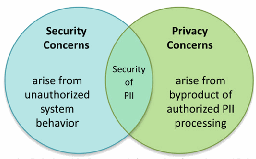

NIST IR 8200 日本語訳
英語タイトル : Interagency Report on the Status of International Cybersecurity Standardization for the Internet of Things (IoT)日本語タイトル : モノのインターネット（IoT）に関するサイバーセキュリティ国際標準化の状況についての省庁間報告書
公開日 : 2018-11-29
原文URL : https://csrc.nist.gov/pubs/ir/8200/final
翻訳編集 : 自動生成（有志による非公式の日本語訳）, 原文取得日 : 2026-10-31, 訳文 : 998 / 1004 ブロック
[要約] NIST IR 8200 は、モノのインターネット（IoT）に関するサイバーセキュリティの国際標準化の状況をまとめた、省庁間国際サイバーセキュリティ標準化作業部会（IICS WG）による報告書です。IICS WG が 2017 年に設置した IoT タスクグループの議論と貢献を反映したもので、作業部会の参加機関が標準化計画を立てる際の支援と、IoT に関する国際サイバーセキュリティ標準化への米国政府の参加の調整に役立てることを目的としています。想定読者は政府と一般市民の両方で、政策立案者、管理者、標準化参加者が標準の適時の策定と利用を目指す際の参考となるとされています。本文は、範囲と方法論、IoT とその応用例、サイバーセキュリティ上の目的・リスク・脅威、標準の全体像、選定した IoT アプリケーションに関する標準の状況を扱います。
NISTIR 8200
NISTIR 8200
Interagency Report on the Status of International Cybersecurity Standardization for the Internet of Things (IoT)
モノのインターネット（IoT）に関するサイバーセキュリティ国際標準化の状況についての省庁間報告書
Prepared by the Interagency International Cybersecurity Standardization Working Group
省庁間国際サイバーセキュリティ標準化作業部会により作成
This publication is available free of charge from:
https://doi.org/10.6028/NIST.IR.8200
本刊行物は次の場所から無料で入手できます。
https://doi.org/10.6028/NIST.IR.8200
［NIST のロゴ。公的な標章のため、この非公式サイトには掲載していません。原本 PDF を参照してください。］
NISTIR 8200
NISTIR 8200
Interagency Report on the Status of International Cybersecurity Standardization for the Internet of Things (IoT)
モノのインターネット（IoT）に関するサイバーセキュリティ国際標準化の状況についての省庁間報告書
Prepared by the Interagency International Cybersecurity Standardization Working Group
省庁間国際サイバーセキュリティ標準化作業部会により作成
NIST Editors:
Mike Hogan
Ben Piccarreta
Information Technology Laboratory
NIST 編集者:
Mike Hogan
Ben Piccarreta
情報技術ラボラトリー
This publication is available free of charge from:
https://doi.org/10.6028/NIST.IR.8200
本刊行物は次の場所から無料で入手できます。
https://doi.org/10.6028/NIST.IR.8200
November 2018
2018年11月
U.S. Department of Commerce
Wilbur L. Ross, Jr., Secretary
米国商務省
Wilbur L. Ross, Jr. 長官
National Institute of Standards and Technology
Walter Copan, NIST Director and Under Secretary of Commerce for Standards and Technology
米国国立標準技術研究所
Walter Copan、NIST 所長兼商務次官（標準・技術担当）
National Institute of Standards and Technology Interagency Report 8200
185 pages (November 2018)
米国国立標準技術研究所 省庁間報告書 8200
185 ページ（2018年11月）
This publication is available free of charge from:
https://doi.org/10.6028/NIST.IR.8200
本刊行物は次の場所から無料で入手できます。
https://doi.org/10.6028/NIST.IR.8200
Certain commercial entities, equipment, or materials may be identified in this document in order to describe an experimental procedure or concept adequately. Such identification is not intended to imply recommendation or endorsement by NIST, nor is it intended to imply that the entities, materials, or equipment are necessarily the best available for the purpose.
本文書では、実験の手順や概念を適切に説明するために、特定の商業事業者、機器、または資材を明示している場合があります。このような明示は、NIST による推奨や推薦を意味するものではなく、それらの事業者、資材、または機器が当該目的に利用可能なもののうち必ずしも最良であることを意味するものでもありません。
There may be references in this publication to other publications currently under development by NIST in accordance with its assigned statutory responsibilities. The information in this publication, including concepts and methodologies, may be used by federal agencies even before the completion of such companion publications. Thus, until each publication is completed, current requirements, guidelines, and procedures, where they exist, remain operative. For planning and transition purposes, federal agencies may wish to closely follow the development of these new publications by NIST.
本刊行物では、NIST が法令上の責務に従って現在策定中の他の刊行物に言及している場合があります。概念や方法論を含む本刊行物の情報は、そうした関連刊行物の完成前であっても、連邦機関が利用してもよいです。したがって、各刊行物が完成するまでは、現行の要件、ガイドライン、および手順が存在する場合には、引き続き有効です。計画および移行のため、連邦機関は、NIST によるこれらの新しい刊行物の策定状況を注意深く追うことを検討してもよいです。
Organizations are encouraged to review all draft publications during public comment periods and provide feedback to NIST. Many NIST cybersecurity publications, other than the ones noted above, are available at https://csrc.nist.gov/publications.
組織は、パブリックコメント期間中にすべてのドラフト刊行物を確認し、NIST にフィードバックを提供すべきです。上記以外にも、多くの NIST サイバーセキュリティ刊行物が https://csrc.nist.gov/publications で入手できます。
Comments on this publication may be submitted to:
National Institute of Standards and Technology
Attn: Information Technology Laboratory
100 Bureau Drive (Mail Stop 8900) Gaithersburg, MD 20899-8900
Email: NISTIR-8200@nist.gov
本刊行物に対するコメントは、次の宛先に提出できます。
National Institute of Standards and Technology
Attn: Information Technology Laboratory
100 Bureau Drive (Mail Stop 8900) Gaithersburg, MD 20899-8900
電子メール: NISTIR-8200@nist.gov
All comments are subject to release under the Freedom of Information Act (FOIA).
すべてのコメントは、情報自由法（FOIA）に基づく公開の対象となります。
Reports on Computer Systems Technology
コンピュータシステム技術に関する報告書
The Information Technology Laboratory (ITL) at the National Institute of Standards and Technology (NIST) promotes the U.S. economy and public welfare by providing technical leadership for the Nation’s measurement and standards infrastructure. ITL develops tests, test methods, reference data, proof of concept implementations, and technical analyses to advance the development and productive use of information technology. ITL’s responsibilities include the development of management, administrative, technical, and physical standards and guidelines for the cost-effective security and privacy of other than national security-related information in federal information systems.
米国国立標準技術研究所（NIST）の情報技術ラボラトリー（ITL）は、国の計測・標準インフラストラクチャに対して技術的なリーダーシップを提供することにより、米国の経済と公共の福祉を促進しています。ITL は、情報技術の開発と生産的な利用を促進するため、テスト、テスト方法、参照データ、概念実証の実装、および技術分析を開発しています。ITL の責務には、連邦情報システムにおける国家安全保障に関係しない情報について、費用対効果の高いセキュリティとプライバシーを確保するための、管理上、運用上、技術上、および物理上の標準とガイドラインの策定が含まれます。
Abstract
概要
The Interagency International Cybersecurity Standardization Working Group (IICS WG) was established in December 2015 by the National Security Council’s Cyber Interagency Policy Committee. Its purpose is to coordinate on major issues in international cybersecurity standardization and thereby enhance U.S. federal agency participation in the process.
省庁間国際サイバーセキュリティ標準化作業部会（IICS WG）は、2015年12月に国家安全保障会議のサイバー省庁間政策委員会によって設置されました。その目的は、国際サイバーセキュリティ標準化における主要な課題について調整を行い、それによって米国連邦機関のこのプロセスへの参加を強化することです。
Effective U.S. Government participation involves coordinating across the federal government and working with the U.S. private sector. The U.S. relies more heavily on the private sector for standards development than do many other countries. Companies and industry groups, academic institutions, professional societies, consumer groups, and other interested parties are major contributors to this process. Further, the many Standards Developing Organizations (SDOs) which provide the infrastructure for the standards development are overwhelmingly private sector organizations.
米国政府の効果的な参加には、連邦政府全体での調整と、米国の民間部門との連携が必要です。米国は、他の多くの国々に比べ、標準開発を民間部門に大きく依存しています。企業や業界団体、学術機関、専門家団体、消費者団体、その他の利害関係者は、このプロセスの主要な貢献者です。さらに、標準開発の基盤を提供する多くの標準開発組織（SDO）は、圧倒的に民間部門の組織です。
On April 25, 2017, the IICS WG established an Internet of Things (IoT) Task Group to determine the current state of international cybersecurity standards development for IoT. This report is intended for use by the working group member agencies to assist them in their standards planning and to help coordinate U.S. Government participation in international cybersecurity standardization for IoT. Other organizations may also find this document useful in their planning.
2017年4月25日、IICS WG は、IoT に関するサイバーセキュリティ標準開発の現状を把握するため、モノのインターネット（IoT）タスクグループを設置しました。本報告書は、作業部会の参加機関が標準化計画を立てる際の支援と、IoT に関する国際サイバーセキュリティ標準化への米国政府の参加の調整に役立てるためのものです。他の組織も、計画を立てる際に本文書を有用と感じるかもしれません。
Keywords
キーワード
cybersecurity; cybersecurity objectives; cybersecurity risks; cybersecurity threats; IT; information technology; IoT; Internet of Things; IoT components; IoT systems; SDO; standards developing organizations; standards; standards gaps
cybersecurity; cybersecurity objectives; cybersecurity risks; cybersecurity threats; IT; information technology; IoT; Internet of Things; IoT components; IoT systems; SDO; standards developing organizations; standards; standards gaps
Acknowledgements
謝辞
This report reflects the contributions and discussions by the interagency membership of the Internet of Things (IoT) Task Group established by the Interagency International Cybersecurity Standardization Working Group (IICS WG). The IoT Task Group Co-Conveners were Kat Megas (NIST) and Mike Rosa (DHS).
本報告書は、省庁間国際サイバーセキュリティ標準化作業部会（IICS WG）が設置したモノのインターネット（IoT）タスクグループの省庁間メンバーによる貢献と議論を反映したものです。IoT タスクグループの共同招集者は、Kat Megas（NIST）と Mike Rosa（DHS）でした。
Additionally, the IoT Task Group would like to express its deep appreciation for the comments that were received from the 30 public reviewers of the draft report. Their thoughtful comments have enhanced the organization, content, and clarity of the final report.
さらに、IoT タスクグループは、報告書ドラフトに対して 30 名の外部レビュー担当者から寄せられたコメントに深く感謝します。思慮深いコメントにより、最終報告書の構成、内容、および明確さが向上しました。
In Memoriam
追悼
An enthusiastic and knowledgeable contributor to the IoT Task Group was Mike Staufenberg. Mike was a Booz Allen Hamilton Support Contractor to the Army CIO/G-6. Sadly, Mike passed suddenly during the development of this report. The IoT Task Group wishes to dedicate this report to Mike’s memory.
IoT タスクグループへの熱心で知識豊富な貢献者に、Mike Staufenberg がいました。Mike は、陸軍 CIO/G-6 の Booz Allen Hamilton 支援契約者でした。悲しいことに、本報告書の作成中に Mike は突然亡くなりました。IoT タスクグループは、本報告書を Mike の思い出に捧げます。
The IoT Task Group would like to acknowledge the specific contributions from the following IoT Task Group members:
IoT タスクグループは、次の IoT タスクグループメンバーによる具体的な貢献に謝意を表します。
Lisa Carnahan
National Institute of Standards and Technology (NIST)
Lisa Carnahan
米国国立標準技術研究所（NIST）
Megan Corso
Contract support to Department of Defense Chief Information Officer Cybersecurity (DoD CIO Cybersecurity)
Megan Corso
国防総省最高情報責任者サイバーセキュリティ室（DoD CIO Cybersecurity）への契約支援
Don Davidson
Department of Defense Chief Information Officer Cybersecurity (DoD CIO Cybersecurity)
Don Davidson
国防総省最高情報責任者サイバーセキュリティ室（DoD CIO Cybersecurity）
John (Mike) Davis
Department of Veterans Affairs (VA)
John (Mike) Davis
退役軍人省（VA）
Megan Doscher
National Telecommunications and Information Administration (NTIA)
Megan Doscher
米国商務省電気通信情報局（NTIA）
Marie Duran
The MITRE Corporation
Marie Duran
The MITRE Corporation
William Fisher
National Institute of Standards and Technology (NIST)
William Fisher
米国国立標準技術研究所（NIST）
Brian Fitzgerald
Food and Drug Administration (FDA)
Brian Fitzgerald
食品医薬品局（FDA）
Mike Hogan
National Institute of Standards and Technology (NIST)
Mike Hogan
米国国立標準技術研究所（NIST）
Elizabeth Koser
National Security Agency (NSA)
Elizabeth Koser
国家安全保障局（NSA）
Kat Megas
National Institute of Standards and Technology NIST
Kat Megas
米国国立標準技術研究所（NIST）
Michele Moss
Contract support to Department of Defense Chief Information Officer Cybersecurity (DoD CIO Cybersecurity)
Michele Moss
国防総省最高情報責任者サイバーセキュリティ部門（DoD CIO Cybersecurity）への契約支援
Ben Piccarreta
National Institute of Standards and Technology (NIST)
Ben Piccarreta
米国国立標準技術研究所（NIST）
Mike Rosa
Department of Homeland Security (DHS)
Mike Rosa
国土安全保障省（DHS）
Eric Simmon
National Institute of Standards and Technology (NIST)
Eric Simmon
米国国立標準技術研究所（NIST）
Mike Staufenberg
Contract support to Army Chief Information Officer (Army CIO)
Mike Staufenberg
陸軍最高情報責任者（Army CIO）への契約支援
Executive Summary
エグゼクティブサマリー
The Interagency International Cyber Security Working Group (IICS WG) was created in response to recommendations contained in the 2015 Interagency Report on Strategic U.S. Government Engagement in International Standardization to Achieve U.S. Objectives for Cybersecurity (NIST Interagency Report 8074 Volume 1 [1]). This working group coordinates on major issues in international cybersecurity standardization. It established an Internet of Things (IoT) Task Group to develop this report on the status of international cybersecurity standards relevant to IoT.
省庁間国際サイバーセキュリティ作業部会（IICS WG）は、2015年の省庁間報告書「米国の目標を達成するための国際標準化への米国政府の戦略的関与（サイバーセキュリティ）」（NIST Interagency Report 8074 Volume 1 [1]）に含まれる勧告を受けて設置されました。この作業部会は、国際サイバーセキュリティ標準化における主要な課題について調整を行います。作業部会は、IoT に関連する国際サイバーセキュリティ標準の状況に関する本報告書を作成するため、モノのインターネット（IoT）タスクグループを設置しました。
The growth of network-connected devices, systems, and services comprising the IoT creates immense opportunities and benefits for our society [2]. However, to reap the great benefits of IoT and to minimize the potentially significant risks, these network-connected devices need to be secure and resilient. This depends in large part upon the timely availability and widespread adoption of clear and effective international cybersecurity standards.
IoT を構成するネットワーク接続された機器、システム、サービスの増加は、社会に計り知れない機会と恩恵をもたらします [2]。しかし、IoT の大きな恩恵を享受し、潜在的に重大なリスクを最小化するには、これらのネットワーク接続された機器が安全でレジリエントである必要があります。これは、明確で効果的な国際サイバーセキュリティ標準が適時に利用可能となり、広く採用されるかどうかに大きく左右されます。
Both the government and the broader public are intended audiences for this report, which aims to inform and enable policymakers, managers, and standards participants as they seek timely development and use of such standards in IoT components, systems, and related services.
本報告書の想定読者は政府と一般市民の両方であり、政策立案者、管理者、標準化参加者が、IoT コンポーネント、システム、および関連サービスにおけるそうした標準の適時の策定と利用を目指す際に、情報を提供し、その助けとなることを目的としています。
This report relies upon terms and definitions defined in Annex A – Terms and Definitions of NISTIR 8074 Volume 2 [3]. It aims to establish a common understanding of IoT components, systems and applications for which standards could be relevant. The report starts with a functional description of IoT components, which are the basic building blocks of IoT systems.
本報告書は、NISTIR 8074 Volume 2 [3] の Annex A – Terms and Definitions に定義された用語と定義に依拠しています。標準が関連しうる IoT コンポーネント、システム、およびアプリケーションについて、共通の理解を確立することを目指しています。報告書はまず、IoT システムの基本的な構成要素である IoT コンポーネントの機能的な説明から始めます。
To provide insights into the present state of IoT cybersecurity standardization, the report describes five IoT technology application areas. These areas are certainly not exhaustive, but they are sufficiently representative to use in analyzing the present state of IoT cybersecurity standardization:
IoT サイバーセキュリティ標準化の現状について知見を提供するため、本報告書は 5 つの IoT 技術の応用分野を説明します。これらの分野は決して網羅的ではありませんが、IoT サイバーセキュリティ標準化の現状を分析するうえで使用するのに十分な代表性があります。
•Connected vehicle IoT enables vehicles, roads, and other infrastructure to communicate and share vital transportation information.
•コネクテッドビークル IoT は、車両、道路、その他のインフラストラクチャが通信し、重要な交通情報を共有できるようにします。
•Consumer IoT consists of IoT applications in residences as well as wearable and mobile devices.
•コンシューマー IoT は、住宅内の IoT アプリケーションに加え、ウェアラブル機器やモバイル機器で構成されます。
•Health IoT processes data derived from sources such as electronic health records and patient-generated health data.
•ヘルス IoT は、電子カルテや患者生成健康データなどの情報源に由来するデータを処理します。
•Smart building IoT includes energy usage monitoring systems, physical access control security systems and lighting control systems.
•スマートビルディング IoT には、エネルギー使用量の監視システム、物理アクセス制御のセキュリティシステム、および照明制御システムが含まれます。
•Smart manufacturing IoT enables enterprise-wide integration of data, technology, advanced manufacturing capabilities, and cloud and other services.
•スマート製造 IoT は、データ、技術、高度な製造能力、クラウドおよびその他のサービスのエンタープライズ全体にわたる統合を可能にします。
IoT cybersecurity objectives, risks, and threats are then analyzed for IoT applications in general and for each of the five illustrative IoT technology application areas. Cybersecurity objectives for traditional information technology (IT) systems generally prioritize Confidentiality, then Integrity, and lastly Availability. IoT systems cross multiple sectors as well as use cases within those sectors. Accordingly, cybersecurity objectives may be prioritized very differently by various parties, depending on the application. The increased ubiquity of IoT components and systems heighten the risks they present. Standards-based cybersecurity risk management will continue to be a major factor in the trustworthiness of IoT applications. Analysis of the application areas makes it clear that cybersecurity for IoT is unique and requires tailoring existing standards and creating new standards to address challenges, for example: pop-up network connections, shared system components, the ability to change physical aspects of the environment, and related connections to safety.
続いて、IoT アプリケーション全般と、例示する 5 つの IoT 技術応用分野のそれぞれについて、IoT のサイバーセキュリティ目的、リスク、および脅威を分析します。従来の情報技術（IT）システムのサイバーセキュリティ目的は、一般に機密性を最優先し、次に完全性、最後に可用性を優先します。IoT システムは複数のセクターにまたがり、各セクター内のユースケースにもまたがります。したがって、サイバーセキュリティ目的の優先順位は、アプリケーションに応じて関係者ごとに大きく異なる場合があります。IoT コンポーネントとシステムの普及が進むにつれて、それらがもたらすリスクは高まります。標準に基づくサイバーセキュリティリスクマネジメントは、今後も IoT アプリケーションの信頼性を左右する主要な要因であり続けます。応用分野の分析から、IoT のサイバーセキュリティは独特であり、たとえば一時的なネットワーク接続、共有システムコンポーネント、物理環境の側面を変更する能力、および安全性に関連する接続といった課題に対処するため、既存の標準を調整し、新たな標準を作成する必要があることが明らかになります。
Building upon NISTIR 8074 Volume 2, this report describes 12 cybersecurity core areas and provides examples of relevant standards. The analysis is based on the information in Annex D, which maps cybersecurity standards that may be relevant for IoT systems to the dozen cybersecurity core areas. The annotated standards listings in Annex D are not exhaustive, but they represent an extensive effort to identify presently relevant IoT cybersecurity standards. The market impacts of existing standards are noted; possible gaps in standards are identified in Section 8. While the Annex D listing is a onetime snapshot, it should prove useful as a point of departure for maintaining awareness of the evolving standards landscape. A summary of the status of cybersecurity standardization for the five specific examples of IoT applications is provided in Table 4.
NISTIR 8074 Volume 2 を土台として、本報告書は 12 のサイバーセキュリティコア領域を説明し、関連する標準の例を示します。分析は Annex D の情報に基づいており、Annex D は、IoT システムに関連しうるサイバーセキュリティ標準を 12 のサイバーセキュリティコア領域に対応付けています。Annex D の注釈付き標準一覧は網羅的ではありませんが、現時点で関連する IoT サイバーセキュリティ標準を特定するための大規模な取り組みを表しています。既存の標準の市場への影響を記載し、標準に存在しうるギャップをセクション 8 で特定しています。Annex D の一覧は一時点のスナップショットですが、変化する標準の全体像を把握し続けるための出発点として役立つはずです。5 つの具体的な IoT アプリケーション例に関するサイバーセキュリティ標準化の状況の要約は、表 4 に示します。
The report’s conclusions focus upon the issue of standards gaps and the effective use of existing standards. For example, further standards work is needed to secure communications which leverage the Internet as the main gateway for IT to Operations Technology (OT).
本報告書の結論は、標準のギャップの問題と、既存の標準の効果的な活用に焦点を当てています。たとえば、IT から運用技術（OT）への主要なゲートウェイとしてインターネットを活用する通信を保護するには、さらなる標準化の作業が必要です。
For identified priorities, agencies should work with industry to initiate new standards projects in Standards Developing Organizations (SDOs) to close such gaps. In accordance with U.S. Government policy [4], agencies should:
特定された優先事項について、各機関は、これらのギャップを埋めるため、産業界と協力して標準開発組織（SDO）で新たな標準化プロジェクトを開始すべきです。米国政府の政策 [4] に従い、各機関は次のことをすべきです。
•participate in the development of IoT cybersecurity standards,
•IoT サイバーセキュリティ標準の策定に参加します。
•cite appropriate standards in their procurements based upon their mission, and
•任務に基づき、調達において適切な標準を引用します。
•work with industry to support the development of appropriate conformity assessment schemes to help assure that the requirements in such standards are met.
•産業界と協力して、これらの標準の要件が満たされていることの保証に役立つ、適切な適合性評価スキームの策定を支援します。
Table of Contents
目次
List of Annexes
附属書一覧
Annex A— Some IoT Definitions and Descriptions — 60
附属書A— IoT の定義と説明（一部） — 60
Annex B— Key IoT Capabilities Transformations — 62
付属書 B— IoT の鍵となる能力の変容 — 62
Annex C— An IT Standards Maturity Model — 63
付属書 C— IT 標準の成熟度モデル — 63
Annex D— IoT Standards Mapping to Core Areas of Cybersecurity — 64
付属書 D— IoT 標準とサイバーセキュリティのコア領域との対応付け — 64
Annex E— NIST Federal Information Processing Standards (FIPS), NIST Internal Report (NISTIR), and NIST Special Publication 800 Series Relevant to IoT — 163
付属書 E— IoT に関連する NIST 連邦情報処理標準（FIPS）、NIST 内部報告書（NISTIR）、および NIST Special Publication 800 シリーズ — 163
Annex F— Acronyms — 166
付属書 F— 略語 — 166
Annex G— References — 170
付属書 G— 参考文献 — 170
Annex H— Bibliography — 174
付属書 H— 文献目録 — 174
List of Figures
図一覧
Figure 9 – An Example of a Smart Manufacturing Environment
図 9 – スマート製造環境の例
Figure 10 – Security Management Plan
図 10 – セキュリティ管理計画
List of Tables
表一覧
1 Introduction
1 はじめに
The Internet of Things (IoT) has already changed the world for individuals, as consumers and citizens, as well as for governments and industry. The IoT is expected to provide more revolutionary capability and become more ubiquitous. Yet, the adoption of IoT brings cybersecurity risks that pose a significant threat to the Nation, to organizations, and to individuals1.
モノのインターネット（IoT）は、消費者や市民としての個人にとって、また政府や産業界にとっても、すでに世界を変えました。IoT は、さらに革新的な能力をもたらし、いっそう遍在するようになると期待されています。しかし、IoT の普及は、国、組織、および個人に重大な脅威をもたらすサイバーセキュリティリスクを伴います1。
Securing IoT devices is a major challenge, as manufactures tend to focus on functionality, compatibility requirements, customer convenience, and time-to-market rather than security. Meanwhile, security threats are increasing. For example, Symantec reported a 600 % increase in attacks against IoT devices from 2016 to 2017 [5].
IoT 機器のセキュリティ確保は大きな課題です。製造業者は、セキュリティよりも、機能性、互換性要件、顧客の利便性、および市場投入までの時間に重点を置く傾向があるためです。一方、セキュリティ上の脅威は増加しています。たとえば、Symantec は、2016年から2017年にかけて IoT 機器に対する攻撃が 600 % 増加したと報告しています [5]。
The President’s National Security Telecommunications Advisory Committee (NSTAC) has examined the cybersecurity implications of IoT within the context of national security and emergency preparedness. This examination “found that IoT adoption will increase in both speed and scope, and that it will impact virtually all sectors of our society. Additionally, the NSTAC determined that there is a small—and rapidly closing—window to ensure that IoT is adopted in a way that maximizes security and minimizes risk. If the country fails to do so, it will be coping with the consequences for generations [6].”
大統領の国家安全保障通信諮問委員会（NSTAC）は、国家安全保障と緊急事態への備えの文脈で、IoT のサイバーセキュリティへの影響を検討しました。この検討では、「IoT の普及は速度と範囲の両面で拡大し、社会のほぼすべてのセクターに影響を及ぼすことが明らかになりました。さらに NSTAC は、IoT がセキュリティを最大化しリスクを最小化する形で普及することを確実にするための猶予は小さく、しかも急速に失われつつあると判断しました。国がそうし損なえば、その結果に何世代にもわたって対処することになるでしょう [6]。」
The President’s Commission on Enhancing National Cybersecurity reached a similar conclusion: “The IoT facilitates linking an incredible range of devices and products to each other and the world. Although this connectivity has the potential to revolutionize most industries and many facets of everyday life, the possible harm that malicious actors could cause by exploiting these technologies to gain access to parts of our critical infrastructure, given the current state of cybersecurity, is immense [7].”
国家サイバーセキュリティ強化に関する大統領委員会も、同様の結論に達しました。「IoT は、驚くほど広範な機器や製品を、相互に、そして世界と結びつけることを可能にします。この接続性は、ほとんどの産業と日常生活の多くの側面に革命をもたらす可能性がある一方で、サイバーセキュリティの現状を踏まえると、悪意ある者がこれらの技術を悪用して重要インフラストラクチャの一部にアクセスすることで引き起こしうる被害は計り知れません [7]」。
Our economy is increasingly global, complex, and interconnected. It is characterized by rapid advances in information technology (IT). IT products and services need to provide sufficient levels of cybersecurity and resilience. The timely availability of international cybersecurity standards is a dynamic and critical component for the cybersecurity and resilience of all information and communications systems and supporting infrastructures [1].
私たちの経済は、ますますグローバルで、複雑で、相互接続されたものになっています。経済は、情報技術（IT）の急速な進歩を特徴としています。IT の製品とサービスは、十分なレベルのサイバーセキュリティとレジリエンスを提供する必要があります。国際サイバーセキュリティ標準が適時に利用可能であることは、あらゆる情報通信システムおよびそれを支えるインフラストラクチャのサイバーセキュリティとレジリエンスにとって、動的かつ重要な要素です [1]。
The growth of network-connected devices, systems, and services comprising the IoT creates immense opportunities and benefits for our society [2]. However, to reap the great benefits of IoT and to minimize the potentially significant risks, these network-connected devices need to be secure and resilient. This depends in large part upon the timely availability and widespread adoption of clear and effective international cybersecurity standards.
IoT を構成するネットワーク接続された機器、システム、サービスの増加は、社会に計り知れない機会と恩恵をもたらします [2]。しかし、IoT の大きな恩恵を享受し、潜在的に重大なリスクを最小化するには、これらのネットワーク接続された機器が安全でレジリエントである必要があります。これは、明確で効果的な国際サイバーセキュリティ標準が適時に利用可能となり、広く採用されるかどうかに大きく左右されます。
2 Scope
2 範囲
Consistent with U.S. Government policy, agencies are encouraged to support the development and use of voluntary consensus standards, which are developed by predominantly private sector led voluntary consensus standards bodies [4]. This report examines the current state of international cybersecurity standards development by voluntary consensus standards bodies for IoT. It distills IoT down to the simplest concepts and describes the nuances associated with these concepts. It acknowledges but does not focus on specific technologies or concerns associated with IoT such as societal impact, safety, or privacy.
米国政府の政策に沿って、各機関は、主として民間部門が主導する自主的合意標準機関によって策定される自主的合意標準の策定と利用を支援することが推奨されます [4]。本報告書は、IoT に関して自主的合意標準機関が行う国際サイバーセキュリティ標準開発の現状を検討します。IoT を最も単純な概念にまで絞り込み、それらの概念に関連する微妙な差異を説明します。社会的影響、安全性、プライバシーなど、IoT に関連する特定の技術や懸念事項については、認識はしていますが、焦点を当てません。
This report recognizes that cybersecurity—and cybersecurity standards— can support individuals’ safety and privacy. For example, cybersecurity standards when applied to the confidentiality, integrity, or availability of personally identifiable information (PII) are an important component of protecting individuals’ privacy. However, privacy cannot be achieved solely by securing individuals’ PII (see Figure 1). As noted in NISTIR 8062, An Introduction to Privacy Engineering and Risk Management in Federal Systems, privacy concerns can arise from intentional or authorized processing of information about individuals, and in certain contexts, even measures used to secure PII can result in privacy issues [8].
本報告書は、サイバーセキュリティおよびサイバーセキュリティ標準が、個人の安全とプライバシーを支えうることを認識しています。たとえば、個人を特定できる情報（PII）の機密性、完全性、または可用性に適用されるサイバーセキュリティ標準は、個人のプライバシーを保護するうえで重要な要素です。しかし、プライバシーは、個人の PII を保護するだけでは達成できません（図 1 を参照）。NISTIR 8062, An Introduction to Privacy Engineering and Risk Management in Federal Systems に記されているように、プライバシーに関する懸念は、個人に関する情報の意図的な、または承認された処理から生じる場合があり、状況によっては、PII を保護するために用いられる対策でさえプライバシーの問題につながる場合があります [8]。

重なり合う2つの円のベン図です。左の円は「Security Concerns（セキュリティ上の懸念）」で、「unauthorized system behavior（許可されていないシステムの動作）」から生じます。右の円は「Privacy Concerns（プライバシー上の懸念）」で、「authorized PII processing（許可されたPII処理）」の副産物から生じます。重なりの部分は「Security of PII（PIIのセキュリティ）」です。
Figure 1 – Relationship Between Information Security and Privacy2
図 1 – 情報セキュリティとプライバシーの関係2
3 Methodology
3 方法論
This report uses terms and definitions as they are defined in Annex A – Terms and Definitions of NISTIR 8074 Volume 2, Supplemental Information for the Interagency Report on Strategic U.S. Government Engagement in International Standardization to Achieve U.S. Objectives for Cybersecurity, December 2015.
本報告書は、NISTIR 8074 Volume 2, Supplemental Information for the Interagency Report on Strategic U.S. Government Engagement in International Standardization to Achieve U.S. Objectives for Cybersecurity（2015年12月）の Annex A – Terms and Definitions に定義された用語と定義を使用します。
This report:
本報告書は次のことを行います。
•provides a functional description for IoT (Section 4);
•IoT の機能的な説明を示します（セクション 4）。
•describes several representative IoT applications (Section 5);
•代表的な IoT アプリケーションをいくつか説明します（セクション 5）。
•describes IoT cybersecurity objectives, risks, and threats (Section 6);
•IoT のサイバーセキュリティ目的、リスク、および脅威を説明します（セクション 6）。
•summarizes the cybersecurity core areas and provides examples of relevant standards (Section 7);
•サイバーセキュリティのコア領域を要約し、関連する標準の例を示します（セクション 7）。
•provides an analysis of the standards landscape for IoT cybersecurity, including market impact and possible standards gaps (Section 8);
•市場への影響と標準の不足の可能性を含め、IoT サイバーセキュリティをめぐる標準の全体像を分析します（セクション 8）。
•summarizes the status of international cybersecurity standards for selected IoT applications (Section 9); and
•選定した IoT アプリケーションに関する国際サイバーセキュリティ標準の状況を要約します（セクション 9）。
•maps cybersecurity standards that may be relevant for IoT systems to cybersecurity core areas (Annex D).
•IoT システムに関連しうるサイバーセキュリティ標準を、サイバーセキュリティのコア領域に対応付けます（Annex D）。
4 The Internet of Things (IoT)
4 モノのインターネット（IoT）
IoT is a concept based on creating systems that interact with the physical world using networked entities (e.g., sensors, actuators, information resources, people).
IoT は、ネットワーク接続されたエンティティ（例: センサー、アクチュエーター、情報資源、人）を用いて物理世界と相互作用するシステムを構築することに基づく概念です。
There can be confusion around the meaning of the term IoT for a variety of reasons. They include: the cross-cutting aspect of IoT (specifically with respect to application domains); the multitude of stakeholders involved in IoT and their specific use cases; the complexity of IoT; and the rapidly changing technology supporting IoT.
IoT という用語の意味については、さまざまな理由で混乱が生じる場合があります。その理由には、IoT の分野横断的な側面（特にアプリケーション領域に関して）、IoT に関わる多数の利害関係者とそれぞれのユースケース、IoT の複雑さ、IoT を支える技術の急速な変化があります。
While there is no universal definition of IoT, common elements exist among the many high-level definitions and descriptions for IoT. A few IoT definitions and descriptions from other sources are listed in Annex A. This report relies on the foundational concepts for IoT described in 4.1 below.
IoT の普遍的な定義はありませんが、IoT に関する多くの高水準の定義や説明には、共通する要素があります。他の情報源による IoT の定義と説明のいくつかを Annex A に示します。本報告書は、以下の 4.1 で説明する IoT の基礎となる概念に依拠しています。
4.1 Foundational Concepts
4.1 基礎となる概念
The IoT consists of two foundational concepts:
IoT は、2 つの基礎となる概念で構成されます。
•IoT components are connected by a network providing the potential for a many-to-many relationship between components (the network capability may or may not be Transmission Control Protocol/Internet Protocol (TCP/IP) based); and
•IoT コンポーネントは、コンポーネント間の多対多の関係を可能にするネットワークによって接続される（このネットワーク機能は、伝送制御プロトコル／インターネットプロトコル（TCP/IP）に基づく場合も、基づかない場合もあります）。
•Some IoT components have sensors and actuators that allow the components to observe (collect data about) and affect the physical world.
•一部の IoT コンポーネントは、センサーとアクチュエーターを備えており、物理世界を観察（データを収集）し、物理世界に影響を及ぼすことができます。
For the purposes of this report, the following definitions apply:
本報告書の目的上、次の定義を適用します。
IoT component: The basic building block of an IoT system. Multiple IoT components interact with each other to form a system and achieve one or more goals. Each IoT component provides some function that is necessary within the system. An IoT component:
IoT コンポーネント: IoT システムの基本的な構成要素。複数の IoT コンポーネントが相互に作用してシステムを形成し、1 つ以上の目標を達成します。各 IoT コンポーネントは、システム内で必要な何らかの機能を提供します。IoT コンポーネントは次の条件を満たします。
•must have at least one network interface that provides the ability to participate in a many-to-many network, although a given IoT component need not communicate with more than one other IoT component in a given system (e.g., assigning and limiting communication between two static IP addresses); and
•多対多のネットワークに参加できる少なくとも 1 つのネットワークインターフェースを備えていなければなりません。ただし、あるシステム内で、個々の IoT コンポーネントが 2 つ以上の他の IoT コンポーネントと通信する必要はありません（例: 2 つの静的 IP アドレス間の通信を割り当て、制限する場合）。
•has some combination of the following capabilities: actuating; application interface; data processing; data storing; data transferring; human user interface (UI); latent; sensing; and supporting.
•次の能力の何らかの組み合わせを備えています。アクチュエーション、アプリケーションインターフェース、データ処理、データ保存、データ転送、人間のユーザーインターフェース（UI）、潜在、センシング、および支援。
Other publications sometimes use “IoT device” as a synonym for “IoT component” or define “device” as an actuator or sensor. Moreover, traditional IT resources (such as servers) also can be considered IoT components.
他の刊行物では、「IoT 機器」を「IoT コンポーネント」の同義語として使用したり、「機器」をアクチュエーターまたはセンサーとして定義したりすることがあります。さらに、従来の IT 資源（サーバーなど）も IoT コンポーネントとみなせる場合があります。
System: a combination of interacting elements organized to achieve one or more stated purposes.
システム: 1 つ以上の定められた目的を達成するために編成された、相互作用する要素の組み合わせ。
IoT system: a system composed of networked IoT components or other, integrated IoT systems that interacts with a physical entity through sensors and/or actuators within the IoT components. IoT systems differ from conventional IT systems in their ability to directly interact with the physical world. IoT systems may also be considered IoT components if the system provides a network interface.
IoT システム: ネットワーク接続された IoT コンポーネント、または他の統合された IoT システムで構成され、IoT コンポーネント内のセンサーやアクチュエーター、あるいはその両方を通じて物理的なエンティティと相互作用するシステム。IoT システムは、物理世界と直接相互作用できる点で、従来の IT システムと異なります。システムがネットワークインターフェースを提供する場合、IoT システムも IoT コンポーネントとみなされる場合があります。
IoT environment: a set of IoT components and supporting technologies that are networked together and can be built into IoT systems. Such IoT systems are also part of the IoT environment. The Internet is an example of an IoT environment.
IoT 環境: ネットワークで相互に接続され、IoT システムに組み込むことができる、IoT コンポーネントと支援技術の集合。そうした IoT システムも IoT 環境の一部です。インターネットは IoT 環境の一例です。
As shown in Figure 2 below, the IoT component is the basic element of an IoT system, and provides some combination of the system’s capabilities.
下の図 2 に示すように、IoT コンポーネントは IoT システムの基本要素であり、システムの能力を何らかの組み合わせで提供します。
![Diagram of an IoT Component (large box) with arrows to its capabilities. To the right: "Application Interface Capability", "Human User Interface (UI) Capability" and "Network Interface Capability", grouped as "Interface Capabilities"; and "Supporting Capability". Below: "Actuating Capability" and "Sensing Capability", grouped as "Transducer Capabilities"; "Data Transferring Capability", "Data Processing Capability" and "Data Storing Capability", grouped as "Data Capabilities"; and "Latent Capability".](assets/ir-8200/p0016-figure-01.png)
IoT Component（IoTコンポーネント）の大きな箱から各能力へ矢印が出ている図です。右側にはApplication Interface Capability（アプリケーションインタフェース能力）、Human User Interface (UI) Capability（ヒューマンユーザインタフェース能力）、Network Interface Capability（ネットワークインタフェース能力）があり、Interface Capabilities（インタフェース能力）としてまとめられています。また、Supporting Capability（支援能力）があります。下側にはActuating Capability（作動能力）とSensing Capability（感知能力）がTransducer Capabilities（トランスデューサ能力）として、Data Transferring Capability（データ転送能力）、Data Processing Capability（データ処理能力）、Data Storing Capability（データ保存能力）がData Capabilities（データ能力）としてまとめられ、さらにLatent Capability（潜在能力）があります。
Figure 2 – Capabilities of an IoT Component.
図 2 – IoT コンポーネントの能力
An IoT system builder combines IoT components to create an IoT system that can meet a set of requirements. By understanding each IoT component as a set of capabilities that are provided to the rest of the system, an IoT system builder can match those capabilities to the IoT system requirements. Using the capabilities model, an IoT component can be understood by the set of capabilities it can provide to a system. These capabilities are illustrated in Figure 2 above and described below.
IoT システム構築者は、IoT コンポーネントを組み合わせて、一連の要件を満たすことのできる IoT システムを作ります。各 IoT コンポーネントを、システムの残りの部分に提供される一連の能力として理解することで、IoT システム構築者は、それらの能力を IoT システムの要件に対応させることができます。能力モデルを用いると、IoT コンポーネントは、システムに提供できる能力の集合によって理解できます。これらの能力は、上の図 2 に示し、以下で説明します。
4.2 Capabilities of an IoT Component
4.2 IoT コンポーネントの能力
There are several types of IoT capabilities:
IoT の能力にはいくつかの種類があります。
•Transducer capabilities interact with the physical world.
•トランスデューサー能力は、物理世界と相互作用します。
•Data capabilities are directly involved in providing functionality to the system.
•データ能力は、システムへの機能の提供に直接関与します。
•Interface capabilities provide the component the ability to interact with other IoT components (including people).
•インターフェース能力は、コンポーネントが他の IoT コンポーネント（人を含む）と相互作用できるようにします。
•Supporting capabilities are indirectly involved in providing functionality to the system, such as monitoring, management, security, or orchestration (the arrangement and coordination of IoT components in an IoT system).
•支援能力は、監視、管理、セキュリティ、オーケストレーション（IoT システム内の IoT コンポーネントの配置と調整）など、システムへの機能の提供に間接的に関与します。
•Latent capabilities are transducer, data, interface, or supporting capabilities that are not currently enabled and accessible outside the IoT component.
•潜在能力は、現在は有効化されておらず、IoT コンポーネントの外部からアクセスできない、トランスデューサー能力、データ能力、インターフェース能力、または支援能力です。
Actuating
アクチュエーション
An actuating capability provides the ability to make a change in the physical world based on information given as input to the component. Examples include: heating coil (temperature control), electric shock delivery (cardiac pacing), electronic door lock (lock/unlock), unmanned aerial vehicle (UAV) operation (remote control), servo motors (simple motion/movement), and robotic arm (complex motion/movement).
アクチュエーション能力は、コンポーネントへの入力として与えられた情報に基づき、物理世界に変化を起こす能力を提供します。例には、加熱コイル（温度制御）、電気ショックの付与（心臓ペーシング）、電子ドアロック（施錠／解錠）、無人航空機（UAV）の操作（遠隔操作）、サーボモーター（単純な動き／運動）、ロボットアーム（複雑な動き／運動）があります。
Application Interface
アプリケーションインターフェース
An application interface capability provides the ability for other computing devices (components, systems, etc.) to communicate with the IoT component through an IoT component application. An example of an application interface is an application programming interface (API).
アプリケーションインターフェース能力は、他のコンピューティング機器（コンポーネント、システムなど）が、IoT コンポーネントのアプリケーションを通じて IoT コンポーネントと通信できる能力を提供します。アプリケーションインターフェースの一例は、アプリケーションプログラミングインターフェース（API）です。
Data Processing
データ処理
A data processing capability provides the ability to transform data based on an algorithm. The transformation may be very simple, with a single input variable and a single output, or it may be complex with multiple inputs and outputs. Control algorithms are an important type of processing that take the output of sensor(s) and actuator(s) or pre-processor(s) and provide an output that can be fed into an actuator or post-processor. These control algorithms often are used within negative feedback loops, but not always. A proportional-integral-derivative (PID)3 controller (widely used in industrial control systems) is an example of such a control algorithm. Another example is an algorithm which models the human insulin response in a real-time system that manages the function of an artificial pancreas. Additional examples of data processing include: data aggregation capability, predictive analysis, and binary (Yes/No) analysis.
データ処理能力は、アルゴリズムに基づいてデータを変換する能力を提供します。変換は、入力変数が 1 つで出力が 1 つの非常に単純なものの場合もあれば、複数の入力と出力を持つ複雑なものの場合もあります。制御アルゴリズムは、センサーやアクチュエーター、または前処理器の出力を取り込み、アクチュエーターまたは後処理器に入力できる出力を提供する、重要な種類の処理です。これらの制御アルゴリズムは、負帰還ループ内で使われることが多いですが、常にそうとは限りません。比例・積分・微分（PID）3 制御器（産業用制御システムで広く使われている）は、そのような制御アルゴリズムの一例です。もう 1 つの例は、人工膵臓の機能を管理するリアルタイムシステムにおいて、人間のインスリン応答をモデル化するアルゴリズムです。データ処理のその他の例には、データ集約能力、予測分析、および二値（Yes/No）分析があります。
Data Storing
データ保存
A data storing capability provides the ability to store and retrieve data for later use. Examples include storage of component input as well as the storage of component generated data, such as electronic patient records.
データ保存能力は、後で使用するためにデータを保存し、取り出す能力を提供します。例には、コンポーネントへの入力の保存のほか、電子カルテなど、コンポーネントが生成したデータの保存があります。
Data Transferring
データ転送
A data transferring capability provides the ability to move data from one physical or logical location to another. The data transferring capability provides the ability to ‘black box’ a network and provide information about the network without having to understand the specific network topology. A component’s data transferring capability impacts the latency of information flow as well as the rate at which that information can flow. Some examples of data transferring capability include data networks based on: Ethernet protocol, and Institute of Electrical and Electronics Engineers (IEEE) 802.11 wireless protocol.
データ転送能力は、データをある物理的または論理的な場所から別の場所へ移動する能力を提供します。データ転送能力により、ネットワークを「ブラックボックス」として扱い、特定のネットワークトポロジーを理解しなくてもネットワークに関する情報を提供できます。コンポーネントのデータ転送能力は、情報が流れる際のレイテンシーと、その情報が流れる速度に影響します。データ転送能力の例には、Ethernet プロトコルや Institute of Electrical and Electronics Engineers（IEEE）802.11 無線プロトコルに基づくデータネットワークがあります。
Human User Interface (UI)
人間のユーザーインターフェース（UI）
A human UI capability provides the ability for the component to interact directly with people. Not all IoT components will have a human UI. These components will pass information to other system components in order to support the UI capability. Examples include: optical and tactile displays and audio input and output.
人間 UI 能力は、コンポーネントが人と直接相互作用する能力を提供します。すべての IoT コンポーネントが人間 UI を備えるわけではありません。そうしたコンポーネントは、UI 能力を支援するために、情報を他のシステムコンポーネントに渡します。例には、光学式および触覚式のディスプレイ、ならびに音声の入出力があります。
Latent
潜在
Latent capabilities are not currently enabled for access externally to the IoT component. For example, a component may have a USB port, but nothing is plugged into that port. In that state, the USB port is considered a latent capability. It has the potential to be used at any time, and if someone attaches something to it, that could enable any of the other capabilities; if someone plugs a Wi-FiTM adapter into the USB port, the IoT component would then have an additional network interface capability.
潜在能力は、IoT コンポーネントの外部からのアクセスが現在は有効化されていない能力です。たとえば、コンポーネントに USB ポートがあっても、そのポートに何も接続されていない場合があります。その状態では、USB ポートは潜在能力とみなされます。これはいつでも使用できる可能性があり、誰かが何かを接続すれば、他のどの能力も有効にできます。誰かが Wi-FiTM アダプターを USB ポートに接続すれば、その IoT コンポーネントは追加のネットワークインターフェース能力を持つことになります。
Network Interface
ネットワークインターフェース
A network interface capability provides the interface between digital communication network components necessary for communicating data. Every IoT component must have at least one network interface capability. While the network interface capability allows for a component to be connected to a communication network, it does not provide the data transferring capability itself. Capability examples include: Ethernet adapter interface, cellular interface, and ZigBee radio interface.
ネットワークインターフェース能力は、データの通信に必要なデジタル通信ネットワークのコンポーネント間のインターフェースを提供します。すべての IoT コンポーネントは、少なくとも 1 つのネットワークインターフェース能力を備えていなければなりません。ネットワークインターフェース能力により、コンポーネントを通信ネットワークに接続できますが、データ転送能力そのものは提供しません。能力の例には、Ethernet アダプターインターフェース、セルラーインターフェース、ZigBee 無線インターフェースがあります。
Sensing
センシング
A sensing capability provides the ability to observe an aspect of the physical world. Examples include: temperature sensing (temperature measurement capability), computerized tomography (CT) scans4 (radiographic imaging), optical sensing, and audio sensing.
センシング能力は、物理世界の一側面を観察する能力を提供します。例には、温度センシング（温度測定能力）、コンピューター断層撮影（CT）スキャン4（放射線画像診断）、光学センシング、音声センシングがあります。
Supporting
支援
A supporting capability provides additional functional capabilities to support the IoT system. Examples include: orchestration, time synchronization, remote management, system memory encryption, authentication, and trusted execution.
支援能力は、IoT システムを支援するための追加の機能的能力を提供します。例には、オーケストレーション、時刻同期、遠隔管理、システムメモリの暗号化、認証、トラステッド実行があります。
An IoT Component as a Black Box
ブラックボックスとしての IoT コンポーネント
From an IoT perspective, a “black box” viewpoint of each component is useful, because an IoT system builder may not have access to any details of the internal workings of a particular IoT component. In fact, the internal workings of a component may change over time. This is especially relevant for IoT systems of systems, in which components are comprised of a set of other IoT components. When interfaces, capabilities, and limitations of a component are accurately and completely documented, including any details necessary for the system builder to map the component against capabilities to system requirements, the details of the inner workings may not be important. An IoT component that is documented in this manner provides the described capabilities within the described limitations, and can be easily integrated into systems, regardless of internal implementations. There are use cases where the internal workings of an IoT component may need to be completely documented and understood, including National Security Systems (NSS) and systems that carry a risk of injury or harm to an individual.
IoT の観点では、各コンポーネントを「ブラックボックス」とみなす見方が有用です。IoT システム構築者は、特定の IoT コンポーネントの内部動作の詳細にアクセスできない場合があるためです。実際、コンポーネントの内部動作は、時間とともに変化する場合があります。これは、コンポーネントが他の IoT コンポーネントの集合で構成される、IoT のシステムのシステムにおいて特に重要です。コンポーネントのインターフェース、能力、および制限が、システム構築者がコンポーネントの能力をシステム要件に対応付けるために必要な詳細を含めて、正確かつ完全に文書化されている場合、内部動作の詳細は重要ではないかもしれません。このように文書化された IoT コンポーネントは、記載された制限の範囲内で記載された能力を提供し、内部実装にかかわらず、システムに容易に統合できます。IoT コンポーネントの内部動作を完全に文書化して理解する必要がある可能性のあるユースケースもあり、これには国家安全保障システム（NSS）や、個人への傷害または危害のリスクを伴うシステムが含まれます。
4.3 IoT Attributes Affecting Cybersecurity
4.3 サイバーセキュリティに影響する IoT の属性
IoT systems include a diverse set of new applications across consumer and industrial sectors. Cybersecurity considerations include but are not limited to the following possible attributes of IoT:
IoT システムには、消費者向けおよび産業向けセクターにわたる多様な新しいアプリケーションが含まれます。サイバーセキュリティ上の考慮事項には、IoT の次のような属性が含まれますが、これらに限定されません。
•Some IoT systems have direct connections to owner networks, while others directly connect to non-owner networks. Some IoT systems have direct connections to both owner and non-owner networks.
•一部の IoT システムは所有者のネットワークに直接接続されますが、所有者以外のネットワークに直接接続されるものもあります。所有者と所有者以外の両方のネットワークに直接接続される IoT システムもあります。
•IoT systems may comprise highly distributed IoT components that have a variety of owners or no defined owner.
•IoT システムは、さまざまな所有者を持つ、または所有者が定められていない、高度に分散した IoT コンポーネントで構成される場合があります。
•Some IoT systems are intended for use by or association with a particular person or group of people, while others are autonomous.
•IoT システムの中には、特定の人または人々の集団による使用、あるいはそれらとの関連を想定したものもあれば、自律的なものもあります。
•Some IoT components use low-capability computing hardware (minimal processing, storage, etc.) and have low power consumption.
•一部の IoT コンポーネントは、低能力のコンピューティングハードウェア（最小限の処理能力、ストレージなど）を使用し、消費電力も低く抑えられています。
•Some IoT components are largely static (e.g., software cannot be updated, configuration cannot be changed as needed).
•一部の IoT コンポーネントは、ほぼ静的です（例: ソフトウェアを更新できない、必要に応じて構成を変更できない）。
•Some IoT components process data locally, some IoT components have their data processed remotely, and some do both.
•データをローカルで処理する IoT コンポーネントもあれば、データがリモートで処理される IoT コンポーネントもあり、その両方を行うものもあります。
•A single IoT sensor may collect massive volumes of data.
•1 つの IoT センサーが、大量のデータを収集する場合があります。
•IoT components are highly heterogeneous (operating systems, network interfaces/protocols, functions, etc.)
•IoT コンポーネントは非常に多様です（オペレーティングシステム、ネットワークインターフェース／プロトコル、機能など）。
•Many IoT systems rely on proprietary protocols for data communication.
•多くの IoT システムは、データ通信に独自プロトコルを使用しています。
•IoT systems are often deployed as part of highly dynamic systems and system environments.
•IoT システムは、きわめて動的なシステムおよびシステム環境の一部として展開されることがよくあります。
•Many IoT systems do not provide centralized management capabilities for the owner.
•多くの IoT システムは、所有者に集中管理機能を提供していません。
•Many IoT systems can be remotely controlled by first parties (e.g., manufacturers).
•多くの IoT システムは、製造者などの当事者が遠隔制御できます。
•Some IoT components are deployed in physically unrestricted locations, making it difficult to provide physical security.
•一部の IoT コンポーネントは、物理的に制限のない場所に展開されるため、物理セキュリティの提供が困難です。
•IoT components may encounter statistical errors when sensing and acting on physical objects.
•IoT コンポーネントは、物理的な対象物をセンシングし、それに作用する際に、統計的な誤差に遭遇する場合があります。
•IoT systems may affect the safety, reliability, resiliency, performance, and other aspects of an owner’s computing infrastructure and physical presence. If a failure occurs, the IoT system should be given to the desired failure mode. (e.g., keeping a partially compromised IoT component online, take a component offline.)
•IoT システムは、所有者のコンピューティングインフラストラクチャや物理的な存在の安全性、信頼性、レジリエンス、性能、その他の側面に影響を及ぼす場合があります。障害が発生した場合、IoT システムは望ましい障害モードに移行させるべきです（例: 部分的に危殆化した IoT コンポーネントをオンラインのままにする、またはコンポーネントをオフラインにする）。
•IoT systems may collect, store, and use data that the owner’s personnel are not aware of or cannot manage properly.
•IoT システムは、所有者の担当者が把握していない、または適切に管理できないデータを収集、保存、使用する場合があります。
•Some IoT systems have the ability to manage, update, and patch IoT components at scale.
•一部の IoT システムは、IoT コンポーネントを大規模に管理、更新、およびパッチ適用する能力を備えています。
•Some IoT systems support impromptu architectural changes.
•一部の IoT システムは、即興的なアーキテクチャの変更に対応します。
•Some IoT systems are created through novel combinations of existing IoT systems and data streams that are re-purposed for an application not envisioned by the original designers. Further, such IoT systems may evolve as additional sensors or data streams become available or accessible.
•一部の IoT システムは、既存の IoT システムとデータストリームを、当初の設計者が想定していなかったアプリケーション向けに転用して新たに組み合わせることで作られます。さらに、そうした IoT システムは、追加のセンサーやデータストリームが利用可能またはアクセス可能になるにつれて進化する場合があります。
•Some IoT systems include IoT components designed for decades-long use, such as smart meters in smart grid applications.
•一部の IoT システムには、スマートグリッドアプリケーションのスマートメーターなど、数十年にわたる使用を想定して設計された IoT コンポーネントが含まれます。
•IoT components may be poorly connected (dropped packets, interrupted connections).
•IoT コンポーネントは、接続状態が不良である場合があります（パケットの欠落、接続の中断）。
5 Examples of IoT Applications
5 IoT アプリケーションの例
For this report, five significant IoT applications have been selected. They are sufficiently representative to use in the analysis of the present state of IoT cybersecurity standardization. Each application is explained below, including information about some of the notable security challenges and potential solutions. Sections 6 and 7 of this report provide greater detail about these challenges and solutions.
本報告書では、5 つの重要な IoT アプリケーションを選定しました。これらは、IoT サイバーセキュリティ標準化の現状を分析するうえで使用するのに十分な代表性があります。各アプリケーションについて、注目すべきセキュリティ上の課題と考えられる解決策に関する情報を含めて、以下で説明します。これらの課題と解決策については、本報告書のセクション 6 と 7 でさらに詳しく説明します。
5.1 Connected Vehicles (CV)
5.1 コネクテッドビークル（CV）
In 1999, the Federal Communications Commission (FCC) allocated 75 MHz of spectrum in the 5.9 GHz band for use by Intelligent Transportations systems (ITS) for vehicle safety and mobility applications. Since then, communications techniques, such as Dedicated Short Range Communications (DSRC), are using this bandwidth for Connected Vehicle (CV) technology pilots. CV technology is expected to enable vehicles, roads, and other infrastructure to communicate and share vital transportation information. Vehicle-to-vehicle (V2V) and vehicle-to-infrastructure (V2I) studies are underway, including by the Intelligent Transportations Systems Joint Program Office (ITS-JPO) at the U.S. Department of Transportation (DOT).
1999年、連邦通信委員会（FCC）は、車両の安全性と移動性に関するアプリケーションのために、高度道路交通システム（ITS）が使用する 5.9 GHz 帯の 75 MHz のスペクトルを割り当てました。それ以来、専用狭域通信（DSRC）などの通信技術は、コネクテッドビークル（CV）技術の実証試験でこの帯域幅を使用しています。CV 技術は、車両、道路、その他のインフラストラクチャが通信し、重要な交通情報を共有できるようにすると期待されています。米国運輸省（DOT）の高度道路交通システム共同プログラム室（ITS-JPO）などにより、車車間（V2V）および路車間（V2I）の研究が進められています。
［第三者の画像。第三者の著作物のため、この非公式サイトには掲載していません。原本 PDF を参照してください。］
Figure 3 – Vehicle-to-Vehicle Communications [9]
図 3 – 車車間通信 [9]
DSRC is currently part of a CV pilot run by DOT, which expects that a vehicle will use DSRC to transmit its position, direction, and speed -- as well as other information -- to vehicles sharing the road. DSRC will also “talk” to equipment installed in the road itself and in other infrastructure, such as traffic signals, stop signs, toll booths, work or school zones, and railroad crossings [10]. One concept implementation of DSRC involves vehicles exchanging Basic Safety Messages (BSM), which will be included with security credentials (see Figure 3, above). A possible alternative to DSRC is a technology concept called Visible Light Communication (VLC). LED lights are increasingly being added to vehicles, and VLC can utilize these LED lights to communicate in the V2V and V2I scenarios.
DSRC は現在、DOT が実施する CV 実証試験の一部であり、DOT は、車両が DSRC を使って、位置、方向、速度、およびその他の情報を、道路を共有する車両に送信することを想定しています。DSRC は、道路そのものや、信号機、一時停止標識、料金所、工事区域や学校区域、踏切などの他のインフラストラクチャに設置された機器とも「会話」します [10]。DSRC の実装コンセプトの 1 つは、車両が基本安全メッセージ（BSM）を交換するもので、BSM にはセキュリティ資格情報が含まれます（上の図 3 を参照）。DSRC の代替となりうるものとして、可視光通信（VLC）という技術コンセプトがあります。車両には LED ライトが増えつつあり、VLC はこれらの LED ライトを利用して、V2V および V2I のシナリオで通信できます。
The Security Credential Management System (SCMS) Proof-of-Concept (POC) is under development by DOT. One objective is to support a subset of security needs for the CV Pilots Program. Each Pilot site must interface with and use the SCMS as part of its approach to address at least a subset of the Pilot’s security requirements [11]. The goal of the SCMS POC design is to provide security services to support V2V and V2I communications at current passenger-vehicle production levels (up to 17 million annually) for the first year of deployment.
セキュリティ資格情報管理システム（SCMS）の概念実証（POC）は、DOT が開発中です。目的の 1 つは、CV 実証プログラムのセキュリティニーズの一部を支援することです。各実証サイトは、実証のセキュリティ要件の少なくとも一部に対処するための手法の一環として、SCMS と連携し、これを使用しなければなりません [11]。SCMS POC の設計の目標は、導入初年度において、現在の乗用車の生産規模（年間最大 1,700 万台）での V2V および V2I 通信を支えるセキュリティサービスを提供することです。
［第三者の画像。第三者の著作物のため、この非公式サイトには掲載していません。原本 PDF を参照してください。］
Figure 4 – V2X Public Key Infrastructure Overview [9]
図 4 – V2X 公開鍵基盤の概要 [9]
An additional important goal of the SCMS POC system is to provide a flexible architecture that is capable of scaling to support larger numbers of V2V and V2I devices in the years following initial deployment [12]. The messages transmitted by vehicles are digitally signed for authentication and to indicate that the messages were not altered in transit. See Figure 4, above, for a V2V and V2I (consolidated as V2X) Public Key Infrastructure overview.
SCMS POC システムのもう 1 つの重要な目標は、初期導入後の数年間に、より多くの V2V および V2I 機器に対応できるよう拡張可能な、柔軟なアーキテクチャを提供することです [12]。車両が送信するメッセージは、認証のため、またメッセージが転送中に改ざんされていないことを示すために、デジタル署名されます。V2V と V2I（V2X に統合）の公開鍵基盤の概要は、上の図 4 を参照してください。
Significant privacy, safety, and security challenges associated with both of these projects remain. These include policies and laws governing the use of the information within BSM, and the security of BSMs, as well as the implementation and governance of a central Certificate Authority (CA).
これら両方のプロジェクトに関連して、プライバシー、安全性、セキュリティ上の重大な課題が残っています。これには、BSM 内の情報の使用を規定する方針や法律、BSM のセキュリティ、ならびに中央の認証局（CA）の実装とガバナンスが含まれます。
5.2 Consumer
5.2 コンシューマー
The consumer IoT includes all IoT applications for consumer products. In the residence, connected objects might include: thermostats, alarm systems, smoke detectors, doorbells, smart appliances (e.g., washers, dryers, refrigerators, ovens, televisions), door locks, door openers, smart lightbulbs, room occupancy sensors, motion detectors, security cameras, pet monitors, and baby monitors. Wearables for consumer use, such as smart wristwear and smart fabrics, as well as implants, for applications such as consumer health or identification, are also part of the consumer IoT. Smartphones often serve as the human user interface for these components, as do smart home assistants.
コンシューマー IoT には、消費者向け製品のすべての IoT アプリケーションが含まれます。住居では、接続されるオブジェクトとして、サーモスタット、警報システム、煙感知器、ドアベル、スマート家電（例: 洗濯機、乾燥機、冷蔵庫、オーブン、テレビ）、ドアロック、ドアオープナー、スマート電球、室内人感センサー、動体検知器、防犯カメラ、ペット見守り機器、ベビーモニターなどが考えられます。消費者向けのウェアラブル（スマートリストウェアやスマート生地など）や、消費者向けの健康管理や識別などの用途のためのインプラントも、コンシューマー IoT の一部です。スマートフォンは、スマートホームアシスタントと同様に、これらのコンポーネントの人間のユーザーインターフェースとして機能することが多くあります。
Home assistants are increasingly common. They can provide information, perform tasks, and control other IoT components. Home assistants often use conversational interfaces but can also use text and images as input. These voice-enabled user interface devices can be placed throughout a house. Every major smartphone operating system available today includes the ability to control these home assistants, which may connect and control some or all IoT components in the home.
ホームアシスタントはますます一般的になっています。ホームアシスタントは、情報を提供し、タスクを実行し、他の IoT コンポーネントを制御できます。ホームアシスタントは対話型インターフェースを使うことが多いですが、テキストや画像を入力として使うこともできます。これらの音声対応のユーザーインターフェース機器は、家中のどこにでも設置できます。現在利用できる主要なスマートフォンのオペレーティングシステムはすべて、これらのホームアシスタントを制御する機能を備えており、ホームアシスタントは、家庭内の IoT コンポーネントの一部またはすべてを接続して制御する場合があります。
Smart appliances can provide sensing and actuating capabilities, as well as a network interface. Examples include cooking appliances that can be remotely programmed and monitored, and refrigerators that alert the occupants when the milk is running low or the steak is going bad. A smart home security system may alert the home occupant to a burglary, high carbon monoxide levels, or a fire event, even if the occupant is not within the sounding alarm’s range (likely done through text, email, or dedicated app). Smart homes may include systems for fire detection, monitoring and communication for fire suppression, and alerting first responders. Chore automation is a growing trend for IoT devices in the home; autonomous home appliances and devices learn about users’ behaviors and identify the best time to perform tasks autonomously. For example, a thermostat, linked to the owner opening the garage door, adjusts the home’s temperature to the person’s liking. A refrigerator or kitchen cabinet may communicate with a smartphone to place an order directly to a grocery delivery service.
スマート家電は、ネットワークインターフェースに加えて、センシング機能と作動機能を備えることができます。例として、遠隔でプログラム設定や監視ができる調理器具や、牛乳が残り少なくなったとき、またはステーキが傷みかけているときに居住者に通知する冷蔵庫があります。スマートホームのセキュリティシステムは、居住者が警報の音の届く範囲内にいない場合でも、侵入窃盗、一酸化炭素濃度の上昇、または火災の発生を居住者に知らせることがあります（テキスト、電子メール、または専用アプリを通じて通知するものと考えられます）。スマートホームには、火災検知、消火のための監視と通信、および緊急対応要員への通知を行うシステムが含まれることがあります。家事の自動化は、家庭内 IoT 機器で広がりつつある傾向です。自律型の家電や機器は、ユーザーの行動を学習し、タスクを自律的に実行するのに最適な時間を特定します。たとえば、所有者によるガレージドアの開放と連動するサーモスタットは、その人の好みに合わせて家の温度を調整します。冷蔵庫やキッチンキャビネットは、スマートフォンと通信して食料品配達サービスに直接注文する場合があります。
While the idea of converting a home’s control to smart devices has benefits, some consumers may be hesitant to embrace IoT-based systems if they perceive that their safety and privacy are at risk. Proper implementation of security within consumer IoT software, firmware, and hardware is often a neglected and overlooked priority. Securing IoT devices is a major challenge, and manufacturers tend to focus on functionality, compatibility requirements, and time-to-market rather than security. While the adoption of consumer IoT devices is expected to explode in the near future, the increased popularity and acceptance by the consumer must be weighed against security risks inherent to every device attached to a network.
家庭の制御をスマート機器に切り替えるという考え方には利点がありますが、安全性とプライバシーが危険にさらされていると感じる場合、IoT ベースのシステムの採用をためらう消費者もいるかもしれません。コンシューマー IoT のソフトウェア、ファームウェア、ハードウェアにおけるセキュリティの適切な実装は、軽視され見過ごされがちな優先事項です。IoT 機器のセキュリティ確保は大きな課題であり、製造者は、セキュリティよりも、機能性、互換性要件、および市場投入までの時間に重点を置く傾向があります。コンシューマー IoT 機器の採用は近い将来に爆発的に増えると予想されていますが、消費者の間での人気と受容の高まりは、ネットワークに接続されたすべての機器に内在するセキュリティリスクと比較検討されなければなりません。
![Network diagram of a home lighting application. Four light bulbs connect by "MQTT over TLS/ZigBee" to an "IoT Gateway" ("IoT GW Authenticates and Authorizes connections"). A "Device Controller" connects to the gateway by "HTTP over TLS". The gateway connects by "WiFi" to a "Home Router/ Access Point", which connects to a "Smartphone w/ Lighting App" and to a cloud containing an "IoT Service to preconfigure IoT devices" and a "Device Registry"; a second "Smartphone w/ Lighting App" connects to the cloud.](assets/ir-8200/p0024-figure-01.png)
家庭の照明アプリケーションのネットワーク図です。4つの電球が「MQTT over TLS/ZigBee」で「IoT Gateway（IoTゲートウェイ）」（「IoT GW Authenticates and Authorizes connections」＝接続を認証・認可）に接続しています。「Device Controller（機器コントローラ）」は「HTTP over TLS」でゲートウェイに接続しています。ゲートウェイは「WiFi」で「Home Router/ Access Point（家庭のルータ／アクセスポイント）」に接続し、ルータは「Smartphone w/ Lighting App（照明アプリ付きスマートフォン）」と、「IoT Service to preconfigure IoT devices（IoT機器を事前設定するIoTサービス）」と「Device Registry（機器レジストリ）」を含むクラウドに接続しています。もう1台の照明アプリ付きスマートフォンもクラウドに接続しています。
Figure 5 – Home Lighting Application
図 5 – 家庭用照明アプリケーション
Consumers may not be aware of the far-reaching security vulnerabilities introduced by something as innocuous as connecting a smart LED bulb to the home network. A representative diagram for connecting a smart LED bulb to a home network is shown in Figure 5, above. Connecting a smart LED bulb illustrates typical network connectivity for a consumer IoT device. The smart LED bulb allows the homeowner, via either a smartphone or remote control device, to turn the bulb on or off as well as schedule its activation and deactivation. The homeowner can access web services to store configurations of color, illumination intensity, and activation/ deactivation schedules. These web-stored configurations can be used to seamlessly restore operation after a power outage.
消費者は、スマート LED 電球を家庭内ネットワークに接続するという、一見無害なことによって、広範囲に及ぶセキュリティ脆弱性がもたらされることに気づいていない場合があります。スマート LED 電球を家庭内ネットワークに接続する場合の代表的な図を、上の図 5 に示します。スマート LED 電球の接続は、コンシューマー IoT 機器の典型的なネットワーク接続を示しています。スマート LED 電球により、住宅所有者は、スマートフォンまたはリモコン機器のいずれかを使って、電球のオン・オフを切り替えたり、点灯と消灯のスケジュールを設定したりできます。住宅所有者は、Web サービスにアクセスして、色、照度、点灯／消灯のスケジュールの設定を保存できます。Web に保存されたこれらの設定は、停電後に動作をシームレスに復元するために使用できます。
If a consumer IoT device becomes compromised, it can be a gateway into the broader network. IoT threats could spread through networks and the Internet. By infecting a device and infiltrating one network, the threat can spread to an entirely separate network just by being in wireless range of another IoT device. In the case of a smart LED bulb, hackers in Wi-FiTM range can learn Wi-FiTM credentials sent in plain text and gain access to other systems and devices on the network and Internet. Possible attacks can range from spoofing connections to enabling malicious command and control of an IoT device by planting backdoors to create and launch an IoT distributed denial-of-service (DDoS) attack. Securing IoT devices so that consumer safety and privacy remains protected is a continuing challenge.
コンシューマー IoT 機器が危殆化すると、より広範なネットワークへの侵入口となることがあります。IoT の脅威はネットワークやインターネットを通じて拡散する可能性があります。機器に感染して一つのネットワークに侵入すると、別の IoT 機器の無線通信範囲内にいるだけで、脅威がまったく別のネットワークに拡散することがあります。スマート LED 電球の場合、Wi-FiTM の通信範囲内にいるハッカーは、平文で送信される Wi-FiTM の資格情報を知り、ネットワークやインターネット上の他のシステムや機器にアクセスできる可能性があります。考えられる攻撃は、接続のなりすましから、バックドアを仕込んで IoT 機器に対する悪意あるコマンド・アンド・コントロールを可能にし、IoT 分散型サービス拒否（DDoS）攻撃を作成・実行することまで多岐にわたります。消費者の安全性とプライバシーが保護され続けるよう IoT 機器を保護することは、継続的な課題です。
5.3 Health and Medical Devices
5.3 ヘルスおよび医療機器
IoT has recently gained traction by its spread from manufacturing to the electrical grid and other new sectors such as healthcare [13]. In the healthcare sector, health IoT components and systems gather, transmit and analyze personal data derived from sources such as electronic health records (EHR) containing personally identifiable information (PII), personal health records (PHR), patient generated health data, and other machine-generated healthcare data. Health IoT will support services such as real-time monitoring, medication compliance, and imaging.
IoT は最近、製造業から電力網、さらにヘルスケアなどの新しいセクターへと広がることで、勢いを得ています [13]。ヘルスケアセクターでは、ヘルス IoT のコンポーネントとシステムが、個人を特定できる情報（PII）を含む電子カルテ（EHR）、個人健康記録（PHR）、患者生成健康データ、その他の機械生成のヘルスケアデータなどの情報源に由来する個人データを収集、送信、分析します。ヘルス IoT は、リアルタイム監視、服薬遵守、画像診断などのサービスを支えます。
Characteristics of the Health IoT Environment
ヘルス IoT 環境の特性
The health IoT is characterized by its objects, information resources, people, systems, and intelligent services. Table 1 illustrates some of the principal characteristics of the healthcare domain.
ヘルス IoT は、そのオブジェクト、情報資源、人、システム、およびインテリジェントサービスによって特徴づけられます。表 1 は、ヘルスケア領域の主な特性のいくつかを示しています。
Table 1 – Characteristics of the Health IoT Environment
表 1 – ヘルス IoT 環境の特性
| Objects | Information Resources | Systems | Intelligent Computing Services |
|---|---|---|---|
|
|
|
|
| People | |||
|
|
| |
| オブジェクト | 情報資源 | システム | インテリジェントコンピューティングサービス |
|---|---|---|---|
|
|
|
|
| 人 | |||
|
|
| |
Use Cases
ユースケース
Wireless telecommunications companies have developed smart sensors that support wearable, implantable, injectable, and ingestible medical devices used in the healthcare industry, and vendors have incorporated them into products such as insulin pumps, cochlear implants, and pacemakers. Health IoT components “talk” to the Internet via a smart interactive interface connected to the device’s firmware [14]. The following use cases are representative of services that can be provided by the emerging health IoT.
無線通信事業者は、ヘルスケア業界で使われるウェアラブル、埋め込み型、注入型、摂取型の医療機器を支えるスマートセンサーを開発しており、ベンダーはそれらをインスリンポンプ、人工内耳、ペースメーカーなどの製品に組み込んでいます。ヘルス IoT コンポーネントは、機器のファームウェアに接続されたスマートな対話型インターフェースを通じて、インターネットと「会話」します [14]。次のユースケースは、新たに登場しつつあるヘルス IoT によって提供できるサービスの代表例です。

精密医療の研究事例の図です。上段には「Patient Medical Record（患者の診療記録）」「Scientific Data Warehouse（科学データウェアハウス）」「Genomic Data（ゲノムデータ）」「Study Mart（研究用データマート）」「Specimens（検体）」のデータストアがあり、相互に、また「Research（研究）」「Sequencing（シーケンシング）」の作業へ矢印でつながっています。下段では、患者がモバイル機器を介して「New Treatments from Breakthrough Research Findings（画期的な研究成果からの新しい治療）」、臨床医、「Monitoring Center（監視センター）」、「Family（家族）」とつながり、「Provide Specimens（検体の提供）」「Informed Consent（インフォームドコンセント）」「IoT Pill Box（IoT薬箱）」が示されています。
Figure 6 – Precision Medicine Research Case
図 6 – 精密医療研究の事例
Precision Medicine
精密医療
Precision Medicine is an example of health IoT that is among the factors driving market growth in healthcare [15]. Figure 6 represents the steps in precision medicine research. According to the National Institutes of Health (NIH), precision medicine is "an emerging approach for disease treatment and prevention that takes into account individual variability in genes, environment, and lifestyle for each person [16]."
精密医療は、ヘルスケアにおける市場成長の推進要因の 1 つであるヘルス IoT の一例です [15]。図 6 は、精密医療研究の手順を表しています。米国国立衛生研究所（NIH）によれば、精密医療とは「個人ごとの遺伝子、環境、ライフスタイルの個人差を考慮に入れた、疾病の治療と予防のための新たな手法 [16]」です。
An example scenario would be Alice is a disabled veteran who has been determined to have hepatitis C [HCV] brought on by drug use related to combat-induced stress. As normal treatments have failed, the Veterans Administration wants her to participate in a large-scale hepatitis research program involving clinical trials of DNA matched treatments in an environment containing data from hundreds of thousands of other patients. Emerging standards for information sharing, such as Health Level 7’s (HL7) Fast Healthcare Interoperability Resource (FHIR), provide Internet addressable information flow. Sequenced DNA from participant blood samples will be analyzed for efficacy of alternative hepatitis treatments. Alice consents to participate in the clinical trial. She receives medicine reminders via cellphone or via an IoT-enabled pillbox offering a wireless link to the patient, doctor, family members, and monitoring center. The pillbox helps to ensure Alice complies with the strict medication regimen times and sequences that are essential for the trial.
シナリオの一例として、Alice は障害のある退役軍人で、戦闘に起因するストレスに関連した薬物使用によって C 型肝炎［HCV］を発症したとされています。通常の治療法が失敗したため、退役軍人局は、数十万人の他の患者のデータを含む環境で、DNA に適合させた治療の臨床試験を含む大規模な肝炎研究プログラムに彼女が参加することを望んでいます。Health Level 7（HL7）の Fast Healthcare Interoperability Resource（FHIR）など、情報共有に関する新たな標準は、インターネット経由でアドレス指定可能な情報フローを提供します。参加者の血液検体からシーケンシングされた DNA は、代替的な肝炎治療の有効性を調べるために分析されます。Alice は臨床試験への参加に同意します。彼女は、携帯電話、または患者、医師、家族、監視センターへの無線リンクを提供する IoT 対応ピルボックスを通じて、服薬のリマインダーを受け取ります。このピルボックスは、試験に不可欠な厳格な服薬時刻と服薬順序を Alice が守れるようにするのに役立ちます。
Diabetes Treatment
糖尿病治療
Alice has decided to travel outside of the United States but is diabetic and wants to monitor her blood glucose levels and receive updates on her condition from her primary care provider.
Alice は米国外へ旅行することにしましたが、糖尿病を患っており、血糖値を監視して、かかりつけ医から自分の状態に関する最新情報を受け取りたいと考えています。
As Figure 7 shows, Alice has a wireless-enabled wearable glucose monitor and injection device (insulin pump). Blood sugar data reflecting the results of Alice’s advanced diabetes treatments which are being evaluated will be published electronically and provided to her after they are processed via intelligent computing technologies. Clinicians then will proactively evaluate and personalize her treatment, sending predictive alerts for hypoglycemia and insulin dosage updates.
図 7 に示すように、Alice は、無線対応のウェアラブル血糖モニターと注入装置（インスリンポンプ）を持っています。評価中の先進的な糖尿病治療の結果を反映した血糖データは、電子的に公開され、インテリジェントコンピューティング技術で処理された後、Alice に提供されます。その後、臨床医が治療を積極的に評価して個別化し、低血糖の予測アラートやインスリン投与量の更新を送信します。
［第三者の画像。第三者の著作物のため、この非公式サイトには掲載していません。原本 PDF を参照してください。］
Figure 7 – Diabetes Treatment/Allergen Identification
図 7 – 糖尿病の治療／アレルゲンの特定
Nutrition control
栄養管理
While still on travel Alice wants to know more about the nutrition aspects of the local food. She downloads an app which can recognize typical ingredients of many available menu choices and, when presented at the table, can estimate the caloric and nutritional values from the photo image of her plate. This allows her to make more appropriate choices later in the day when she has her next meal. The app also notes what she consumes and enters that data into a diabetes management app for her physician to monitor and study later.
旅行中も、Alice は現地の食べ物の栄養面についてもっと知りたいと考えています。彼女は、利用可能な多くのメニューの選択肢に含まれる典型的な食材を認識でき、食卓で提示された際に、皿の写真から熱量と栄養価を推定できるアプリをダウンロードします。これにより、その日の次の食事でより適切な選択ができます。このアプリは彼女が摂取したものも記録し、そのデータを糖尿病管理アプリに入力して、医師が後で監視し、検討できるようにします。
The physician can see in near real-time how the consumed food affects the existing insulin response and can suggest any necessary behavior changes by email.
医師は、摂取した食べ物が既存のインスリン反応にどのように影響するかをほぼリアルタイムで確認でき、必要な行動の変更があれば、電子メールで提案できます。
In the above examples, consent provides the core access control attribute needed to authorize disclosure and distribution of protected health information. Emerging healthcare security and messaging standards will enable information classification (labeling) that, with appropriate clearances, will provide interoperable security systems employing attribute-based access control (ABAC) methods. In the IoT, new models of computable healthcare trust may become commonplace.
上記の例では、同意が、保護対象の医療情報の開示と配布を認可するために必要な、中核的なアクセス制御属性となります。新たに登場しつつあるヘルスケアのセキュリティおよびメッセージングの標準により、情報の分類（ラベル付け）が可能となり、適切なクリアランスと組み合わせることで、属性ベースアクセス制御（ABAC）の手法を用いた相互運用可能なセキュリティシステムが実現します。IoT では、計算可能なヘルスケアの信頼という新しいモデルが一般的になる可能性があります。
5.4 Smart Buildings
5.4 スマートビルディング
The following GSA Smart Building application illustrates the general requirements for smart buildings.
次の GSA スマートビルディングのアプリケーションは、スマートビルディングの一般的な要件を示しています。
The GSA Headquarters Building includes over 750,000 square feet of space, two-thirds of which has been modernized. The structure incorporates a variety of smart building technologies to help its occupants work comfortably, while improving energy efficiency and achieving mandatory sustainability goals. The various technology components form an integrated automated environment (see Table 2 for an illustrative listing), that helps building and facilities managers achieve their goals of occupant satisfaction, energy use intensity, maintenance costs, water usage, and CO2 emissions.
GSA 本部ビルの床面積は 750,000 平方フィート（約 7 万平方メートル）を超え、その 3 分の 2 が近代化されています。この建物には、居住者が快適に働けるようにしつつ、エネルギー効率を改善し、義務付けられた持続可能性目標を達成するための、さまざまなスマートビルディング技術が組み込まれています。さまざまな技術コンポーネントが、統合された自動化環境を形成し（例示的な一覧は表 2 を参照）、ビルおよび施設の管理者が、居住者の満足度、エネルギー使用強度、保守コスト、水使用量、CO2 排出量に関する目標を達成するのに役立っています。
Table 2 – IoT Components for Intelligent Buildings
表 2 – インテリジェントビル向けの IoT コンポーネント
| IoT Components for Intelligent Buildings | ||
|---|---|---|
| Managed Infrastructure | People | Combined Systems |
|
|
|
| Sensing | Actuating | Computing |
|
| Processors/data stores
|
| インテリジェントビル向けの IoT コンポーネント | ||
|---|---|---|
| 管理対象のインフラストラクチャ | 人 | 複合システム |
|
|
|
| センシング | 作動 | コンピューティング |
|
| プロセッサー／データストア
|
Figure 8 illustrates a scenario that begins before GSA staff begin arriving Tuesday morning. A Universal Control system reviews its business rules and informs the HVAC system controller that a 20 % higher occupancy rate is expected. The system also checks the Hoteling Book-It system to estimate power and ventilation demands of all pre-scheduled meetings. The HVAC system initiates its cooling routines to compensate for the increased demand. As GSA staff and guests arrive, the Card Access and Security System sends data wirelessly to the Universal Control system that verifies that the rate of occupancy is within the projected arrival rate and no additional BTUs are needed.
図 8 は、火曜日の朝に GSA の職員が到着し始める前から始まるシナリオを示しています。統合制御システムがビジネスルールを確認し、占有率が 20 % 高くなると予想されることを HVAC システムのコントローラーに通知します。システムはホテリング予約システムも確認し、事前に予定されたすべての会議の電力と換気の需要を見積もります。HVAC システムは、増加した需要を補うため、冷房ルーチンを開始します。GSA の職員と来訪者が到着すると、カードアクセスおよびセキュリティシステムが統合制御システムにデータを無線で送信します。統合制御システムは、在館率が予測された到着率の範囲内であり、追加の BTU は不要であることを確認します。

GSA本部ビルの周囲に、スマートビルの各システムのアイコンを配置し、線でビルと結んだ図です。システムは「HVAC（空調）」「Fire Alarm System（火災報知システム）」「Weather Station（気象観測所）」「Renewable Energy System（再生可能エネルギーシステム）」「Data Center（データセンター）」「Card Access & Security System（カード入退室・セキュリティシステム）」「Shade Control System（日よけ制御システム）」「Lighting Control System（照明制御システム）」「Utility Metering（ユーティリティ計量）」「Power Management（電力管理）」「Hoteling Software（座席予約ソフトウェア）」「Digital Signage（デジタルサイネージ）」「Occupant Interface Dashboard（利用者向けダッシュボード）」です。
Figure 8 – IoT for the GSA Smart Building
図 8 – GSA スマートビルディングのための IoT
Around 2 p.m., a significant cold front moves into the area. The building’s Weather Station system, which is tied to the National Oceanic and Atmospheric Administration (NOAA) Internet Weather Service, detects the drop in outside temperature and feeds that data to the Occupant Interface Dashboard, which controls the Window Switch report and Shade Control system within each zone floor plan. As the outside cloud cover increases, the window shades are raised automatically, and the interior lights are increased by the Lutron Lighting Control System. After a while, several users begin to complain that it is too cold. Individually, they open the building control app and submit their requests to raise the temperature and increase the lighting in their area. The system receives this feedback and averages the input from other users to make adjustments, as well as record the information for future adjustments.
午後 2 時ごろ、強い寒冷前線がこの地域に移動してきます。建物の気象観測システムは、米国海洋大気庁（NOAA）のインターネット気象サービスと連携しており、外気温の低下を検知して、そのデータを居住者インターフェースダッシュボードに送ります。このダッシュボードは、各ゾーンのフロアプランにおける「Window Switch report」（窓スイッチレポート）とシェード制御システムを制御します。外の雲量が増えるにつれ、窓のシェードが自動的に開かれ、室内の照明は Lutron 照明制御システムによって明るくされます。しばらくすると、複数のユーザーが寒すぎると不満を訴え始めます。各ユーザーは、建物制御アプリを開き、自分のエリアの温度を上げ、照明を明るくするよう要求を送信します。システムはこのフィードバックを受け取り、他のユーザーからの入力と平均して調整を行うとともに、今後の調整のためにその情報を記録します。
By now, the meeting in GSA’s largest conference room, reserved until 3 p.m., has ended. The Hoteling Book-It system notifies the Universal Control system, which verifies that lack of occupants. To conserve energy, the air conditioning is placed into standby state and lights are turned off until the space is occupied again. At the end of the day, the facility manager reviews energy consumption and checks tomorrow’s meeting calendar. The dashboard alerts the manager to a large conference, with over 200 attendees, starting with a 7 a.m. breakfast. The manager verifies that AC and ventilation will begin one hour earlier and adjusts the power metering to ensure plug loads are adequate for the A/V equipment and number of devices expected.
このころには、午後 3 時まで予約されていた GSA 最大の会議室での会議が終了しています。ホテリング予約システムは統合制御システムに通知し、統合制御システムは、居住者がいないことを確認します。エネルギーを節約するため、空調はスタンバイ状態になり、その空間が再び使用されるまで照明が消されます。一日の終わりに、施設管理者はエネルギー消費量を確認し、翌日の会議のカレンダーを確認します。ダッシュボードは、午前 7 時の朝食から始まる、200 人を超える参加者の大規模な会議があることを管理者に知らせます。管理者は、空調と換気が 1 時間早く開始されることを確認し、予想される AV 機器とデバイスの数に対してプラグ負荷が十分であるよう、電力計測を調整します。
5.5 Smart Manufacturing5
5.5 スマート製造5
[Excerpt from NDIA CFAM effort, © NDIA — not reproduced on this unofficial site]
［NDIA CFAM effort からの引用。第三者（NDIA）の著作物のため、この非公式サイトには掲載していません。原本 PDF を参照してください。］
6 IoT Cybersecurity Objectives, Risks, and Threats
6 IoT のサイバーセキュリティ目的、リスク、および脅威
6.1 Overview
6.1 概要
Trustworthiness reflects the degree of confidence one has that the system performs as expected—with regard to characteristics including safety, security, privacy, reliability and resilience—in the face of environmental disruptions, human errors, system faults and attacks [18]. Trustworthiness of IoT systems will require active management of risks for privacy, safety, security, etc.
信頼性とは、環境の混乱、人為的ミス、システム障害、および攻撃に直面しても、安全性、セキュリティ、プライバシー、信頼性（reliability）、レジリエンスなどの特性に関して、システムが期待どおりに動作するという確信の度合いを反映するものです [18]。IoT システムの信頼性を確保するには、プライバシー、安全性、セキュリティなどのリスクを積極的に管理する必要があります。
Cybersecurity is the prevention of damage to, unauthorized use of, exploitation of, and—if needed—the restoration of electronic information and communications systems, and the information they contain, in order to strengthen the confidentiality, integrity and availability of these systems [3]. Cybersecurity risk management for IoT systems will continue to be a major factor in the trustworthiness of IoT applications.
サイバーセキュリティとは、電子的な情報通信システムおよびそれらが含む情報について、これらのシステムの機密性、完全性、および可用性を強化するために、損害、不正使用、および悪用を防止し、必要な場合には復旧することです [3]。IoT システムのサイバーセキュリティリスクマネジメントは、今後も IoT アプリケーションの信頼性にとって主要な要因であり続けます。
Cybersecurity Objectives
サイバーセキュリティ目的
Confidentiality: Preserving authorized restrictions on information access and disclosure, including means for protecting personal privacy and proprietary information;
機密性: 個人のプライバシーや専有情報を保護する手段を含め、情報へのアクセスと開示について認可された制限を維持すること。
Integrity: Guarding against improper information modification or destruction, and includes ensuring information non-repudiation and authenticity; and
完全性: 不適切な情報の改変や破壊から保護すること。情報の否認防止と真正性の確保を含みます。
Availability: Ensuring timely and reliable access to and use of information.
可用性: 情報への適時かつ信頼できるアクセスと使用を確保すること。
Given that IT innovation is outpacing the development of supporting standards, it is critical to be forward thinking about current and future cybersecurity needs. Cyber-attacks on one or more IoT components already have had cyber and physical implications. Traditional IT security focuses on confidentiality, integrity, and availability. Due to the nature of many IoT components, which interact with the physical world through sensors and actuators, IoT security also addresses threats to people, their objects, and their environment.
IT のイノベーションが、それを支える標準の策定を上回る速さで進んでいることから、現在および将来のサイバーセキュリティニーズについて先を見据えて考えることが重要です。1 つ以上の IoT コンポーネントに対するサイバー攻撃は、すでにサイバー面と物理面の両方に影響を及ぼしています。従来の IT セキュリティは、機密性、完全性、可用性に焦点を当てています。センサーとアクチュエーターを通じて物理世界と相互作用する多くの IoT コンポーネントの性質のため、IoT セキュリティは、人、その所有物、およびその環境に対する脅威にも対処します。
Cybersecurity objectives for traditional IT systems generally prioritize confidentiality, then integrity, and lastly availability. IoT systems cross multiple sectors as well as use cases within those sectors and their cybersecurity objectives may be prioritized very differently, depending on the application. For some IoT applications, availability or integrity may be the highest priority.
従来の IT システムのサイバーセキュリティ目的は、一般に機密性を最優先し、次に完全性、最後に可用性を優先します。IoT システムは、複数のセクターにまたがり、またそれらのセクター内の複数のユースケースにもまたがるため、そのサイバーセキュリティ目的の優先順位は、アプリケーションに応じて大きく異なる場合があります。一部の IoT アプリケーションでは、可用性や完全性が最優先となる場合があります。
“IIoT [Industrial IoT] organizations must place increased importance on safety and resilience beyond the levels expected in many traditional IT environments. IIoT systems may also have data flows that include intermediaries and involve multiple organizations, requiring more sophisticated security approaches than, for example, link encryption. Unfortunately, IT departments rarely speak the same language as those concerned with control systems and OT. The two perceive risk differently, and they cannot be combined for positive gain without a balanced consideration of their differing motivations [19].”
「IIoT［産業用 IoT］の組織は、従来の多くの IT 環境で期待されるレベルを超えて、安全性とレジリエンスをいっそう重視しなければなりません。IIoT システムには、仲介者を含み、複数の組織が関与するデータフローがある場合もあり、たとえばリンク暗号化よりも高度なセキュリティ手法が必要となります。残念ながら、IT 部門が制御システムや OT に関わる人々と同じ言葉で話すことはほとんどありません。両者はリスクを異なる形で捉えており、それぞれの異なる動機を均衡よく考慮しなければ、前向きな成果を得るために両者を組み合わせることはできません [19]」。
With the changing threat environment, the cybersecurity needs of the future—including the data that informs, reports, and controls functionality of the IoT—should be considered. Privacy, safety, authentication, and resilience contribute to IT and cybersecurity features. Evolutions in system security engineering approaches can aid in reducing the susceptibility of systems to a variety of simple, complex, and hybrid threats—including physical and cyber-attacks, structural failures, natural disasters, and errors of omission and commission. This reduction in susceptibility is accomplished by understanding stakeholder protection needs and employing sound security design principles and concepts throughout the system life cycle.
脅威環境が変化しているため、IoT の機能に情報を提供し、報告し、制御するデータを含め、将来のサイバーセキュリティニーズを考慮すべきです。プライバシー、安全性、認証、およびレジリエンスは、IT とサイバーセキュリティの機能に寄与します。システムセキュリティエンジニアリングの手法の進化は、物理攻撃やサイバー攻撃、構造上の故障、自然災害、不作為および作為の誤りなど、単純な脅威、複雑な脅威、複合的な脅威のさまざまなものに対するシステムの脆弱性を低減するのに役立ちます。この脆弱性の低減は、システムライフサイクル全体を通じて、利害関係者の保護ニーズを理解し、健全なセキュリティ設計原則と概念を用いることで達成されます。
The specific security objectives for industrial control systems in NIST SP 800-82 [20] can be adapted for IoT systems in general:
NIST SP 800-82 [20] における産業用制御システムの具体的なセキュリティ目的は、IoT システム全般に適合させることができます。
•Restricting logical access to the network and network activity. This may include using unidirectional gateways, a demilitarized zone network architecture with firewalls to prevent network traffic from passing directly between the corporate and IoT networks, and having separate authentication mechanisms and credentials for users of the corporate and IoT networks. An IoT system should use a network topology that has multiple layers, with each layer’s security considered separately, so that all communication occurs with as much security and reliability as afforded by the technology.
•ネットワークおよびネットワーク活動に対する論理アクセスの制限。これには、単方向ゲートウェイの使用、企業ネットワークと IoT ネットワークの間でネットワークトラフィックが直接通過するのを防ぐためのファイアウォール付き非武装地帯（DMZ）ネットワークアーキテクチャ、企業ネットワークと IoT ネットワークのユーザーに対する別個の認証メカニズムと資格情報の用意が含まれる場合があります。IoT システムは、各層のセキュリティを個別に考慮した複数層のネットワークトポロジーを使用すべきです。そうすることで、すべての通信が、技術によって実現できる範囲で最大限のセキュリティと信頼性を備えるようになります。
•Restricting physical access to IoT network and components. Unauthorized physical access to components could cause serious disruption of an IoT system’s functionality. A combination of physical access controls should be used, such as locks, card readers, and/or guards.
•IoT ネットワークおよびコンポーネントに対する物理アクセスの制限。コンポーネントへの不正な物理アクセスは、IoT システムの機能に深刻な混乱を引き起こす可能性があります。錠、カードリーダー、警備員などの物理アクセス制御を組み合わせて使用すべきです。
•Protecting individual IoT components from exploitation. This includes deploying security patches as expeditiously as possible, after testing them under field conditions; disabling all unused ports and services and assuring that they remain disabled; restricting IoT user privileges to only those that are required for each person’s role; tracking and monitoring audit trails; preventing RF attacks and restricting physical access; and using security controls such as antivirus software and file integrity checking software where technically feasible to prevent, deter, detect, and mitigate malware.
•個々の IoT コンポーネントを悪用から保護すること。これには、セキュリティパッチを、実環境の条件下でテストしたうえで、できる限り迅速に展開すること、未使用のポートとサービスをすべて無効にし、無効のままであることを保証すること、IoT ユーザーの権限を各人の役割に必要なものだけに制限すること、監査証跡を追跡し監視すること、RF 攻撃を防ぎ物理アクセスを制限すること、技術的に実現可能な場合は、マルウェアを防止、抑止、検知、緩和するために、ウイルス対策ソフトウェアやファイル完全性チェックソフトウェアなどのセキュリティ対策を使用することが含まれます。
•Preventing unauthorized modification of data. This includes data that is in transit (at least across the network boundaries) and at rest. Methods such as encryption and digital signatures can be used to preserve the integrity of data.
•データの不正な改変の防止。これには、転送中（少なくともネットワーク境界を越える場合）のデータと保存中のデータが含まれます。データの完全性を維持するために、暗号化やデジタル署名などの方法を使用できます。
•Detecting security events and incidents. Detecting security events, which have not yet escalated into incidents, can help defenders break the attack chain before attackers attain their objectives. This includes the capability to detect failed IoT components, unavailable services, and exhausted resources that are important to provide proper and safe functioning of an IoT system.
•セキュリティイベントとインシデントの検知。まだインシデントに拡大していないセキュリティイベントを検知することは、攻撃者が目的を達成する前に、防御側が攻撃の連鎖を断ち切るのに役立ちます。これには、IoT システムの適切かつ安全な機能を提供するために重要な、故障した IoT コンポーネント、利用できないサービス、枯渇した資源を検知する能力が含まれます。
•Maintaining functionality during adverse conditions. This involves designing IoT systems so that each critical component has a redundant counterpart. Additionally, if a component fails, it should fail in a manner that does not generate unnecessary traffic on IoT or other networks, or does not cause another problem elsewhere, such as a cascading event. IoT system should also allow for graceful degradation such as moving from “normal operation” with full automation to “emergency operation” with operators more involved and less automation to “manual operation” with no automation.
•不利な状況での機能の維持。これには、重要な各コンポーネントに冗長な対応物を持たせるよう IoT システムを設計することが含まれます。さらに、コンポーネントが故障した場合は、IoT ネットワークやその他のネットワークに不要なトラフィックを生成せず、連鎖的な事象など、他の場所で別の問題を引き起こさない形で故障すべきです。IoT システムは、フルオートメーションの「通常運用」から、オペレーターの関与が増えてオートメーションが減る「緊急運用」、さらにオートメーションのない「手動運用」へと移行するなど、段階的な機能縮退も可能にすべきです。
•Restoring the system after an incident. Incidents are inevitable, and an incident response plan is essential. A major characteristic of a good security program is how quickly an IoT system can be recovered after an incident has occurred.
•インシデント後のシステムの復旧。インシデントは避けられず、インシデント対応計画は不可欠です。優れたセキュリティプログラムの大きな特徴は、インシデントの発生後に IoT システムをどれだけ迅速に復旧できるかです。
Risks
リスク
For the purposes of this report, risk is a measure of the extent to which an entity is threatened by a potential circumstance or event and is typically a function of: (i) the adverse impacts that would arise if the circumstance or event occurs; and (ii) the likelihood of occurrence. For example, information security risks are those that arise from the loss of confidentiality, integrity, or availability of information or information systems. Information security risks reflect the potential adverse impacts to organizational operations (i.e., mission, functions, image, or reputation), organizational assets, individuals, other organizations, and the Nation. Risk assessment is the process of identifying, estimating, and prioritizing risks. Assessing risk requires the careful analysis of threat and vulnerability information to determine the extent to which circumstances or events could adversely impact an organization and the likelihood that such circumstances or events will occur [21].
本報告書の目的上、リスクとは、潜在的な状況や事象によってエンティティが脅かされる程度の尺度であり、通常、次の要素によって決まります。(i) その状況や事象が発生した場合に生じる悪影響、および (ii) 発生の可能性。たとえば、情報セキュリティリスクとは、情報または情報システムの機密性、完全性、または可用性の喪失から生じるリスクです。情報セキュリティリスクは、組織の運用（すなわち、任務、機能、イメージ、または評判）、組織の資産、個人、他の組織、および国に及ぶ潜在的な悪影響を反映します。リスクアセスメントとは、リスクを特定し、見積もり、優先順位付けするプロセスです。リスクを評価するには、状況や事象が組織に悪影響を及ぼしうる程度と、そうした状況や事象が発生する可能性を判断するために、脅威と脆弱性の情報を注意深く分析する必要があります [21]。
The proliferation and increased ubiquity of IoT components are likely to heighten the risks they present; particularly as cyber criminals work to develop new generations of malware dedicated to exploiting them. For instance, Dyn, a company that monitors and routes Internet traffic, was a victim of a DDoS attack in October 2016. This attack included thousands of IoT components infected with the “Mirai” malware. The torrent of traffic unleashed by the Mirai-infected IoT components overwhelmed Dyn’s systems and, in turn, rendered unavailable many high-traffic websites (e.g., PayPal, Twitter, Netflix, and CNN) that used Dyn’s Internet services for substantial periods of the day. The disruption of Dyn and associated Internet services underscores the significant, systemic harm that may be caused by malware dedicated to exploiting the security vulnerabilities of IoT components.
IoT コンポーネントの普及と遍在化の進展は、それらがもたらすリスクを高める可能性が高く、特に、サイバー犯罪者が IoT コンポーネントの悪用に特化した新世代のマルウェアの開発に取り組んでいる状況ではそうです。たとえば、インターネットトラフィックを監視し、経路を制御する企業である Dyn は、2016年10月に DDoS 攻撃の被害を受けました。この攻撃には、「Mirai」マルウェアに感染した数千の IoT コンポーネントが含まれていました。Mirai に感染した IoT コンポーネントが放った大量のトラフィックは Dyn のシステムを圧倒し、その結果、Dyn のインターネットサービスを利用していた、トラフィックの多い多くの Web サイト（例: PayPal、Twitter、Netflix、CNN）が、その日のかなりの時間にわたって利用できなくなりました。Dyn と関連するインターネットサービスの障害は、IoT コンポーネントのセキュリティ脆弱性の悪用に特化したマルウェアが引き起こしうる、重大でシステム全体に及ぶ被害を浮き彫りにしています。
As the market for IoT components expands, it is critical that manufacturers design components with security in mind and that system designers pay attention to new attack surfaces—in addition to evaluating the overall network risk.
IoT コンポーネントの市場が拡大するにつれ、製造者がセキュリティを念頭に置いてコンポーネントを設計し、システム設計者が、ネットワーク全体のリスクの評価に加えて、新たな攻撃対象領域に注意を払うことが重要です。
To minimize impact of the multiplicity of risks associated with IoT, they should not be assessed and monitored in isolation. Rather, they should be considered in the broader perspective of enterprise risk to ensure all aspects of threat and vulnerability are addressed.
IoT に関連する多様なリスクの影響を最小化するには、それらを個別に評価、監視すべきではありません。むしろ、脅威と脆弱性のあらゆる側面に確実に対処するため、エンタープライズリスクというより広い視点で考慮すべきです。
Threats
脅威
A threat is any circumstance or event with the potential to adversely impact organizational operations (including mission, functions, image, or reputation), organizational assets, individuals, other organizations, or the Nation through an information system via unauthorized access, destruction, disclosure, or modification of information, and/or denial of service [22].
脅威とは、情報システムを通じた、情報への不正アクセス、破壊、開示、改変、またはサービス拒否によって、組織の運用（任務、機能、イメージ、評判を含む）、組織の資産、個人、他の組織、または国に悪影響を及ぼす可能性のある、あらゆる状況または事象のことです [22]。
Threats exist to and from the IoT. Data storage and communication must be protected even as the growing quantity of components will increase the amount of data requiring protection. Threats to people, their property, and their interactions within society are becoming more abundant as a result of the growing attack surface.
脅威は、IoT に対しても、IoT からも存在します。データの保存と通信は保護されなければならず、一方でコンポーネントの数が増えるにつれて、保護を必要とするデータの量も増えます。攻撃対象領域の拡大の結果、人々、その財産、および社会における人々のやり取りに対する脅威は増えつつあります。
NIST SP 800-30 Revision 1 provides an extensive list of threats [21]. Methods of adversarial threats include:
NIST SP 800-30 Revision 1 は、脅威の広範な一覧を示しています [21]。敵対的脅威の手法には、次のものがあります。
•Perform reconnaissance and gather information;
•偵察を行い、情報を収集します。
•Craft or create attack tools;
•攻撃ツールを作り込む、または作成します。
•Deliver/insert/install malicious capabilities;
•悪意ある機能を送り込み／挿入／インストールします。
•Exploit and compromise;
•悪用し、侵害します。
•Conduct an attack (i.e., direct/coordinate attack tools or activities);
•攻撃を実行します（すなわち、攻撃ツールまたは活動を指示／調整する）。
•Achieve results (i.e., cause adverse impacts, obtain information); and
•成果を得ます（すなわち、悪影響を引き起こす、情報を入手する）。
•Maintain a presence or set of capabilities.
•プレゼンスまたは一連の能力を維持します。
Non-adversarial threats include mistakes by authorized privileged users and severe natural events such as earthquakes, floods, hurricanes, and tornadoes.
非敵対的脅威には、認可された特権ユーザーによる過誤と、地震、洪水、ハリケーン、竜巻などの深刻な自然現象があります。
6.2 Connected Vehicles
6.2 コネクテッドビークル
Cybersecurity Objectives
サイバーセキュリティ目的
| Confidentiality | V2V, V2I, and V2X communications require secure cryptographic authentication. |
|---|---|
| Integrity | The contents of messages (e.g., BSM) require protection from modification of the authentic information via cryptographic techniques. |
| Availability | The real-time nature of V2V, V2I, and V2X communications require resilient and secure networks. |
| 機密性 | V2V、V2I、および V2X の通信には、安全な暗号による認証が必要です。 |
|---|---|
| 完全性 | メッセージ（例: BSM）の内容は、暗号技術によって、正規の情報の改変から保護する必要があります。 |
| 可用性 | V2V、V2I、および V2X の通信のリアルタイム性には、レジリエントで安全なネットワークが必要です。 |
Vehicle manufacturers already focus on driver and passenger safety. Greater emphasis may be required due to the increased attack surface from V2V, V2I, and V2X communications. Beyond physical safety, there are privacy concerns. Users may connect and have access to their vehicles through their smartphones personal information on these components needs to be protected from unauthorized access through the vehicle. Similarly, the vehicle’s ability to perform as designed and as intended by the user must be protected from threats that may come through the mobile device.
車両製造者はすでに、運転者と同乗者の安全に重点を置いています。V2V、V2I、および V2X の通信による攻撃対象領域の拡大のため、さらに重点を置く必要がある場合があります。物理的な安全にとどまらず、プライバシーに関する懸念もあります。ユーザーはスマートフォンを通じて自分の車両に接続し、アクセスする場合があります。これらのコンポーネント上の個人情報は、車両を通じた不正アクセスから保護する必要があります。同様に、設計どおり、かつユーザーが意図したとおりに動作する車両の能力を、モバイル機器から及ぶ可能性のある脅威から保護しなければなりません。
Risks
リスク
Connected vehicles face many of the same risks as other IoT systems and cyber systems in general. Severe safety consequences to vehicles and people require risk assessments to be developed. Potential safety-critical risks include [23]:
コネクテッドビークルは、他の IoT システムやサイバーシステム全般と同じリスクの多くに直面します。車両と人に深刻な安全上の結果が生じうるため、リスクアセスメントを策定する必要があります。安全上重大となりうるリスクには、次のものがあります [23]。
•Driver distractions (volume, wipers, etc.);
•運転者の注意散漫（音量、ワイパーなど）。
•Engine shutoff or degradation; and
•エンジンの停止または性能低下。
•Steering changes (in drive-by-wire vehicles).
•ステアリングの変更（ドライブ・バイ・ワイヤ車両の場合）。
There are other risks less critical to safety, some of which are fairly unique to vehicles:
安全に対する重大性は低いものの、車両にかなり特有のものを含む、その他のリスクがあります。
•Theft of the car or its contents;
•車両またはその積載物の盗難。
•Enabling physical crimes against the occupants;
•乗員に対する物理的な犯罪を可能にすること。
•Insurance or lease fraud;
•保険またはリースの不正。
•Eavesdropping on the occupants;
•乗員の盗聴。
•Vector for attacking mobile devices in the car;
•車内のモバイル機器を攻撃するための経路。
•Theft of personally identifiable information (PII), such as phone lists;
•電話帳などの個人を特定できる情報（PII）の窃取。
•Tracking the vehicle’s location;
•車両の位置の追跡。
•Rendering the car undriveable, for example by erasing all drive-by-wire firmware; and
•たとえば、すべてのドライブ・バイ・ワイヤのファームウェアを消去して、車両を走行不能にすること。
•Physically damaging engine or other components, for example by constantly applying a degree of braking pressure during normal operations.
•たとえば、通常の運行中にある程度のブレーキ圧をかけ続けることで、エンジンやその他のコンポーネントを物理的に損傷させること。
Threats
脅威
The addition of Internet connectivity to “infotainment” consoles has already introduced threats to driver and passenger safety as a result of communications between vehicle controls and entertainment applications. Vehicle-to-vehicle (V2V), vehicle-to-infrastructure (V2I), and vehicle-to-everything (V2X) communications introduce new attack vectors. The addition of these communication channels brings an increased threat of spoofed, manipulated, damaged, and missing sensors and actuators, which could cause vehicles to behave unpredictably.
「インフォテインメント」コンソールへのインターネット接続は、車両制御とエンターテインメントアプリケーション間の通信により、すでに運転者と同乗者の安全に対する脅威をもたらしています。車車間（V2V）、路車間（V2I）、および車両とあらゆるもの（V2X）の通信は、新たな攻撃経路をもたらします。これらの通信チャネルの追加により、偽装、改変、損傷、欠落したセンサーやアクチュエーターの脅威が高まり、その結果、車両が予測不能な動作をする可能性があります。
Appropriate security measures must be taken within each subsystem, as well as any communications or interactions between them. Protections must be made against user error, device malfunction, and device damage, in addition to deliberate attacks by malicious actors (e.g., disgruntled employees, agents of industrial espionage, and terrorists).
各サブシステム内、およびそれらの間の通信や相互作用において、適切なセキュリティ対策を講じなければなりません。悪意ある者（例: 不満を持つ従業員、産業スパイの工作員、テロリスト）による意図的な攻撃に加えて、ユーザーの誤り、機器の故障、機器の損傷に対しても、保護を講じなければなりません。
Additional threats include:
追加の脅威には次のものがあります。
•Increased complexity of these dynamic networks may introduce vulnerabilities and increase exposure to potential attackers and unintentional errors.
•これらの動的なネットワークの複雑さの増大は、脆弱性をもたらし、潜在的な攻撃者や意図しない誤りへのエクスポージャーを高める可能性があります。
•Set-and-forget sensors will provide ample opportunities for capture and compromise attacks to cause unexpected and unsafe behavior of vehicles.
•設定したら放置されるセンサーは、車両の予期しない危険な動作を引き起こす、奪取および危殆化の攻撃の機会を数多く提供します。
•Threats to sensors and actuators risk harm to passengers and passersby in addition to damage to vehicles and objects on and along the road.
•センサーとアクチュエーターに対する脅威は、車両や道路上・道路沿いの物体の損傷に加えて、乗員や通行人への危害のリスクをもたらします。
•Location of the vehicle could be exposed through vulnerabilities in the vehicle’s information system as well as those in mobile devices used to communicate with the vehicle.
•車両の位置は、車両の情報システムや、車両との通信に使用されるモバイル機器の脆弱性を通じて、明らかになる可能性があります。
The Tampa Hillsborough Expressway Authority (THEA) CV Pilot Team [24] has assembled the following lists of V2X threats:
タンパ・ヒルズボロ・エクスプレスウェイ公社（THEA）の CV 実証チーム [24] は、V2X の脅威について次の一覧をまとめています。
•An attacker learns restricted information on the device/system, such as private keys, certificates, etc., using a non- invasive attack such as a side channel attack and/or cryptanalysis of algorithms and signed messages.
•攻撃者が、サイドチャネル攻撃や、アルゴリズムおよび署名付きメッセージの暗号解読などの非侵襲型攻撃を用いて、機器／システム上の秘密鍵や証明書などの制限された情報を知ります。
•An attacker learns restricted information on the device/system, such as private keys, certificates, etc., using an invasive software attack such as malware (available on Internet for example) that exploits vulnerabilities in algorithms and software.
•攻撃者が、アルゴリズムやソフトウェアの脆弱性を悪用するマルウェア（たとえばインターネットで入手できるもの）などの侵襲型ソフトウェア攻撃を用いて、機器／システム上の秘密鍵や証明書などの制限された情報を知ります。
•An attacker learns physically protected restricted information on the device, such as private keys, using a physical attack.
•攻撃者が、物理攻撃を用いて、機器上の秘密鍵など、物理的に保護された制限情報を知ります。
•An attacker replays a BSM or other system message at a different (than original) time and/or location.
•攻撃者が、BSM やその他のシステムメッセージを、（元の時刻や場所とは）異なる時刻や場所で再生します。
•An attacker modifies the sensor inputs on a single device before the device uses them to generate and send a BSM or other system message.
•攻撃者が、1 台の機器が BSM やその他のシステムメッセージを生成して送信するために使用する前に、その機器のセンサー入力を改変します。
•An attacker modifies the sensor inputs to multiple devices before the device uses them to generate and send a BSM or other system message (for example, by GPS spoofing).
•攻撃者が、複数の機器がBSMやその他のシステムメッセージを生成して送信するためにセンサー入力を使用する前に、それらの入力を改変します（たとえば、GPSスプーフィングによって）。
•An attacker is able to use restricted information on the device/system to create a false BSM or other system message without actually extracting the information from the device/system (e.g., use private key to sign a message without completing one of the T.Extract attacks).
•攻撃者が、機器／システム上の制限された情報を実際には機器／システムから抽出することなく、それを使用して偽の BSM やその他のシステムメッセージを作成できます（例: T.Extract 攻撃のいずれかを完了せずに、秘密鍵を使ってメッセージに署名する）。
•An attacker who knows about the misbehavior detection algorithms (and associated parameters) manipulates the content of the BSM to evade detection.
•不正行為検知アルゴリズム（および関連するパラメータ）を知る攻撃者が、検知を回避するために BSM の内容を操作します。
•An attacker who has been reported sending invalid messages denies that those messages came from the attacker’s device, thwarting the misbehavior detection process.
•無効なメッセージを送信していると報告された攻撃者が、それらのメッセージが自分の機器から送られたものであることを否認し、不正行為検知プロセスを妨害します。
•An attacker who knows about the misbehavior detection algorithms (and associated parameters) manipulates misbehavior reports to implicate innocent devices/systems and evade detection.
•不正行為検知アルゴリズム（および関連するパラメータ）を知る攻撃者が、不正行為の報告を操作して、無実の機器／システムに濡れ衣を着せ、検知を回避します。
•An attacker uses the change pattern(s) of certificates and other BSM-relevant information to track a vehicle or other device.
•攻撃者が、証明書やその他の BSM 関連情報の変化パターンを使って、車両やその他の機器を追跡します。
•An attacker uses BSM data to track a vehicle/device.
•攻撃者が、BSM データを使って車両／機器を追跡します。
•An attacker installs malware on a device/system that prevents receiving, or making use of, or providing user interaction based on BSMs or other system messages.
•攻撃者が、BSMやその他のシステムメッセージの受信や利用、またはそれらに基づくユーザーとのやり取りの提供を妨げるマルウェアを、機器／システムにインストールします。
•An attacker uses the device as an attack vector on the rest of the vehicle/system.
•攻撃者が、その機器を、車両／システムの他の部分への攻撃経路として使用します。
•An attacker transmits noise and energy on the same frequency as the DSRC safety channel.
•攻撃者が、DSRC の安全チャネルと同じ周波数でノイズとエネルギーを送信します。
•An attacker transmits messages to jam or distract. These messages may contain incorrect information but are validly signed or may appear valid but have a bad cert or signature.
•攻撃者が、妨害または注意をそらすためにメッセージを送信します。これらのメッセージには誤った情報が含まれていても有効な署名が付されている場合や、有効に見えても不正な証明書または署名を持つ場合があります。
6.3 Consumer
6.3 コンシューマー
Cybersecurity Objectives
サイバーセキュリティ目的
| Confidentiality | Consumer IoT systems require preserving authorized restrictions on access and disclosure to consumer data and services. |
|---|---|
| Integrity | Consumer IoT systems require the protection of data integrity and the operation of other electronic components on the network. |
| Availability | Consumer IoT systems require continuity of operations for consumer IoT components that are connected to the physical world. |
| 機密性 | コンシューマー IoT システムでは、消費者のデータとサービスへのアクセスおよび開示について、認可された制限を維持する必要があります。 |
|---|---|
| 完全性 | コンシューマー IoT システムでは、データの完全性と、ネットワーク上の他の電子コンポーネントの動作を保護する必要があります。 |
| 可用性 | コンシューマー IoT システムでは、物理世界に接続されたコンシューマー IoT コンポーネントの運用の継続性が必要です。 |
The main cybersecurity objectives for Internet-connected consumer electronic components are confidentiality, integrity, and availability of consumer data and services. These objectives can intersect with consumer safety and privacy. The cybersecurity of an Internet-connected consumer device is also important to depriving hackers of a conduit through which they may compromise the data integrity and operation of other electronic components on the same network. In addition, the burgeoning popularity of connected consumer components also makes them ripe targets for criminals who seek to execute coordinated, widespread cyber-attacks that cause significant, systemic harm across the Internet. Additionally, IoT components would benefit from "out of the box" security, which requires immediate password change on first use. To achieve these security objectives, consumer components should use secure and readily updatable firmware and robust authentication practices, such as strong password or passphrase requirements. In some instances, using encryption or a virtual private network (VPN) connection to a local network may protect against unauthorized eavesdropping and protect the login credentials of IoT consumer components.
インターネットに接続された消費者向け電子コンポーネントの主なサイバーセキュリティ目的は、消費者のデータとサービスの機密性、完全性、および可用性です。これらの目的は、消費者の安全やプライバシーと重なる場合があります。インターネットに接続された消費者向け機器のサイバーセキュリティは、ハッカーが同じネットワーク上の他の電子コンポーネントのデータの完全性や動作を危殆化させるために利用できる経路を与えないという点でも重要です。さらに、接続された消費者向けコンポーネントの人気が急速に高まっていることから、インターネット全体に重大でシステム全体に及ぶ被害をもたらす協調的かつ広範なサイバー攻撃を実行しようとする犯罪者にとって、格好の標的となっています。加えて、IoTコンポーネントは、初回使用時にパスワードを直ちに変更することを求める初期状態でのセキュリティの恩恵を受けることができます。これらのセキュリティ目的を達成するために、消費者向けコンポーネントは、安全で容易に更新できるファームウェアと、強力なパスワードやパスフレーズの要件など、堅牢な認証の実践を用いるべきです。場合によっては、暗号化またはローカルネットワークへの仮想プライベートネットワーク（VPN）接続を使用することで、不正な盗聴を防ぎ、コンシューマーIoTコンポーネントのログイン資格情報を保護できる場合があります。
Risks
リスク
Consumer IoT components are challenged by many of the same cybersecurity risks as computers, smartphones, and other categories of IoT components. For instance, to attack IoT components, cyber criminals often probe the components for security vulnerabilities and then install malicious software (“malware”) to surreptitiously control the device, damage the device, gain unauthorized access to the data on the device, and/or otherwise affect the device’s operation without permission. The risks posed by malware-infected IoT components, however, may be more pronounced because their low costs and energy constraints often constrain the resources that are invested in their cybersecurity and, therefore, make them ripe targets for hackers intent on causing widespread harm. Indeed, given their growing volume, consumer IoT components are increasingly targeted as a means for penetrating other electronic components on the same network, or assembling an army of machines capable of transmitting Internet traffic without the device owners’ knowledge as part of a DDoS attack.
コンシューマーIoTコンポーネントは、コンピューター、スマートフォン、その他の種類のIoTコンポーネントと同じサイバーセキュリティリスクの多くに直面しています。たとえば、IoTコンポーネントを攻撃するために、サイバー犯罪者はコンポーネントのセキュリティ脆弱性を探り、悪意あるソフトウェア（「マルウェア」）をインストールして、機器を密かに制御したり、機器を損傷させたり、機器上のデータに不正にアクセスしたり、許可なく機器の動作に影響を与えたりすることがよくあります。しかし、マルウェアに感染したIoTコンポーネントがもたらすリスクは、いっそう顕著になる場合があります。というのも、低コストとエネルギー制約によって、サイバーセキュリティに投じられる資源が制限されることが多く、その結果、広範な被害を引き起こそうとするハッカーにとって格好の標的となるためです。実際、消費者向けIoTコンポーネントは数が増えていることから、同じネットワーク上の他の電子コンポーネントに侵入する手段として、あるいはDDoS攻撃の一環として、機器所有者が知らないうちにインターネットトラフィックを送信できるマシンの軍団を組織する手段として、狙われることが増えています。
Additional risks created by consumer IoT components include:
コンシューマー IoT コンポーネントによって生じる追加のリスクには、次のものがあります。
•Risks to physical safety by small consumer IoT components that are connected to the physical world and may be accessed or controlled remotely, such as smart ovens, stoves, toasters, etc.;
•物理世界に接続され、遠隔でアクセスまたは制御される可能性のある、スマートオーブン、コンロ、トースターなどの小型のコンシューマー IoT コンポーネントによる、物理的な安全に対するリスク。
•Risks to property that may be caused by interrupting the operation of certain consumer IoT components that are connected to the physical world, such as refrigerators, thermostats, or washing machines;
•冷蔵庫、サーモスタット、洗濯機など、物理世界に接続された特定のコンシューマー IoT コンポーネントの動作の中断によって生じうる、財産に対するリスク。
•Risks to privacy that may be caused by accessing and remotely controlling components that are capable of collecting information about their surroundings, such as digital web cameras, autonomous robotic vacuum cleaners, connected toys, etc.;
•デジタル Web カメラ、自律型ロボット掃除機、コネクテッドトイなど、周囲の情報を収集できるコンポーネントにアクセスし、遠隔で制御することによって生じうる、プライバシーに対するリスク。
•Risks to data security and privacy from consumer IoT components that collect a substantial amount of personal information. While consumers stand to reap the greatest benefits from the IoT, they will have to balance potential benefits with privacy concerns. Consumers will have to be discerning about how they engage with that information and with whom they share it;
•大量の個人情報を収集するコンシューマー IoT コンポーネントによる、データセキュリティとプライバシーに対するリスク。消費者は IoT から最大の恩恵を受けられる立場にありますが、潜在的な恩恵とプライバシーへの懸念との均衡を取らなければなりません。消費者は、その情報をどのように扱い、誰と共有するかについて、見極める必要があります。
•Risks to other components on the network by creating a variety of new interconnection between components and drastically expanding the attack surface of consumer/home networks;
•コンポーネント間にさまざまな新しい相互接続を作り出し、消費者／家庭のネットワークの攻撃対象領域を大幅に拡大することによる、ネットワーク上の他のコンポーネントに対するリスク。
•Risks to privacy by exposing login information for various consumer accounts that are stored on consumer IoT components; and
•コンシューマー IoT コンポーネントに保存されている、さまざまな消費者アカウントのログイン情報の露出による、プライバシーに対するリスク。
•Risks of side-channel attacks that could lead to physical intrusions of consumer premises and loss of property.
•消費者の敷地への物理的な侵入や財産の損失につながりうる、サイドチャネル攻撃のリスク。
Threats
脅威
Without adequate cybersecurity safeguards, even inexpensive, consumer IoT components with limited functionalities may be exploited to threaten confidentiality, integrity, availability of consumer data and services, consumer privacy and safety, and other systems on the Internet. For instance, as detailed above, the disruption of Internet services in October 2016 by a DDoS attack underscores the significant, systemic harm that insecure IoT components may cause. Further, as connected IoT technologies progressively extend their reach to consumer components critical to basic home functions (e.g., the connected thermostat), cyber criminals may increasingly target them in ransomware attacks or other traditional cyber-attacks directed to collecting highly-sensitive personal information. Personal privacy and safety may also be compromised by the interruption of certain consumer IoT components (e.g., the connected oven) or certain side-channel attacks, such as a prospective burglar monitoring communication between and the operations of components to determine the whereabouts of a homeowner.
適切なサイバーセキュリティ防護策がなければ、安価で機能が限られたコンシューマー IoT コンポーネントでさえ、消費者のデータやサービスの機密性、完全性、可用性、消費者のプライバシーと安全、およびインターネット上の他のシステムを脅かすために悪用される可能性があります。たとえば、上で詳述したように、2016年10月の DDoS 攻撃によるインターネットサービスの障害は、安全でない IoT コンポーネントが引き起こしうる重大でシステム全体に及ぶ被害を浮き彫りにしています。さらに、接続された IoT 技術が、基本的な家庭機能に不可欠なコンシューマー向けコンポーネント（例: コネクテッドサーモスタット）へと次第に広がるにつれ、サイバー犯罪者は、ランサムウェア攻撃や、機微性の高い個人情報の収集を狙うその他の従来型のサイバー攻撃で、それらをますます標的にする可能性があります。個人のプライバシーと安全は、特定のコンシューマー IoT コンポーネント（例: コネクテッドオーブン）の中断や、特定のサイドチャネル攻撃によっても損なわれる場合があります。たとえば、侵入を企てる者が、コンポーネント間の通信や動作を監視して、住宅所有者の所在を割り出すといった攻撃です。
6.4 Health and Medical Devices
6.4 健康および医療機器
Cybersecurity Objectives
サイバーセキュリティ目的
| Confidentiality | Health IoT requires the protection of patient information from unauthorized disclosure and access. |
|---|---|
| Integrity | Health IoT requires the protection of patient safety from unauthorized modification of the intended use of the medical device. |
| Availability | Health IoT requires that patient information is available to authorized entities when it is needed and that the medical device’s functionality continues to be available when needed. |
| 機密性 | ヘルス IoT では、患者情報を不正な開示とアクセスから保護する必要があります。 |
|---|---|
| 完全性 | ヘルス IoT では、医療機器の意図された用途に対する不正な改変から、患者の安全を保護する必要があります。 |
| 可用性 | ヘルス IoT では、患者情報が必要なときに認可されたエンティティに利用可能であること、および医療機器の機能が必要なときに引き続き利用可能であることが求められます。 |
The security objectives of health information technology (HIT) revolve around the implementation of security controls that provide for the confidentiality, integrity, and availability of patient information and for the systems supporting the use and exchange of that information. The security objectives of medical devices are concentrated around patient safety aspects and concentrate more on Integrity and Availability.
医療情報技術（HIT）のセキュリティ目的は、患者情報、およびその情報の利用と交換を支えるシステムの機密性、完全性、可用性を確保するセキュリティ対策の実施を中心としています。医療機器のセキュリティ目的は、患者の安全の側面に集中しており、完全性と可用性により重点が置かれています。
Major security objectives for this application area include the following:
この応用分野の主なセキュリティ目的には、次のものがあります。
•Protect patient safety from network originated inauthentic commands to actuators;
•ネットワークに由来する、アクチュエーターへの真正でないコマンドから、患者の安全を保護します。
•Protect patient sensor data from tampering to allow correct algorithmic response;
•正しいアルゴリズムによる応答を可能にするため、患者のセンサーデータを改ざんから保護します。
•Protect medical device processing capability;
•医療機器の処理能力を保護します。
•Protect patient data where the data forms part of a treatment and monitoring regime;
•データが治療および監視の体制の一部を成している場合に、患者データを保護します。
•Protect patient information from unauthorized disclosure or modification;
•患者情報を不正な開示や改変から保護します。
•Ensure patient information is available to authorized entities when it is needed;
•患者情報が必要なときに、認可されたエンティティが利用できるようにします。
•Ensure prompt and secure patch delivery to medical devices;
•医療機器への迅速で安全なパッチの配信を確保します。
•Ensure continuous security risk management throughout the device lifecycle;
•機器のライフサイクル全体にわたり、継続的なセキュリティリスクマネジメントを確保します。
•Explore and promote, where appropriate, existing and emerging technologies to enhance security and confidentiality of health information; and
•医療情報のセキュリティと機密性を高めるため、既存の技術と新たに登場しつつある技術を、適切な場合には探求し、促進します。
•Educate HIT practitioners and consumers on security and privacy issues related to the uses of HIT and protected health information.
•HIT の実務者と消費者に、HIT と保護対象の医療情報の利用に関連するセキュリティとプライバシーの問題について教育します。
Risks [25]
リスク [25]
Cybersecurity threats and vulnerabilities can impact the safety of IT networks and the medical devices and other systems connected to these networks. However, medical devices and the IT networks they connect to are unique. In addition to data security and privacy impacts, patients may be physically affected (i.e., illness, injury, death) by cybersecurity threats and vulnerabilities of medical devices. This harm may stem from the performance of the device itself, inaccurate information, or the inability to deliver timely care. As a result, addressing the patient privacy and safety risks posed by cyber threats are of paramount importance.
サイバーセキュリティの脅威と脆弱性は、IT ネットワーク、およびそれらのネットワークに接続された医療機器やその他のシステムの安全性に影響を及ぼす可能性があります。しかし、医療機器と、それらが接続する IT ネットワークは独特です。データセキュリティとプライバシーへの影響に加えて、患者は、医療機器のサイバーセキュリティの脅威と脆弱性により、身体的な影響（すなわち、疾病、傷害、死亡）を受ける可能性があります。この危害は、機器そのものの性能、不正確な情報、または適時のケアを提供できないことに起因する場合があります。その結果、サイバー脅威がもたらす患者のプライバシーと安全に対するリスクへの対処は、きわめて重要です。
Table 3 below provides examples of cybersecurity risks that may relate to networked medical devices. In Table 3: C = Confidentiality, I = Integrity, A = Availability, and PS = Patient Safety.
下の表 3 は、ネットワーク接続された医療機器に関連しうるサイバーセキュリティリスクの例を示しています。表 3 では、C = 機密性、I = 完全性、A = 可用性、PS = 患者の安全です。
Table 3 – Examples of Cybersecurity Risks to Networked Medical Devices and Connected ID Networks
表 3 – ネットワーク接続された医療機器および接続された ID ネットワークに対するサイバーセキュリティリスクの例
| Risk Description | C | A | I | PS |
|---|---|---|---|---|
| Failure to provide timely security software updates and patches to medical devices and networks and to address related vulnerabilities in older medical device models (legacy devices). | x | x | x | x |
| Failure to place authentication between a remote command and a risk. | x | x | x | x |
| Malware which alters data on a diagnostic device. | x | x | ||
| Device reprogramming which alters device function (by unauthorized users, malware, etc.). | x | x | x | x |
| Denial of service attacks which make a device unavailable. | x | x | ||
| Exfiltration of patient data or PHI from the network. | x | |||
| Unauthorized access to the healthcare network, which allows access to other devices. | x | x | x | x |
| Uncontrolled distribution of passwords, disabled passwords, hard-coded passwords for software intended for privileged device access (e.g., to administrative, technical, and maintenance personnel). | x | x | x | x |
| Security vulnerabilities in off-the-shelf software due to poorly designed software security features. | x | x | x | x |
| Improper disposal of patient data or information, including test results or health records. | x | |||
| Misconfigured networks or poor network security practices. | x | x | x | x |
| Open, unused communication ports on a device which allow for unauthorized, remote firmware downloads. | x | x | x | x |
| リスクの説明 | C | A | I | PS |
|---|---|---|---|---|
| 医療機器とネットワークに対する、適時のセキュリティソフトウェアの更新とパッチの提供、および旧型の医療機器モデル（レガシー機器）における関連する脆弱性への対処を怠ること。 | x | x | x | x |
| リモートコマンドとリスクの間に認証を置かないこと。 | x | x | x | x |
| 診断機器上のデータを改変するマルウェア。 | x | x | ||
| （不正なユーザー、マルウェアなどによる）機器の機能を変更する機器の再プログラミング。 | x | x | x | x |
| 機器を利用不能にするサービス拒否攻撃。 | x | x | ||
| ネットワークからの患者データまたは PHI の外部への持ち出し。 | x | |||
| 他の機器へのアクセスを可能にする、ヘルスケアネットワークへの不正アクセス。 | x | x | x | x |
| 特権的な機器アクセス（例: 管理、技術、保守の担当者向け）を目的としたソフトウェアにおける、パスワードの管理されていない配布、無効化されたパスワード、ハードコードされたパスワード。 | x | x | x | x |
| 設計の不十分なソフトウェアセキュリティ機能に起因する、市販ソフトウェアのセキュリティ脆弱性。 | x | x | x | x |
| 検査結果や健康記録を含む、患者のデータや情報の不適切な廃棄。 | x | |||
| 誤って構成されたネットワーク、または不十分なネットワークセキュリティの実践。 | x | x | x | x |
| 不正なリモートからのファームウェアのダウンロードを可能にする、機器上の開放された未使用の通信ポート。 | x | x | x | x |
Threats
脅威
Threat and vulnerability challenges include:
脅威と脆弱性に関する課題には、次のものがあります。
•The economic penalty incurred by manufacturers for ongoing cyberthreat management during the product’s lifetime;
•製品の存続期間中の継続的なサイバー脅威管理について、製造者が負う経済的負担。
•The difficulty in updating a life-preserving device (heart pacemaker, etc.);
•生命維持機器（心臓ペースメーカーなど）の更新の難しさ。
•The delivery of prompt secure and authenticated firmware and software updates to fielded systems;
•稼働中のシステムへの、迅速で安全かつ認証されたファームウェアとソフトウェアの更新の配信。
•The incorrect deployment of a device system which does not optimally utilize the features available in device systems;
•機器システムで利用可能な機能を最適に活用していない、機器システムの誤った展開。
•Funding shortages which permit unsupported devices to remain in service; and
•サポートされていない機器の継続使用を許してしまう資金不足。
•The unauthorized access and modification of patient identifiable information, including protected health information.
•保護対象の医療情報を含む、患者を特定できる情報への不正アクセスと改変。
6.5 Smart Buildings
6.5 スマートビルディング
Cybersecurity Objectives
サイバーセキュリティ目的
| Authentication | Smart buildings require identity verification to prevent unauthorized access to any building control system. |
|---|---|
| Integrity | Smart buildings require the protection of building control system information from unauthorized modification. |
| Availability | Smart buildings require that building control system information is available to authorized entities when it is needed. |
| 認証 | スマートビルディングでは、あらゆるビル制御システムへの不正アクセスを防ぐため、本人確認が必要です。 |
|---|---|
| 完全性 | スマートビルディングでは、ビル制御システムの情報を不正な改変から保護する必要があります。 |
| 可用性 | スマートビルディングでは、ビル制御システムの情報が必要なときに認可されたエンティティに利用可能であることが求められます。 |
Preventing unauthorized access to any building control system is paramount to securing smart buildings. Thus, the main objective must be to protect the interfaces to and between each system, even when they may be overlaid on top of one another. A domino effect caused by the compromise of one system leading to the compromise of another cannot be allowed happen. It is also important for fail-safes and backup systems to be in place in the event of a malfunction of any one of the systems. Since some of these systems may be dynamic and impossible to model in each-and-every scenario, robust modeling and testing must be done to handle foreseeable situations. Occupant safety is also a vital objective.
あらゆるビル制御システムへの不正アクセスを防ぐことは、スマートビルディングのセキュリティ確保にとって極めて重要です。したがって、各システムが互いに重なり合っている場合でも、各システムへのインターフェースおよびシステム間のインターフェースを保護することを主な目的としなければなりません。あるシステムの危殆化が別のシステムの危殆化につながるドミノ効果が起きることを許してはなりません。いずれかのシステムに不具合が生じた場合に備え、フェイルセーフとバックアップシステムを用意することも重要です。これらのシステムの一部は動的であり、考えられるすべての状況をモデル化することは不可能な場合があるため、予見可能な状況に対処できるよう、堅牢なモデル化とテストを行わなければなりません。居住者の安全も重要な目的です。
Risks
リスク
Smart buildings may contain several sets of IoT components that each have their own security objectives, risks, and threats. They include infrastructure, networked, people, digital transducers, computing resources, and combined systems. This heterogeneity is a challenge with securing smart buildings. Interoperability between systems and components from different vendors may introduce weaknesses for an attacker to exploit. The interfaces between these different components may present vulnerabilities; once one system becomes compromised, it may be an avenue for an attacker to traverse laterally into another. On the other hand, homogeneous networks also can be vulnerable because they can be subject to single points of failures. The dynamic nature of these networks presents additional difficulties. As employees and visitors move around inside and around the building, the components they carry may be interacting with various networks. Vulnerabilities may be missed since every scenario cannot be tested. Appropriate security policies and security awareness programs, particularly focused on Bring Your Own Device risks, can help mitigate the risk of employee and visitor device interactions with building networks.
スマートビルディングには、それぞれ独自のセキュリティ目的、リスク、脅威を持つ複数の IoT コンポーネント群が含まれる場合があります。これには、インフラストラクチャ、ネットワーク接続されたもの、人、デジタルトランスデューサー、コンピューティング資源、および複合システムが含まれます。この異種性は、スマートビルディングのセキュリティ確保における課題です。異なるベンダーのシステムとコンポーネント間の相互運用性は、攻撃者が悪用しうる弱点をもたらす可能性があります。これらの異なるコンポーネント間のインターフェースには脆弱性が存在する場合があり、1 つのシステムが危殆化すると、攻撃者が別のシステムへ横方向に移動する経路となる可能性があります。一方、同質のネットワークも、単一障害点の影響を受けうるため、脆弱である可能性があります。これらのネットワークの動的な性質は、さらなる困難をもたらします。従業員や来訪者が建物の内外を移動するにつれ、彼らが持ち歩くコンポーネントがさまざまなネットワークと相互作用している場合があります。あらゆるシナリオをテストすることはできないため、脆弱性が見逃される可能性があります。特に BYOD（Bring Your Own Device）のリスクに焦点を当てた適切なセキュリティポリシーとセキュリティ意識向上プログラムは、従業員や来訪者の機器と建物のネットワークとの相互作用によるリスクの緩和に役立ちます。
Threats
脅威
In addition to threats and vulnerabilities arising from the many IoT systems in a smart building, additional threats and vulnerabilities include:
スマートビルディング内の多くの IoT システムから生じる脅威と脆弱性に加えて、さらに次のような脅威と脆弱性があります。
•Smart building-controlled data centers and information systems are subject to traditional cybersecurity threats, including corporate espionage and bad actors (employees or contractors);
•スマートビルディングによって制御されるデータセンターや情報システムは、企業スパイや悪意ある行為者（従業員または契約業者）を含む、従来のサイバーセキュリティ上の脅威にさらされます。
•Threats to power management risk outages, surges, and inefficient operation;
•電力管理に対する脅威は、停電、サージ、非効率な運用のリスクをもたらします。
•Threats to alarm systems could raise false alarms which may be used as distractions for other attacks;
•警報システムに対する脅威は、他の攻撃から注意をそらすために利用される可能性のある誤警報を引き起こすおそれがあります。
•Compromise of security systems could allow unauthorized access/entry;
•セキュリティシステムの危殆化は、不正なアクセス／侵入を可能にするおそれがあります。
•An attack on automated HVAC systems could result in uncomfortable work conditions that make it difficult to continue day-to-day operations; and
•自動化された HVAC システムへの攻撃は、日々の業務の継続を困難にする不快な作業環境をもたらすおそれがあります。
•A physical attack could be combined with a cyber-attack; for instance, arson could be combined with the cyber compromise of a sprinkler system.
•物理攻撃がサイバー攻撃と組み合わされる場合があります。たとえば、放火がスプリンクラーシステムのサイバー侵害と組み合わされることがあります。
6.6 Smart Manufacturing
6.6 スマート製造
Cybersecurity Objectives
サイバーセキュリティ目的
| Confidentiality | Smart Manufacturing requires the protection of manufacturing information from unauthorized disclosure and access. |
|---|---|
| Integrity | Smart Manufacturing requires the protection of manufacturing information from unauthorized modification. |
| Availability | Smart Manufacturing requires that manufacturing information is available to authorized entities when it is needed. This includes information processed within milliseconds so that it is available virtually immediately. |
| 機密性 | スマート製造では、製造情報を不正な開示およびアクセスから保護する必要があります。 |
|---|---|
| 完全性 | スマート製造では、製造情報を不正な改変から保護する必要があります。 |
| 可用性 | スマート製造では、必要なときに製造情報を認可された主体が利用できる必要があります。これには、実質的に即座に利用できるよう、ミリ秒単位で処理される情報も含まれます。 |
Today’s manufacturing environment poses unique cybersecurity challenges beyond the considerable technical complexities of cyber-physical systems. These challenges stem from fundamental differences between IT and OT. Too often, organizational stovepipes separate engineering, management and decision-making processes for enterprise business operations and the production environment, a problem exacerbated by the inherently change- and risk-averse culture on the shop floor. In the past 30 years, adaptation has meant integrating advanced technologies involving computer-based systems into the manufacturing processes. Today, the line from design to production to distribution to employment of goods may begin in one part of the country (or the globe) and extend across the nation (or across continents).
今日の製造環境は、サイバーフィジカルシステムの相当な技術的複雑さに加えて、独特のサイバーセキュリティ上の課題をもたらしています。これらの課題は、IT と OT の根本的な違いに起因します。エンタープライズの事業運営と生産環境の間で、エンジニアリング、管理、意思決定のプロセスが組織の縦割りによって分断されていることはあまりにも多く、この問題は、現場に本質的に存在する変化とリスクを避ける文化によって悪化しています。過去 30 年間、適応とは、コンピューターベースのシステムを伴う先進技術を製造プロセスに統合することを意味してきました。今日では、設計から生産、流通、商品の使用に至る流れが、国内（または世界）のある場所で始まり、国全体（または大陸をまたいで）に広がることがあります。
Risks
リスク
The emerging digital manufacturing environment, often referred to as Industry 4.0, includes technologies such as automation, cyber-physical systems, cloud computing. New technologies allow manufacturers to produce reliable products efficiently and safely to adapt to changing requirements from both civilian and military customers. But with this integration and flexibility comes the potential for malicious actors to infiltrate key systems by gaining access to manufacturing networks. When successful, these actors may extort ransom from a company to release the system from their control, copy sensitive proprietary information that can be sold to other companies or other governments, or install software that can affect a product’s performance. The potential consequences for national security are compelling.
インダストリー 4.0 とも呼ばれる、新たに登場しつつあるデジタル製造環境には、オートメーション、サイバーフィジカルシステム、クラウドコンピューティングなどの技術が含まれます。新しい技術により、製造者は、民間と軍の両方の顧客からの変化する要件に適応して、信頼性の高い製品を効率的かつ安全に生産できます。しかし、この統合と柔軟性には、悪意ある者が製造ネットワークへのアクセスを得て、主要なシステムに侵入する可能性が伴います。侵入に成功した場合、これらの者は、システムを自らの支配から解放する対価として企業に身代金を要求したり、他の企業や他国政府に売却できる機微な専有情報をコピーしたり、製品の性能に影響を及ぼしうるソフトウェアをインストールしたりする場合があります。国家安全保障への潜在的な影響は重大です。
Equally troubling is the fact that adversaries who penetrate the security systems in processes used to produce arms and equipment for the U.S. military may have the capability to alter or halt production processes to affect these items’ reliability, safety, or security, putting the lives of service personnel at risk and materially degrading the ability of the nation’s fighting forces to succeed on the battlefield.
同様に憂慮すべきは、米軍向けの武器や装備を生産するプロセスのセキュリティシステムに侵入した敵対者が、生産プロセスを改変または停止して、これらの品目の信頼性、安全性、またはセキュリティに影響を及ぼす能力を持つ可能性があり、軍人の生命を危険にさらし、国の戦闘部隊が戦場で成功する能力を実質的に低下させるおそれがあることです。
Threats
脅威
Managing a modern manufacturing enterprise exposes the data exchanged by designers, the production team, and those involved in the supply chain to attacks. These attacks can be made by individuals or state actors, intent on stealing intellectual property, damaging the United States’ competitive advantage, or sabotaging mission-critical components. Similar to emerging cybersecurity concerns related to the rapid expansion of the commercial IoT, as the number of factory floor device connections grows, the cyber-attack surface expands and requires new cybersecurity protections for confidentiality, integrity, and availability, as well as, prevention of distributed denial of service (DDoS) and other attacks that require the use of distributed devices.
現代の製造エンタープライズの管理は、設計者、生産チーム、およびサプライチェーンに関わる人々が交換するデータを攻撃にさらします。これらの攻撃は、知的財産の窃取、米国の競争優位性の毀損、または任務上重要なコンポーネントの妨害を狙う個人や国家主体によって行われる可能性があります。商用 IoT の急速な拡大に伴って新たに生じているサイバーセキュリティ上の懸念と同様に、工場フロアの機器接続数が増えるにつれてサイバー攻撃対象領域が拡大し、機密性、完全性、可用性を保護する新たなサイバーセキュリティ対策に加え、分散型サービス拒否（DDoS）攻撃など、分散した機器の使用を必要とする攻撃の防止も求められます。
7 Cybersecurity Areas and IoT
7 サイバーセキュリティ領域と IoT
Annex D provides an annotated listing of standards relevant for the following areas in this section.
Annex D は、このセクションの次の領域に関連する標準の注釈付き一覧を示しています。
7.1 Cryptographic Techniques
7.1 暗号技術
Cryptographic techniques are integral to securing IoT data and transactions. Conventional cryptographic techniques are appropriate for some IoT implementations, but due to the constrained environments of many IoT applications, new adaptions of cryptographic techniques are being pursued to support cybersecurity within IoT environments.
暗号技術は、IoT のデータとトランザクションのセキュリティ確保に不可欠です。従来の暗号技術は一部の IoT 実装には適していますが、多くの IoT アプリケーションの環境には制約があるため、IoT 環境内のサイバーセキュリティを支えるための暗号技術の新たな適応が進められています。
IoT cybersecurity rests on three fundamental security objectives: confidentiality, integrity, and availability, known as the CIA triad. CIA is defined and discussed in Section 6. Fundamentally, the goal of cybersecurity is to prevent unauthorized viewing (confidentiality) and modification (integrity) of data while safeguarding authorized access (availability).
IoT のサイバーセキュリティは、CIA トライアドとして知られる、機密性、完全性、可用性という 3 つの基本的なセキュリティ目的に基づいています。CIA は、セクション 6 で定義し、論じています。基本的に、サイバーセキュリティの目標は、データの不正な閲覧（機密性）と改変（完全性）を防ぎつつ、認可されたアクセス（可用性）を確保することです。
Cryptographic techniques that provide confidentiality and integrity include encryption, digital signatures, and message authentication codes (MACs). Encryption provides confidentiality to data in motion, data at rest, and data in use. A digital signature provides authentication, integrity, and non-repudiation, MACs provide authenticity and integrity protection, but not non-repudiation protection.
機密性と完全性を提供する暗号技術には、暗号化、デジタル署名、およびメッセージ認証コード（MAC）があります。暗号化は、転送中のデータ、保存中のデータ、および使用中のデータに機密性を提供します。デジタル署名は、認証、完全性、および否認防止を提供します。MAC は、真正性と完全性の保護を提供しますが、否認防止の保護は提供しません。
Cryptographic techniques do not directly provide for availability, the third security objective; however, availability can be detrimentally affected by defective implementations of cryptographic techniques. For example, if keys are not properly synchronized, the secure communications link will be inoperable, causing unavailability.
暗号技術は、3 つ目のセキュリティ目的である可用性を直接提供するものではありませんが、暗号技術の実装に欠陥があると、可用性が損なわれる可能性があります。たとえば、鍵が適切に同期されていなければ、安全な通信リンクは動作不能となり、利用不能を引き起こします。
Encryption
暗号化
Cryptographic algorithm standards have been widely available for some time. For example, the Advanced Encryption Standard (AES) block cipher, included in International Organization for Standardization (ISO)/International Electrotechnical Commission (IEC) 18033-3:2010, is the preferred block cipher for Institute of Electrical and Electronics Engineers (IEEE) 802.11 to secure wireless networks, and is required to implement in version 1.2 of the Internet Engineering Task Force’s (IETF) Transport Layer Security (TLS) protocol.
暗号アルゴリズムの標準は、以前から広く利用できます。たとえば、International Organization for Standardization（ISO）／International Electrotechnical Commission（IEC）18033-3:2010 に含まれる Advanced Encryption Standard（AES）ブロック暗号は、Institute of Electrical and Electronics Engineers（IEEE）802.11 で無線ネットワークを保護するための推奨ブロック暗号であり、Internet Engineering Task Force（IETF）の Transport Layer Security（TLS）プロトコルのバージョン 1.2 では実装が必須とされています。
Public key cryptography standards have also been widely available. IETF has been developing public key cryptography standards for Internet applications. The IEEE 1363 working group has been publishing standards for public key cryptography including:
公開鍵暗号の標準も、広く利用できます。IETF は、インターネットアプリケーション向けの公開鍵暗号標準を策定してきました。IEEE 1363 作業部会は、次のものを含む公開鍵暗号の標準を公開してきました。
•IEEE 1363-2000 – Public-Key Cryptography;
•IEEE 1363-2000 – Public-Key Cryptography;
•IEEE 1363a-2004 – Public-Key Cryptography – Amendment 1: Additional Techniques;
•IEEE 1363a-2004 – Public-Key Cryptography – Amendment 1: Additional Techniques;
•ANSI/IEEE 1363.1-2008 – Public-Key Cryptographic Techniques Based on Hard Problems over Lattices;
•ANSI/IEEE 1363.1-2008 – Public-Key Cryptographic Techniques Based on Hard Problems over Lattices;
•ANSI/IEEE 1363.2-2008 – Password-Based Public-Key Cryptographic Techniques;
•ANSI/IEEE 1363.2-2008 – Password-Based Public-Key Cryptographic Techniques;
•IEEE 1363.3-2013 – Identity Based Cryptographic Techniques using Pairings; and
•IEEE 1363.3-2013 – Identity Based Cryptographic Techniques using Pairings;
•IEEE 1363-2013 Cor.
•IEEE 1363-2013 Cor.
Lightweight cryptography standards are needed for emerging areas in which highly constrained devices are interconnected, typically communicating wirelessly with one another, working in concert to accomplish some task. Examples of these areas include: sensor networks, healthcare, distributed control systems, IoT, cyber-physical systems, and the smart grid. Security and privacy can be very important in these areas. Because most modern cryptographic algorithms were designed for desktop/server environments, many of these algorithms cannot be implemented in the devices used by these applications [26].
軽量暗号の標準は、高度に制約された機器が相互接続され、通常は互いに無線で通信し、協調してあるタスクを遂行する新たな領域に必要です。これらの領域の例には、センサーネットワーク、ヘルスケア、分散制御システム、IoT、サイバーフィジカルシステム、スマートグリッドがあります。これらの領域では、セキュリティとプライバシーが非常に重要になる場合があります。最新の暗号アルゴリズムの大半はデスクトップ／サーバー環境向けに設計されたため、これらのアルゴリズムの多くは、そうしたアプリケーションで使用される機器に実装できません [26]。
Approved lightweight cryptography standards include:
承認された軽量暗号の標準には、次のものがあります。
•ISO/IEC 29192-1: 2012, Information technology – Security techniques – Lightweight cryptography – Part 1: General;
•ISO/IEC 29192-1: 2012, Information technology – Security techniques – Lightweight cryptography – Part 1: General;
•ISO/IEC 29192-2: 2012, Information technology – Security techniques – Lightweight cryptography – Part 2: Block ciphers;
•ISO/IEC 29192-2: 2012, Information technology – Security techniques – Lightweight cryptography – Part 2: Block ciphers;
•ISO/IEC 29192-3: 2012, Information technology – Security techniques – Lightweight cryptography – Part 3: Stream ciphers;
•ISO/IEC 29192-3: 2012, Information technology – Security techniques – Lightweight cryptography – Part 3: Stream ciphers;
•ISO/IEC 29192-4: 2013, Information technology – Security techniques – Lightweight cryptography – Part 4: Mechanisms using asymmetric techniques;
•ISO/IEC 29192-4: 2013, Information technology – Security techniques – Lightweight cryptography – Part 4: Mechanisms using asymmetric techniques;
•ISO/IEC 29192-4:2013/Amd.1: (2016), Information technology – Security techniques – Lightweight cryptography – Part 4: Mechanisms using asymmetric techniques; and
•ISO/IEC 29192-4:2013/Amd.1: (2016), Information technology – Security techniques – Lightweight cryptography – Part 4: Mechanisms using asymmetric techniques；および
•ISO/IEC 29192-5:2016, Information technology – Security techniques – Lightweight cryptography – Part 5: Hash-functions
•ISO/IEC 29192-5:2016, Information technology – Security techniques – Lightweight cryptography – Part 5: Hash-functions
Digital Signatures
デジタル署名
A digital signature is an electronic analogue of a written signature and provides assurance that the claimed signatory signed the information and that the information was not modified after signature generation. Digital signatures are used in technologies including Connected Vehicle Systems and in cryptographic-enabled protocols such as internet protocol security (IPSEC), secure/multipurpose internet mail extensions (S/MIME), and transport layer security (TLS). Example implementations include using digital signatures to authenticate from one machine to another, sign software/firmware to verify source and integrity, and sign PKI public key certificates. Common digital signature algorithms include:
デジタル署名は、手書きの署名の電子版であり、主張される署名者がその情報に署名したこと、および署名の生成後に情報が改変されていないことの保証を提供します。デジタル署名は、コネクテッドビークルシステムなどの技術や、インターネットプロトコルセキュリティ（IPSEC）、セキュア／多目的インターネットメール拡張（S/MIME）、トランスポート層セキュリティ（TLS）などの暗号対応プロトコルで使用されます。実装例には、デジタル署名を使用した、あるマシンから別のマシンへの認証、出所と完全性を検証するためのソフトウェア／ファームウェアへの署名、PKI の公開鍵証明書への署名があります。一般的なデジタル署名アルゴリズムには、次のものがあります。
•RSA with Public-Key Cryptography Standards (PKCS) 1 or probabilistic signature scheme (PSS) padding schemes;
•Public-Key Cryptography Standards（PKCS）1 または確率的署名スキーム（PSS）パディング方式を用いた RSA。
•DSA (digital signature algorithm) (FIPS 180-4); and
•DSA（デジタル署名アルゴリズム）（FIPS 180-4）。
•Elliptic curve DSA (ECDSA) (FIPS 186-4).
•楕円曲線 DSA（ECDSA）（FIPS 186-4）。
7.2 Cyber Incident Management
7.2 サイバーインシデント管理
Cyber incident management standards support information sharing processes, products, and technology implementations for cyber incident identification, handling, and remediation. Such standards enable organizations to identify when a cyber incident has occurred, to properly respond to that incident, and recover from any losses as a result of the incident. Such standards are one method to enable jurisdictions to exchange information about incidents, vulnerabilities, threats and attacks, the system(s) that were exploited, security configurations and weaknesses that could be exploited, etc.
サイバーインシデント管理の標準は、サイバーインシデントの特定、対処、および是正のための情報共有のプロセス、製品、技術実装を支援します。こうした標準により、組織は、サイバーインシデントが発生したことを特定し、そのインシデントに適切に対応し、インシデントによる損失から復旧できます。こうした標準は、管轄区域間で、インシデント、脆弱性、脅威、攻撃、悪用されたシステム、悪用される可能性のあるセキュリティ構成や弱点などについての情報を交換できるようにする方法の 1 つです。
While it is important that each organization has an internal process to monitor the IoT environment health and detect anomalies, it is necessary to establish a process to encourage external reports of vulnerabilities and risks. Such a process enables an organization to triage external reports in a timely matter for appropriate actions
各組織が、IoT環境の健全性を監視し異常を検知する内部プロセスを持つことは重要ですが、脆弱性やリスクの外部報告を促すプロセスを確立する必要もあります。こうしたプロセスにより、組織は適切な対応を取るため、外部からの報告を適時にトリアージできます。
While higher-level standards for cyber incident management are available, emerging low-level standards and implementations are under development that will facilitate the automated exchange of incident-related data such as indicators of compromise; tactics, techniques, and procedures (TTPs); threat actors; and courses of action. Existing standards include:
サイバーインシデント管理のより高水準の標準は利用可能ですが、危殆化の指標、戦術・技術・手順（TTP）、脅威アクター、対処方針などのインシデント関連データの自動交換を容易にする、新たな低水準の標準と実装が策定中です。既存の標準には、次のものがあります。
•ISO/IEC 27035:2016, Information technology – Security techniques – Information security incident management – Part 1;
•ISO/IEC 27035:2016, Information technology – Security techniques – Information security incident management – Part 1;
•ISO/IEC 27035-2:2016, Information technology – Security techniques – Information security incident management – Part 2;
•ISO/IEC 27035-2:2016, Information technology – Security techniques – Information security incident management – Part 2;
•ITU-T X.1056, Security incident management guidelines for telecommunications organizations;
•ITU-T X.1056, Security incident management guidelines for telecommunications organizations;
•Payment Card Industry (PCI) Data Security Standard (DSS) v3;
•Payment Card Industry (PCI) Data Security Standard (DSS) v3;
•ISO/IEC 29147: 2014, Information technology – Security techniques – Vulnerability disclosure;
•ISO/IEC 29147: 2014, Information technology – Security techniques – Vulnerability disclosure;
•ISO/IEC 30111: 2013, Information technology – Security techniques – Vulnerability handling process;
•ISO/IEC 30111: 2013, Information technology – Security techniques – Vulnerability handling process;
•IETF Request for Comments (RFC) 4765, Intrusion Detection Message Exchange Format (IDMEF);
•IETF Request for Comments (RFC) 4765, Intrusion Detection Message Exchange Format (IDMEF);
•IETF RFC 5070, Incident Object Description Exchange Format (IODEF);
•IETF RFC 5070, Incident Object Description Exchange Format (IODEF);
•IETF RFC 5901, Extensions to the IODEF for Reporting Phishing;
•IETF RFC 5901, Extensions to the IODEF for Reporting Phishing;
•IETF RFC 6545, Real-time Inter-network Defense (RID);
•IETF RFC 6545, Real-time Inter-network Defense (RID);
•OASIS Structured Threat Information Expression (STIX) Version 2.0; and
•OASIS Structured Threat Information Expression (STIX) Version 2.0；および
•OASIS Trusted Automated Exchange of Indicator Information (TAXII) Version 2.0.
•OASIS Trusted Automated Exchange of Indicator Information (TAXII) Version 2.0.
IT cyber incident management procedures are relatively well understood. For industrial control systems (ICS), the procedures are not so well understood, specifically related to what critical infrastructure organizations should do in the event of a cyber incident. Shutting down a continuously operating plant has its own risks—commercial and safety—and careful consideration and consensus are required to identify scenarios and recommended courses of action.
ITのサイバーインシデント管理手順は比較的よく理解されています。産業用制御システム（ICS）については、特にサイバーインシデント発生時に重要インフラ組織が何をすべきかが、それほどよく理解されていません。連続稼働するプラントの停止には、商業面と安全面のリスクが伴うため、シナリオと推奨される対処方針を特定するには、慎重な検討と合意が必要です。
7.3 Hardware Assurance
7.3 ハードウェア保証
Hardware assurance is an activity to ensure a level of confidence that microelectronics (also known as microcircuits, semiconductors, and integrated circuits, including embedded software and/or intellectual property) function as intended and are free of known vulnerabilities, either intentionally or unintentionally designed or inserted as part of the system’s hardware and/or its embedded software and/or intellectual property, throughout the life cycle.
ハードウェア保証とは、マイクロエレクトロニクス（マイクロ回路、半導体、集積回路とも呼ばれ、組み込みソフトウェアや知的財産を含む）が、ライフサイクル全体を通じて、意図したとおりに機能し、システムのハードウェア、その組み込みソフトウェア、または知的財産の一部として意図的であるか否かにかかわらず設計または挿入された既知の脆弱性がないという、一定レベルの確信を確保するための活動です。
Existing standards include:
既存の標準には、次のものがあります。
•ISO/IEC 15408 Information technology – Security techniques – Evaluation criteria for IT security (three parts);
•ISO/IEC 15408 Information technology – Security techniques – Evaluation criteria for IT security (three parts);
•ISO/IEC 20243:2015 Information technology – Open Trusted Technology Provider™ Standard (O-TTPS) – Mitigating maliciously tainted and counterfeit products identifies secure engineering best practices, including secure management of the IT products, components, and their supply chains;
•ISO/IEC 20243:2015 Information technology – Open Trusted Technology Provider™ Standard (O-TTPS) – Mitigating maliciously tainted and counterfeit products は、IT 製品、コンポーネント、およびそれらのサプライチェーンの安全な管理を含む、セキュアエンジニアリングのベストプラクティスを特定しています。
•ISO/IEC 27036 Information technology – Security techniques – Information security for supplier relationships (three parts);
•ISO/IEC 27036 Information technology – Security techniques – Information security for supplier relationships (three parts);
•NATO – AEP-67 – Engineering for System Assurance in NATO Programmes;
•NATO – AEP-67 – Engineering for System Assurance in NATO Programmes;
•SAE International AS5553B-2016 Fraudulent/Counterfeit Electronic Parts; Avoidance, Detection, Mitigation, and Disposition Verification Criteria; and
•SAE International AS5553B-2016 Fraudulent/Counterfeit Electronic Parts; Avoidance, Detection, Mitigation, and Disposition Verification Criteria；および
•SAE International AS6081-2012 Counterfeit Electronic Parts; Avoidance Protocol, Distributors.
•SAE International AS6081-2012 Counterfeit Electronic Parts; Avoidance Protocol, Distributors.
7.4 Identity and Access Management
7.4 アイデンティティおよびアクセス管理
Identity and access management and related standards help to enable the use of secure, interoperable digital identities and attributes of entities to be used across security domains and organizational boundaries. Examples of entities include people, places, organizations, hardware devices, software applications, information artifacts, and physical items. Standards for identity and access management support identification, authentication, authorization, privilege assignment, and audit to ensure that entities have appropriate access to information, services, and assets. In addition, many identity and access management standards include privacy features to maintain anonymity, unlinkability, untraceability, ensure data minimization, and require explicit user consent when attribute information may be shared among entities.
アイデンティティおよびアクセス管理と関連する標準は、エンティティの安全で相互運用可能なデジタルアイデンティティと属性を、セキュリティドメインや組織の境界を越えて使用できるようにするのに役立ちます。エンティティの例には、人、場所、組織、ハードウェア機器、ソフトウェアアプリケーション、情報成果物、物理的な物品があります。アイデンティティおよびアクセス管理の標準は、エンティティが情報、サービス、資産に適切にアクセスできるようにするため、識別、認証、認可、権限の割り当て、および監査を支援します。さらに、多くのアイデンティティおよびアクセス管理の標準には、匿名性、リンク不能性、追跡不能性を維持し、データの最小化を確保し、属性情報がエンティティ間で共有される可能性がある場合には明示的なユーザーの同意を求める、プライバシー機能が含まれています。
Significant identity and access management standards are included in risk management techniques and specifications to assert identity and authentication, as well as enforce access policy on a range of platforms. Mature enterprise standards such as Lightweight Directory Access Protocol (LDAP), Security Assertion Markup Language (SAML) and the family of Public Key Infrastructure (PKI) cryptographic techniques to authenticate users and devices are widely deployed and in use in the cloud-computing key IT application. Emerging standards are being developed to abstract authentication form factors away from applications, allowing a rich set of strong credentials to be interoperable online.
重要なアイデンティティおよびアクセス管理の標準は、アイデンティティおよび認証をアサートするとともに、さまざまなプラットフォームでアクセスポリシーを適用するためのリスクマネジメント技術や仕様に含まれています。Lightweight Directory Access Protocol（LDAP）、Security Assertion Markup Language（SAML）などの成熟したエンタープライズ標準や、ユーザーと機器を認証する公開鍵基盤（PKI）の暗号技術群は、クラウドコンピューティングという主要なITアプリケーションで広く展開され、使用されています。認証の形態をアプリケーションから切り離し、多様な強力な資格情報をオンラインで相互運用できるようにする標準が策定されつつあります。
Risk-based approaches to determine assurance levels required to protect online transactions, and the associated technical and procedural controls, have been adopted at the federal level and similar standards ratified within international standards organizations. However, international government identity programs are developing their own standards and guidelines rather than adopting a smaller set of existing standards. In the private sector, industry has developed profiles to meet the needs of their business model and partners, as well as their risk tolerance, but there is not agreement among organizations as to which identity assurance standard is the most holistic and therefore capable of being adopted cross-industry.
オンライン取引を保護するために必要な保証レベルと、関連する技術的および手続き的な管理策を決定するためのリスクベースの手法は、連邦レベルで採用されており、同様の標準が国際標準化機関内で承認されています。しかし、各国政府のアイデンティティプログラムは、より少数の既存標準を採用するのではなく、独自の標準とガイドラインを策定しています。民間部門では、産業界が、自らのビジネスモデルとパートナー、およびそのリスク許容度のニーズを満たすプロファイルを策定してきましたが、どのアイデンティティ保証の標準が最も包括的であり、したがって業界横断的に採用できるかについては、組織間で合意がありません。
Standards to enforce access policies, share attributes, preserve anonymity, minimize data release, and consent are still immature, difficult to deploy, and not available by a large majority of software-as-a-service providers and traditional enterprise product vendors, additionally hampering adoption.
アクセスポリシーの適用、属性の共有、匿名性の維持、データ公開の最小化、同意のための標準は、まだ成熟しておらず、展開が難しく、サービスとしてのソフトウェアの提供者や従来のエンタープライズ製品ベンダーの大多数では利用できないため、採用がさらに妨げられています。
Health information technology (health IT) [27] is standardizing authentication, consent, and authorization to medical records across patients, providers, insurers, and research entities to secure use and sharing of health information.
医療情報技術（ヘルス IT）[27] は、健康情報の利用と共有を安全に行うため、患者、提供者、保険者、研究機関にまたがる医療記録への認証、同意、認可を標準化しています。
With the increase of commercial and enterprise Internet-connected devices (such as IoT components), standards for device identity, outside of traditional PKI, are just being researched, but the market has yet to determine what, if any that exist, will be leveraged.
商用およびエンタープライズ向けの、インターネットに接続された機器（IoT コンポーネントなど）が増えるなか、従来の PKI 以外の機器アイデンティティの標準は、ようやく研究されている段階であり、市場は、仮にそうしたものが存在するとして、何が活用されるかをまだ決定していません。
PKI architecture for privacy: PKI is traditionally implemented to provide a trusted identity to either an individual or device. However, the ability to remain anonymous and to not be tracked while operating in network and RF environments is becoming more and more important.
プライバシーのための PKI アーキテクチャ: PKI は従来、個人または機器に信頼されたアイデンティティを提供するために実装されます。しかし、ネットワークや RF 環境で動作する間、匿名のままでいられ、追跡されないという能力は、ますます重要になっています。
7.5 Information Security Management Systems (ISMS)
7.5 情報セキュリティマネジメントシステム（ISMS）
Information security management system (ISMS) standards provide a set of processes and corresponding security controls to establish a governance, risk, and compliance structure for information security for an organization, an organizational unit, or a set of processes controlled by a single organizational entity. An ISMS requires a risk-based approach to security that involves selecting specific security controls based on the desired risk posture of the organization and requires measuring effectiveness of security processes and controls. An ISMS requires a cycle of continual improvement for an organization to continue assessing security risks, assessing controls, and improving security to remain within risk tolerance levels by balancing security and risk tolerances.
情報セキュリティマネジメントシステム（ISMS）の標準は、組織、組織単位、または単一の組織エンティティが管理する一連のプロセスについて、情報セキュリティのガバナンス、リスク、コンプライアンスの構造を確立するためのプロセス一式と、それに対応するセキュリティ管理策を提供します。ISMS には、セキュリティに対するリスクベースの手法が必要であり、組織が望ましいとするリスク態勢に基づいて特定のセキュリティ管理策を選択するとともに、セキュリティプロセスと管理策の有効性を測定する必要があります。ISMS には、セキュリティとリスク許容度の均衡を取りながら、組織がリスク許容度の範囲内にとどまるよう、セキュリティリスクと管理策を継続的に評価し、セキュリティを改善していくサイクルが必要です。
The ISO/IEC 27000 series provides best practice recommendations on information security management, risks, and controls within the context of an overall information security management system. The fundamental parts of this series are broadly applicable to IT systems and applications.
ISO/IEC 27000 シリーズは、情報セキュリティマネジメントシステム全体の文脈における、情報セキュリティマネジメント、リスク、および管理策に関するベストプラクティスの推奨事項を提供します。このシリーズの基本的な部分は、IT システムとアプリケーションに広く適用できます。
ISO/IEC 27001:2013 Information technology - Security techniques - Information security management systems – Requirements provides a model for establishing, implementing, operating, monitoring, reviewing, maintaining and improving an information security management system (ISMS).
ISO/IEC 27001:2013 Information technology - Security techniques - Information security management systems – Requirements は、情報セキュリティマネジメントシステム（ISMS）を確立、実装、運用、監視、レビュー、維持、および改善するためのモデルを提供します。
Because of some distinctive attributes of cloud computing, several standards have been approved or are under development for cloud computing applications. These include:
クラウドコンピューティングには特有の属性があるため、クラウドコンピューティングのアプリケーション向けに、いくつかの標準が承認されているか、策定中です。これらには、次のものがあります。
•ISO/IEC 27017:2015 Code of practice for information security controls based on ISO/IEC 27002 for cloud services;
•ISO/IEC 27017:2015 Code of practice for information security controls based on ISO/IEC 27002 for cloud services;
•ISO/IEC 27036-4:2016 Information technology – Information security for supplier relationships – Part 4: Guidelines for security of Cloud services;
•ISO/IEC 27036-4:2016 Information technology – Information security for supplier relationships – Part 4: Guidelines for security of Cloud services;
•ISO/IEC 27018:2014 Code of practice for protection of personally identifiable information (PII) in public clouds acting as PII processors;
•ISO/IEC 27018:2014 Code of practice for protection of personally identifiable information (PII) in public clouds acting as PII processors;
•ISO/IEC 19941:2017 Information technology – Cloud computing – Interoperability and portability; and
•ISO/IEC 19941:2017 Information technology – Cloud computing – Interoperability and portability；および
•ISO/IEC 19944:2017 Information technology – Cloud computing – Cloud services and devices: Data flow, data categories and data use.
•ISO/IEC 19944:2017 Information technology – Cloud computing – Cloud services and devices: Data flow, data categories and data use.
There is a sector-specific technical report (TR) for smart grid:
スマートグリッド向けには、セクター固有の技術報告書（TR）があります。
•ISO/IEC TR 27019:2013 (1st edition), Information security management guidelines based on ISO/IEC27002 for process control systems specific to the energy industry.
•ISO/IEC TR 27019:2013 (1st edition), Information security management guidelines based on ISO/IEC27002 for process control systems specific to the energy industry.
There is one standard for business continuity that is relevant to emergency management:
緊急事態管理に関連する、事業継続のための標準が 1 つあります。
•ISO/IEC 27031:2011 (1st edition), Guidelines for information and communications technology (ICT) readiness for business continuity.
•ISO/IEC 27031:2011 (1st edition), Guidelines for information and communications technology (ICT) readiness for business continuity.
The ISA/IEC 62443 series of Industrial Automation and Control Systems (IACS) standards and technical reports includes security management requirements.
ISA/IEC 62443 シリーズの産業用オートメーションおよび制御システム（IACS）の標準と技術報告書には、セキュリティマネジメントの要件が含まれています。
ISO/IEC 20243:2015 Information Technology – Open Trusted Technology Provider™ Standard (O-TTPS) – Mitigating maliciously tainted and counterfeit products identifies secure engineering best practices, including secure management of the IT products, components, and their supply chains.
ISO/IEC 20243:2015 Information Technology – Open Trusted Technology Provider™ Standard (O-TTPS) – Mitigating maliciously tainted and counterfeit products は、IT 製品、コンポーネント、およびそれらのサプライチェーンの安全な管理を含む、セキュアエンジニアリングのベストプラクティスを特定しています。
More specific standards have been and are being developed to augment existing portfolios, such as the 27000-series.
27000 シリーズなどの既存の標準群を補強するため、より具体的な標準がこれまでに策定され、現在も策定されています。
7.6 IT System Security Evaluation
7.6 IT システムセキュリティ評価
IT system security evaluation and assurance standards are used to provide: security assessment of systems, security requirements for cryptographic modules, security tests for cryptographic modules, automated security checklists, and security metrics.
IT システムのセキュリティ評価と保証の標準は、システムのセキュリティアセスメント、暗号モジュールのセキュリティ要件、暗号モジュールのセキュリティテスト、自動化されたセキュリティチェックリスト、およびセキュリティメトリクスを提供するために使用されます。
There is a growing portfolio of standards for testing and validation of cryptographic modules that are being widely applied. Approved standards include:
広く適用されている暗号モジュールのテストと検証に関する標準群が拡大しています。承認された標準には、次のものがあります。
•ISO/IEC 19790:2015 Security requirements for cryptographic modules;
•ISO/IEC 19790:2015 Security requirements for cryptographic modules;
•ISO/IEC 24759:2014 Test requirements for cryptographic modules;
•ISO/IEC 24759:2014 Test requirements for cryptographic modules;
•ISO/IEC 17825:2016 Information technology – Security techniques – Testing methods for the mitigation of non-invasive attack classes against cryptographic modules;
•ISO/IEC 17825:2016 Information technology – Security techniques – Testing methods for the mitigation of non-invasive attack classes against cryptographic modules;
•ISO/IEC 18367:2016 Information technology – Security techniques – Cryptographic algorithms and security mechanisms conformance testing;
•ISO/IEC 18367:2016 Information technology – Security techniques – Cryptographic algorithms and security mechanisms conformance testing;
•ISO/IEC 19896-1:2018 Information technology – IT Security techniques – Competence requirements for information security testers and evaluators – Part 1: Introduction, concepts and general requirements; and
•ISO/IEC 19896-1:2018 Information technology – IT Security techniques – Competence requirements for information security testers and evaluators – Part 1: Introduction, concepts and general requirements;
•ISO/IEC 19896-2:2018 Information technology – Security techniques – Competence requirements for information security testers and evaluators – Part 2: Knowledge, skills and effectiveness requirements for ISO/IEC 19790 testers.
•ISO/IEC 19896-2:2018 Information technology – Security techniques – Competence requirements for information security testers and evaluators – Part 2: Knowledge, skills and effectiveness requirements for ISO/IEC 19790 testers.
A technical report is also published: ISO/IEC TR 30104:2015 Physical security attacks, mitigation techniques and security requirements.
技術報告書も発行されています。ISO/IEC TR 30104:2015 Physical security attacks, mitigation techniques and security requirements がそれに当たります。
Standards under development include:
策定中の標準には、次のものがあります。
•ISO/IEC CD 20085-1 Test tool requirements and test tool calibration methods for use in testing noninvasive attack mitigation techniques in cryptographic modules – Part 1: Test tools and techniques; and
•ISO/IEC CD 20085-1 Test tool requirements and test tool calibration methods for use in testing noninvasive attack mitigation techniques in cryptographic modules – Part 1: Test tools and techniques;
•ISO/IEC CD 20085-2 Test tool requirements and test tool calibration methods for use in testing noninvasive attack mitigation techniques in cryptographic modules – Part 2: Test calibration methods and apparatus;
•ISO/IEC CD 20085-2 Test tool requirements and test tool calibration methods for use in testing noninvasive attack mitigation techniques in cryptographic modules – Part 2: Test calibration methods and apparatus;
Standards for the security assessment of systems have been revised several times. These include the three-part standard ISO/IEC 15408, Information technology – Security techniques – Evaluation criteria for IT security.
システムのセキュリティ評価に関する標準は、何度か改訂されています。これには、3部構成の標準 ISO/IEC 15408, Information technology – Security techniques – Evaluation criteria for IT security が含まれます。
In addition, certain process evaluation programs should be considered. One program for mitigating the risk of maliciously tainted and counterfeit parts in IT products, to help assure security and integrity in these products, is ISO/IEC 20243-2:2018 Information technology -- Open Trusted Technology ProviderTM Standard (O-TTPS) -- Mitigating maliciously tainted and counterfeit products -- Part 2: Assessment procedures for the O-TTPS and ISO/IEC 20243-1:2018. As noted under the ISMS core area above, this standard identifies secure engineering best practices, including secure management of the IT products, components, and their supply chains. While it does not cover product evaluations, it does provide for process evaluation. Such evaluations determine if a technology provider, component supplier, or distributor meets all the process requirements in the standard throughout a product’s life-cycle (design through disposal). This would include the product development and secure engineering methods they use and the supply chain security they provide.
加えて、特定のプロセス評価プログラムを検討すべきです。IT 製品における悪意をもって汚染された部品や偽造部品のリスクを軽減し、これらの製品のセキュリティと完全性の保証に役立てるプログラムの 1 つが、ISO/IEC 20243-2:2018 Information technology -- Open Trusted Technology ProviderTM Standard (O-TTPS) -- Mitigating maliciously tainted and counterfeit products -- Part 2: Assessment procedures for the O-TTPS and ISO/IEC 20243-1:2018 です。上記の ISMS のコア領域で述べたように、この標準は、IT 製品、コンポーネント、およびそれらのサプライチェーンの安全な管理を含む、セキュアエンジニアリングのベストプラクティスを特定しています。製品評価は対象としていませんが、プロセス評価を規定しています。この評価では、技術の提供者、コンポーネントの供給者、または販売者が、製品のライフサイクル全体（設計から廃棄まで）を通じて、この標準のすべてのプロセス要件を満たしているかどうかを判定します。これには、彼らが用いる製品開発とセキュアエンジニアリングの方法、および提供するサプライチェーンセキュリティが含まれます。
These above standards are broadly applicable to the evaluation of security properties of IT products.
上述の標準は、IT 製品のセキュリティ特性の評価に広く適用できます。
7.7 Network Security
7.7 ネットワークセキュリティ
Network security standards provide security requirements and guidelines on processes and methods for the secure management, operation and use of information, information networks, and their inter-connections. Such standards-based technologies can help to assure the confidentiality and integrity of data in motion, assure electronic commerce, and provide for a robust, secure and stable network and Internet.
ネットワークセキュリティの標準は、情報、情報ネットワーク、およびそれらの相互接続の安全な管理、運用、利用のためのプロセスと方法について、セキュリティ要件とガイドラインを提供します。こうした標準に基づく技術は、転送中のデータの機密性と完全性を保証し、電子商取引を保証するとともに、堅牢で安全かつ安定したネットワークとインターネットの実現に役立ちます。
IoT networks are deployed using a multitude of protocols and physical links. Selecting the appropriate messaging and communication protocols depends on the use case and security requirements for each system.
IoT ネットワークは、多数のプロトコルと物理リンクを用いて展開されます。適切なメッセージングおよび通信プロトコルの選択は、ユースケースと、各システムのセキュリティ要件によって決まります。
One characteristic of IoT is the potential for spontaneous connections (due to the networking) without a system view. Viewed in this way the IoT could not be ‘planned’ nor secured well using traditional approaches to security since system compositional or emergent properties would never be seen by a risk manager. The network interfaces in these loosely coupled systems represent attack surfaces. Therefore, without a system asset definition and subsequent threat analysis the security design is very unlikely to be useful.
IoT の特徴の 1 つは、（ネットワーク化によって）システムとしての視点なしに、自発的な接続が生じる可能性があることです。このように見ると、システムの構成的特性や創発的特性がリスク管理者の目に入ることがないため、IoT を従来のセキュリティの手法で「計画」したり、適切に保護したりすることはできません。これらの疎結合なシステムにおけるネットワークインターフェースは、攻撃対象領域となります。したがって、システム資産の定義とその後の脅威分析がなければ、セキュリティ設計が役に立つ可能性はきわめて低くなります。
Radio Frequency (RF) connections may be based on industrial, scientific, and medical (ISM) radio band, cellular data, or other standards. RF interference should be considered as a source of risk for IoT deployments. Individual sensors may be disabled or degraded by RF interference. This could be inadvertent, e.g., use of a poorly shielded microwave oven near an IP based security camera; or malicious, e.g., use of a cell-phone jammer to prevent long-term evolution (LTE)-connected motion sensors from transmitting activity to a security officer monitoring station
無線周波数（RF）接続は、産業・科学・医療用（ISM）無線帯域、セルラーデータ、またはその他の標準に基づく場合があります。RF 干渉は、IoT 展開におけるリスクの発生源として考慮すべきです。個々のセンサーは、RF 干渉によって無効化されたり、性能が低下したりする場合があります。これは、たとえば、IP ベースの防犯カメラの近くでシールドの不十分な電子レンジを使用するなどの不注意によるものの場合もあれば、たとえば、携帯電話ジャマーを使用して、Long Term Evolution（LTE）接続の動体センサーが警備員の監視所に活動を送信するのを妨げるなどの悪意によるものの場合もあります。
Annex D lists the standards of the common protocols that support IoT communications and establish the security of the underlying network connections. These protocols extend over the Open Systems Interconnection (OSI) layers, i.e., physical, link, network, transport, and application layers.
Annex D には、IoT の通信を支え、基盤となるネットワーク接続のセキュリティを確立する共通プロトコルの標準が一覧されています。これらのプロトコルは、Open Systems Interconnection（OSI）の各層、すなわち物理層、リンク層、ネットワーク層、トランスポート層、アプリケーション層に及びます。
A variety of organizations are involved in developing network security standards. The IETF developed RFC 2196 provides a general and broad overview of information security including network security, incident response, or security policies. IETF Security Area Working Groups include: IP Security Maintenance and Extensions, Kitten (GSS-API Next Generation), Managed Incident Lightweight Exchange, Network Endpoint Assessment, Open Authentication, and Transport Layer Security.
ネットワークセキュリティの標準の策定には、さまざまな組織が関与しています。IETF が策定した RFC 2196 は、ネットワークセキュリティ、インシデント対応、またはセキュリティポリシーを含む、情報セキュリティの全般的で幅広い概要を提供します。IETF のセキュリティ領域のワーキンググループには、IP Security Maintenance and Extensions、Kitten (GSS-API Next Generation)、Managed Incident Lightweight Exchange、Network Endpoint Assessment、Open Authentication、Transport Layer Security があります。
ISA/IEC-62443 standards series define procedures for implementing electronically secure industrial automation and control systems.
ISA/IEC-62443 標準シリーズは、電子的に安全な産業用オートメーションおよび制御システムを実装するための手順を定義しています。
The IEEE standard, 802.11i-2004, implemented as Wi-FiTM Protected Access II (WPA2). This amendment to IEEE 802.11 defined Temporal Key Integrity Protocol (TKIP) and Counter Mode Cipher Block Chaining Message Authentication Code Protocol (CCMP), which provided more robust data protection mechanisms than Wired Equivalent Privacy (WEP) affords. The current version of IEEE 802.11 is IEEE 802.11™-2016: IEEE Standard for Information technology – Telecommunications and information exchange between systems Local and metropolitan area networks – Specific requirements – Part 11: Wireless LAN Medium Access Control (MAC) and Physical Layer (PHY) Specifications.
IEEE 標準 802.11i-2004 は、Wi-FiTM Protected Access II（WPA2）として実装されたものです。この IEEE 802.11 の修正は、Temporal Key Integrity Protocol（TKIP）と Counter Mode Cipher Block Chaining Message Authentication Code Protocol（CCMP）を定義し、Wired Equivalent Privacy（WEP）が提供するものよりも堅牢なデータ保護メカニズムを提供しました。IEEE 802.11 の現行バージョンは、IEEE 802.11™-2016: IEEE Standard for Information technology – Telecommunications and information exchange between systems Local and metropolitan area networks – Specific requirements – Part 11: Wireless LAN Medium Access Control (MAC) and Physical Layer (PHY) Specifications です。
7.8 Physical Security
7.8 物理セキュリティ
Physical security standards provide requirements and guidance to prevent unauthorized personnel, attackers or accidental intruders from physically accessing an area, building, room, computer, etc. Such standards can help to ensure that IoT components are not disabled or replaced it with a component that serves the same purpose but is compromised. IoT components may be distributed over a wide area, a remote location or an unattended location where physical access is difficult to restrict.
物理セキュリティの標準は、権限のない要員、攻撃者、または偶発的な侵入者が、区域、建物、部屋、コンピューターなどに物理的にアクセスするのを防ぐための要件とガイダンスを提供します。こうした標準は、IoT コンポーネントが無効化されたり、同じ目的を果たすものの危殆化されたコンポーネントに置き換えられたりしないようにするのに役立ちます。IoT コンポーネントは、広い地域、遠隔地、または物理的なアクセスの制限が困難な無人の場所に分散して配置される場合があります。
There are broadly applicable physical security standards, such as ANSI/ASIS PAP.1-2012 Security Management Standard: Physical Asset Protection. This standard provides a management approach for the protection of assets by the application of security measures for physical asset protection that can be applied to IoT components and systems.
ANSI/ASIS PAP.1-2012 Security Management Standard: Physical Asset Protection など、広く適用できる物理セキュリティの標準があります。この標準は、IoT コンポーネントとシステムに適用できる、物理的資産保護のためのセキュリティ対策の適用による、資産の保護に対するマネジメントの手法を提供します。
There are some specific physical security standards that are applicable to IoT components, such as INCITS/ISO/IEC TS 30104:2015 (2017) Information Technology - Security Techniques - Physical Security Attacks, Mitigation Techniques and Security Requirements. This standard describes physical security mechanisms for cryptographic modules where the protection of the modules sensitive security parameters is desired.
INCITS/ISO/IEC TS 30104:2015 (2017) Information Technology - Security Techniques - Physical Security Attacks, Mitigation Techniques and Security Requirements など、IoT コンポーネントに適用できる特定の物理セキュリティ標準がいくつかあります。この標準は、モジュールの機微なセキュリティパラメータの保護が望まれる暗号モジュールに対する、物理セキュリティのメカニズムを記述しています。
7.9 Security Automation and Continuous Monitoring (SACM)
7.9 セキュリティの自動化と継続的監視（SACM）
Security Automation and Continuous Monitoring (SACM) standards describe protocols and data formats that enable the ongoing, automated collection, monitoring, verification, and maintenance of software, system, and network security configurations, and provide greater awareness of vulnerabilities and threats to support organizational risk management decisions. Automation protocols also include standards for machine-readable vulnerability identification and metrics, platform and asset identification, actionable threat information and policy triggers for actions to respond to threats and policy violations. Automated activities would include a security operation center (SOC) to ensure autonomous and continuing monitoring and evolution of the security state of assets based upon prescribed events.
セキュリティの自動化と継続的監視（SACM）の標準は、ソフトウェア、システム、ネットワークのセキュリティ構成の継続的で自動化された収集、監視、検証、維持を可能にし、組織のリスクマネジメントの意思決定を支援するため、脆弱性と脅威についてのより高い認識を提供する、プロトコルとデータ形式を記述します。自動化プロトコルには、機械可読な脆弱性の識別とメトリクス、プラットフォームと資産の識別、実行可能な脅威情報、脅威やポリシー違反に対応する行動のためのポリシートリガーの標準も含まれます。自動化される活動には、所定のイベントに基づいて資産のセキュリティ状態を自律的かつ継続的に監視し進化させることを確保するための、セキュリティオペレーションセンター（SOC）が含まれます。
While higher-level standards for security automation and continuous monitoring are available and low-level specifications and implementations are in use, they require maturation and shepherding through international standards developing organizations.
セキュリティの自動化と継続的監視のより高水準の標準は利用可能であり、低水準の仕様と実装も使用されていますが、これらは成熟させ、国際標準開発組織を通じて導いていく必要があります。
Existing standards include a large body of work under ISO/IEC, IETF, and industry-led efforts (e.g., Cloud Security Alliance, Health Information Trust Alliance [HITRUST], North American Electric Reliability Corporation [NERC] Critical Infrastructure Protection [CIP]) related to asset, configuration, and vulnerability management—the underpinning of a continuous monitoring capability. Other standards include those being developed by the IETF Security Automation and Continuous Monitoring (SACM) Working Group.
既存の標準には、継続的監視能力の基盤である資産、構成、および脆弱性の管理に関連する、ISO/IEC、IETF、および業界主導の取り組み（例: Cloud Security Alliance、Health Information Trust Alliance［HITRUST］、North American Electric Reliability Corporation［NERC］ Critical Infrastructure Protection［CIP］）による多数の成果があります。そのほかの標準には、IETF の Security Automation and Continuous Monitoring（SACM）ワーキンググループが策定中のものがあります。
As with incident management, IT security automation and continuous monitoring is relatively well developed. Security automation and continuous monitoring is much more difficult to implement in ICS. Disruption of finely balanced network communications timing and the lack of in-depth understanding of industrial communications protocols are two major limiting factors that will need to be addressed before this security barrier is more widely used.
インシデント管理と同様に、IT のセキュリティ自動化と継続的監視は比較的よく発達しています。ICS では、セキュリティ自動化と継続的監視の実装ははるかに困難です。精緻に均衡の取られたネットワーク通信のタイミングが乱れることと、産業用通信プロトコルに関する深い理解が欠如していることは、このセキュリティ上の障壁がより広く利用される前に対処する必要がある、2 つの大きな制限要因です。
7.10 Software Assurance
7.10 ソフトウェア保証
Software assurance standards describe requirements and guidance for significantly decreasing the likelihood of software having vulnerabilities, either intentionally designed into the software or accidentally inserted at any time during its life cycle, and that the software functions in the intended manner. This includes custom software, commercial off-the-shelf software, firmware, operating systems, utilities, databases, applications and applets for the Web, software/platform/infrastructure as a service (SaaS, PaaS, IaaS), mobile and consumer devices, etc.
ソフトウェア保証の標準は、ソフトウェアに、意図的に設計されたか、ライフサイクル中のいずれかの時点で偶発的に挿入されたかを問わず脆弱性が含まれる可能性を大幅に低減すること、およびソフトウェアが意図した方法で機能することについての、要件とガイダンスを記述します。これには、カスタムソフトウェア、市販のソフトウェア、ファームウェア、オペレーティングシステム、ユーティリティ、データベース、Web 用のアプリケーションとアプレット、サービスとしてのソフトウェア／プラットフォーム／インフラストラクチャ（SaaS、PaaS、IaaS）、モバイルおよびコンシューマー機器などが含まれます。
It is important to have in place software assurance standards that provide assurance over the full lifecycle of software. Software assurance across the life cycle includes threat modeling, use/misuse cases, secure design, defensive design, and secure coding expectations that can be validated using source code and binary analysis techniques. The integrity of the code is also considered an aspect of software assurance. ISO/IEC 19770-2:2015 Information technology – Software asset management – Part 2: Software identification tag can be used to identify software, measure the integrity of software distributions and installations, and to detect and manage missing software patches for deployed software. Further work is needed to either apply this existing standard to cloud deployments or to identify additional approaches that address software and service deployments in cloud scenarios. Other relevant standards include:
ソフトウェアのライフサイクル全体にわたる保証を提供するソフトウェア保証の標準を整備しておくことは重要です。ライフサイクル全体にわたるソフトウェア保証には、脅威モデリング、ユースケース／ミスユースケース、セキュア設計、防御的設計、およびソースコードとバイナリの分析手法を用いて検証できるセキュアコーディングの期待事項が含まれます。コードの完全性も、ソフトウェア保証の一側面とみなされます。ISO/IEC 19770-2:2015 Information technology – Software asset management – Part 2: Software identification tag は、ソフトウェアの識別、ソフトウェアの配布物とインストールの完全性の測定、および展開済みソフトウェアで欠落しているソフトウェアパッチの検知と管理に使用できます。この既存の標準をクラウドの展開に適用するか、クラウドのシナリオにおけるソフトウェアとサービスの展開に対処する追加の手法を特定するには、さらなる作業が必要です。そのほかの関連する標準には、次のものがあります。
•ISO/IEC 27034-1:2011 Information technology -- Security techniques – Application security
•ISO/IEC 27034-1:2011 Information technology -- Security techniques – Application security
•ISO/ IEC 27036-1:2014, Information technology – Security techniques – Information security for supplier relationships (Part 1: Overview and concepts);
•ISO/ IEC 27036-1:2014, Information technology – Security techniques – Information security for supplier relationships (Part 1: Overview and concepts);
•ISO/ IEC 27036-2:2014, Information technology – Security techniques – Information security for supplier relationships (Part 2: Common requirements);
•ISO/ IEC 27036-2:2014, Information technology – Security techniques – Information security for supplier relationships (Part 2: Common requirements);
•ISO/ IEC 27036-3: 2013, Information technology – Security techniques – Information security for supplier relationships (Part 3: Guidelines for ICT supply chain security);
•ISO/ IEC 27036-3: 2013, Information technology – Security techniques – Information security for supplier relationships (Part 3: Guidelines for ICT supply chain security);
•ISO/IEC 20243:2015 Information Technology – Open Trusted Technology Provider™ Standard (O-TTPS) – Mitigating maliciously tainted and counterfeit products;
•ISO/IEC 20243:2015 Information Technology – Open Trusted Technology Provider™ Standard (O-TTPS) – Mitigating maliciously tainted and counterfeit products;
•SAE International AS5553, Counterfeit Electronic Parts; Avoidance, Detection, Mitigation, and Disposition;
•SAE International AS5553, Counterfeit Electronic Parts; Avoidance, Detection, Mitigation, and Disposition;
•SAE International AS6462A - AS5553A, Fraudulent/Counterfeit Electronic Parts; Avoidance, Detection, Mitigation, and Disposition Verification Criteria;
•SAE International AS6462A - AS5553A, Fraudulent/Counterfeit Electronic Parts; Avoidance, Detection, Mitigation, and Disposition Verification Criteria;
•ISO/ IEC 27035, Information technology – Security techniques – Information security incident management;
•ISO/ IEC 27035, Information technology – Security techniques – Information security incident management;
•ISO 3011, Information technology – Security techniques – Vulnerability handling processes; and
•ISO 3011, Information technology – Security techniques – Vulnerability handling processes;
•ISO/IEC 29147:2014, Information technology – Security techniques – Vulnerability disclosure.
•ISO/IEC 29147:2014, Information technology – Security techniques – Vulnerability disclosure.
•OWASP Secure Software Development Lifecycle;
•OWASP Secure Software Development Lifecycle;
•ISO/IEC 15026-2:2011, Systems and software engineering – Systems and software assurance - Part 2: Assurance case;
•ISO/IEC 15026-2:2011, Systems and software engineering – Systems and software assurance - Part 2: Assurance case;
•ISO/IEC 15026-4:2012, Systems and software engineering – Systems and software assurance – Part 4: Assurance in the life cycle; and
•ISO/IEC 15026-4:2012, Systems and software engineering – Systems and software assurance – Part 4: Assurance in the life cycle;
•NATO AEP-67, Engineering for System Assurance on NATO Programmes.
•NATO AEP-67, Engineering for System Assurance on NATO Programmes.
7.11 Supply Chain Risk Management (SCRM)
7.11 サプライチェーンリスクマネジメント（SCRM）
Supply chain risk management (SCRM) standards aim to provide the confidence that organizations will produce and deliver information technology products or services that perform as required. They seek to mitigate supply chain-related risks, such as insertion of counterfeits and malicious software, unauthorized production, tampering, theft, and poor quality products and services. IT SCRM standardization requirements include methodologies and processes that enable an organization’s increased visibility into, and understanding of, how technology that they acquire and manage is developed, integrated, and deployed, as well as the processes, procedures, and practices used to assure the integrity, security, resilience, and quality of the products and services. IT SCRM standardization lies at the intersection of cybersecurity and supply chain management and provides a mix of mitigation strategies from both disciplines for a targeted approach to managing IT supply chain risks.
サプライチェーンリスクマネジメント（SCRM）の標準は、組織が、要求どおりに機能する情報技術の製品やサービスを製造し、提供するという信頼を提供することを目的としています。これらの標準は、偽造品や悪意あるソフトウェアの挿入、無許可の製造、改ざん、盗難、低品質の製品やサービスなど、サプライチェーンに関連するリスクの軽減を目指します。IT の SCRM 標準化の要件には、組織が調達し管理する技術がどのように開発、統合、展開されているか、また製品とサービスの完全性、セキュリティ、レジリエンス、品質を保証するために用いられるプロセス、手順、実践について、組織の可視性と理解を高める方法論とプロセスが含まれます。IT の SCRM 標準化は、サイバーセキュリティとサプライチェーンマネジメントの接点に位置し、IT サプライチェーンのリスクを管理する的を絞った手法のために、両分野の緩和戦略を組み合わせて提供します。
There are two high-level SCRM standards available: The Open Group standard is focused on IT providers (not the acquirer), and the multipart standard, ISO/IEC 27036, covers information security for supplier relationships.
高水準の SCRM 標準は 2 つあります。Open Group の標準は IT の提供者（調達者ではなく）に焦点を当てており、複数部構成の標準 ISO/IEC 27036 は、供給者関係のための情報セキュリティを扱っています。
The Open Group standard has been approved as ISO/IEC 20243:2015 Information Technology – Open Trusted Technology Provider™ Standard (O-TTPS) – Mitigating maliciously tainted and counterfeit products). The requirements cover best practices for product development, secure methodologies, and supply chain security—from design through disposal. The Open Group O-TTPS conformance assessment program is for providers, component suppliers, integrators, and distributors of IT. It is not applicable to acquirers.
Open Group の標準は、ISO/IEC 20243:2015 Information Technology – Open Trusted Technology Provider™ Standard (O-TTPS) – Mitigating maliciously tainted and counterfeit products として承認されています。その要件は、設計から廃棄までの、製品開発、セキュアな方法論、およびサプライチェーンセキュリティのベストプラクティスを対象としています。Open Group の O-TTPS 適合性評価プログラムは、IT の提供者、コンポーネント供給者、インテグレーター、および販売者を対象としており、調達者には適用されません。
ISO/IEC 27036 has four parts:
ISO/IEC 27036 は 4 つの部で構成されます。
•ISO/IEC 27036-1:2014 Information technology – Security techniques – Information security for supplier relationships – Part 1: Overview and concepts;
•ISO/IEC 27036-1:2014 Information technology – Security techniques – Information security for supplier relationships – Part 1: Overview and concepts;
•ISO/IEC 27036-2:2014 Information technology – Security techniques – Information security for supplier relationships – Part 2: Requirements;
•ISO/IEC 27036-2:2014 Information technology – Security techniques – Information security for supplier relationships – Part 2: Requirements;
•ISO/IEC 27036-3:2013 Information technology – Security techniques – Information security for supplier relationships – Part 3: Guidelines for information and communication technology supply chain security; and
•ISO/IEC 27036-3:2013 Information technology – Security techniques – Information security for supplier relationships – Part 3: Guidelines for information and communication technology supply chain security;
•ISO/IEC 27036-4:2016 Information technology – Security techniques – Information security for supplier relationships – Part 4: Guidelines for security of cloud services.
•ISO/IEC 27036-4:2016 Information technology – Security techniques – Information security for supplier relationships – Part 4: Guidelines for security of cloud services.
In a couple of cases, standards developers are focused on SCRM for specific applications, such as ISO/IEC Joint Technical Committee 1 (JTC 1) for cloud computing and IEC Technical Committee (TC) 65 for industrial-process measurement, control and automation for industrial control systems (ICS). While any organization and any application would benefit from implementing those broad-based standards immediately, there is still a need for defining additional application specific requirements, which could be achieved either by evolving these standards, or by developing more specific standards to supplement or overlay these.
いくつかの場合には、標準の策定者が特定のアプリケーション向けの SCRM に焦点を当てています。たとえば、クラウドコンピューティングについての ISO/IEC Joint Technical Committee 1（JTC 1）や、産業用制御システム（ICS）のための産業プロセスの計測、制御、自動化についての IEC Technical Committee（TC）65 があります。どの組織もどのアプリケーションも、これらの広範な標準を直ちに実装することで恩恵を受けられますが、アプリケーション固有の追加要件を定義する必要は依然としてあり、これは、これらの標準を進化させるか、これらを補完または重ね合わせるより具体的な標準を策定することで達成できます。
ISO 28000:2007 Specification for security management systems for the supply chain specifies the requirements for a security management system, including those aspects critical to security assurance of the supply chain. This is a generic standard for security management of supply chain. It is not specific for cybersecurity.
ISO 28000:2007 Specification for security management systems for the supply chain は、サプライチェーンのセキュリティ保証にとって重要な側面を含む、セキュリティマネジメントシステムの要件を規定しています。これは、サプライチェーンのセキュリティマネジメントのための汎用的な標準であり、サイバーセキュリティに特化したものではありません。
7.12 System Security Engineering
7.12 システムセキュリティエンジニアリング
System security engineering standards describe planning and design activities to meet security specifications or requirements for the purpose of reducing system susceptibility to threats, increasing system resilience, and enforcing organizational security policy. A comprehensive system security engineering effort:
システムセキュリティエンジニアリングの標準は、システムの脅威に対する脆弱性の低減、システムのレジリエンスの向上、および組織のセキュリティポリシーの徹底を目的として、セキュリティ仕様または要件を満たすための計画および設計の活動を記述します。包括的なシステムセキュリティエンジニアリングの取り組みは、次のとおりです。
•Includes a combination of technical and nontechnical activities;
•技術的活動と非技術的活動の組み合わせを含みます。
•Ensures all relevant stakeholders are included in security requirements definition activities;
•関連するすべての利害関係者がセキュリティ要件定義の活動に含まれることを確実にします。
•Ensures that security requirements are planned, designed, and implemented into a system during all phases of its lifecycle;
•セキュリティ要件が、システムのライフサイクルのすべてのフェーズで、計画され、設計され、システムに実装されることを確実にします。
•Assesses and understands susceptibility to threats in the projected or actual environment of operation;
•想定される、または実際の運用環境における、脅威に対する脆弱性を評価し、理解します。
•Identifies and assesses vulnerabilities in the system and its environment of operation;
•システムとその運用環境の脆弱性を特定し、評価します。
•Identifies, specifies, designs, and develops protective measures to address system vulnerabilities;
•システムの脆弱性に対処するための防護策を特定し、規定し、設計し、開発します。
•Evaluates/assesses protective measures to ascertain their suitability, effectiveness, and degree to which they can be expected to reduce mission/business risk;
•防護策の適合性、有効性、および任務／事業リスクの低減が期待できる程度を確認するため、防護策を評価します。
•Provides assurance evidence to substantiate the trustworthiness of protective measures;
•防護策の信頼性を実証するための保証の証拠を提供します。
•Identifies, quantifies, and evaluates the costs and benefits of protective measures to inform engineering trade-off and risk response decisions; and
•エンジニアリング上のトレードオフとリスク対応の意思決定に情報を提供するため、防護策のコストと便益を特定し、定量化し、評価します。
•Leverages multiple security focus areas to ensure that protective measures are appropriate, effective in combination, and interact properly with other system capabilities.
•防護策が適切で、組み合わせて有効であり、システムの他の能力と適切に相互作用することを確実にするため、複数のセキュリティの重点領域を活用します。
Relevant international standards include:
関連する国際標準には、次のものがあります。
•The ISA/IEC-62443 standards series define procedures for implementing electronically secure industrial automation and control systems (IACS);
•ISA/IEC-62443 標準シリーズは、電子的に安全な産業用オートメーションおよび制御システム（IACS）を実装するための手順を定義しています。
•ISO/IEC 15026-2:2011, Systems and software engineering – Systems and software assurance – Part 2: Assurance case
ISO/IEC 15026-4:2012, Systems and software engineering – Systems and software assurance – Part 4: Assurance in the life cycle;
•ISO/IEC 15026-2:2011, Systems and software engineering – Systems and software assurance – Part 2: Assurance case
ISO/IEC 15026-4:2012, Systems and software engineering – Systems and software assurance – Part 4: Assurance in the life cycle;
•NATO AEP-67, Engineering for System Assurance in NATO Programs; and
•NATO AEP-67, Engineering for System Assurance in NATO Programs;
•ISO/IEC 20243:2015 Information Technology – Open Trusted Technology Provider™ Standard (O-TTPS) – Mitigating maliciously tainted and counterfeit products.
•ISO/IEC 20243:2015 Information Technology – Open Trusted Technology Provider™ Standard (O-TTPS) – Mitigating maliciously tainted and counterfeit products.
8 Standards Landscape for IoT Cybersecurity
8 IoT サイバーセキュリティの標準の全体像
Annex C of this report—An IT Standards Maturity Model— provides a classification system for characterizing the present state of market impact of a standard or draft standard. The standards listed in Annex D–IoT Standards Mapping to Core Areas of Cybersecurity, have been collected by the IoT Task Group. They are the basis for the following observations on the present state of standards availability and standards use for IoT systems.
本報告書の Annex C – An IT Standards Maturity Model は、標準または標準案の市場への影響の現状を特徴づけるための分類体系を提供します。Annex D – IoT Standards Mapping to Core Areas of Cybersecurity に一覧にした標準は、IoT タスクグループが収集したものです。これらは、IoT システムに関する標準の利用可能性と標準の使用の現状についての、以下の所見の基礎となっています。
For the possible standard gaps identified in Section 8, agencies should further review these gaps with respect to their respective missions. For identified priorities, agencies should work with the private sector to initiate new projects in Standards Developing Organizations (SDOs) to close such gaps.
セクション 8 で特定された標準に存在しうるギャップについて、各機関は、それぞれの任務に照らして、これらのギャップをさらに検討すべきです。特定された優先事項について、各機関は、これらのギャップを埋めるため、民間部門と協力して標準開発組織（SDO）で新たなプロジェクトを開始すべきです。
8.1 Cryptographic Techniques
8.1 暗号技術
Cryptographic techniques will need adjustments and innovations to accommodate the IoT. Scalability, performance, memory- and power-limited devices, and constrained communication channels all contribute to the cryptographic challenges associated with the IoT. The need for cryptographic algorithms that can work within the confines of a simple electronic device is motivating development of standardized “lightweight cryptography” (LWC). LWC does not imply lightweight security. Rather, the “lightweight” concept refers to design constraints on LWC algorithms evaluated in two separate contexts: software and hardware. In software LWC implementations, smaller code and/or RAM size are preferable. Important measures for hardware LWC implementations are chip size and/or energy consumption.
暗号技術は、IoT に対応するために、調整と革新を必要とします。スケーラビリティ、性能、メモリや電力が限られた機器、制約のある通信チャネルはいずれも、IoT に関連する暗号上の課題の一因となっています。単純な電子機器の制約の範囲内で動作できる暗号アルゴリズムの必要性が、標準化された「軽量暗号」（LWC）の開発の動機となっています。LWC は、軽量なセキュリティを意味するものではありません。「軽量」という概念は、ソフトウェアとハードウェアという 2 つの別個の文脈で評価される LWC アルゴリズムの設計上の制約を指します。ソフトウェアの LWC 実装では、コードサイズおよび／または RAM サイズが小さいことが望まれます。ハードウェアの LWC 実装の重要な尺度は、チップのサイズおよび／またはエネルギー消費です。
In some implementations, existing cryptographic standards can support IoT systems. For instance, IoT devices that possess the required resources can use the Advanced Encryption Standard (AES) block cipher, a symmetric key encryption algorithm specified in ISO/IEC 18033-3:2010. Additionally, substantial effort has gone into reshaping AES into a solution for lightweight applications. The AES standard has widespread market acceptance.
実装によっては、既存の暗号標準が IoT システムを支えることができます。たとえば、必要な資源を備えた IoT 機器は、ISO/IEC 18033-3:2010 に規定された共通鍵暗号アルゴリズムである Advanced Encryption Standard（AES）ブロック暗号を使用できます。さらに、AES を軽量なアプリケーション向けのソリューションに作り替えるために、多大な努力が払われてきました。AES 標準は、市場で広く受け入れられています。
Other standards have been developed to specifically support IoT systems. For example, the multipart ISO/IEC 29167 standard provides cryptographic options for the air interface of radio-frequency identification (RFID) components and the multipart ISO/IEC 29192 standard for lightweight cryptography provides cryptographic options for IoT components with constrained processing capabilities. Market acceptance for parts of these standards has not yet occurred.
IoT システムを特に支援するために策定された標準もあります。たとえば、複数部構成の ISO/IEC 29167 標準は、無線周波数識別（RFID）コンポーネントの無線インターフェースに暗号の選択肢を提供し、軽量暗号のための複数部構成の ISO/IEC 29192 標準は、処理能力に制約のある IoT コンポーネントに暗号の選択肢を提供します。これらの標準の一部について、市場での受け入れはまだ起きていません。
Public-key cryptography (PKC), ubiquitous on the Web, may appear as a natural choice since the inconvenience and restrictions of shared secrets are eliminated. However, the computational demands of public-key cryptography, which may not be feasible for tiny IoT devices, must be weighed against the key management and protocol limitations that come with symmetric key cryptography. As an example, and given the immense scale envisioned for IoT applications, certificate revocation, which include resource-hungry activities such as the processing and storage associated with certificate revocation lists (CRLs) or the bandwidth associated with Online Certificate Status Protocol (OCSP), would have to be compared to the manual process and vulnerability of symmetric key distribution and update.
公開鍵暗号（PKC）は、Web でごく普通に使われており、共有シークレットの不便さと制限がなくなるため、自然な選択に見えるかもしれません。しかし、小さな IoT 機器では実現できない可能性のある公開鍵暗号の計算需要は、共通鍵暗号に伴う鍵管理とプロトコルの制限と比較検討されなければなりません。たとえば、IoT アプリケーションに想定される膨大な規模を踏まえると、証明書失効リスト（CRL）に関連する処理と保存、またはオンライン証明書状態プロトコル（OCSP）に関連する帯域幅といった、資源を大量に消費する活動を伴う証明書失効は、共通鍵の配布と更新の手作業によるプロセスおよびその脆弱性と比較されなければならないでしょう。
Existing standards and those being developed address these concerns. Elliptic curve cryptography (ECC), defined in accepted standards such as ISO/IEC 29192-4:2013, is a public-key approach that provides well understood levels of security with smaller keys and signatures than, for example, RSA. ECC has also become entrenched as a "must implement" mechanism in many Internet protocols, such as TLS (RFC 5246), DTLS (RFC 6347), and the Internet Key Exchange for IPsec (RFC 7296). For symmetric key applications (either alone or in conjunction with PKC), light-weight algorithms are defined in ISO/IEC 29192-2. These symmetric ciphers are tuned for limited power devices. Key management guidance is available in publications such as NIST Special Publication 800-57.
既存の標準と策定中の標準は、これらの懸念に対処しています。ISO/IEC 29192-4:2013 などの承認された標準で定義されている楕円曲線暗号（ECC）は、たとえば RSA よりも小さな鍵と署名で、よく理解されたレベルのセキュリティを提供する公開鍵方式です。ECC はまた、TLS（RFC 5246）、DTLS（RFC 6347）、IPsec のためのインターネット鍵交換（RFC 7296）など、多くのインターネットプロトコルで、「実装必須（must implement）」のメカニズムとして定着しています。共通鍵のアプリケーション（単独の場合も、PKC と組み合わせる場合も）向けには、軽量アルゴリズムが ISO/IEC 29192-2 で定義されています。これらの共通鍵暗号は、電力が限られた機器向けに調整されています。鍵管理のガイダンスは、NIST Special Publication 800-57 などの刊行物で入手できます。
Market Impact?
市場への影響は？
The AES standard has widespread market acceptance, including testing and validation of thousands of implementations, which indicates a strong market impact. In contract, some of the recently approved RFID and lightweight cryptographic standards have no or few commercial implementations.
AES 標準は、数千もの実装の試験および検証を含め、市場で広く受け入れられており、市場への強い影響を示しています。対照的に、最近承認された RFID や軽量暗号の標準の一部には、商用実装がまったくないか、ほとんどありません。
Possible Standards Gaps?
標準に存在しうるギャップは？
Blockchain is an evolving technology that could revolutionize IoT security. The blockchain model favors peer-to-peer interactions between devices and thus de-centralizes security. Because blockchain is still evolving and its applicability to security mechanisms is still not well understood, no standards exist for using blockchain in a regular interoperable fashion. However, the potential is significant enough that SDOs should be taking note.
ブロックチェーンは、IoT セキュリティに革命をもたらす可能性のある、進化中の技術です。ブロックチェーンモデルは、機器間のピアツーピアの相互作用を促し、そのためセキュリティを分散化します。ブロックチェーンはまだ進化の途上にあり、セキュリティメカニズムへの適用可能性もまだよく理解されていないため、ブロックチェーンを通常の相互運用可能な形で使用するための標準は存在しません。しかし、その潜在力は、SDO が注目すべきほど大きなものです。
8.2 Cyber Incident Management
8.2 サイバーインシデント管理
There are many standards for cyber incident management that cover cyber incident identification, handling, and remediation. Many are applicable to IoT systems. Examples include: HITRUST CSF v9 for reporting information security incidents and weaknesses; IETF RFC 5070 – 2007 for sharing information about computer security incidents; ISO/IEC 29147: 2014 and ISO/IEC 30111: 2013 for vulnerability disclosure and handling process; Organization for the Advancement of Structured Information Standards (OASIS) OpenC2 (draft) for machine to machine exchange of commands to achieve investigative, remediation and/or mitigation effects; and OpenFog Reference Architecture (RA) (February 2017) for tamper response. Some of these standards have widespread market acceptance.
サイバーインシデントの特定、対処、是正を扱うサイバーインシデント管理の標準は、数多くあります。その多くは IoT システムに適用できます。例には、情報セキュリティインシデントと弱点を報告するための HITRUST CSF v9、コンピューターセキュリティインシデントについての情報を共有するための IETF RFC 5070 – 2007、脆弱性の開示と対処のプロセスのための ISO/IEC 29147: 2014 と ISO/IEC 30111: 2013、調査、是正および／または緩和の効果を得るためのコマンドの機器間交換のための Organization for the Advancement of Structured Information Standards（OASIS）OpenC2（ドラフト）、改ざん対応のための OpenFog Reference Architecture（RA）（2017年2月）があります。これらの標準の一部は、市場で広く受け入れられています。
Market Impact
市場への影響
Market implementations are lagging for cyber incident management for IoT systems. Some IoT systems are not able to use software patches to fix cybersecurity flaws. In such cases, cyber incident management is important for identifying incidents, but remediation may require replacing IoT components. Replacement could be time-consuming and expensive.
IoT システムのサイバーインシデント管理について、市場での実装は遅れています。一部の IoT システムは、サイバーセキュリティ上の欠陥を修正するためのソフトウェアパッチを使用できません。そのような場合、サイバーインシデント管理はインシデントの特定には重要ですが、是正には IoT コンポーネントの交換が必要となる場合があります。交換には時間と費用がかかる可能性があります。
Possible Standards Gaps
標準に存在しうるギャップ
Some IoT systems are not able to use software patches to fix cybersecurity flaws. New standards development could be undertaken to address remediation (compensating controls) when software patches are not feasible.
一部の IoT システムは、サイバーセキュリティ上の欠陥を修正するためのソフトウェアパッチを使用できません。ソフトウェアパッチが実行不可能な場合の是正（代替管理策）に対処する、新たな標準の策定に取り組むことが考えられます。
There are no standards for performing forensics on IoT devices. This lack of standards will create an immense burden when responding to incidents involving IoT devices. This risk can be mitigated by developing standards and tools that address the storage and access of forensic data that will be available for post-mortem analysis.
IoT 機器に対してフォレンジックを実施するための標準はありません。この標準の欠如は、IoT 機器が関わるインシデントに対応する際に、非常に大きな負担を生みます。このリスクは、事後分析に利用できるフォレンジックデータの保存とアクセスに対処する標準とツールを策定することで軽減できます。
8.3 Hardware Assurance
8.3 ハードウェア保証
ISO/IEC JTC 1 has developed several standards relevant to hardware assurance such as: ISO/IEC 27036, a multipart information security management system standard for supplier relationships; and ISO/IEC 20243:2015, for secure engineering best practices, including secure management of the IT products, components, and their supply chains. SAE International has over ten approved or draft standards dealing with counterfeit electronic parts, such as AS5553B (2016), Fraudulent/Counterfeit Electronic Parts; Avoidance, Detection, Mitigation, and Disposition Verification Criteria.
ISO/IEC JTC 1 は、ハードウェア保証に関連するいくつかの標準を策定しています。たとえば、供給者関係のための複数部構成の情報セキュリティマネジメントシステム標準である ISO/IEC 27036 や、IT 製品、コンポーネント、およびそれらのサプライチェーンの安全な管理を含む、セキュアエンジニアリングのベストプラクティスのための ISO/IEC 20243:2015 があります。SAE International は、AS5553B (2016), Fraudulent/Counterfeit Electronic Parts; Avoidance, Detection, Mitigation, and Disposition Verification Criteria など、偽造電子部品を扱う承認済みまたはドラフトの標準を 10 件以上持っています。
Market Impact
市場への影響
Detecting malware in software is technically challenging and expensive when it comes to firmware, and could slow down market uptake of relevant standards.
ソフトウェア内のマルウェアの検知は、ファームウェアとなると技術的に難しく費用もかかり、関連する標準の市場での採用を遅らせる可能性があります。
Possible Standards Gaps
標準に存在しうるギャップ
Developing best practices for avoiding malware in firmware could be an area for new standards development.
ファームウェア内のマルウェアを回避するためのベストプラクティスの策定は、新たな標準策定の領域となりえます。
8.4 Identity and Access Management
8.4 アイデンティティおよびアクセス管理
There are many identity and access management standards with guidance available. Many of these standards have been developed to specifically support IoT systems or specific IoT applications. As in the case of the other core areas of cybersecurity, standards are being developed by many SDOs. Examples include: Fast Identity Online Alliance (FIDO); Universal Authentication Framework (UAF) v1.1 Specifications; HITRUST CSF v9; IEEE 802.1X-2004 for port based network access control; Open Connectivity Foundation (OCF) SPEC 1.0 for access control; the IETF RFC 7925 to authenticate and to negotiate cryptographic algorithms and keys; and the Thread Specifications for home and building IoT applications.
ガイダンスが利用できるアイデンティティおよびアクセス管理の標準は数多くあります。これらの標準の多くは、IoT システムまたは特定の IoT アプリケーションを特に支援するために策定されています。サイバーセキュリティの他のコア領域の場合と同様に、標準は多くの SDO によって策定されつつあります。例には、Fast Identity Online Alliance（FIDO）、Universal Authentication Framework（UAF）v1.1 Specifications、HITRUST CSF v9、ポートベースのネットワークアクセス制御のための IEEE 802.1X-2004、アクセス制御のための Open Connectivity Foundation（OCF）SPEC 1.0、認証と暗号アルゴリズムおよび鍵のネゴシエーションのための IETF RFC 7925、家庭用およびビル用の IoT アプリケーションのための Thread Specifications があります。
Market Impact
市場への影響
The impact is unknown.
影響は不明です。
Possible Standards Gaps
標準に存在しうるギャップ
Existing standards should be reviewed to determine if they are sufficient or require revision for IoT systems.
既存の標準は、IoT システムに対して十分か、改訂が必要かを判断するために、見直すべきです。
8.5 Information Security Management Systems (ISMS)
8.5 情報セキュリティマネジメントシステム（ISMS）
There are several ISMS standards with market acceptance that are generally applicable to IoT systems or specific IoT applications. The ISA/IEC 62443 series includes security management requirements for Industrial Automation and Control Systems (IACS). ISO 13485:2016 provides management requirements for medical devices and related services. ISO 27799:2016 covers information security management in health using ISO/IEC 27002. ISO/IEC 20243:2015 identifies secure engineering best practices, including secure management of the IT products, components, and their supply chains. ISO/IEC 27001:2013 provides best practices for implementing an ISMS and is being widely used. ISO/IEC 27002:2013 is also being widely used as a reference for selecting security controls when implementing an ISMS.
IoT システムまたは特定の IoT アプリケーションに概ね適用でき、市場で受け入れられている ISMS 標準がいくつかあります。ISA/IEC 62443 シリーズには、産業用オートメーションおよび制御システム（IACS）のセキュリティマネジメント要件が含まれています。ISO 13485:2016 は、医療機器と関連サービスのマネジメント要件を規定しています。ISO 27799:2016 は、ISO/IEC 27002 を用いた医療分野の情報セキュリティマネジメントを扱っています。ISO/IEC 20243:2015 は、IT 製品、コンポーネント、およびそれらのサプライチェーンの安全な管理を含む、セキュアエンジニアリングのベストプラクティスを特定しています。ISO/IEC 27001:2013 は、ISMS を実装するためのベストプラクティスを提供しており、広く使われています。ISO/IEC 27002:2013 も、ISMS を実装する際にセキュリティ管理策を選択するための参照として、広く使われています。
Market Impact
市場への影響
Existing standards are being implemented.
既存の標準が実装されつつあります。
Possible Standards Gaps
標準に存在しうるギャップ
While there are specific management system standards for some IoT applications, there are other IoT applications that could possibly benefit from a management system standard based upon ISO/IEC 27002. Although ISO/IEC 27001 and ISO/IEC 27002 are widely used, the widespread adoption of these standards to IoT has not yet occurred.
一部の IoT アプリケーションには特有のマネジメントシステム標準がありますが、ISO/IEC 27002 に基づくマネジメントシステム標準の恩恵を受けられる可能性のある IoT アプリケーションが他にもあります。ISO/IEC 27001 と ISO/IEC 27002 は広く使われていますが、これらの標準の IoT への広範な採用は、まだ起きていません。
A new area of work could be to develop IoT security controls overlay where they would not only specify the security controls, but also could stipulate specific implementation requirements for the controls. For example, NIST SP 800-82 includes a security controls overlay for industrial control systems; and NIST SP 800-161 includes a security controls overlay for supply chain.
新たな作業領域として、セキュリティ管理策を規定するだけでなく、管理策の具体的な実装要件も定めることができる、IoT セキュリティ管理策のオーバーレイの策定が考えられます。たとえば、NIST SP 800-82 には産業用制御システム向けのセキュリティ管理策のオーバーレイが含まれ、NIST SP 800-161 にはサプライチェーン向けのセキュリティ管理策のオーバーレイが含まれています。
8.6 IT System Security Evaluation
8.6 IT システムセキュリティ評価
There are many IT system security evaluation standards with market acceptance that should be relevant to IoT systems. Standards for security requirements for cryptographic modules (e.g., ISO/IEC 19790:2015) and security test requirements for cryptographic modules (e.g., ISO/IEC 24759:2014) are relevant for many types of IoT components. Other examples include: the three-part ISO/IEC 15408 for IT security evaluation; ISO/IEC TR 30104:2015 for guidance on physical security attacks, mitigation techniques and security requirements; and UL 2900 for testable cybersecurity criteria for network-connectable products and systems.
IoT システムに関連するはずの、市場で受け入れられている IT システムのセキュリティ評価標準は数多くあります。暗号モジュールのセキュリティ要件の標準（例: ISO/IEC 19790:2015）と、暗号モジュールのセキュリティテスト要件の標準（例: ISO/IEC 24759:2014）は、多くの種類の IoT コンポーネントに関連します。そのほかの例には、IT セキュリティ評価のための 3 部構成の ISO/IEC 15408、物理セキュリティ攻撃、緩和技術、セキュリティ要件に関するガイダンスのための ISO/IEC TR 30104:2015、ネットワーク接続可能な製品とシステムのテスト可能なサイバーセキュリティ基準のための UL 2900 があります。
Market Impact
市場への影響
Although standards exist, practical application to IoT systems have not been consistently demonstrated and is affecting implementation.
標準は存在するものの、IoT システムへの実際の適用は一貫して実証されておらず、これが実装に影響を及ぼしています。
Possible Standards Gaps
標準に存在しうるギャップ
Existing standards are not specific to IoT and should be reviewed to determine if they are sufficient or require revision for IoT systems.
既存の標準は IoT に特化したものではなく、IoT システムに対して十分か、改訂が必要かを判断するために、見直すべきです。
8.7 Network Security
8.7 ネットワークセキュリティ
There are many network security standards for various types of networks that are relevant to IoT systems. Examples include: the 3GPP Long-Term Evolution (LTE) for high-speed wireless communication for mobile phones; the Bluetooth wireless standard for exchanging data over short distances from fixed and mobile devices, and building personal area networks; the IETF RFC 7252 for a generic web protocol for the special requirements of the constrained environment of machine-to-machine (M2M) applications; IEC 62591:2016 for industrial wireless sensor networks; the IEEE 1609 family of standards for Wireless Access in Vehicular Environments (WAVE); IEEE 802.11-2016 for Wi-FiTM; the OMA Lightweight Machine to Machine Technical Specification, a device management protocol designed for sensor networks and the demands of a machine-to-machine (M2M) environment; and the ZigBee 3.0 specification that enables IoT components from separate IoT systems/applications to communicate.
IoT システムに関連する、さまざまな種類のネットワークのためのネットワークセキュリティ標準が数多くあります。例には、携帯電話の高速無線通信のための 3GPP Long-Term Evolution（LTE）、固定機器やモバイル機器から短距離でデータを交換し、パーソナルエリアネットワークを構築するための Bluetooth 無線標準、機器間（M2M）アプリケーションの制約のある環境の特別な要件のための汎用 Web プロトコルである IETF RFC 7252、産業用無線センサーネットワークのための IEC 62591:2016、Wireless Access in Vehicular Environments（WAVE）のための IEEE 1609 ファミリーの標準、Wi-FiTM のための IEEE 802.11-2016、センサーネットワークと機器間（M2M）環境の要求のために設計された機器管理プロトコルである OMA Lightweight Machine to Machine Technical Specification、別々の IoT システム／アプリケーションの IoT コンポーネント同士が通信できるようにする ZigBee 3.0 仕様があります。
Market Impact
市場への影響
Many of these existing standards have widespread market acceptance with numerous commercial implementations.
これらの既存の標準の多くは、多数の商用実装があり、市場で広く受け入れられています。
Possible Standards Gaps
標準に存在しうるギャップ
Updates and/or new standards may be needed to deal with the IoT cybersecurity considerations listed in Section 4.3. Additionally, many of these existing standards may require updates and/or new standards to address IoT networks that have the potential for spontaneous connection (due to the networking) without a system view. Such IoT systems cannot be planned or secured well using traditional approaches to security since system compositional or emergent properties would never be seen by a risk manager.
セクション 4.3 に挙げた IoT のサイバーセキュリティ上の考慮事項に対処するため、更新や新たな標準が必要となる可能性があります。さらに、これらの既存の標準の多くは、システム全体の視点を欠いたままネットワーク化によって自発的な接続が生じる可能性のある IoT ネットワークに対処するため、更新や新たな標準が必要となる場合があります。そうした IoT システムは、システムの構成的特性や創発的特性をリスク管理者が認識できないため、従来のセキュリティ手法では計画を立てることも適切に保護することもできません。
IEEE 802.15.7 is a physical layer specification for visible light communication. Standards from the viewpoint of application service function development have yet to be developed.
IEEE 802.15.7 は、可視光通信の物理層仕様です。アプリケーションサービス機能の開発の観点からの標準は、まだ策定されていません。
8.8 Physical Security
8.8 物理セキュリティ
IoT components may be in remote and unattended locations where physical access is almost unrestricted. Due to their cost model, very low cost IoT components cannot be protected by physically hardening the component or by adding anti-tampering features.
IoT コンポーネントは、物理的なアクセスがほぼ制限されていない、遠隔の無人の場所にある場合があります。コストモデルのため、非常に低コストの IoT コンポーネントは、コンポーネントの物理的な堅牢化や、耐タンパー機能の追加によって保護することはできません。
Where physical access can be controlled, there are sector specific and generic standards available, such as the six-part ISO/IEC TS 22237 for data center facilities and infrastructures and Security Industry Association (SIA) Open Supervised Device Protocol (OSDP) v2.1.7 for interoperability among access control and security products.
物理的なアクセスを管理できる場合には、データセンターの施設とインフラストラクチャのための 6 部構成の ISO/IEC TS 22237 や、アクセス制御製品とセキュリティ製品間の相互運用性のための Security Industry Association（SIA）Open Supervised Device Protocol（OSDP）v2.1.7 など、セクター固有の標準と汎用の標準が利用できます。
Market Impact
市場への影響
Existing standards are being implemented.
既存の標準が実装されつつあります。
Possible Standards Gaps
標準に存在しうるギャップ
A specific standard or standard development project does not appear to exist for physical security requirements and guidance for IoT components and IoT systems. This should be a candidate for additional standards efforts.
IoT コンポーネントと IoT システムの物理セキュリティ要件とガイダンスを対象とする特定の標準や標準開発プロジェクトは、存在しないようです。これは、標準化に向けた追加の取り組みの候補とすべきです。
8.9 Security Automation and Continuous Monitoring (SACM)
8.9 セキュリティの自動化と継続的監視（SACM）
There are several approved and draft SACM standards. Most are specifically relevant to IoT systems. Approved standards include: IEC TR 62443-2-3:2015 for requirements for asset owners and industrial automation and control system (IACS) product suppliers that have established and are now maintaining an IACS patch management program; and the IETF RFC 7632 with use cases for securely aggregating configuration and operational data and evaluating that data to determine an organization's security posture. IETF Active Internet Drafts include: the Resource-Oriented Lightweight Information Exchange (ROLIE) Definition of the ROLIE Software Descriptor Extension; Concise Software Identifiers; Endpoint Compliance Profile; Software Inventory Message and Attributes (SWIMA) for PA-TNC; and Security Automation and Continuous Monitoring (SACM) Terminology.
承認済みおよびドラフトの SACM 標準がいくつかあります。その大半は IoT システムに特に関連します。承認済み標準には、IACS のパッチ管理プログラムを確立し、現在維持している資産所有者と産業用オートメーションおよび制御システム（IACS）製品供給者に関する要件を扱う IEC TR 62443-2-3:2015 と、構成データと運用データを安全に集約し、そのデータを評価して組織のセキュリティ態勢を判断するためのユースケースを示す IETF RFC 7632 があります。IETF の有効なインターネットドラフトには、Resource-Oriented Lightweight Information Exchange（ROLIE）Definition of the ROLIE Software Descriptor Extension、Concise Software Identifiers、Endpoint Compliance Profile、Software Inventory Message and Attributes（SWIMA）for PA-TNC、Security Automation and Continuous Monitoring（SACM）Terminology があります。
Market Impact
市場への影響
The resource limitations of IoT devices (memory, processor, power) can make it difficult to implement agent-based approaches to continuous monitoring. Device manufacturers will need to consider price and performance as more advanced capabilities are developed. The IoT ecosystem is heterogeneous and until standards are in place and broadly adopted, device manufacturers and security vendors will need to make investments in developing device-specific agents and interfaces for monitoring.
IoT 機器の資源の制限（メモリ、プロセッサー、電力）により、継続的監視に対するエージェントベースの手法の実装が困難になる場合があります。より高度な機能が開発されるにつれて、機器製造者は価格と性能を考慮する必要が生じます。IoT エコシステムは異種混在であり、標準が整備され広く採用されるまでは、機器製造者とセキュリティベンダーは、監視のための機器固有のエージェントとインターフェースの開発に投資する必要があります。
Possible Standards Gaps
標準に存在しうるギャップ
Adoption of standard protocols, interfaces, and data models will help achieve the interoperability needed to automate security operations.
標準のプロトコル、インターフェース、データモデルの採用は、セキュリティオペレーションの自動化に必要な相互運用性の達成に役立ちます。
8.10 Software Assurance
8.10 ソフトウェア保証
There are many approved software assurance standards. Many are specifically relevant to IoT systems. Examples include: IEC 82304-1:2016 for the safety and security of health software products; ISO/IEC 20243:2015 for secure engineering best practices, including secure management of the products, components, and their supply chains; the multi-part ISO/IEC 27036 for the information security for supplier relationships; and the UL 2900 criteria to assess software vulnerabilities and weaknesses, minimize exploitation, address known malware, review security controls and increase security awareness.
承認されたソフトウェア保証の標準は数多くあります。その多くは IoT システムに特に関連します。例には、ヘルスソフトウェア製品の安全性とセキュリティのための IEC 82304-1:2016、製品、コンポーネント、およびそれらのサプライチェーンの安全な管理を含む、セキュアエンジニアリングのベストプラクティスのための ISO/IEC 20243:2015、供給者関係のための情報セキュリティについての複数部構成の ISO/IEC 27036、ソフトウェアの脆弱性と弱点の評価、悪用の最小化、既知のマルウェアへの対処、セキュリティ管理策のレビュー、セキュリティ意識向上のための UL 2900 基準があります。
Market Impact
市場への影響
Despite known impacts of insecure software, the pace of adoption is slow. This is because detecting malware in software is technically challenging and could be time consuming and expensive.
安全でないソフトウェアの影響が知られているにもかかわらず、採用のペースは遅いです。これは、ソフトウェア内のマルウェアの検知が技術的に難しく、時間と費用がかかる可能性があるためです。
Possible Standards Gaps
標準に存在しうるギャップ
The integration of best practices for software development into standards for IoT contributing disciplines is slow.
ソフトウェア開発のベストプラクティスを、IoT に寄与する各分野の標準に統合する動きは遅いです。
Detecting malware in software is technically challenging. Developing best practices for avoiding malware in software could be an area for new standards development.
ソフトウェア内のマルウェアの検知は、技術的に難しいです。ソフトウェア内のマルウェアを回避するためのベストプラクティスの策定は、新たな標準策定の領域となりえます。
8.11 Supply Chain Risk Management (SCRM)
8.11 サプライチェーンリスクマネジメント（SCRM）
There are three approved SCRM standards. They are relevant to IoT systems or specific IoT systems (i.e., medical IoT components). They are the multi-part ISO/IEC 27036; ISO/IEC 20243:2015; and UL 2900, which are also included above for software assurance.
承認済みの SCRM 標準は 3 つあります。これらは、IoT システムまたは特定の IoT システム（すなわち、医療用 IoT コンポーネント）に関連します。それらは、複数部構成の ISO/IEC 27036、ISO/IEC 20243:2015、および UL 2900 で、これらもソフトウェア保証について上記で挙げています。
Market Impact
市場への影響
The market has been slow to implement.
市場での実装は遅れています。
Possible Standards Gaps
標準に存在しうるギャップ
The generic standards (e.g., ISO/IEC 27036) are not specific to IoT and they need to be reviewed to determine if they are sufficient or require revision for IoT systems.
汎用の標準（例: ISO/IEC 27036）は IoT に特化したものではなく、IoT システムに対して十分か、改訂が必要かを判断するために、見直す必要があります。
8.12 System Security Engineering
8.12 システムセキュリティエンジニアリング
There are many approved or draft system security engineering standards. Some are relevant to IoT systems or specific IoT systems (e.g., healthcare). Examples include: ISO/IEC/IEEE 15288:2015 for a set of systems engineering processes and associated terminology; the ISA/IEC 62443 series for Industrial Automation and Control Systems (IACS) that includes security management requirements.
承認済みまたはドラフトのシステムセキュリティエンジニアリング標準は数多くあります。一部は IoT システムまたは特定の IoT システム（例: ヘルスケア）に関連します。例には、システムエンジニアリングのプロセス群と関連用語のための ISO/IEC/IEEE 15288:2015、セキュリティマネジメント要件を含む産業用オートメーションおよび制御システム（IACS）のための ISA/IEC 62443 シリーズがあります。
The generic, multipart ISO/IEC 15026 for systems and software engineering assurance may be relevant to IoT systems.
システムおよびソフトウェアエンジニアリングの保証のための汎用の複数部構成の ISO/IEC 15026 は、IoT システムに関連する可能性があります。
Market Impact
市場への影響
It is unclear if system security engineers apply systems engineering practices to IoT systems. This would lead to additional implementation costs.
システムセキュリティエンジニアが IoT システムにシステムエンジニアリングの実践を適用しているかどうかは明らかではありません。適用すれば、追加の実装コストが生じます。
Possible Standards Gaps
標準に存在しうるギャップ
It is unclear if the generic system engineering standards (e.g., ISO/IEC 15026) consider IoT systems as part of the IT system.
汎用のシステムエンジニアリング標準（例: ISO/IEC 15026）が、IoT システムを IT システムの一部として考慮しているかどうかは明らかではありません。
9 Status of International Cybersecurity Standards for Selected IoT Applications
9 選定した IoT アプリケーションに関する国際サイバーセキュリティ標準の状況
Based upon the preceding information and analysis, Table 4 provides a snapshot of the present status of cybersecurity standards development and their implementation by the marketplace.
前述の情報と分析に基づき、表 4 は、サイバーセキュリティ標準の策定と、市場による実装の現状のスナップショットを示しています。
“Standards Available – May Need Revisions” indicates that SDO-approved cybersecurity standards are for the most part available while some additional standards may still be needed. However, these standards should be reviewed and possibly revised to deal with existing and emerging IoT cybersecurity considerations such as those listed in Section 4.3.
「Standards Available – May Need Revisions」は、SDO が承認したサイバーセキュリティ標準がおおむね利用可能であるものの、追加の標準がまだ必要となる場合があることを示します。ただし、これらの標準は、セクション 4.3 に挙げたものなど、既存および新たに生じる IoT のサイバーセキュリティ上の考慮事項に対処するため、見直し、場合によっては改訂すべきです。
“Some Standards – May Need Revisions” indicates that some SDO-approved cybersecurity standards are available. However, additional standards may be needed and existing standards should be reviewed and possibly revised to deal with existing and emerging IoT cybersecurity considerations such as those listed in Section 4.3.
「Some Standards – May Need Revisions」は、SDO が承認したサイバーセキュリティ標準の一部が利用可能であることを示します。ただし、追加の標準が必要となる場合があり、既存の標準は、セクション 4.3 に挙げたものなど、既存および新たに生じる IoT のサイバーセキュリティ上の考慮事項に対処するため、見直し、場合によっては改訂すべきです。
“Being Developed” indicates that needed SDO-approved cybersecurity standards are still under development to deal with existing and emerging IoT cybersecurity considerations such as those listed in Section 4.3.
「Being Developed」は、セクション 4.3 に挙げたものなど、既存および新たに生じる IoT のサイバーセキュリティ上の考慮事項に対処するために必要な、SDO が承認するサイバーセキュリティ標準が、まだ策定中であることを示します。
“Standards Needed” indicates that new cybersecurity standards development projects need to be considered by various SDOs.
「Standards Needed」は、さまざまな SDO が、新たなサイバーセキュリティ標準の策定プロジェクトを検討する必要があることを示します。
“Implemented – May Need Updates” indicates that two or more standards-based implementations are available for most of these SDO-approved cybersecurity standards. As standards are reviewed and possibly revised to deal with existing and emerging IoT cybersecurity considerations such as those listed in Section 4.3, implementations may need to be updated.
「Implemented – May Need Updates」は、SDO が承認したこれらのサイバーセキュリティ標準の大半について、標準に基づく実装が 2 つ以上利用可能であることを示します。標準が、セクション 4.3 に挙げたものなど、既存および新たに生じる IoT のサイバーセキュリティ上の考慮事項に対処するために見直され、場合によっては改訂されるのに伴い、実装を更新する必要が生じる場合があります。
“Slow Uptake- May Need Updates” indicates market implementations are lagging for many SDO-approved cybersecurity standards. As standards are reviewed and possibly revised to deal with existing and emerging IoT cybersecurity considerations such as those listed in Section 4.3, implementations may need to be updated.
「Slow Uptake – May Need Updates」は、SDO が承認した多くのサイバーセキュリティ標準について、市場での実装が遅れていることを示します。標準が、セクション 4.3 に挙げたものなど、既存および新たに生じる IoT のサイバーセキュリティ上の考慮事項に対処するために見直され、場合によっては改訂されるのに伴い、実装を更新する必要が生じる場合があります。
“Not Implemented” indicates a lack of known commercial implementations. This may be caused by cybersecurity standards still being under development or new standards projects will be needed.
「Not Implemented」は、既知の商用実装がないことを示します。これは、サイバーセキュリティ標準がまだ策定中であること、または新たな標準策定プロジェクトが必要となることが原因である可能性があります。
Where there are existing standards that are being implemented, it should be noted that these standards typically require continuous maintenance and updating. This is based upon feedback from testing and deployments of standards-based products, processes, and services, as well as improvements in technology
既存の標準が実装されつつある場合、これらの標準には通常、継続的な保守と更新が必要であることに留意すべきです。これは、標準に基づく製品、プロセス、サービスのテストと展開から得られるフィードバック、および技術の改善に基づき
Table 4 – Status of Cybersecurity Standardization for Several IoT Applications
表 4 – 複数の IoT アプリケーションに関するサイバーセキュリティ標準化の状況
| Core Areas of Cybersecurity Standardization | Examples of Relevant SDOs | Connected Vehicles | Consumer IoT | Health IoT & Medical Devices | Smart Buildings | Smart Manufacturing |
|---|---|---|---|---|---|---|
| Cryptographic Techniques | ETSI; IEEE; ISO/IEC JTC 1; ISO TC 68; ISO TC 307; W3C | Standards Available May Need Revisions Slow Uptake May Need Updates | Standards Available May Need Revisions Slow Uptake May Need Updates | Some Standards May Need Revisions Slow Uptake May Need Updates | Standards Available May Need Revisions Slow Uptake May Need Updates | Some Standards May Need Revisions Slow Uptake May Need Updates |
| Cyber Incident Management | ETSI ; ISO/IEC JTC 1; ITU-T; PCI | Some Standards May Need Revisions Slow Uptake May Need Updates | Some Standards May Need Revisions Slow Uptake May Need Updates | Some Standards May Need Revisions Slow Uptake May Need Updates | Some Standards May Need Revisions Slow Uptake May Need Updates | Some Standards May Need Revisions Slow Uptake May Need Updates |
| Hardware Assurance | ISO/IEC JTC 1; SAE International | Some Standards May Need Revisions Slow Uptake May Need Updates | Some Standards May Need Revisions Not Implemented | Some Standards May Need Revisions Slow Uptake May Need Updates | Some Standards May Need Revisions Not Implemented | Some Standards May Need Revisions Not Implemented |
| Identity and Access Management | ETSI; FIDO Alliance; IETF; OASIS; OIDF; ISO/IEC JTC 1; ITU-T; W3C | Standards Available May Need Revisions Slow Uptake May Need Updates | Standards Available May Need Revisions Slow Uptake May Need Updates | Some Standards May Need Revisions Slow Uptake May Need Updates | Standards Available May Need Revisions Slow Uptake May Need Updates | Standards Available May Need Revisions Slow Uptake May Need Updates |
| Information Security Management Systems | ATIS; IEC; ISA; ISO/IEC JTC 1; ISO TC 223; OASIS; The Open Group | Some Standards May Need Revisions Slow Uptake May Need Updates | Some Standards May Need Revisions Slow Uptake May Need Updates | Some Standards May Need Revisions Slow Uptake May Need Updates | Some Standards May Need Revisions Slow Uptake May Need Updates | Some Standards May Need Revisions Slow Uptake May Need Updates |
| IT System Security Evaluation | ISO/IEC JTC 1; The Open Group; UL | Some Standards May Need Revisions Slow Uptake May Need Updates | Some Standards May Need Revisions Slow Uptake May Need Updates | Some Standards May Need Revisions Slow Uptake May Need Updates | Some Standards May Need Revisions Slow Uptake May Need Updates | Some Standards May Need Revisions Slow Uptake May Need Updates |
| Network Security | 3GPP; 3GPP2; IEC; IETF; IEEE; ISO/IEC JTC 1; ITU-T; The Open Group; WiMAX Forum | Standards Available May Need Revisions Implemented May Need Updates | Standards Available May Need Revisions Implemented May Need Updates | Standards Available May Need Revisions Implemented May Need Updates | Standards Available May Need Revisions Implemented May Need Updates | Standards Available May Need Revisions Implemented May Need Updates |
| Physical Security | ASIS International; IEC; IEEE; ISO/IEC JTC 1; NEMA; SIA | Standards Available May Need Revisions Implemented May Need Updates | Standards Available May Need Revisions Implemented May Need Updates | Standards Available May Need Revisions Implemented May Need Updates | Standards Available May Need Revisions Implemented May Need Updates | Standards Available May Need Revisions Implemented May Need Updates |
| Security Automation and Continuous Monitoring | IEEE; IETF; ISO/IEC JTC 1; TCG; The Open Group | Some Standards May Need Revisions Slow Uptake May Need Updates | Some Standards May Need Revisions Slow Uptake May Need Updates | Some Standards May Need Revisions Slow Uptake May Need Updates | Some Standards May Need Revisions Slow Uptake May Need Updates | Some Standards May Need Revisions Slow Uptake May Need Updates |
| Software Assurance | IEEE; ISO/IEC JTC 1; OMG; TCG; The Open Group; UL | Some Standards May Need Revisions Slow Uptake May Need Updates | Some Standards May Need Revisions Slow Uptake May Need Updates | Some Standards May Need Revisions Slow Uptake May Need Updates | Some Standards May Need Revisions Slow Uptake May Need Updates | Some Standards May Need Revisions Slow Uptake May Need Updates |
| Supply Chain Risk Management | IEEE; ISO/IEC JTC 1; IEC TC 65; The Open Group; UL | Some Standards May Need Revisions Slow Uptake May Need Updates | Some Standards May Need Revisions Slow Uptake May Need Updates | Some Standards May Need Revisions Slow Uptake May Need Updates | Some Standards May Need Revisions Slow Uptake May Need Updates | Some Standards May Need Revisions Slow Uptake May Need Updates |
| System Security Engineering | IEC; IEEE; ISA; ISO/IEC JTC 1; SAE International; The Open Group | Some Standards May Need Revisions Slow Uptake May Need Updates | Standards Needed | Some Standards May Need Revisions Slow Uptake May Need Updates | Standards Needed | Standards Needed |
| サイバーセキュリティ標準化のコア領域 | 関連する SDO の例 | コネクテッドビークル | コンシューマー IoT | ヘルス IoT & 医療機器 | スマートビルディング | スマート製造 |
|---|---|---|---|---|---|---|
| 暗号技術 | ETSI; IEEE; ISO/IEC JTC 1; ISO TC 68; ISO TC 307; W3C | Standards Available May Need Revisions Slow Uptake May Need Updates | Standards Available May Need Revisions Slow Uptake May Need Updates | Some Standards May Need Revisions Slow Uptake May Need Updates | Standards Available May Need Revisions Slow Uptake May Need Updates | Some Standards May Need Revisions Slow Uptake May Need Updates |
| サイバーインシデント管理 | ETSI ; ISO/IEC JTC 1; ITU-T; PCI | Some Standards May Need Revisions Slow Uptake May Need Updates | Some Standards May Need Revisions Slow Uptake May Need Updates | Some Standards May Need Revisions Slow Uptake May Need Updates | Some Standards May Need Revisions Slow Uptake May Need Updates | Some Standards May Need Revisions Slow Uptake May Need Updates |
| ハードウェア保証 | ISO/IEC JTC 1; SAE International | Some Standards May Need Revisions Slow Uptake May Need Updates | Some Standards May Need Revisions Not Implemented | Some Standards May Need Revisions Slow Uptake May Need Updates | Some Standards May Need Revisions Not Implemented | Some Standards May Need Revisions Not Implemented |
| アイデンティティおよびアクセス管理 | ETSI; FIDO Alliance; IETF; OASIS; OIDF; ISO/IEC JTC 1; ITU-T; W3C | Standards Available May Need Revisions Slow Uptake May Need Updates | Standards Available May Need Revisions Slow Uptake May Need Updates | Some Standards May Need Revisions Slow Uptake May Need Updates | Standards Available May Need Revisions Slow Uptake May Need Updates | Standards Available May Need Revisions Slow Uptake May Need Updates |
| 情報セキュリティマネジメントシステム | ATIS; IEC; ISA; ISO/IEC JTC 1; ISO TC 223; OASIS; The Open Group | Some Standards May Need Revisions Slow Uptake May Need Updates | Some Standards May Need Revisions Slow Uptake May Need Updates | Some Standards May Need Revisions Slow Uptake May Need Updates | Some Standards May Need Revisions Slow Uptake May Need Updates | Some Standards May Need Revisions Slow Uptake May Need Updates |
| IT システムセキュリティ評価 | ISO/IEC JTC 1; The Open Group; UL | Some Standards May Need Revisions Slow Uptake May Need Updates | Some Standards May Need Revisions Slow Uptake May Need Updates | Some Standards May Need Revisions Slow Uptake May Need Updates | Some Standards May Need Revisions Slow Uptake May Need Updates | Some Standards May Need Revisions Slow Uptake May Need Updates |
| ネットワークセキュリティ | 3GPP; 3GPP2; IEC; IETF; IEEE; ISO/IEC JTC 1; ITU-T; The Open Group; WiMAX Forum | Standards Available May Need Revisions Implemented May Need Updates | Standards Available May Need Revisions Implemented May Need Updates | Standards Available May Need Revisions Implemented May Need Updates | Standards Available May Need Revisions Implemented May Need Updates | Standards Available May Need Revisions Implemented May Need Updates |
| 物理セキュリティ | ASIS International; IEC; IEEE; ISO/IEC JTC 1; NEMA; SIA | Standards Available May Need Revisions Implemented May Need Updates | Standards Available May Need Revisions Implemented May Need Updates | Standards Available May Need Revisions Implemented May Need Updates | Standards Available May Need Revisions Implemented May Need Updates | Standards Available May Need Revisions Implemented May Need Updates |
| セキュリティの自動化と継続的監視 | IEEE; IETF; ISO/IEC JTC 1; TCG; The Open Group | Some Standards May Need Revisions Slow Uptake May Need Updates | Some Standards May Need Revisions Slow Uptake May Need Updates | Some Standards May Need Revisions Slow Uptake May Need Updates | Some Standards May Need Revisions Slow Uptake May Need Updates | Some Standards May Need Revisions Slow Uptake May Need Updates |
| ソフトウェア保証 | IEEE; ISO/IEC JTC 1; OMG; TCG; The Open Group; UL | Some Standards May Need Revisions Slow Uptake May Need Updates | Some Standards May Need Revisions Slow Uptake May Need Updates | Some Standards May Need Revisions Slow Uptake May Need Updates | Some Standards May Need Revisions Slow Uptake May Need Updates | Some Standards May Need Revisions Slow Uptake May Need Updates |
| サプライチェーンリスクマネジメント | IEEE; ISO/IEC JTC 1; IEC TC 65; The Open Group; UL | Some Standards May Need Revisions Slow Uptake May Need Updates | Some Standards May Need Revisions Slow Uptake May Need Updates | Some Standards May Need Revisions Slow Uptake May Need Updates | Some Standards May Need Revisions Slow Uptake May Need Updates | Some Standards May Need Revisions Slow Uptake May Need Updates |
| システムセキュリティエンジニアリング | IEC; IEEE; ISA; ISO/IEC JTC 1; SAE International; The Open Group | Some Standards May Need Revisions Slow Uptake May Need Updates | Standards Needed | Some Standards May Need Revisions Slow Uptake May Need Updates | Standards Needed | Standards Needed |
10 Conclusions
10 結論
The functional description of IoT (Section 4) in this report provides a starting point for assessing and improving the current state of international cybersecurity standards development for IoT. It may also serve as a basis for future understanding and communications among agencies about IoT and cybersecurity-related challenges and solutions.
本報告書の IoT の機能的な説明（セクション 4）は、IoT に関する国際サイバーセキュリティ標準開発の現状を評価し、改善するための出発点となります。また、IoT とサイバーセキュリティに関連する課題と解決策について、機関間で将来にわたって理解し、意思疎通するための基礎としても役立つ可能性があります。
Several IoT applications have been reviewed in this report to better understand IoT cybersecurity objectives, risks, and threats. From this review, it appears that many IoT systems, which have been developed for diverse agency missions, share common cybersecurity threats. Specific IoT applications may face additional classes of threats. Cybersecurity risk assessments need to be based upon an IoT application’s priorities for confidentiality, integrity, and availability of information.
IoT のサイバーセキュリティ目的、リスク、および脅威をよりよく理解するため、本報告書ではいくつかの IoT アプリケーションを検討しました。この検討から、多様な機関の任務のために開発された多くの IoT システムには、共通するサイバーセキュリティ上の脅威があると考えられます。特定の IoT アプリケーションは、追加の種類の脅威に直面する場合があります。サイバーセキュリティリスクアセスメントは、情報の機密性、完全性、可用性に関する IoT アプリケーションの優先事項に基づく必要があります。
With the continuing, rapid innovation of IT, the inventory of IoT-relevant cybersecurity standards will remain dynamic. Annex D of this report lists international cybersecurity standards that the IoT Task Group has identified to be IoT relevant. The listing is substantial but it is not being represented as complete. It is also a one-time, static listing. The standards have been organized by the 12 core areas of cybersecurity described in this report (Section 7). The substantial number of standards for some of the core cybersecurity areas are the result of IT innovation as well as competitive solutions for various technologies. Based upon the information in Annex D, a high-level summary has been developed of IoT-relevant cybersecurity standards including market impact, where known, and possible standards gaps (Section 8).
IT の急速なイノベーションが続くなか、IoT に関連するサイバーセキュリティ標準の一覧は、今後も動的であり続けます。本報告書の Annex D は、IoT タスクグループが IoT に関連すると特定した国際サイバーセキュリティ標準を一覧にしています。この一覧は相当な量ですが、網羅的なものとして示されているわけではありません。また、これは一時点の静的な一覧です。標準は、本報告書で説明した 12 のサイバーセキュリティのコア領域（セクション 7）ごとに整理されています。一部のサイバーセキュリティのコア領域で標準が相当な数にのぼるのは、IT のイノベーションの結果であるとともに、さまざまな技術に対する競合するソリューションの結果でもあります。Annex D の情報に基づき、IoT に関連するサイバーセキュリティ標準について、わかっている範囲での市場への影響と、標準に存在しうるギャップを含む、高レベルの要約をまとめました（セクション 8）。
The identified possible standards gaps are:
特定された標準に存在しうるギャップは、次のとおりです。
•Cryptographic Techniques: applying blockchain technology should be explored for IoT security mechanisms;
•暗号技術: IoT のセキュリティメカニズムへのブロックチェーン技術の適用を探求すべきです。
•Cyber Incident Management: best practices for remediation should be explored when software patches are not feasible;
•サイバーインシデント管理: ソフトウェアパッチが実行不可能な場合の是正のベストプラクティスを探求すべきです。
•Hardware Assurance: best practices for avoiding malware in firmware should be explored;
•ハードウェア保証: ファームウェア内のマルウェアを回避するためのベストプラクティスを探求すべきです。
•Identity and Access Management: existing standards should be reviewed to determine if they are sufficient or require revision for IoT systems;
•アイデンティティおよびアクセス管理: 既存の標準が、IoT システムに対して十分か、改訂が必要かを判断するために、見直すべきです。
•Information Security Management Systems (ISMS): management system standards based upon ISO/IEC 27002 for IoT applications based upon 27000 series should be considered;
•情報セキュリティマネジメントシステム（ISMS）: 27000 シリーズに基づく IoT アプリケーション向けの、ISO/IEC 27002 に基づくマネジメントシステム標準を検討すべきです。
•IT System Security Evaluation: existing standards are not specific to IoT and should be reviewed to determine if they are sufficient or require revision for IoT systems;
•IT システムセキュリティ評価: 既存の標準は IoT に特化したものではなく、IoT システムに対して十分か、改訂が必要かを判断するために、見直すべきです。
•Network Security: existing standards may require updates and/or new standards will be needed to address IoT networks that have the potential for spontaneous connections (due to the networking) without a system view;
•ネットワークセキュリティ: （ネットワーク化によって）システムとしての視点なしに自発的な接続が生じる可能性のある IoT ネットワークに対処するため、既存の標準には更新が必要となるか、新たな標準が必要となります。
•Physical Security: physical security requirements and guidance for IoT components and IoT systems does not exist and new standards should be investigated;
•物理セキュリティ: IoT コンポーネントと IoT システムの物理セキュリティの要件とガイダンスは存在せず、新たな標準を調査すべきです。
•Security Automation and Continuous Monitoring: since the IoT ecosystem is heterogeneous, IoT device manufacturers and security vendors may need to develop device-specific agents and interfaces for monitoring until the standards are tailored for the various IoT use cases and implemented in products;
•セキュリティの自動化と継続的監視: IoT エコシステムは異種混在であるため、標準がさまざまな IoT のユースケースに合わせて調整され、製品に実装されるまでは、IoT 機器製造者とセキュリティベンダーが、監視のための機器固有のエージェントとインターフェースを開発する必要がある場合があります。
•Software Assurance: standards for avoiding vulnerabilities in software should be investigated (e.g., malware; integration of best practices for software development into standards for IoT contributing disciplines);
•ソフトウェア保証: ソフトウェアの脆弱性を回避するための標準を調査すべきです（例: マルウェア、ソフトウェア開発のベストプラクティスを IoT に寄与する各分野の標準に統合すること）。
•Supply Chain Risk Management (SCRM): generic standards (e.g., ISO/IEC 27036) are not specific to IoT and should be reviewed to determine if they are sufficient or require revision for IoT systems; and
•サプライチェーンリスクマネジメント（SCRM）: 汎用の標準（例: ISO/IEC 27036）は IoT に特化したものではなく、IoT システムに対して十分か、改訂が必要かを判断するために、見直すべきです。
•System Security Engineering: generic system security engineering standards (e.g., ISO/IEC 15026) should be reviewed for application to IoT systems.
•システムセキュリティエンジニアリング: 汎用のシステムセキュリティエンジニアリング標準（例: ISO/IEC 15026）を、IoT システムへの適用について見直すべきです。
Agencies should further review these possible standards gaps with respect to their respective missions. For identified priorities, agencies should work with industry to initiate new standards projects in SDOs to close such gaps.
各機関は、それぞれの任務に照らして、標準に存在しうるこれらのギャップをさらに検討すべきです。特定された優先事項について、各機関は、これらのギャップを埋めるため、産業界と協力して SDO で新たな標準化プロジェクトを開始すべきです。
Further, based upon agency missions and use of specific IoT systems and applications, agencies should also review existing standards (e.g., Annex D) to ascertain if they need to be revised to deal with existing and emerging IoT cybersecurity considerations such as those listed in Section 4.3.
さらに、各機関は、任務と特定の IoT システムおよびアプリケーションの利用に基づき、既存の標準（例: Annex D）についても、セクション 4.3 に挙げたものなど、既存および新たに生じる IoT のサイバーセキュリティ上の考慮事項に対処するために改訂が必要かどうかを確認するため、見直すべきです。
Table 4 provides a summary of the Task Group’s views on the status of cybersecurity standardization for the five IoT applications described in Sections 5 and 6.
表 4 は、セクション 5 と 6 で説明した 5 つの IoT アプリケーションに関するサイバーセキュリティ標準化の状況についての、タスクグループの見解の要約を示しています。
The availability and use of international cybersecurity standards are major factors for ensuring the secure and resilient operation of the expanding number of agency mission critical IoT systems. In accordance with U.S. Government policy, agencies should participate in the development of these standards in many SDOs and, based upon each agency’s mission, cite appropriate standards in agency procurements.
国際サイバーセキュリティ標準の利用可能性と使用は、増え続ける各機関の任務上重要な IoT システムの安全でレジリエントな運用を確保するための、主要な要因です。米国政府の政策に従い、各機関は、多くの SDO におけるこれらの標準の策定に参加し、各機関の任務に基づき、調達において適切な標準を引用すべきです。
Also, in accordance with federal policy, agencies should support the development of appropriate conformity assessment schemes to the requirements in such standards. U.S. industry has a rich history of developing conformity assessment (CA) programs to meet our society’s needs. In the IT sector for example, the Wi-FiTM logo appearing on wireless network devices shows that the product has been tested and certified by the Wi-FiTM Alliance, a non-profit member association, whose goal is to ensure that any device carrying the logo connect seamlessly to any Wi-FiTM network. Many consumers may not understand the technical details of Wi-FiTM, but they have confidence that the logo ensures that the device will connect to their home networks.
また、連邦政策に従い、各機関は、これらの標準の要件に対する適切な適合性評価スキームの策定を支援すべきです。米国の産業界には、社会のニーズを満たす適合性評価（CA）プログラムを策定してきた豊かな歴史があります。たとえば IT 分野では、無線ネットワーク機器に表示される Wi-FiTM ロゴは、その製品が、非営利の会員団体である Wi-FiTM Alliance によってテストされ認証されたことを示します。同団体の目標は、ロゴを付けたあらゆる機器が、あらゆる Wi-FiTM ネットワークにシームレスに接続できることを確保することです。多くの消費者は Wi-FiTM の技術的な詳細を理解していないかもしれませんが、ロゴによってその機器が自宅のネットワークに接続できることが保証されるという確信を持っています。
The decision on the type, independence and technical rigor of conformity assessment for IoT should be risk-based. The need for confidence in conformity must be balanced with the cost to the public and private sectors, including their international operations and legal obligations. Successful conformity assessment provides the needed level of confidence, is efficient, and has a sustainable and scalable business model.
IoT の適合性評価の種類、独立性、技術的厳密さについての決定は、リスクに基づくべきです。適合性に対する信頼の必要性は、国際的な事業や法的義務を含め、公共部門と民間部門にとってのコストと均衡を取らなければなりません。成功した適合性評価は、必要なレベルの信頼を提供し、効率的で、持続可能かつスケーラブルなビジネスモデルを持ちます。
Annex A—Some IoT Definitions and Descriptions
Annex A—IoT の定義と説明（一部）
Internet of Things (IoT) [6]
モノのインターネット（IoT） [6]
Systems underpin every facet of American society—from transportation to utilities to communications—and are accessible and often controllable from around the world. More devices are connected to networks, and those networks are connected to each other, a concept known as IoT; however, there is no universal definition of IoT, just as there is no agreement in the use of that name to describe this trend. Whether it is called IoT, the Industrial Internet, or cyber-physical systems (CPS), the term describes a decentralized network of objects (or devices), applications, and services that can sense, log, interpret, communicate, process, and act on a variety of information or control devices in the physical environment. These devices range from small sensors on consumer devices to sophisticated computers in industrial control systems (ICS). Ultimately, the devices have some type of kinetic impact on the physical world, whether directly or through a mechanical device to which they are connected.
システムは、運輸から公共事業、通信に至るまで、米国社会のあらゆる側面を支えており、世界中からアクセスでき、多くの場合は制御もできます。より多くの機器がネットワークに接続され、それらのネットワークが相互に接続されており、この概念は IoT として知られています。しかし、この傾向を表すこの名称の使用について合意がないのと同様に、IoT の普遍的な定義もありません。IoT、インダストリアルインターネット、サイバーフィジカルシステム（CPS）のいずれと呼ばれるにせよ、この用語は、さまざまな情報を感知し、記録し、解釈し、通信し、処理し、それに基づいて行動したり、物理環境の機器を制御したりできる、オブジェクト（または機器）、アプリケーション、サービスの分散型ネットワークを表します。これらの機器は、消費者向け機器の小型センサーから、産業用制御システム（ICS）の高度なコンピューターまで、多岐にわたります。最終的に、これらの機器は、直接的であれ、接続された機械装置を通じてであれ、物理世界に何らかの運動的な影響を及ぼします。
Internet of Things (IoT) [28]
モノのインターネット（IoT） [28]
An infrastructure of interconnected objects, people, systems and information resources together with intelligent services to allow them to process information of the physical and the virtual world and react.
相互接続されたオブジェクト、人、システム、情報資源のインフラストラクチャと、それらが物理世界と仮想世界の情報を処理して反応できるようにするインテリジェントサービス。
Internet of Things (IoT) [29]
モノのインターネット（IoT） [29]
It is important to understand what the Internet of Things is and what the difference is between IoT ecosystem and an IoT system. A simple definition of an Internet of Things system is “a system of entities (including cyber-physical devices, information resources, and people) that exchange information and interact with the physical world by sensing, processing information, and actuating.” An IoT ecosystem may be defined as “an infrastructure of networked objects (cyber-physical devices, information resources, and people) that can be combined to create systems that interact with the physical world.
モノのインターネットとは何か、また IoT エコシステムと IoT システムの違いは何かを理解することが重要です。モノのインターネットシステムの簡単な定義は、「情報を交換し、センシング、情報の処理、アクチュエーションによって物理世界と相互作用するエンティティ（サイバーフィジカル機器、情報資源、人を含む）のシステム」です。IoT エコシステムは、「組み合わせて物理世界と相互作用するシステムを作ることのできる、ネットワーク接続されたオブジェクト（サイバーフィジカル機器、情報資源、人）のインフラストラクチャ」と定義できます。
Internet of Things (IoT) [2]
モノのインターネット（IoT） [2]
In this context, the term IoT refers to the connection of systems and devices with primarily physical purposes (e.g., sensing, heating/cooling, lighting, motor actuation, transportation) to information networks (including the Internet) via interoperable protocols, often built into embedded systems.
この文脈では、IoT という用語は、主として物理的な目的（例: センシング、加熱／冷却、照明、モーターのアクチュエーション、輸送）を持つシステムや機器を、多くの場合は組み込みシステムに組み込まれた相互運用可能なプロトコルを介して、情報ネットワーク（インターネットを含む）に接続することを指します。
Internet of Things (IoT) [30]
モノのインターネット（IoT） [30]
This green paper will continue to use the term Internet of Things as an umbrella term to reference the technological development in which a greatly increasing number of devices are connected to one another and/or to the Internet. This acknowledges the widespread use and general popular acceptance of the term. The term itself is, as pointed out by some commenters, a misnomer, as many of the devices included in the Internet of Things do not use Internet Protocol or in any event may not connect directly to the Internet. At times, IoT term is more descriptive of the system or network than an actual thing. IoT has become the commonly used term for the technologies and related issues discussed here, and for the sake of simplicity it will be used throughout this paper.
このグリーンペーパーでは、引き続き、モノのインターネットという用語を、膨大な数の機器が相互に、またはインターネットに接続されるという技術的発展を指す包括的な用語として使用します。これは、この用語が広く使われ、一般に受け入れられていることを踏まえたものです。一部のコメント提出者が指摘したように、この用語自体は誤った呼称です。モノのインターネットに含まれる機器の多くは、インターネットプロトコルを使用していないか、あるいはいずれにせよ、インターネットに直接接続しない場合があるためです。IoT という用語は、実際のモノよりも、システムやネットワークを記述していることがあります。IoT は、ここで論じる技術と関連する問題について一般に使われる用語となっており、簡潔にするため、この文書全体で使用します。
Internet of Things (IoT) [31]
モノのインターネット（IoT） [31]
There is no formal, analytic, or even descriptive set of the building blocks that govern the operation, trustworthiness, and lifecycle of IoT. A composability model and vocabulary that defines principles common to most, if not all networks of things, is needed to address the question: “what is the science, if any, underlying IoT?” This document offers an underlying and foundational science to IoT based on a belief that IoT involves sensing, computing, communication, and actuation.
IoT の運用、信頼性、ライフサイクルを規律する構成要素について、形式的、分析的な、あるいは記述的な一式さえ存在しません。「IoT の根底にある科学とは、仮にあるとして何か」という問いに答えるには、すべてではないにせよ大半の「モノ」のネットワークに共通する原則を定義する、構成可能性のモデルと語彙が必要です。この文書は、IoT がセンシング、計算、通信、アクチュエーションを伴うという考えに基づき、IoT の根底にある基礎的な科学を提示します。
Internet of Things (IoT) [32]
モノのインターネット（IoT） [32]
A global infrastructure for the information society, enabling advanced services by interconnecting (physical and virtual) things based on existing and evolving interoperable information and communication technologies.
既存の、また進化しつつある相互運用可能な情報通信技術に基づき、（物理的および仮想的な）モノを相互接続することで高度なサービスを可能にする、情報社会のためのグローバルなインフラストラクチャ。
Annex B— Key IoT Capabilities Transformations
Annex B— IoT の主要な能力の変容
This table provides some details about the types of functions that each capability type can perform and the type of inputs and outputs for the function.
この表は、各能力の種類が実行できる機能の種類と、その機能の入力と出力の種類について、詳細を示しています。
Table 5 – IoT Key Capabilities Transformations
表 5 – IoT の主要な能力の変容
| Capability Type | Input Type | Transform Input | Transform Output | Output Type |
|---|---|---|---|---|
| Sensing | Physical energy | Property of physical system state | Representation of physical state | Digital data |
| Actuating | Digital data | Representation of desired change in aspect of physical state | Changed property of physical system state | Physical energy |
| Data Processing | Digital data | Set of information | New set of information | Digital data |
| Data Storing | Digital data | Set of information | Set or subset of information available over time | Digital data |
| Data Transferring | Digital data | Set of information | Same set of information available over distance | Digital data |
| 能力の種類 | 入力の種類 | 入力の変換 | 変換の出力 | 出力の種類 |
|---|---|---|---|---|
| センシング | 物理エネルギー | 物理システムの状態の特性 | 物理状態の表現 | デジタルデータ |
| アクチュエーション | デジタルデータ | 物理状態の側面における望ましい変化の表現 | 変化した物理システムの状態の特性 | 物理エネルギー |
| データ処理 | デジタルデータ | 情報の集合 | 新しい情報の集合 | デジタルデータ |
| データ保存 | デジタルデータ | 情報の集合 | 時間を通じて利用可能な、情報の集合または部分集合 | デジタルデータ |
| データ転送 | デジタルデータ | 情報の集合 | 距離を越えて利用可能な、同じ情報の集合 | デジタルデータ |
Annex C—An IT Standards Maturity Model
Annex C—IT 標準の成熟度モデル
Table 6 provides a proposed classification system for characterizing the present state of market impact of a standard. The present state may consist of several maturity levels. For instance, it is possible for Under Development, Reference Implementation, Testing, Commercial Availability and Market Acceptance levels to occur concurrently.
表 6 は、標準の市場への影響の現状を特徴づけるための、提案する分類体系を示しています。現状は、複数の成熟度レベルで構成される場合があります。たとえば、Under Development、Reference Implementation、Testing、Commercial Availability、Market Acceptance の各レベルが同時に存在することがあります。
Table 6 – IT Standards Maturity Model
表 6 – IT 標準の成熟度モデル
| Maturity Level | Definition |
|---|---|
| No Standard | SDOs have not initiated any standard development projects. |
| Under Development | SDOs have initiated standard development projects. Open source projects have been initiated. |
| Guidance Available | A company, government agency, or industry group document is available, indicating there may be sufficient understanding and content to use the document as a basis for a standard. |
| Approved Standard | SDO-approved standard is available to public. Some SDOs require multiple implementations before final designation as a “standard.” |
| Under Revision | Revisions or amendments are in progress that may affect backward compatibility with the original standard. |
| Technically Stable | The standard is stable and its technical content is mature. No major revisions or amendments are in progress that will affect backward compatibility with the original standard. |
| Reference Implementation | Reference implementation is available. |
| Testing | Test tools are available. Testing and test reports are available. |
| Conformity Assessment | First, second, or third party (e.g., certification) assessment programs are available. |
| Commercial Availability | Several products/services from different vendors exist on the market to implement this standard. |
| Market Acceptance | Widespread use of technology within an industry. De facto or de jure market acceptance of standards-based products/services. |
| Sunset | Newer standards (revisions or replacements) are under development. |
| 成熟度レベル | 定義 |
|---|---|
| No Standard（標準なし） | SDO が標準開発プロジェクトを開始していません。 |
| Under Development（策定中） | SDO が標準開発プロジェクトを開始しています。 オープンソースプロジェクトが開始されています。 |
| Guidance Available（ガイダンスあり） | 企業、政府機関、または業界団体の文書が利用可能であり、その文書を標準の基礎として使用するのに十分な理解と内容がある可能性を示しています。 |
| Approved Standard（承認済み標準） | SDO が承認した標準が一般に公開されています。 「標準」として最終的に指定する前に、複数の実装を求める SDO もあります。 |
| Under Revision（改訂中） | 元の標準との後方互換性に影響する可能性のある改訂または修正が進行中です。 |
| Technically Stable（技術的に安定） | 標準が安定しており、その技術的内容が成熟しています。元の標準との後方互換性に影響する大きな改訂や修正は進行していません。 |
| Reference Implementation（参照実装） | 参照実装が利用可能です。 |
| Testing（テスト） | テストツールが利用可能です。 テストとテスト報告書が利用可能です。 |
| Conformity Assessment（適合性評価） | 第一者、第二者、または第三者（例: 認証）の評価プログラムが利用可能です。 |
| Commercial Availability（商用提供） | この標準を実装する、異なるベンダーの複数の製品／サービスが市場に存在します。 |
| Market Acceptance（市場での受容） | 業界内での技術の広範な利用。標準に基づく製品／サービスの、事実上または法的な市場での受容。 |
| Sunset（終息） | より新しい標準（改訂版または置き換え）が策定中です。 |
Some SDOs require two or more implementations before final approval of a standard. Such implementations may or may not be commercial products or services. In other cases, an SDO may be developing a standard while conforming commercial products or services are already being sold. Innovation in IT means that IT standards are constantly being developed, approved, and maintained. Revisions to previous editions of standards may or may not be backward-compatible. An SDO approved standard does not necessarily equate with success. Widespread market acceptance of an approved standard is the goal.
標準の最終承認の前に、2 つ以上の実装を求める SDO もあります。そうした実装は、商用の製品やサービスである場合も、そうでない場合もあります。それ以外の場合には、SDO が標準を策定している間に、適合する商用の製品やサービスがすでに販売されていることもあります。IT のイノベーションにより、IT 標準は絶えず策定、承認、維持されています。標準の旧版への改訂には、後方互換性がある場合も、ない場合もあります。SDO が承認した標準が、必ずしも成功と同義であるわけではありません。承認された標準が市場で広く受容されることが目標です。
Annex D—IoT Standards Mapping to Core Areas of Cybersecurity
Annex D—IoT 標準とサイバーセキュリティのコア領域との対応付け
This annex represents a snapshot in time. It has been developed by the IoT Task Group to help understand the present state of international cybersecurity standards development for IoT.
この附属書は、ある時点のスナップショットを表しています。IoT に関する国際サイバーセキュリティ標準開発の現状を理解する助けとするため、IoT タスクグループが作成しました。
The following annotated listing of standards is not exhaustive but does represent an extensive effort to identify cybersecurity standards that may be relevant for IoT systems. Some standards may be listed for more than one core area of cybersecurity.
以下の注釈付き標準一覧は網羅的ではありませんが、IoT システムに関連しうるサイバーセキュリティ標準を特定するための大規模な取り組みを表しています。一部の標準は、サイバーセキュリティの複数のコア領域に掲載されている場合があります。
The state of market acceptance for standards (i.e., Maturity Level) can be relatively easy or difficult to ascertain. The Maturity Levels are described in Table 6.
標準の市場での受容の状態（すなわち、成熟度レベル）は、比較的容易に確認できる場合も、困難な場合もあります。成熟度レベルは表 6 に記載しています。
The listing is sorted by Core Area of Cybersecurity, then by SDO, and last by Documents.
この一覧は、サイバーセキュリティのコア領域、次に SDO、最後に文書の順に並べています。
Table 7 – Cryptographic Techniques Standards
表 7 – 暗号技術の標準
| Cryptographic Techniques: Techniques and mechanisms and their associated standards are used to provide: confidentiality; entity authentication; non-repudiation; key management; data integrity; trust worthy data platforms; message authentication; and digital signatures. | |||
|---|---|---|---|
| Documents | SDO | Description | Maturity Level (Table 6) |
| Bluetooth LE | Bluetooth SIG | Bluetooth Low Energy (BLE) A BLE beacon is a small device – usually powered by battery or USB – that emits a Bluetooth Low Energy signal. Key Generation: When using Bluetooth LE Secure Connections, the following keys are exchanged between master and slave:
| Guidance Available Commercial Availability Market Acceptance Reference Implementation |
| 暗号技術: 技術とメカニズム、およびそれらに関連する標準は、機密性、エンティティ認証、否認防止、鍵管理、データの完全性、信頼できるデータプラットフォーム、メッセージ認証、およびデジタル署名を提供するために使用されます。 | |||
|---|---|---|---|
| 文書 | SDO | 説明 | 成熟度レベル（表 6） |
| Bluetooth LE | Bluetooth SIG | Bluetooth Low Energy（BLE） BLE ビーコンは、通常はバッテリーまたは USB で給電され、Bluetooth Low Energy 信号を発信する小型の機器です。 鍵生成: Bluetooth LE Secure Connections を使用する場合、次の鍵がマスターとスレーブの間で交換されます。
| Guidance Available Commercial Availability Market Acceptance Reference Implementation |
| Cryptographic Techniques: Techniques and mechanisms and their associated standards are used to provide: confidentiality; entity authentication; non-repudiation; key management; data integrity; trust worthy data platforms; message authentication; and digital signatures. | |||
|---|---|---|---|
| Documents | SDO | Description | Maturity Level (Table 6) |
| Encryption: BLE uses AES-CCM cryptography. Like Basic Rate/Enhanced Data Rate (BR/EDR), the LE controller will perform the encryption function. This function generates 128-bit encrypted data from a 128-bit key and 128-bit plaintext data using the AES-128-bit cypher defined in FIPS-1971. Signed Data: BLE supports the ability to send authenticated data over an unencrypted transport between two devices with a trusted relationship. This is accomplished by signing the data with a CSRK. | |||
| ETSI GR QSC 004 V1.1.1 (2017-03): | ETSI | Quantum-Safe Cryptography; Quantum-Safe threat assessment The present document presents the results of a simplified threat assessment following the guidelines of ETSI TS 102 165-1 [i.3] for a number of use cases. The method and key results of the analysis is described in clause 4. The present document makes a number of assumptions regarding the timescale for the deployment of viable quantum computers, however the overriding assertion is that quantum computing will become viable in due course. This is examined in more detail in clause 5. The impact of quantum computing attacks on the cryptographic deployments used in a number of existing industrial deployment scenarios are considered in clause 7. | Approved Standard |
| ETSI GR QSC 001 V1.1.1 (2016-07) | ETSI | Quantum-Safe Cryptography (QSC); Quantum-safe algorithmic framework The present document gives an overview of the current understanding and best practice in academia and industry about quantum-safe cryptography (QSC). It focuses on identifying and assessing cryptographic primitives that have been proposed for efficient key establishment and authentication applications, and which may be suitable for standardization by ETSI and subsequent use by industry to develop quantum-safe solutions for real-world applications. | Approved Standard |
| 暗号技術: 技術とメカニズム、およびそれらに関連する標準は、機密性、エンティティ認証、否認防止、鍵管理、データの完全性、信頼できるデータプラットフォーム、メッセージ認証、およびデジタル署名を提供するために使用されます。 | |||
|---|---|---|---|
| 文書 | SDO | 説明 | 成熟度レベル（表 6） |
| 暗号化: BLE は AES-CCM 暗号を使用します。Basic Rate/Enhanced Data Rate（BR/EDR）と同様に、LE コントローラーが暗号化機能を実行します。この機能は、FIPS-1971 で定義された AES-128 ビット暗号を用いて、128 ビットの鍵と 128 ビットの平文データから 128 ビットの暗号化データを生成します。 署名付きデータ: BLE は、信頼関係にある 2 台の機器の間で、暗号化されていないトランスポート上で認証済みデータを送信する機能に対応しています。これは、CSRK でデータに署名することで実現されます。 | |||
| ETSI GR QSC 004 V1.1.1 (2017-03): | ETSI | Quantum-Safe Cryptography; Quantum-Safe threat assessment 本文書は、いくつかのユースケースについて、ETSI TS 102 165-1 [i.3] のガイドラインに従った簡易的な脅威評価の結果を示します。分析の方法と主要な結果は、clause 4 に記載されています。 本文書は、実用的な量子コンピューターの展開時期についていくつかの仮定を置いていますが、最も重視する主張は、量子コンピューティングがいずれ実用化されるということです。これについては、clause 5 でより詳しく検討します。 量子コンピューティング攻撃が、既存のいくつかの産業用展開シナリオで使用されている暗号の展開に及ぼす影響は、clause 7 で検討します。 | Approved Standard |
| ETSI GR QSC 001 V1.1.1 (2016-07) | ETSI | Quantum-Safe Cryptography (QSC); Quantum-safe algorithmic framework 本文書は、量子安全暗号（QSC）に関する、学界と産業界における現時点の理解とベストプラクティスの概要を示します。効率的な鍵確立と認証のアプリケーション向けに提案されており、ETSI による標準化と、その後の産業界による実世界のアプリケーション向けの量子安全なソリューションの開発での使用に適している可能性のある暗号プリミティブの特定と評価に焦点を当てています。 | Approved Standard |
| Cryptographic Techniques: Techniques and mechanisms and their associated standards are used to provide: confidentiality; entity authentication; non-repudiation; key management; data integrity; trust worthy data platforms; message authentication; and digital signatures. | |||
|---|---|---|---|
| Documents | SDO | Description | Maturity Level (Table 6) |
| QSC is a rapidly growing area of research. There are already academic conference series such as PQC and workshops have been established by ETSI/IQC [i.1] and NIST. The European Commission has recently granted funding to two QSC projects under the Horizon 2020 framework: SAFEcrypto [i.2] and PQCrypto [i.3] and [i.4]. The present document draws on all these research efforts. The present document will cover three main areas. Clauses 4 and 5 discuss the types of primitives being considered and describe an assessment framework; clauses 6 to 10 discuss some representative cryptographic primitives; and clause 11 gives a preliminary discussion of key sizes. | |||
| ETSI GR QSC 003 V1.1.1 (2017-02) | ETSI | Quantum Safe Cryptography; Case Studies and Deployment Scenarios The present document examines a number of real-world uses cases for the deployment of quantum-safe cryptography (QSC). Specifically, it examines some typical applications where cryptographic primitives are deployed today and discusses some points for consideration by developers, highlighting features that may need change to accommodate quantum-safe cryptography. The main focus of the document is on options for upgrading public-key primitives for key establishment and authentication, although several alternative, non-public-key options are also discussed. The present document gives an overview of different technology areas; identify where the security and cryptography currently resides; and indicate how things may have to evolve to support quantum-safe cryptographic primitives. Clauses five and six discuss network security protocols, using TLS and S/MIME as typical examples. These are contrasted in clauses seven and eight by an examination of security options for IoT and Satellite use cases, which have very different requirements and constraints than traditional Internet-type services. Some alternatives to public key protocols are reviewed in clause nine. Authentication requirements are discussed in | Approved Standard |
| 暗号技術: 技術とメカニズム、およびそれらに関連する標準は、機密性、エンティティ認証、否認防止、鍵管理、データの完全性、信頼できるデータプラットフォーム、メッセージ認証、およびデジタル署名を提供するために使用されます。 | |||
|---|---|---|---|
| 文書 | SDO | 説明 | 成熟度レベル（表 6） |
| QSC は急速に成長している研究分野です。すでに PQC などの学術会議シリーズがあり、ETSI/IQC [i.1] と NIST によってワークショップが開催されています。欧州委員会は最近、Horizon 2020 の枠組みの下で 2 つの QSC プロジェクト、SAFEcrypto [i.2] と PQCrypto [i.3] および [i.4] に資金を提供しました。本文書は、これらすべての研究成果を踏まえています。 本文書は、3 つの主要な領域を扱います。clause 4 と 5 では、検討対象のプリミティブの種類を論じ、評価の枠組みを説明します。clause 6 から 10 では、代表的な暗号プリミティブをいくつか論じます。clause 11 では、鍵サイズについて予備的な議論を行います。 | |||
| ETSI GR QSC 003 V1.1.1 (2017-02) | ETSI | Quantum Safe Cryptography; Case Studies and Deployment Scenarios 本文書は、量子安全暗号（QSC）の展開について、実世界のユースケースをいくつか検討します。具体的には、現在暗号プリミティブが展開されている典型的なアプリケーションをいくつか検討し、量子安全暗号に対応するために変更が必要となる可能性のある機能を明示しながら、開発者が考慮すべき点を論じます。本文書の主な焦点は、鍵確立と認証のための公開鍵プリミティブをアップグレードする選択肢ですが、公開鍵に依存しない代替の選択肢もいくつか論じます。 本文書は、さまざまな技術領域の概要を示し、セキュリティと暗号が現在どこに存在するかを特定し、量子安全な暗号プリミティブに対応するために、どのように進化させなければならない可能性があるかを示します。clause 5 と 6 では、TLS と S/MIME を典型例として、ネットワークセキュリティプロトコルを論じます。これらは、clause 7 と 8 で、従来のインターネット型サービスとは大きく異なる要件と制約を持つ IoT と衛星のユースケースのセキュリティの選択肢を検討することと対比されます。公開鍵プロトコルに代わるいくつかの選択肢は、clause 9 で検討します。認証要件は、次で論じます。 | Approved Standard |
| Cryptographic Techniques: Techniques and mechanisms and their associated standards are used to provide: confidentiality; entity authentication; non-repudiation; key management; data integrity; trust worthy data platforms; message authentication; and digital signatures. | |||
|---|---|---|---|
| Documents | SDO | Description | Maturity Level (Table 6) |
| clause ten and some forward-looking examples providing advanced functionality are examined in clause eleven. | |||
| ETSI GS QKD 002 V1.1.1 (2010-06) | ETSI | Quantum Key Distribution; Use Cases The Use Cases Document shall provide an overview of possible application scenarios in which Quantum Key Distribution (QKD) systems ([i.1]) can be used as building blocks for high security Information and communication technology (ICT) systems. QKD | Approved Standard |
| Trusted Execution Environment (TEE) | Global Platform | The TEE is a secure area of the main processor in any connected device that ensures that sensitive area is stored, process and protected. The TEE's ability to offer isolated safe execution of authorized security software, known as 'trusted applications', enables it to provide end-to-end security by enforcing protected execution of authenticated code, confidentiality, authenticity, privacy, system integrity and data access rights. Under Section “What is a TEE?” | Approved Standards Guidance Available |
| HITRUST CSF v9 10 September 2017 | HITRUST Alliance | Message Integrity: Specification: Requirements for ensuring authenticity and protecting message integrity in applications shall be identified and controls implemented. Implementation: The information system provides mechanisms to protect the authenticity of communications sessions. The system shall implement one (1) of the following integrity protection algorithms
| Approved Standard Under Revision Guidance Available |
| 暗号技術: 技術とメカニズム、およびそれらに関連する標準は、機密性、エンティティ認証、否認防止、鍵管理、データの完全性、信頼できるデータプラットフォーム、メッセージ認証、およびデジタル署名を提供するために使用されます。 | |||
|---|---|---|---|
| 文書 | SDO | 説明 | 成熟度レベル（表 6） |
| clause 10 で論じ、高度な機能を提供する将来を見据えたいくつかの例を、clause 11 で検討します。 | |||
| ETSI GS QKD 002 V1.1.1 (2010-06) | ETSI | Quantum Key Distribution; Use Cases Use Cases Document は、量子鍵配送（QKD）システム（[i QKD | Approved Standard |
| Trusted Execution Environment (TEE) | Global Platform | TEE は、接続されたあらゆる機器のメインプロセッサー内の安全な領域であり、機微な情報が保存、処理、保護されることを確保します。 TEE は、「信頼されたアプリケーション（trusted applications）」として知られる、認可されたセキュリティソフトウェアの、隔離された安全な実行を提供できるため、認証されたコードの保護された実行、機密性、真正性、プライバシー、システムの完全性、およびデータアクセス権を強制することで、エンドツーエンドのセキュリティを提供できます。 「What is a TEE?」の節より | Approved Standards Guidance Available |
| HITRUST CSF v9 10 September 2017 | HITRUST Alliance | メッセージの完全性: 仕様: アプリケーションにおける真正性の確保とメッセージの完全性の保護の要件を特定し、管理策を実施しなければなりません。 実装: 情報システムは、通信セッションの真正性を保護するメカニズムを提供します。 システムは、次の完全性保護アルゴリズムのうち 1 つを実装しなければなりません。
| Approved Standard Under Revision Guidance Available |
| Cryptographic Techniques: Techniques and mechanisms and their associated standards are used to provide: confidentiality; entity authentication; non-repudiation; key management; data integrity; trust worthy data platforms; message authentication; and digital signatures. | |||
|---|---|---|---|
| Documents | SDO | Description | Maturity Level (Table 6) |
| Output Data Validation: Specification: Data output from an application shall be validated to ensure that the processing of stored information is correct and appropriate to the circumstances. Implementation: Output validation shall include:
Objective: to protect the confidentiality, authenticity and integrity of information by cryptographic means. A policy shall be developed on the use of cryptographic controls. Key management should be in place to support the use of cryptographic techniques. Key Management: Specification: key management shall be in place to support the organization’s use of cryptographic techniques. Implementation: all cryptographic keys shall be protected against modification, loss, and destruction. Keys shall not be stored in the Cloud, but maintained by the cloud consumer or trusted key management provider. Key management and key usage are separated duties. Page 462, Sections under category 10 | |||
| IEEE 1363-2000 | IEEE | traditional public-key cryptography | Approved Standard |
| 暗号技術: 技術とメカニズム、およびそれらに関連する標準は、機密性、エンティティ認証、否認防止、鍵管理、データの完全性、信頼できるデータプラットフォーム、メッセージ認証、およびデジタル署名を提供するために使用されます。 | |||
|---|---|---|---|
| 文書 | SDO | 説明 | 成熟度レベル（表 6） |
| 出力データの検証: 仕様: アプリケーションからのデータ出力は、保存された情報の処理が正しく、状況に適したものであることを確保するために、検証しなければなりません。 実装: 出力の検証には、次のものを含めなければなりません。
目的: 暗号的手段によって、情報の機密性、真正性、完全性を保護すること。 暗号による管理策の使用に関するポリシーを策定しなければなりません。暗号技術の使用を支援するために、鍵管理を整備すべきです。 鍵管理: 仕様: 組織による暗号技術の使用を支援するために、鍵管理を整備しなければなりません。 実装: すべての暗号鍵は、改変、紛失、破壊から保護しなければなりません。鍵はクラウドに保存してはならず、クラウド利用者または信頼できる鍵管理の提供者が維持しなければなりません。鍵管理と鍵の使用は、分離された職務です。 462 ページ、カテゴリ 10 の下の各節 | |||
| IEEE 1363-2000 | IEEE | 従来型の公開鍵暗号 | Approved Standard |
| Cryptographic Techniques: Techniques and mechanisms and their associated standards are used to provide: confidentiality; entity authentication; non-repudiation; key management; data integrity; trust worthy data platforms; message authentication; and digital signatures. | |||
|---|---|---|---|
| Documents | SDO | Description | Maturity Level (Table 6) |
| and IEEE 1363a-2004 | |||
| IEEE 1619-2007 | IEEE | cryptographic protection of data on block-oriented storage devices | Approved Standard Some activity regarding revisions |
| IEEE 802.1X-2010 | IEEE | An IEEE Standard for port-based Network Access Control (PNAC). It provides authentication mechanisms to devices wishing to attach to an LAN or WLAN. 802.1X authentication involves three parties: a supplicant, an authenticator, and an authentication server. Supplicant: a client device that wishes to attach to the LAN/WLAN. Authenticator: a network device, such as an Ethernet switch or wireless access point. It acts like a security guard to a protected network. Authentication server: typically, a host running software supporting the Remote Authentication Dial-In User Service (RADIUS) and Extensible Authentication Protocol (EAP) protocols. Typical authentication progression:
| Approved Standard Under Revision? |
| 暗号技術: 技術とメカニズム、およびそれらに関連する標準は、機密性、エンティティ認証、否認防止、鍵管理、データの完全性、信頼できるデータプラットフォーム、メッセージ認証、およびデジタル署名を提供するために使用されます。 | |||
|---|---|---|---|
| 文書 | SDO | 説明 | 成熟度レベル（表 6） |
| and IEEE 1363a-2004 | |||
| IEEE 1619-2007 | IEEE | ブロック指向ストレージデバイス上のデータの暗号による保護 | Approved Standard Some activity regarding revisions |
| IEEE 802.1X-2010 | IEEE | ポートベースのネットワークアクセス制御（PNAC）のための IEEE 標準。 LAN または WLAN に接続しようとする機器に、認証メカニズムを提供します。 802.1X 認証には、サプリカント、オーセンティケーター、認証サーバーの 3 者が関与します。 サプリカント: LAN/WLAN に接続しようとするクライアント機器。 オーセンティケーター: Ethernet スイッチや無線アクセスポイントなどのネットワーク機器。保護されたネットワークの警備員のように機能します。 認証サーバー: 通常は、Remote Authentication Dial-In User Service（RADIUS）と Extensible Authentication Protocol（EAP）プロトコルに対応するソフトウェアを実行するホスト。 典型的な認証の流れ:
| Approved Standard Under Revision? |
| Cryptographic Techniques: Techniques and mechanisms and their associated standards are used to provide: confidentiality; entity authentication; non-repudiation; key management; data integrity; trust worthy data platforms; message authentication; and digital signatures. | |||
|---|---|---|---|
| Documents | SDO | Description | Maturity Level (Table 6) |
| |||
| IEEE P1363.3 | IEEE | identity-based public-key cryptography using pairings | Under Development |
| IEEE 1619.1-2007 | IEEE | authenticated encryption with length expansion for storage devices Cryptographic unit: a cryptographic unit is any combination of software, firmware, or hardware that is capable of handling plaintext and ciphertext using at least one of the cryptographic modes. | Approved Standard |
| 暗号技術: 技術とメカニズム、およびそれらに関連する標準は、機密性、エンティティ認証、否認防止、鍵管理、データの完全性、信頼できるデータプラットフォーム、メッセージ認証、およびデジタル署名を提供するために使用されます。 | |||
|---|---|---|---|
| 文書 | SDO | 説明 | 成熟度レベル（表 6） |
| |||
| IEEE P1363.3 | IEEE | ペアリングを用いた ID ベースの公開鍵暗号 | Under Development |
| IEEE 1619.1-2007 | IEEE | ストレージデバイス向けの、長さ拡張を伴う認証付き暗号 暗号ユニット: 暗号ユニットとは、少なくとも 1 つの暗号モードを用いて平文と暗号文を扱うことのできる、ソフトウェア、ファームウェア、またはハードウェアの任意の組み合わせです。 | Approved Standard |
| Cryptographic Techniques: Techniques and mechanisms and their associated standards are used to provide: confidentiality; entity authentication; non-repudiation; key management; data integrity; trust worthy data platforms; message authentication; and digital signatures. | |||
|---|---|---|---|
| Documents | SDO | Description | Maturity Level (Table 6) |
The cryptographic unit shall contain the following subcomponents:
Cryptographic modes:
| |||
| IEEE 1363.2-2008 | IEEE | Variations of the network password problem: This standard describes three classes of password-based methods that solve three variations of the password-only network login problem. These methods can provide mutual zero knowledge password proof and remote password-authenticated establishment of cryptographic keys. | Approved Standard |
| 暗号技術: 技術とメカニズム、およびそれらに関連する標準は、機密性、エンティティ認証、否認防止、鍵管理、データの完全性、信頼できるデータプラットフォーム、メッセージ認証、およびデジタル署名を提供するために使用されます。 | |||
|---|---|---|---|
| 文書 | SDO | 説明 | 成熟度レベル（表 6） |
暗号ユニットは、次のサブコンポーネントを含まなければなりません。
暗号モード:
| |||
| IEEE 1363.2-2008 | IEEE | ネットワークパスワード問題のバリエーション: この標準は、パスワードのみによるネットワークログイン問題の 3 つのバリエーションを解決する、パスワードベースの方法の 3 つのクラスを記述します。これらの方法は、相互のゼロ知識パスワード証明と、暗号鍵のリモートのパスワード認証付き確立を提供できます。 | Approved Standard |
| Cryptographic Techniques: Techniques and mechanisms and their associated standards are used to provide: confidentiality; entity authentication; non-repudiation; key management; data integrity; trust worthy data platforms; message authentication; and digital signatures. | |||
|---|---|---|---|
| Documents | SDO | Description | Maturity Level (Table 6) |
Primitives: The following types of primitives are defined in this standard:
| |||
| 暗号技術: 技術とメカニズム、およびそれらに関連する標準は、機密性、エンティティ認証、否認防止、鍵管理、データの完全性、信頼できるデータプラットフォーム、メッセージ認証、およびデジタル署名を提供するために使用されます。 | |||
|---|---|---|---|
| 文書 | SDO | 説明 | 成熟度レベル（表 6） |
プリミティブ: この標準では、次の種類のプリミティブが定義されています。
| |||
| Cryptographic Techniques: Techniques and mechanisms and their associated standards are used to provide: confidentiality; entity authentication; non-repudiation; key management; data integrity; trust worthy data platforms; message authentication; and digital signatures. | |||
|---|---|---|---|
| Documents | SDO | Description | Maturity Level (Table 6) |
| IEEE 1619.2-2010 | IEEE | wide-block encryption for shared storage media This document specifies two different EAD algorithms: EME2-AES and XCB-AES. Both implement a tweakable pseudorandom permutation with substantially similar security properties and have similar bounds with respect to the amount of data that is able to be safely be encrypted with a single key. Nevertheless, upon choosing an algorithm, implementers might need to consider other factors than security level such as software performance or hardware implementation size | Approved Standard |
| IEEE 802.11-2016 | IEEE | Classes of security algorithm: This standard defines two classes of security algorithms for IEEE802.11 networks: Algorithms for creating and using Robust Security Network Association (RSNA), called RSNA algorithms, and Pre-RSNA algorithms. Security methods: Pre-RSNA security comprises the following algorithms and procedures:
| Approved Standard Market Acceptance |
| 暗号技術: 技術とメカニズム、およびそれらに関連する標準は、機密性、エンティティ認証、否認防止、鍵管理、データの完全性、信頼できるデータプラットフォーム、メッセージ認証、およびデジタル署名を提供するために使用されます。 | |||
|---|---|---|---|
| 文書 | SDO | 説明 | 成熟度レベル（表 6） |
| IEEE 1619.2-2010 | IEEE | 共有ストレージ媒体のためのワイドブロック暗号化 この文書は、2 つの異なる EAD アルゴリズム、EME2-AES と XCB-AES を規定しています。どちらも、実質的に似たセキュリティ特性を持つ tweak 可能な擬似ランダム置換を実装しており、1 つの鍵で安全に暗号化できるデータ量に関して同様の限界を持ちます。 それでも、アルゴリズムを選択する際、実装者は、ソフトウェアの性能やハードウェア実装のサイズなど、セキュリティレベル以外の要因を考慮する必要があるかもしれません。 | Approved Standard |
| IEEE 802.11-2016 | IEEE | セキュリティアルゴリズムのクラス: この標準は、IEEE802.11 ネットワーク向けのセキュリティアルゴリズムの 2 つのクラスを定義しています。Robust Security Network Association（RSNA）を作成して使用するためのアルゴリズム（RSNA アルゴリズムと呼ばれます）と、Pre-RSNA アルゴリズムです。 セキュリティ方式: Pre-RSNA セキュリティは、次のアルゴリズムと手順で構成されます。
| Approved Standard Market Acceptance |
| Cryptographic Techniques: Techniques and mechanisms and their associated standards are used to provide: confidentiality; entity authentication; non-repudiation; key management; data integrity; trust worthy data platforms; message authentication; and digital signatures. | |||
|---|---|---|---|
| Documents | SDO | Description | Maturity Level (Table 6) |
| |||
| IEEE 802.15.4-2015 | IEEE | Security: The MAC sublayer is responsible for providing security services on specified incoming and outgoing frames when requested to do so by the higher layers. This standard supports the following security services:
Page 360, Section 9 | Approved Standard Market Acceptance |
| Internet Draft | IETF | IETF “State of the Art and Challenges for the Internet of Things” draft-irtf-t2trg-iot-seccons-02 End-to-end Security: Regarding end-to-end security in the context of the confidentiality and integrity protection, the packets are processed applying message authentication codes or encryption. The five approaches to handle such end-to end confidentiality and integrity protection while letting middleboxes access/modify data for different purposes: | Under Development |
| 暗号技術: 技術とメカニズム、およびそれらに関連する標準は、機密性、エンティティ認証、否認防止、鍵管理、データの完全性、信頼できるデータプラットフォーム、メッセージ認証、およびデジタル署名を提供するために使用されます。 | |||
|---|---|---|---|
| 文書 | SDO | 説明 | 成熟度レベル（表 6） |
| |||
| IEEE 802.15.4-2015 | IEEE | セキュリティ: MAC サブレイヤーは、上位層から要求された場合に、指定された受信フレームと送信フレームに対してセキュリティサービスを提供する責任を負います。この標準は、次のセキュリティサービスに対応しています。
360 ページ、セクション 9 | Approved Standard Market Acceptance |
| Internet Draft | IETF | IETF “State of the Art and Challenges for the Internet of Things” draft-irtf-t2trg-iot-seccons-02 エンドツーエンドのセキュリティ: 機密性と完全性の保護に関するエンドツーエンドのセキュリティについては、パケットにメッセージ認証コードまたは暗号化を適用して処理します。ミドルボックスが異なる目的でデータにアクセス／変更できるようにしつつ、このようなエンドツーエンドの機密性と完全性の保護を扱うための 5 つの手法は、次のとおりです。 | Under Development |
| Cryptographic Techniques: Techniques and mechanisms and their associated standards are used to provide: confidentiality; entity authentication; non-repudiation; key management; data integrity; trust worthy data platforms; message authentication; and digital signatures. | |||
|---|---|---|---|
| Documents | SDO | Description | Maturity Level (Table 6) |
| |||
| RFC 5280 -2015 | IETF | Internet X.509 Public Key Infrastructure Certificate and Certificate Revocation List (CRL) Profile (Updated) | Approved Standard |
| RFC 7925 | IETF | TLS and DTLS: The TLS protocol provides authenticated, confidentiality and integrity protected communication between two endpoints. The protocol is composed of two layers: The Record Protocol and the handshaking protocols. At the lowest level, layered on top of a reliable transport protocol (e.g., TSP), is the Record Protocol. It provides connection security by using symmetric cryptography for confidentiality, data origin authentication, and integrity protection. Page 5, Section 3.1 | Approved Standard Commercial Availability Conformity Assessment Market Acceptance |
| 暗号技術: 技術とメカニズム、およびそれらに関連する標準は、機密性、エンティティ認証、否認防止、鍵管理、データの完全性、信頼できるデータプラットフォーム、メッセージ認証、およびデジタル署名を提供するために使用されます。 | |||
|---|---|---|---|
| 文書 | SDO | 説明 | 成熟度レベル（表 6） |
| |||
| RFC 5280 -2015 | IETF | Internet X.509 Public Key Infrastructure Certificate and Certificate Revocation List (CRL) Profile (Updated) | Approved Standard |
| RFC 7925 | IETF | TLS と DTLS: TLS プロトコルは、2 つのエンドポイント間で、認証され、機密性と完全性が保護された通信を提供します。このプロトコルは、レコードプロトコルとハンドシェイクプロトコルの 2 つの層で構成されます。最下層には、信頼できるトランスポートプロトコル（例: TSP）の上に重ねられた、レコードプロトコルがあります。これは、機密性、データ出所認証、および完全性保護のために共通鍵暗号を使用することで、接続のセキュリティを提供します。 5 ページ、セクション 3.1 | Approved Standard Commercial Availability Conformity Assessment Market Acceptance |
| Cryptographic Techniques: Techniques and mechanisms and their associated standards are used to provide: confidentiality; entity authentication; non-repudiation; key management; data integrity; trust worthy data platforms; message authentication; and digital signatures. | |||
|---|---|---|---|
| Documents | SDO | Description | Maturity Level (Table 6) |
| RFC 8105 | IETF | Guidance Available Currently in the IETF Standard Track Security Considerations: The secure transmission of circuit more services in DECT (Digital Enhanced Cordless Telecommunications) is based on the DSAA2 (DECT Standard Authentication Algorithm #2) and DSC/DSC2 (DECT Standard Cipher/DECT Standard Cipher #2) specifications developed by ETSI Technical Committee (TC) DECT and the ETSI Security Algorithms Group of Experts (SAGE). DECT ULE communications are secured at the link layer (DLC) by encryption and per-message authentication through CCM (Counter with Cipher Block Chaining Message Authentication Code (CBC-MAC)) mode. The underlying algorithm for providing encryption and authentication is AES128. The DECT ULE (Digital Enhances Cordless Telecommunications Ultra Low Energy) pairing procedure generates a master User Authentication Key (UAK). During the location registration procedure, or when the permanent virtual circuits are established, the session security keys are generated. Both the master authentication key and session security keys are generated by use of the DSAA2 algorithm, which uses AES127 as the underlying algorithm. Page 17, Section 5 | Under Development |
| ISO/IEC 29167-1:2014 | ISO/IEC | security services for radio frequency identification (RFID) air interfaces Defines the architecture for security services for the ISO/IEC 18000 air interfaces standards for (RFID) devices. | Approved Standard |
| 暗号技術: 技術とメカニズム、およびそれらに関連する標準は、機密性、エンティティ認証、否認防止、鍵管理、データの完全性、信頼できるデータプラットフォーム、メッセージ認証、およびデジタル署名を提供するために使用されます。 | |||
|---|---|---|---|
| 文書 | SDO | 説明 | 成熟度レベル（表 6） |
| RFC 8105 | IETF | Guidance Available 現在 IETF の標準化過程（Standard Track）にある セキュリティに関する考慮事項: DECT（Digital Enhanced Cordless Telecommunications）における回線モードサービスの安全な伝送は、ETSI Technical Committee（TC）DECT と ETSI Security Algorithms Group of Experts（SAGE）が策定した、DSAA2（DECT Standard Authentication Algorithm #2）と DSC/DSC2（DECT Standard Cipher／DECT Standard Cipher #2）の仕様に基づいています。 DECT ULE の通信は、リンク層（DLC）で、暗号化と、CCM（Counter with Cipher Block Chaining Message Authentication Code（CBC-MAC））モードによるメッセージごとの認証によって保護されます。暗号化と認証を提供する基盤となるアルゴリズムは AES128 です。 DECT ULE（Digital Enhanced Cordless Telecommunications Ultra Low Energy）のペアリング手順は、マスターのユーザー認証鍵（UAK）を生成します。位置登録手順の間、または相手先固定接続が確立されるときに、セッションのセキュリティ鍵が生成されます。マスター認証鍵とセッションのセキュリティ鍵はどちらも、AES127 を基盤となるアルゴリズムとして使用する DSAA2 アルゴリズムを用いて生成されます。 17 ページ、セクション 5 | Under Development |
| ISO/IEC 29167-1:2014 | ISO/IEC | 無線周波数識別（RFID）無線インターフェースのセキュリティサービス （RFID）機器向けの ISO/IEC 18000 無線インターフェース標準のためのセキュリティサービスのアーキテクチャを定義します。 | Approved Standard |
| Cryptographic Techniques: Techniques and mechanisms and their associated standards are used to provide: confidentiality; entity authentication; non-repudiation; key management; data integrity; trust worthy data platforms; message authentication; and digital signatures. | |||
|---|---|---|---|
| Documents | SDO | Description | Maturity Level (Table 6) |
| ISO/IEC 29167-10:2017 | ISO/IEC | Part 10: Crypto Suite AES-128 Security Services for Air Interface Communications | Approved Standard Commercial Availability |
| ISO/IEC 29167-11:2014 | ISO/IEC | Part 11: Crypto Suite PRESENT-80 Security Services for Air Interface Communications | Approved Standard |
| ISO/IEC 29167-12:2015 | ISO/IEC | Part 12: Crypto Suite ECC-DH Security Services for Air Interface Communications | Approved Standard |
| ISO/IEC 29167-13:2015 | ISO/IEC | Part 13: Crypto Suite Grain-128A Security Services for Air Interface Communications | Approved Standard Commercial Availability |
| ISO/IEC 29167-14:2015 | ISO/IEC | Part 14: Crypto Suite AES Output Feedback Block (OFB) Security Services for Air Interface Communications | Approved Standard |
| ISO/IEC 29167-16:2015 | ISO/IEC | Part 16: Crypto Suite ECDSA-ECDH Security Services for Air Interface Communications | Approved Standard |
| ISO/IEC 29167-17:2015 | ISO/IEC | Part 17: Crypto Suite CryptoGPS Security Services for Air Interface Communications | Approved Standard |
| ISO/IEC 29167-19:2016 | ISO/IEC | Part 19: Crypto suite RAMON security services for air interface communications | Approved Standard |
| 暗号技術: 技術とメカニズム、およびそれらに関連する標準は、機密性、エンティティ認証、否認防止、鍵管理、データの完全性、信頼できるデータプラットフォーム、メッセージ認証、およびデジタル署名を提供するために使用されます。 | |||
|---|---|---|---|
| 文書 | SDO | 説明 | 成熟度レベル（表 6） |
| ISO/IEC 29167-10:2017 | ISO/IEC | Part 10: 無線インターフェース通信向けの暗号スイート AES-128 セキュリティサービス | Approved Standard Commercial Availability |
| ISO/IEC 29167-11:2014 | ISO/IEC | Part 11: 無線インターフェース通信向けの暗号スイート PRESENT-80 セキュリティサービス | Approved Standard |
| ISO/IEC 29167-12:2015 | ISO/IEC | Part 12: 無線インターフェース通信向けの暗号スイート ECC-DH セキュリティサービス | Approved Standard |
| ISO/IEC 29167-13:2015 | ISO/IEC | Part 13: 無線インターフェース通信向けの暗号スイート Grain-128A セキュリティサービス | Approved Standard Commercial Availability |
| ISO/IEC 29167-14:2015 | ISO/IEC | Part 14: 無線インターフェース通信向けの暗号スイート AES Output Feedback Block（OFB）セキュリティサービス | Approved Standard |
| ISO/IEC 29167-16:2015 | ISO/IEC | Part 16: 無線インターフェース通信向けの暗号スイート ECDSA-ECDH セキュリティサービス | Approved Standard |
| ISO/IEC 29167-17:2015 | ISO/IEC | Part 17: 無線インターフェース通信向けの暗号スイート CryptoGPS セキュリティサービス | Approved Standard |
| ISO/IEC 29167-19:2016 | ISO/IEC | Part 19: 無線インターフェース通信向けの暗号スイート RAMON セキュリティサービス | Approved Standard |
| Cryptographic Techniques: Techniques and mechanisms and their associated standards are used to provide: confidentiality; entity authentication; non-repudiation; key management; data integrity; trust worthy data platforms; message authentication; and digital signatures. | |||
|---|---|---|---|
| Documents | SDO | Description | Maturity Level (Table 6) |
| ISO/IEC TR 29181-9:2017 | ISO/IEC | Data Encryption: IPv4 can only utilize data encryption (IPV6-IPSec), but its addresses cannot be encrypted. It cannot provide address confidentiality. This technical report is Part 2 of the Technical report on Future Network – Problem Statement and Requirements developed by ISO/IEC JTC 1 SC 6. Part 2 focuses on the issue of naming and addressing. New Communications Rules to Supplement New Network Attached Storage (NAS): In order to protect the addressing security, Future Network may consider adopting a new communication rule requiring verification of source address and destination address before sending message to the networks. The new rules should design and utilize better and newer authentication and verification systems to achieve system wide security.
| Approved Standard |
| ISO/IEC 29192-1:2012 | ISO/IEC | Lightweight Cryptography – includes general information such as security, classification and implementation requirements | Approved Standard |
| 暗号技術: 技術とメカニズム、およびそれらに関連する標準は、機密性、エンティティ認証、否認防止、鍵管理、データの完全性、信頼できるデータプラットフォーム、メッセージ認証、およびデジタル署名を提供するために使用されます。 | |||
|---|---|---|---|
| 文書 | SDO | 説明 | 成熟度レベル（表 6） |
| ISO/IEC TR 29181-9:2017 | ISO/IEC | データの暗号化: IPv4 は、データの暗号化（IPV6-IPSec）しか利用できず、アドレスは暗号化できません。アドレスの機密性を提供できません。 この技術報告書は、ISO/IEC JTC 1 SC 6 が策定した、Technical report on Future Network – Problem Statement and Requirements の Part 2 です。Part 2 は、名前付けとアドレス指定の問題に焦点を当てています。 新しいネットワーク接続ストレージ（NAS）を補完する新たな通信ルール: アドレス指定のセキュリティを保護するため、将来ネットワークは、ネットワークにメッセージを送信する前に、送信元アドレスと宛先アドレスの検証を求める新たな通信ルールの採用を検討する場合があります。この新しいルールでは、システム全体のセキュリティを達成するため、より優れた新しい認証・検証システムを設計し、利用すべきです。
| Approved Standard |
| ISO/IEC 29192-1:2012 | ISO/IEC | 軽量暗号 – セキュリティ、分類、実装要件などの一般的な情報を含む | Approved Standard |
| Cryptographic Techniques: Techniques and mechanisms and their associated standards are used to provide: confidentiality; entity authentication; non-repudiation; key management; data integrity; trust worthy data platforms; message authentication; and digital signatures. | |||
|---|---|---|---|
| Documents | SDO | Description | Maturity Level (Table 6) |
| Market Acceptance Under Revision | |||
| ISO/IEC 29192-2:2012 | ISO/IEC | specifies two block ciphers suitable for lightweight cryptography: a) PRESENT: a lightweight block cipher with a block size of 64 bits and a key size of 80 or 128 bits; b) CLEFIA: a lightweight block cipher with a block size of 128 bits and a key size of 128, 192 or 256 bits. | Approved Standard Market Acceptance |
| ISO/IEC 29192-2:2012 PDAM 1 | ISO/IEC | The SIMON and SPECK families of lightweight block ciphers were developed as an aid for securing applications in very constrained environments where AES may not be suitable. | Under Development |
| ISO/IEC 29192-2:2012 NP Amd 2 | ISO/IEC | LEA is a lightweight block cipher that is being developed within ISO/IEC JTC 1 SC 27 WG 2 as an aid for securing application in very constrained environments. | Under Development |
| ISO/IEC 29192-3:2012 | ISO/IEC | specifies two dedicated keystream generators for lightweight stream ciphers: •Enocoro: a lightweight keystream generator with a key size of 80 or 128 bits; •Trivium: a lightweight keystream generator with a key size of 80 bits. | Approved Standard Market Acceptance |
| ISO/IEC 29192-4:2013 | ISO/IEC | specifies three lightweight mechanisms using asymmetric techniques: a) a unilateral authentication mechanism based on discrete logarithms on elliptic curves; | Approved Standard |
| 暗号技術: 技術とメカニズム、およびそれらに関連する標準は、機密性、エンティティ認証、否認防止、鍵管理、データの完全性、信頼できるデータプラットフォーム、メッセージ認証、およびデジタル署名を提供するために使用されます。 | |||
|---|---|---|---|
| 文書 | SDO | 説明 | 成熟度レベル（表 6） |
| Market Acceptance Under Revision | |||
| ISO/IEC 29192-2:2012 | ISO/IEC | 軽量暗号に適した 2 つのブロック暗号を規定しています。 a) PRESENT: ブロックサイズが 64 ビット、鍵サイズが 80 または 128 ビットの軽量ブロック暗号。 b) CLEFIA: ブロックサイズが 128 ビット、鍵サイズが 128、192、または 256 ビットの軽量ブロック暗号。 | Approved Standard Market Acceptance |
| ISO/IEC 29192-2:2012 PDAM 1 | ISO/IEC | 軽量ブロック暗号の SIMON および SPECK ファミリーは、AES が適さない可能性のある、非常に制約された環境でのアプリケーションを保護する助けとして開発されました。 | Under Development |
| ISO/IEC 29192-2:2012 NP Amd 2 | ISO/IEC | LEA は、非常に制約された環境でのアプリケーションを保護する助けとして、ISO/ | Under Development |
| ISO/IEC 29192-3:2012 | ISO/IEC | 軽量ストリーム暗号のための 2 つの専用キーストリーム生成器を規定しています。 •Enocoro: 鍵サイズが 80 または 128 ビットの軽量キーストリーム生成器。 •Trivium: 鍵サイズが 80 ビットの軽量キーストリーム生成器。 | Approved Standard Market Acceptance |
| ISO/IEC 29192-4:2013 | ISO/IEC | 非対称の技術を用いた 3 つの軽量メカニズムを規定しています。 a) 楕円曲線上の離散対数に基づく片方向認証メカニズム。 | Approved Standard |
| Cryptographic Techniques: Techniques and mechanisms and their associated standards are used to provide: confidentiality; entity authentication; non-repudiation; key management; data integrity; trust worthy data platforms; message authentication; and digital signatures. | |||
|---|---|---|---|
| Documents | SDO | Description | Maturity Level (Table 6) |
| Amd.1: (2016) | b) an authenticated lightweight key exchange (ALIKE) mechanism for unilateral authentication and establishment of a session key; c) an identity-based signature mechanism. | Market Acceptance | |
| ISO/IEC 29192-5:2016 | ISO/IEC | specifies three hash-functions suitable for applications requiring lightweight cryptographic implementations. - PHOTON: a lightweight hash-function with permutation sizes of 100, 144, 196, 256 and 288 bits computing hash-codes of length 80, 128, 160, 224, and 256 bits, respectively. - SPONGENT: a lightweight hash-function with permutation sizes of 88, 136, 176, 240 and 272 bits computing hash-codes of length 88, 128, 160, 224, and 256 bits, respectively. - Lesamnta-LW: a lightweight hash-function with permutation size 384 bits computing a hash-code of length 256 bits. | Approved Standard Market Acceptance |
| ISO/IEC 9594-8:2017 | ISO/IEC | X.509 Certificate definition | Approved Standard |
| ISO/IEC CD 29192-6 | ISO/IEC | message authentication codes (MACs) | Under Development |
| ISO/IEC WD 29192-7 | ISO/IEC | broadcast authentication protocols | Under Development |
| KMIP 1.1 and KMIP Profiles 1.1 -2013 | OASIS | key management interoperability protocol | Approved Standard |
| OCF 2.0 June 21, 2018 | OCF | OCF SPECIFICATION 2.0 | Approved Standard |
| 暗号技術: 技術とメカニズム、およびそれらに関連する標準は、機密性、エンティティ認証、否認防止、鍵管理、データの完全性、信頼できるデータプラットフォーム、メッセージ認証、およびデジタル署名を提供するために使用されます。 | |||
|---|---|---|---|
| 文書 | SDO | 説明 | 成熟度レベル（表 6） |
| Amd.1: (2016) | b) 片方向認証とセッション鍵の確立のための、認証付き軽量鍵交換（ALIKE）メカニズム。 c) ID ベースの署名メカニズム。 | Market Acceptance | |
| ISO/IEC 29192-5:2016 | ISO/IEC | 軽量な暗号実装を必要とするアプリケーションに適した 3 つのハッシュ関数を規定しています。 - PHOTON: 置換サイズが 100、144、196、256、288 ビットで、それぞれ長さ 80、128、160、224、256 ビットのハッシュコードを計算する軽量ハッシュ関数。 - SPONGENT: 置換サイズが 88、136、176、240、272 ビットで、それぞれ長さ 88、128、160、224、256 ビットのハッシュコードを計算する軽量ハッシュ関数。 - Lesamnta-LW: 置換サイズが 384 ビットで、長さ 256 ビットのハッシュコードを計算する軽量ハッシュ関数。 | Approved Standard Market Acceptance |
| ISO/IEC 9594-8:2017 | ISO/IEC | X.509 証明書の定義 | Approved Standard |
| ISO/IEC CD 29192-6 | ISO/IEC | メッセージ認証コード（MAC） | Under Development |
| ISO/IEC WD 29192-7 | ISO/IEC | ブロードキャスト認証プロトコル | Under Development |
| KMIP 1.1 and KMIP Profiles 1.1 -2013 | OASIS | 鍵管理相互運用プロトコル | Approved Standard |
| OCF 2.0 June 21, 2018 | OCF | OCF SPECIFICATION 2.0 | Approved Standard |
| Cryptographic Techniques: Techniques and mechanisms and their associated standards are used to provide: confidentiality; entity authentication; non-repudiation; key management; data integrity; trust worthy data platforms; message authentication; and digital signatures. | |||
|---|---|---|---|
| Documents | SDO | Description | Maturity Level (Table 6) |
| Specifies the OCF core architecture, core features, and protocols to enable OCF profiles implementation for Internet of Things (IoT) usages and ecosystems. The Open Interconnect Consortium (OIC) has been re-launched in early 2016 as the Open Connectivity Foundation (OCF) | Guidance Available Reference Implementation | ||
| OMA-TS-LightweightM2M-V1 | OMA | Open Mobile Alliance (OMA) What is OMA M2M? OMA’s LightweightM2M is a device management protocol designed for sensor networks and the demands of a machine-to-machine (M2M) environment. The LwM2M protocol utilizes DTLS with these channel bindings to implement authentication, confidentiality, and data integrity features of the protocol between communicating LwM2M entities. LwM2M supports three different types of credentials, namely:
| Guidance Available |
| OpenFog RA | OpenFog Consortium | What is Fog? | Guidance Available |
| 暗号技術: 技術とメカニズム、およびそれらに関連する標準は、機密性、エンティティ認証、否認防止、鍵管理、データの完全性、信頼できるデータプラットフォーム、メッセージ認証、およびデジタル署名を提供するために使用されます。 | |||
|---|---|---|---|
| 文書 | SDO | 説明 | 成熟度レベル（表 6） |
| モノのインターネット（IoT）の用途とエコシステム向けに OCF プロファイルの実装を可能にするための、OCF のコアアーキテクチャ、コア機能、およびプロトコルを規定しています。 Open Interconnect Consortium（OIC）は、2016年初頭に Open Connectivity Foundation（OCF）として再始動しました。 | Guidance Available Reference Implementation | ||
| OMA-TS-LightweightM2M-V1 | OMA | Open Mobile Alliance（OMA） OMA M2M とは何か。 OMA の LightweightM2M は、センサーネットワークと機器間（M2M）環境の要求のために設計された機器管理プロトコルです。 LwM2M プロトコルは、これらのチャネルバインディングを備えた DTLS を利用して、通信する LwM2M エンティティ間で、プロトコルの認証、機密性、データ完全性の機能を実装します。 LwM2M は、次の 3 種類の資格情報に対応しています。
| Guidance Available |
| OpenFog RA | OpenFog Consortium | フォグとは何か。 | Guidance Available |
| Cryptographic Techniques: Techniques and mechanisms and their associated standards are used to provide: confidentiality; entity authentication; non-repudiation; key management; data integrity; trust worthy data platforms; message authentication; and digital signatures. | |||
|---|---|---|---|
| Documents | SDO | Description | Maturity Level (Table 6) |
| A system-level horizontal architecture that distributes resources and services of computing, storage, control and networking anywhere along the continuum from Cloud to Things. There are three cornerstones of the fog security perspective: Confidentiality, Integrity and availability Threat model is also displayed. Page 49, Section 5.4.2.3 Cryptographic Functions: Initial base list of required standard cryptographic algorithms that must be available on all OpenFog nodes:
| (has a few use cases) | ||
| 暗号技術: 技術とメカニズム、およびそれらに関連する標準は、機密性、エンティティ認証、否認防止、鍵管理、データの完全性、信頼できるデータプラットフォーム、メッセージ認証、およびデジタル署名を提供するために使用されます。 | |||
|---|---|---|---|
| 文書 | SDO | 説明 | 成熟度レベル（表 6） |
| クラウドからモノまでの連続体のどこにでも、コンピューティング、ストレージ、制御、ネットワーキングの資源とサービスを分散させる、システムレベルの水平アーキテクチャ。 フォグのセキュリティの観点には、機密性、完全性、可用性という 3 つの礎石があります。 脅威モデルも示されています。 49 ページ、セクション 5.4.2.3 暗号機能: すべての OpenFog ノードで利用可能でなければならない、必須の標準暗号アルゴリズムの初期の基本一覧:
| （いくつかのユースケースがある） | ||
| Cryptographic Techniques: Techniques and mechanisms and their associated standards are used to provide: confidentiality; entity authentication; non-repudiation; key management; data integrity; trust worthy data platforms; message authentication; and digital signatures. | |||
|---|---|---|---|
| Documents | SDO | Description | Maturity Level (Table 6) |
| TPM September 2016 or later | TCG | Trusted Platform Module (TPM) 2.0 What is TPM 2.0? An International standard (also published as ISO/IEC 11889:2015) that enables trust in computing platforms in general by receiving commands The TPM 2.0 provides support for a wide array of cryptographic operations including hashing, symmetric and asymmetric encryption, key generation, digital signatures, random number generation, protected storage and protected capabilities. The TPM architecture is cryptographic agile with support for numerous algorithms and curves with an extensible model to add more algorithms or curves as needed. The TPM 2.0 standard uses a library model so simpler profiles for a particular purpose can be defined using a subset of the available algorithms and capabilities to address platform specific requirements or constraints like Mobile, Automotive or IoT. The TPM 2.0 can create Endorsement Keys that serve as a statically unique TPM identity or an identity for an IoT component that a TPM is bound to. TPM manufacturers may also issue Endorsement Key certificates to provide confidence to third parties that interaction with a TPM is based on an implementation provided by the manufacturer issuing the certificate. TPM generated keys can be used for device authentication and cryptographically associated with Endorsement Keys in a TPM. TPM 2.0 supports anonymous remote attestation to help remote entities validate IoT component software measurements stored in a TPM during the boot process or based on the dynamic launch of a measured component. Remote attestation and its local equivalent called sealing provide evidence of IoT component integrity for both code and configuration. | Approved Standard Technically Stable Reference Implementation Testing Conformity Assessment Commercial Availability Market Acceptance |
| 暗号技術: 技術とメカニズム、およびそれらに関連する標準は、機密性、エンティティ認証、否認防止、鍵管理、データの完全性、信頼できるデータプラットフォーム、メッセージ認証、およびデジタル署名を提供するために使用されます。 | |||
|---|---|---|---|
| 文書 | SDO | 説明 | 成熟度レベル（表 6） |
| TPM September 2016 or later | TCG | Trusted Platform Module（TPM）2.0 TPM 2.0 とは何か。 コマンドを受け取ることで、コンピューティングプラットフォーム全般への信頼を可能にする国際標準（ISO/ TPM 2.0 は、ハッシュ化、共通鍵暗号と非対称鍵暗号、鍵生成、デジタル署名、乱数生成、保護されたストレージ、保護された機能など、幅広い暗号操作に対応しています。TPM のアーキテクチャは、多数のアルゴリズムと曲線に対応する暗号アジリティを備えており、必要に応じてアルゴリズムや曲線を追加できる拡張可能なモデルを持っています。TPM 2.0 標準はライブラリモデルを使用しているため、モバイル、自動車、IoT など、プラットフォーム固有の要件や制約に対処するために、利用可能なアルゴリズムと機能の部分集合を用いて、特定の目的のためのより単純なプロファイルを定義できます。 TPM 2.0 は、静的に一意の TPM アイデンティティ、または TPM が結び付けられた IoT コンポーネントのアイデンティティとして機能する Endorsement Key を作成できます。TPM 製造者は、TPM とのやり取りが、証明書を発行する製造者が提供する実装に基づくものであるという確信を第三者に与えるため、Endorsement Key の証明書を発行する場合もあります。TPM が生成した鍵は、機器の認証に使用でき、TPM 内で Endorsement Key と暗号的に関連付けられます。 TPM 2.0 は、リモートのエンティティが、ブート処理中に TPM に保存された、または計測済みコンポーネントの動的な起動に基づく IoT コンポーネントのソフトウェア計測値を検証するのを助ける、匿名のリモートアテステーションに対応しています。リモートアテステーションと、そのローカル版であるシーリングは、コードと構成の両方について、IoT コンポーネントの完全性の証拠を提供します。 | Approved Standard Technically Stable Reference Implementation Testing Conformity Assessment Commercial Availability Market Acceptance |
| Cryptographic Techniques: Techniques and mechanisms and their associated standards are used to provide: confidentiality; entity authentication; non-repudiation; key management; data integrity; trust worthy data platforms; message authentication; and digital signatures. | |||
|---|---|---|---|
| Documents | SDO | Description | Maturity Level (Table 6) |
| Thread Spec 1.1 Feb 13 2017 | Thread Group | What is Thread? Securely and reliably connects products around the home using a robust mesh network and an open IPv6 based protocol. What is IEEE 802.15.4? Thread leverages IEEE 802.15.4 The IEEE 802.15.4 standard targets low-power personal area networks. J-PAKE/EC J-PAKE: The fundamental security used during the joining of authentication and key agreement is an elliptic curve variant of J-PAKE (Password Authenticated Key Exchange with juggling), using the NIST P-256 elliptic curve. Key agreement: Diffie-Hellmann Authentication: Schnorr signatures Doc 2, Page 28, Section 1.3.3.1 Key Generation: Each Thread node receives the Master Key when joining and assigns it to the thrMasterKey attribute, which is used in conjunction with a sequence counter. The use of Hashed Message Authentication Mode with the SHA-256 algorithm (HMAC-SHA256) as the keyed hash function produces an output of 32 bytes. Therefore, this is sufficient for the two separate keys required for the MAC sublayer and Mesh Link Establishment (MLE). Doc 2, Page 162, Section 7.1.4 | Approved Standard Guidance Available Commercial Availability Conformity Assessment Market Acceptance Reference Implementation |
| 暗号技術: 技術とメカニズム、およびそれらに関連する標準は、機密性、エンティティ認証、否認防止、鍵管理、データの完全性、信頼できるデータプラットフォーム、メッセージ認証、およびデジタル署名を提供するために使用されます。 | |||
|---|---|---|---|
| 文書 | SDO | 説明 | 成熟度レベル（表 6） |
| Thread Spec 1.1 Feb 13 2017 | Thread Group | Thread とは何か。 堅牢なメッシュネットワークとオープンな IPv6 ベースのプロトコルを使用して、家庭内の製品を安全かつ確実に接続します。 IEEE 802.15.4 とは何か。 Thread は IEEE 802.15.4 を活用しています。 IEEE 802.15.4 標準は、低消費電力のパーソナルエリアネットワークを対象としています。 J-PAKE/EC J-PAKE: 認証と鍵合意への参加時に使用される基本的なセキュリティは、NIST P-256 楕円曲線を使用する、J-PAKE（Password Authenticated Key Exchange with juggling）の楕円曲線版です。 鍵合意: Diffie-Hellmann 認証: Schnorr 署名 Doc 2、28 ページ、セクション 1.3.3.1 鍵生成: 各 Thread ノードは、参加時にマスター鍵を受け取り、それを thrMasterKey 属性に割り当てます。この属性は、シーケンスカウンターと組み合わせて使用されます。 鍵付きハッシュ関数として SHA-256 アルゴリズムを用いた Hashed Message Authentication Mode（HMAC-SHA256）を使用すると、32 バイトの出力が得られます。したがって、これは MAC サブレイヤーと Mesh Link Establishment（MLE）に必要な 2 つの別個の鍵に十分です。 Doc 2、162 ページ、セクション 7.1.4 | Approved Standard Guidance Available Commercial Availability Conformity Assessment Market Acceptance Reference Implementation |
Table 8 – Cyber Incident Management Standards
表 8 – サイバーインシデント管理の標準
| Cyber Incident Management: Standards that support information sharing processes, products, and technology implementations for cyber incident identification, handling, and remediation. | |||
|---|---|---|---|
| Documents | SDO | Description | Maturity Level (Table 6) |
| ETSI GS NGP 005 V1.1.1 (2017-04) | ETSI | Next Generation Protocols (NGP); Next Generation Protocol Requirements The scope of the present document is to specify the minimum set of key requirements for the Next Generation Protocols (NGP), Industry Specific Group (ISG). The present document addresses requirements in the following areas: • Business Case and Techno-Economics • Migration • General Technical Requirements • Addressing • Security • Mobility • Multi-Access Support (including FMC) • Context Awareness • Performance (including Content Enablement) • Network Virtualisation • IoT Support • Energy Efficiency • e-Commerce • MEC • Mission Critical Services • Drones and Autonomous Vehicles and Connected Vehicles • Ultra Reliable Low Latency Communications | Approved Standard |
| ETSI TR 103 118 V1.1.1 (2015-08) | ETSI | Machine-to-Machine communications (M2M); Smart Energy Infrastructures security; Review of existing security measures and convergence investigations The present document reviews security methods provided by deployed standards used in the Smart Energy industry (e.g., IEC 62351 [i.7], IEC 62443 [i.8]) or mandated by regulation (e.g., Requirements from the German BSI for Smart Meter Gateways and Secure Element) as well as gaps identified by the Smart Grid Information Security group for the M/490 mandate, in order to identify areas where ETSI may bring additional value, e.g., by extending or harmonising security solutions where possible | Approved Standard |
| ETSI TR 103 375 V1.1.1 (2016-10) | ETSI | SmartM2M; IoT Standards landscape and future evolutions: The scope of the present document is to provide an overview of the IoT standards landscape: requirements, architecture, protocols, tests, etc. to provide the roadmaps of the IoT standards, when they are available. | Approved Standard |
| サイバーインシデント管理: サイバーインシデントの特定、対処、是正のための情報共有のプロセス、製品、および技術実装を支援する標準。 | |||
|---|---|---|---|
| 文書 | SDO | 説明 | 成熟度レベル（表 6） |
| ETSI GS NGP 005 V1.1.1 (2017-04) | ETSI | Next Generation Protocols (NGP); Next Generation Protocol Requirements 本文書の範囲は、Next Generation Protocols（NGP）, Industry Specific Group（ISG）のための主要要件の最小限の集合を規定することです。 本文書は、次の領域の要件を扱います。 • ビジネスケースと技術経済性 • 移行 • 一般的な技術要件 • アドレス指定 • セキュリティ • モビリティ • マルチアクセス対応（FMC を含む） • コンテキスト認識 • 性能（コンテンツ対応を含む） • ネットワーク仮想化 • IoT 対応 • エネルギー効率 • 電子商取引 • MEC • ミッションクリティカルサービス • ドローン、自律走行車、コネクテッドビークル • 超高信頼低遅延通信 | Approved Standard |
| ETSI TR 103 118 V1.1.1 (2015-08) | ETSI | Machine-to-Machine communications (M2M); Smart Energy Infrastructures security; Review of existing security measures and convergence investigations 本文書は、スマートエネルギー産業で使用されている（例: IEC 62351 [i.7]、IEC 62443 [i | Approved Standard |
| ETSI TR 103 375 V1.1.1 (2016-10) | ETSI | SmartM2M; IoT Standards landscape and future evolutions: 本文書の範囲は、IoT の標準の全体像（要件、アーキテクチャ、プロトコル、テストなど）の概要を提供し、利用可能な場合には、IoT の標準のロードマップを示すことです。 | Approved Standard |
| Cyber Incident Management: Standards that support information sharing processes, products, and technology implementations for cyber incident identification, handling, and remediation. | |||
|---|---|---|---|
| Documents | SDO | Description | Maturity Level (Table 6) |
| The essential objectives are: • To analyse the status of current IoT standardisation. • To assess the degree of industry and vertical market fragmentation. • To point towards actions that can increase the effectiveness of IoT standardisation, to improve interoperability, and to allow for the building of IoT ecosystems | |||
| ETSI TR 118 518 V2.0.0 (2016-09) | ETSI | oneM2M; Industrial Domain Enablement (oneM2M TR-0018 version 2.0.0 Release 2) The present document collects the use cases of the industrial domain and the requirements needed to support the use cases collectively. In addition, it identifies the necessary technical work needed to be addressed while enhancing future oneM2M specifications. | Approved Standard |
| HITRUST CSF v9 10 September 2017 | HITRUST Alliance | Access Control: Control objective: to control access to information, information assets, and business processes based on business and security requirements. Authorized Access to Information Systems: Control Objective: to ensure authorized user accounts are registered, tracked and periodically validated to prevent unauthorized access to information systems. Network Access Control: Control Objective: to prevent unauthorized access to networking services that they have been specifically authorized to use. Authentication and authorization mechanisms shall be applied for users and equipment. Operating System Access Control: Objective: to prevent unauthorized access to operating systems. User identification and Authentication: Specification: All users shall have a unique identifier for their personal use only, and an authentication technique shall be implemented to substantiate the claimed identity of a user. | Approved Standard Under Revision Guidance Available |
| サイバーインシデント管理: サイバーインシデントの特定、対処、是正のための情報共有のプロセス、製品、および技術実装を支援する標準。 | |||
|---|---|---|---|
| 文書 | SDO | 説明 | 成熟度レベル（表 6） |
| 主な目的は次のとおりです。 • 現在の IoT 標準化の状況を分析すること。 • 業界および垂直市場の細分化の度合いを評価すること。 • IoT 標準化の効果を高め、相互運用性を改善し、IoT エコシステムの構築を可能にする行動を示すこと。 | |||
| ETSI TR 118 518 V2.0.0 (2016-09) | ETSI | oneM2M; Industrial Domain Enablement (oneM2M TR-0018 version 2.0.0 Release 2) 本文書は、産業分野のユースケースと、それらのユースケースを総合的に支えるために必要な要件を収集しています。加えて、将来の oneM2M 仕様を拡張する際に対処すべき必要な技術的作業を特定しています。 | Approved Standard |
| HITRUST CSF v9 10 September 2017 | HITRUST Alliance | Access Control: Control objective: 事業上およびセキュリティ上の要件に基づき、情報、情報資産、および業務プロセスへのアクセスを制御すること。 Authorized Access to Information Systems: Control Objective: 情報システムへの不正アクセスを防ぐため、認可されたユーザーアカウントが登録され、追跡され、定期的に検証されることを確実にすること。 Network Access Control: Control Objective: 使用することが明確に認可されているネットワークサービスへの不正アクセスを防ぐこと。ユーザーと機器には、認証および認可のメカニズムを適用しなければなりません。 Operating System Access Control: Objective: オペレーティングシステムへの不正アクセスを防ぐこと。 User identification and Authentication: Specification: すべてのユーザーは、個人の使用のみを目的とした一意の識別子を持たなければならず、ユーザーが主張するアイデンティティを実証するための認証技術を実装しなければなりません。 | Approved Standard Under Revision Guidance Available |
| Cyber Incident Management: Standards that support information sharing processes, products, and technology implementations for cyber incident identification, handling, and remediation. | |||
|---|---|---|---|
| Documents | SDO | Description | Maturity Level (Table 6) |
| Internet Draft SACM Information Model | IETF | Secure Automation and Continuous Monitoring (SACM) Information Model | Under Development |
| RFC 5070 – 2007 | IETF | Incident Object Description Exchange Format (IODEF) for sharing information commonly exchanged by Computer Security Incident Response Teams (CSIRTs) about computer security incidents | Approved Standard |
| RFC 5901 -2010 | IETF | extensions to the IODEF for reporting phishing | Approved Standard |
| RFC 6545 -2012 | IETF | real-time inter-network defense | Approved Standard |
| ISO/IEC 27035-1:2016 | ISO/IEC | guidance on information security incident management for large and medium-sized organizations | Approved Standard |
| ISO/IEC 29147: 2014 | ISO/IEC | vulnerability disclosure | Approved Standard |
| ISO/IEC 30111: 2013 | ISO/IEC | vulnerability handling process | Approved Standard |
| X.1056 - 2009 | ITU-T | security incident management guidelines for telecommunications organizations | Approved Standard |
| サイバーインシデント管理: サイバーインシデントの特定、対処、是正のための情報共有のプロセス、製品、および技術実装を支援する標準。 | |||
|---|---|---|---|
| 文書 | SDO | 説明 | 成熟度レベル（表 6） |
| Internet Draft SACM Information Model | IETF | Secure Automation and Continuous Monitoring（SACM）Information Model | Under Development |
| RFC 5070 – 2007 | IETF | コンピューターセキュリティインシデント対応チーム（CSIRT）がコンピューターセキュリティインシデントについて通常交換する情報を共有するための Incident Object Description Exchange Format（IODEF） | Approved Standard |
| RFC 5901 -2010 | IETF | フィッシング報告のための IODEF 拡張 | Approved Standard |
| RFC 6545 -2012 | IETF | リアルタイムのネットワーク間防御 | Approved Standard |
| ISO/IEC 27035-1:2016 | ISO/IEC | 大規模および中規模の組織向けの情報セキュリティインシデント管理ガイダンス | Approved Standard |
| ISO/IEC 29147: 2014 | ISO/IEC | 脆弱性の開示 | Approved Standard |
| ISO/IEC 30111: 2013 | ISO/IEC | 脆弱性対処プロセス | Approved Standard |
| X.1056 - 2009 | ITU-T | 電気通信事業者向けのセキュリティインシデント管理ガイドライン | Approved Standard |
| Cyber Incident Management: Standards that support information sharing processes, products, and technology implementations for cyber incident identification, handling, and remediation. | |||
|---|---|---|---|
| Documents | SDO | Description | Maturity Level (Table 6) |
| OpenC2 | OASIS | Enables the machine to machine exchange of commands to achieve investigative, remediation and/or mitigation effects. Enables real-time automated and active cyber defense through the use of standardized commands. Provides the action to be taken. | Under Development |
| Trusted Automated Exchange of Indicator Information (TAXII) Version 2.0 October – 2017 | OASIS | OASIS Trusted Automated Exchange of Indicator Information (TAXII) Version 2.0 application layer protocol for the communication of cyber threat information | Approved Standard |
| Structured Threat Information Expression (STIX) Version 2.0 – October 2017 | OASIS | OASIS Structured Threat Information Expression (STIX) Version 2.0 defines a framework that enables cyber threat information sharing and cyber threat analysis | Approved Standard |
| OpenFog RA February 2017 | OpenFog Consortium | What is Fog? A system-level horizontal architecture that distributes resources and services of computing, storage, control and networking anywhere along the continuum from Cloud to Things. Tamper Response: | Guidance Available (has a few use cases) |
| サイバーインシデント管理: サイバーインシデントの特定、対処、是正のための情報共有のプロセス、製品、および技術実装を支援する標準。 | |||
|---|---|---|---|
| 文書 | SDO | 説明 | 成熟度レベル（表 6） |
| OpenC2 | OASIS | 調査、是正および／または緩和の効果を得るためのコマンドを、機器間で交換できます。 標準化されたコマンドを使用することで、リアルタイムの自動的かつ能動的なサイバー防御を可能にします。実行すべきアクションを提供します。 | Under Development |
| Trusted Automated Exchange of Indicator Information (TAXII) Version 2.0 October – 2017 | OASIS | OASIS Trusted Automated Exchange of Indicator Information (TAXII) Version 2.0 サイバー脅威情報を通信するためのアプリケーション層プロトコル | Approved Standard |
| Structured Threat Information Expression (STIX) Version 2.0 – October 2017 | OASIS | OASIS Structured Threat Information Expression (STIX) Version 2.0 サイバー脅威情報の共有とサイバー脅威分析を可能にするフレームワークを定義します。 | Approved Standard |
| OpenFog RA February 2017 | OpenFog Consortium | フォグとは何か クラウドからモノまでの連続体のどこにでも、コンピューティング、ストレージ、制御、ネットワーキングの資源とサービスを分散させる、システムレベルの水平アーキテクチャ。 改ざん対応: | Guidance Available （いくつかのユースケースがある） |
| Cyber Incident Management: Standards that support information sharing processes, products, and technology implementations for cyber incident identification, handling, and remediation. | |||
|---|---|---|---|
| Documents | SDO | Description | Maturity Level (Table 6) |
| Soft Fail: Sensitive data is cleared and a second interrupt signal is sent to the security monitor to confirm this has been done so that it can restart the processor and continue execution. Hard Fail: The actions for a Soft Fail are performed, plus the caches and memory are zeroed and the system is reset. Both lower and higher consequences may be available. The lowest consequence would be to do nothing, or the event can be logged for later analysis. Page 71, Section 5.5.6.5 | |||
| DSS 3.2 – 2016 | PCI | security controls around cardholder data to reduce credit card fraud | Approved Standard |
| サイバーインシデント管理: サイバーインシデントの特定、対処、是正のための情報共有のプロセス、製品、および技術実装を支援する標準。 | |||
|---|---|---|---|
| 文書 | SDO | 説明 | 成熟度レベル（表 6） |
| ソフトフェイル: 機微なデータが消去され、これが完了したことを確認するため、2 つ目の割り込み信号がセキュリティモニターに送信され、セキュリティモニターがプロセッサーを再起動して実行を継続できるようになります。 ハードフェイル: ソフトフェイルの動作に加えて、キャッシュとメモリがゼロ化され、システムがリセットされます。より軽微な影響とより重大な影響の両方があり得ます。最も軽微な影響は、何も行わないことです。または、後の分析のためにイベントを記録することもできます。 71 ページ、セクション 5.5.6.5 | |||
| DSS 3.2 – 2016 | PCI | クレジットカードの不正利用を減らすための、カード会員データに関するセキュリティ管理策 | Approved Standard |
Table 9 – Hardware Assurance Standards
表 9 – ハードウェア保証の標準
| 15408-1:2009 | ISO/IEC | Information technology – Security techniques – Evaluation criteria for IT security (Part 1: Introduction and general model) | Approved Standard Technically Stable Conformity Assessment Commercial Availability Market Acceptance |
| 15408-2:2008 | ISO/IEC | Information technology – Security techniques – Evaluation criteria for IT security – Part 2: Security functional components | Approved Standard Technically Stable Conformity Assessment Commercial Availability Market Acceptance |
| 15408-3:2008 | ISO/IEC | Information technology – Security techniques – Evaluation criteria for IT security – Part 3: Security assurance components | Approved Standard Technically Stable Conformity Assessment Commercial Availability Market Acceptance |
| 15408-1:2009 | ISO/IEC | Information technology – Security techniques – Evaluation criteria for IT security (Part 1: Introduction and general model) | Approved Standard Technically Stable Conformity Assessment Commercial Availability Market Acceptance |
| 15408-2:2008 | ISO/IEC | Information technology – Security techniques – Evaluation criteria for IT security – Part 2: Security functional components | Approved Standard Technically Stable Conformity Assessment Commercial Availability Market Acceptance |
| 15408-3:2008 | ISO/IEC | Information technology – Security techniques – Evaluation criteria for IT security – Part 3: Security assurance components | Approved Standard Technically Stable Conformity Assessment Commercial Availability Market Acceptance |
| 20243-1:2018 | ISO/IEC | Open Trusted Technology ProviderTM Standard (O-TTPS) -- Mitigating maliciously tainted and counterfeit products -- Part 1: Requirements and recommendations This standard can be freely downloaded | Approved Standard |
| 27036-1 2014 | ISO/IEC | Information technology – Security techniques – Information security for supplier relationships (Part 1: Overview and concepts) This standard can be freely downloaded. | Approved Standard |
| 27036-2 2014 | ISO/IEC | Information technology – Security techniques – Information security for supplier relationships (Part 2: Common requirements) | Approved Standard |
| 27036-3 2013 | ISO/IEC | Information technology – Security techniques – Information security for supplier relationships – Part 3: Guidelines for ICT supply chain security | Approved Standard |
| ARP6178 2011 | SAE International | Counterfeit Electronic Parts: Tool for Risk Assessment of Distributors | Approved Standard |
| AS5553B 2016 | SAE International | Fraudulent/Counterfeit Electronic Parts; Avoidance, Detection, Mitigation, and Disposition Verification Criteria | Approved Standard |
| AS6081 2012 | SAE International | Counterfeit Electronic Parts; Avoidance Protocol, Distributors | Approved Standard |
| AS6171 2015 | SAE International | Test Method Standard; Counterfeit Electronic Parts | Approved Standard |
| AS6171/11 2016 | SAE International | Techniques for Suspect/Counterfeit EEE Parts Detection by Design Recovery Test Methods. | Approved Standard |
| AS6171/5 | SAE International | Techniques for Suspect/Counterfeit EEE Parts Detection by Radiological Test Methods. | Under Development |
| 20243-1:2018 | ISO/IEC | Open Trusted Technology ProviderTM Standard (O-TTPS) -- Mitigating maliciously tainted and counterfeit products -- Part 1: Requirements and recommendations この標準は無料でダウンロードできます。 | Approved Standard |
| 27036-1 2014 | ISO/IEC | Information technology – Security techniques – Information security for supplier relationships (Part 1: Overview and concepts) この標準は無料でダウンロードできます。 | Approved Standard |
| 27036-2 2014 | ISO/IEC | Information technology – Security techniques – Information security for supplier relationships (Part 2: Common requirements) | Approved Standard |
| 27036-3 2013 | ISO/IEC | Information technology – Security techniques – Information security for supplier relationships – Part 3: Guidelines for ICT supply chain security | Approved Standard |
| ARP6178 2011 | SAE International | Counterfeit Electronic Parts: Tool for Risk Assessment of Distributors | Approved Standard |
| AS5553B 2016 | SAE International | Fraudulent/Counterfeit Electronic Parts; Avoidance, Detection, Mitigation, and Disposition Verification Criteria | Approved Standard |
| AS6081 2012 | SAE International | Counterfeit Electronic Parts; Avoidance Protocol, Distributors | Approved Standard |
| AS6171 2015 | SAE International | Test Method Standard; Counterfeit Electronic Parts | Approved Standard |
| AS6171/11 2016 | SAE International | Techniques for Suspect/Counterfeit EEE Parts Detection by Design Recovery Test Methods. | Approved Standard |
| AS6171/5 | SAE International | Techniques for Suspect/Counterfeit EEE Parts Detection by Radiological Test Methods. | Under Development |
| AS6171/7 | SAE International | Techniques for Suspect/Counterfeit EEE Parts Detection by Electrical Test Methods | Under Development |
| AS6171/8 2016 | SAE International | Techniques for Suspect/Counterfeit EEE Parts Detection by Raman Spectroscopy Test Methods. | Approved Standard |
| AS6174A 2014 | SAE International | Compliance Verification Matrix (VM) Slash Sheet for SAE AS6174A, Counterfeit Materiel; Assuring Acquisition of Authentic and Conforming Materiel. | Approved Standard |
| AS6462A 2014 | SAE International | Fraudulent/Counterfeit Electronic Parts; Avoidance, Detection, Mitigation, and Disposition Verification Criteria (2014) | Approved Standard |
| AS6171/7 | SAE International | Techniques for Suspect/Counterfeit EEE Parts Detection by Electrical Test Methods | Under Development |
| AS6171/8 2016 | SAE International | Techniques for Suspect/Counterfeit EEE Parts Detection by Raman Spectroscopy Test Methods. | Approved Standard |
| AS6174A 2014 | SAE International | Compliance Verification Matrix (VM) Slash Sheet for SAE AS6174A, Counterfeit Materiel; Assuring Acquisition of Authentic and Conforming Materiel. | Approved Standard |
| AS6462A 2014 | SAE International | Fraudulent/Counterfeit Electronic Parts; Avoidance, Detection, Mitigation, and Disposition Verification Criteria (2014) | Approved Standard |
Table 10 – Identity and Access Management Standards
表 10 – アイデンティティおよびアクセス管理の標準
| Identity and Access Management: Standards that enable the use of secure, interoperable digital identities and attributes of entities to be used across security domains and organizational boundaries. | |||
|---|---|---|---|
| Documents | SDO | Description | Maturity Level (Table 6) |
| ETSI TR 118 512 V2.0.0 (2016-09) | ETSI | The present document provides options and analyses for the security features and mechanisms providing end-to-end security and group authentication for oneM2M. The scope of this technical report includes use cases, threat analyses, high level architecture, generic requirements, available options, evaluation of options, and detailed procedures for executing end-to-end security and group authentication. | Approved Standard |
| Universal Authentication Framework (UAF) v1.1 Specifications | FIDO | The UAF is designed around passwordless and multifactor authentication flows. This architecture lends itself to authentication of users connecting to devices and M2M authentication. https://fidoalliance.org | Approved Standard |
| CLP.14 v1.1 | GSMA | Secure Identification: When appropriate for the IoT Service, Network Operators recommend the use of Universal Integrated Circuit Card (UICC) based mechanisms to securely identify Endpoint devices. “Single sign-on” services could also be provided by Network Operators to allow Endpoint devices to establish and prove their identity once, and then connect to several IoT Service Platforms without further inconvenience. Page 11. Section 3.1 The GSMA IoT Security Guidelines are backed by an IoT Security Assessment scheme that enables companies to build secure IoT devices and solutions. | Guidance Available |
| DS4P Release 1, May 2014 | HL7 | Implementation Guide: Data Segmentation for Privacy (DS4P), Release 1, May 2014 | Approved Standard |
| アイデンティティおよびアクセス管理: エンティティの安全で相互運用可能なデジタルアイデンティティと属性を、セキュリティドメインや組織の境界を越えて使用できるようにする標準。 | |||
|---|---|---|---|
| 文書 | SDO | 説明 | 成熟度レベル（表 6） |
| ETSI TR 118 512 V2.0.0 (2016-09) | ETSI | 本文書は、oneM2M のエンドツーエンドのセキュリティとグループ認証を提供するセキュリティ機能とメカニズムについて、選択肢と分析を示します。この技術報告書の範囲には、ユースケース、脅威分析、高水準のアーキテクチャ、一般要件、利用可能な選択肢、選択肢の評価、およびエンドツーエンドのセキュリティとグループ認証を実行するための詳細な手順が含まれます。 | Approved Standard |
| Universal Authentication Framework (UAF) v1.1 Specifications | FIDO | UAF は、パスワードレス認証と多要素認証のフローを中心に設計されています。このアーキテクチャは、機器に接続するユーザーの認証や、機器間（M2M）の認証に適しています。 https://fidoalliance.org | Approved Standard |
| CLP.14 v1.1 | GSMA | 安全な識別: IoT サービスにとって適切な場合、ネットワーク事業者は、エンドポイント機器を安全に識別するために、Universal Integrated Circuit Card（UICC）ベースのメカニズムの使用を推奨します。ネットワーク事業者は、エンドポイント機器が一度アイデンティティを確立して証明すれば、それ以上の手間なく複数の IoT サービスプラットフォームに接続できるよう、「シングルサインオン」サービスを提供することもできます。 11 ページ、セクション 3.1 GSMA IoT Security Guidelines は、企業が安全な IoT 機器とソリューションを構築できるようにする IoT Security Assessment スキームによって支えられています。 | Guidance Available |
| DS4P Release 1, May 2014 | HL7 | Implementation Guide: Data Segmentation for Privacy (DS4P), Release 1, May 2014 | Approved Standard |
| Identity and Access Management: Standards that enable the use of secure, interoperable digital identities and attributes of entities to be used across security domains and organizational boundaries. | |||
|---|---|---|---|
| Documents | SDO | Description | Maturity Level (Table 6) |
| FHIR Release 3 | HL7 | Fast Healthcare Interoperability Resources Specification (FHIR), Release 3 | Under Development (Trial Use) |
| HCS Release 1, August 2014 | HL7 | HL7 Healthcare Privacy and Security Classification System (HCS), Release 1, August 2014 | Approved Standard |
| PASS;SLS Release 1 June 2014 | HL7 | Privacy, Access and Security Services (PASS); Security Labeling Service (SLS) describes the conceptual-level viewpoints associated with the business requirements that relate to the content, structure, and functional behavior of information important to the Access Control area of the Privacy, Access, and Security domains within the healthcare environment. | Approved Standard |
| PASS -Access Control, Release 1 January 2017 | HL7 | Version 3 Standard: Privacy, Access and Security Services (PASS) - Access Control, Release 1 Describes the conceptual-level viewpoints associated with the business requirements that relate to the content, structure, and functional behavior of information important to the Access Control area of the Privacy, Access, and Security domains within the healthcare environment. | Approved Standard |
| 802.1AE-2006 802.1AEbw-2013 | IEEE | connectionless data confidentiality and integrity for media access independent protocols Security Services: The guarantees provided by MACsec support the following security services for stations participating in MACsec:
| Approved Standard |
| アイデンティティおよびアクセス管理: エンティティの安全で相互運用可能なデジタルアイデンティティと属性を、セキュリティドメインや組織の境界を越えて使用できるようにする標準。 | |||
|---|---|---|---|
| 文書 | SDO | 説明 | 成熟度レベル（表 6） |
| FHIR Release 3 | HL7 | Fast Healthcare Interoperability Resources Specification（FHIR）, Release 3 | Under Development （試用段階） |
| HCS Release 1, August 2014 | HL7 | HL7 Healthcare Privacy and Security Classification System（HCS）, Release 1, August 2014 | Approved Standard |
| PASS;SLS Release 1 June 2014 | HL7 | Privacy, Access and Security Services（PASS）; Security Labeling Service（SLS） ヘルスケア環境におけるプライバシー、アクセス、セキュリティの各領域のうち、アクセス制御領域にとって重要な情報の内容、構造、機能的な振る舞いに関連する、ビジネス要件に関係する概念レベルの視点を記述します。 | Approved Standard |
| PASS -Access Control, Release 1 January 2017 | HL7 | Version 3 Standard: Privacy, Access and Security Services (PASS) - Access Control, Release 1 ヘルスケア環境におけるプライバシー、アクセス、セキュリティの各領域のうち、アクセス制御領域にとって重要な情報の内容、構造、機能的な振る舞いに関連する、ビジネス要件に関係する概念レベルの視点を記述します。 | Approved Standard |
| 802.1AE-2006 802.1AEbw-2013 | IEEE | メディアアクセスに依存しないプロトコルのための、コネクションレスのデータ機密性と完全性 セキュリティサービス: MACsec が提供する保証は、MACsec に参加するステーションに対する次のセキュリティサービスに対応しています。
| Approved Standard |
| Identity and Access Management: Standards that enable the use of secure, interoperable digital identities and attributes of entities to be used across security domains and organizational boundaries. | |||
|---|---|---|---|
| Documents | SDO | Description | Maturity Level (Table 6) |
| |||
| 802.1X-2004 | IEEE | port based network access control | Approved Standard Under Revision? |
| MUD | IETF | Manufacturer Usage Description (MUD) Specification The MUD Specification is a scalable network security application specification. The goal of MUD is to provide a means for end devices to signal to the network what sort of access and network functionality they require to properly function. The initial focus is on access control. The MUD supporting network controller enforces security policies derived from a policy file originally provided by the IoT device manufacturer. Moreover, the MUD controller can enforce security policies for classes of devices. For example, the MUD controller can ensure that an IP camera communicates with its monitoring station server only. If physical compromise of the IP camera attempts to divert video streaming to an adversary server, the MUD controller will block and flag these attempts, assuming correct implementation of the MUD file and network administration. | Under Development |
| アイデンティティおよびアクセス管理: エンティティの安全で相互運用可能なデジタルアイデンティティと属性を、セキュリティドメインや組織の境界を越えて使用できるようにする標準。 | |||
|---|---|---|---|
| 文書 | SDO | 説明 | 成熟度レベル（表 6） |
| |||
| 802.1X-2004 | IEEE | ポートベースのネットワークアクセス制御 | Approved Standard Under Revision? |
| MUD | IETF | Manufacturer Usage Description（MUD）Specification MUD Specification は、スケーラブルなネットワークセキュリティのアプリケーション仕様です。 MUD の目標は、エンド機器が、正しく機能するために必要なアクセスの種類とネットワーク機能をネットワークに通知する手段を提供することです。当初の焦点は、アクセス制御です。 MUD に対応するネットワークコントローラーは、IoT 機器の製造者が当初提供したポリシーファイルから導出されたセキュリティポリシーを適用します。さらに、MUD コントローラーは、機器のクラスに対してセキュリティポリシーを適用できます。たとえば、MUD コントローラーは、IP カメラが監視ステーションのサーバーとのみ通信することを確実にできます。IP カメラが物理的に危殆化され、ビデオストリーミングを敵対者のサーバーに転送しようとした場合、MUD ファイルとネットワーク管理が正しく実装されていれば、MUD コントローラーはこれらの試みをブロックし、フラグを立てます。 | Under Development |
| Identity and Access Management: Standards that enable the use of secure, interoperable digital identities and attributes of entities to be used across security domains and organizational boundaries. | |||
|---|---|---|---|
| Documents | SDO | Description | Maturity Level (Table 6) |
| Open Trust Protocol | IETF | protocol to install, update, and delete applications and to manage security configuration in a Trusted Execution Environment | Under Development |
| RFC 7925 July 2016 | IETF | The handshaking protocol consist of three subprotocols, namely the handshake protocol, the change cipher spec protocol. And the alert protocol. The handshake protocol allows the server and client to authenticate each other and to negotiate an encryption algorithm and cryptographic key before the application protocol transmits or received data. Page 5, Section 3.1 | Approved Standard |
| ISO 19731: 2017 | ISO | Digital analytics and web analyses for purposes of market, opinion and social research Confidentiality of information: All information supplied to the service provider by the client to conduct a research project shall be treated in the strictest confidence. It shall only be used in this context and shall not be made available to third parties without the client’s authorization. Confidential information shall be stored securely. Page 16, Section 4.2 Data Security: Service providers shall provide personnel with adequate access technology controls and protocols for data centers, processing and reporting servers, and general system access, as well as encryption and password policies. Service providers shall ensure that security arrangements are sufficient to ensure that only those authorized can access systems and data. Page 24, Section 6.7 | Approved Standard |
| OCF 2.0 June 21, 2018 | OCF | OCF SPECIFICATION 2.0 | Approved Standard |
| アイデンティティおよびアクセス管理: エンティティの安全で相互運用可能なデジタルアイデンティティと属性を、セキュリティドメインや組織の境界を越えて使用できるようにする標準。 | |||
|---|---|---|---|
| 文書 | SDO | 説明 | 成熟度レベル（表 6） |
| Open Trust Protocol | IETF | Trusted Execution Environment でアプリケーションのインストール、更新、削除を行い、セキュリティ構成を管理するためのプロトコル | Under Development |
| RFC 7925 July 2016 | IETF | ハンドシェイクプロトコルは、ハンドシェイクプロトコル、change cipher spec プロトコル、およびアラートプロトコルの 3 つのサブプロトコルで構成されます。ハンドシェイクプロトコルにより、サーバーとクライアントは、アプリケーションプロトコルがデータを送信または受信する前に、互いを認証し、暗号アルゴリズムと暗号鍵をネゴシエーションできます。 5 ページ、セクション 3.1 | Approved Standard |
| ISO 19731: 2017 | ISO | Digital analytics and web analyses for purposes of market, opinion and social research 情報の機密性: 調査プロジェクトを実施するために依頼者がサービス提供者に提供したすべての情報は、最大限の機密として扱わなければなりません。その情報は、この目的でのみ使用しなければならず、依頼者の許可なく第三者に提供してはなりません。機密情報は、安全に保存しなければなりません。 16 ページ、セクション 4.2 データセキュリティ: サービス提供者は、データセンター、処理サーバー、報告サーバー、および一般的なシステムアクセスについて、適切なアクセス技術の管理策とプロトコル、ならびに暗号化とパスワードのポリシーを、要員に提供しなければなりません。サービス提供者は、認可された者のみがシステムとデータにアクセスできることを確保するのに十分なセキュリティ対策を、確実に講じなければなりません。 24 ページ、セクション 6.7 | Approved Standard |
| OCF 2.0 June 21, 2018 | OCF | OCF SPECIFICATION 2.0 | Approved Standard |
| Identity and Access Management: Standards that enable the use of secure, interoperable digital identities and attributes of entities to be used across security domains and organizational boundaries. | |||
|---|---|---|---|
| Documents | SDO | Description | Maturity Level (Table 6) |
| Specifies the OCF core architecture, core features, and protocols to enable OCF profiles implementation for Internet of Things (IoT) usages and ecosystems. The Open Interconnect Consortium (OIC) has been re-launched in early 2016 as the Open Connectivity Foundation (OCF) | Guidance Available Reference Implementation | ||
| M2M Link 08 Feb 2017 | OMA | OMA’s LightweightM2M is a device management protocol designed for sensor networks and the demands of a machine-to-machine (M2M) environment. Access Control: In the particular case where a single LwM2M Server Account exists in the LwM2M Client, the Server must have full access right on all the Objects and Object Instances in the LwM2M Client. Access Control Object: In the presence of several LwM2M Servers, there is a need to determine if a certain LwM2M Server is authorized to instantiate a supported Object in the LwM2M Client. This kind of authorization can only be managed during a Bootstrap Phase. Furthermore, the LwM2M Client needs to determine – per Object Instance – who the “Access Control Owner” of the Object Instance is DTLS-based Security: For authentication of communicating LwM2M entities, the LwM2M protocol required that all communication between LwM2M Clients and LwM2M Servers as well as LwM2M Clients and LwM2M Bootstrap-Servers are authenticated using mutual authentication. Page 68, Section 7.3.1 | Approved Standard Guidance Available |
| アイデンティティおよびアクセス管理: エンティティの安全で相互運用可能なデジタルアイデンティティと属性を、セキュリティドメインや組織の境界を越えて使用できるようにする標準。 | |||
|---|---|---|---|
| 文書 | SDO | 説明 | 成熟度レベル（表 6） |
| モノのインターネット（IoT）の用途とエコシステム向けに OCF プロファイルの実装を可能にするための、OCF のコアアーキテクチャ、コア機能、およびプロトコルを規定しています。 Open Interconnect Consortium（OIC）は、2016年初頭に Open Connectivity Foundation（OCF）として再始動しました。 | Guidance Available Reference Implementation | ||
| M2M Link 08 Feb 2017 | OMA | OMA の LightweightM2M は、センサーネットワークと機器間（M2M）環境の要求のために設計された機器管理プロトコルです。 アクセス制御: LwM2M Client に LwM2M Server アカウントが 1 つだけ存在する特定の場合、その Server は、LwM2M Client 内のすべての Object と Object Instance に対する完全なアクセス権を持たなければなりません。 Access Control Object: 複数の LwM2M Server が存在する場合、ある LwM2M Server が、LwM2M Client でサポートされている Object をインスタンス化することを認可されているかどうかを判断する必要があります。この種の認可は、Bootstrap フェーズの間にのみ管理できます。 さらに、LwM2M Client は、Object Instance ごとに、その Object Instance の「Access Control Owner」が誰であるかを判断する必要があります。 DTLS ベースのセキュリティ: 通信する LwM2M エンティティの認証のため、LwM2M プロトコルは、LwM2M Client と LwM2M Server の間、および LwM2M Client と LwM2M Bootstrap-Server の間のすべての通信を、相互認証を用いて認証することを求めていました。 68 ページ、セクション 7.3.1 | Approved Standard Guidance Available |
| Identity and Access Management: Standards that enable the use of secure, interoperable digital identities and attributes of entities to be used across security domains and organizational boundaries. | |||
|---|---|---|---|
| Documents | SDO | Description | Maturity Level (Table 6) |
| DDS-Security specification – 2016 | OMG | Data Distribution Service (DDS) | Approved Standard |
| OpenFog RA Link | OpenFog RA | What is Fog? A system-level horizontal architecture that distributes resources and services of computing, storage, control and networking anywhere along the continuum from Cloud to Things. Identity and Identity Protection: Public-key ciphers can be used to establishing a longer-term cyber identity, e.g., for authentication. In public-key cryptography, keys come in matched pairs (public key and private key) for each user, entity, computer, or subject. The private key must be accessible only to the subject and represents the subject’s digital identity in cyberspace. Hashes can be used to verify the integrity of code modules by taking the hash of the good known code module and using that to identify the module (like a unique global name). The private key of someone’s key pair is like their digital identity. Private keys must be kept confidential in order to protect someone’s digital identity. Page 50, Section 5.4.2.6 | Guidance Available (has a few use cases) |
| Trust Framework v2.5 - | OTA | strategic principles to help secure IOT devices and their data when shipped and throughout their entire life-cycle Online Trust Alliance (OTA) is now an initiative within the Internet Society (ISOC) | Approved Standard |
| アイデンティティおよびアクセス管理: エンティティの安全で相互運用可能なデジタルアイデンティティと属性を、セキュリティドメインや組織の境界を越えて使用できるようにする標準。 | |||
|---|---|---|---|
| 文書 | SDO | 説明 | 成熟度レベル（表 6） |
| DDS-Security specification – 2016 | OMG | Data Distribution Service（DDS） | Approved Standard |
| OpenFog RA Link | OpenFog RA | フォグとは何か。 クラウドからモノまでの連続体のどこにでも、コンピューティング、ストレージ、制御、ネットワーキングの資源とサービスを分散させる、システムレベルの水平アーキテクチャ。 アイデンティティとアイデンティティの保護: 公開鍵暗号は、たとえば認証のために、より長期的なサイバーアイデンティティを確立するために使用できます。公開鍵暗号では、鍵は、ユーザー、エンティティ、コンピューター、またはサブジェクトごとに、対になった組（公開鍵と秘密鍵）で提供されます。秘密鍵は、そのサブジェクトのみがアクセスできなければならず、サイバー空間におけるサブジェクトのデジタルアイデンティティを表します。 ハッシュは、既知の正しいコードモジュールのハッシュを取り、それをモジュールの識別（一意のグローバル名のようなもの）に使用することで、コードモジュールの完全性の検証に使用できます。 誰かの鍵ペアの秘密鍵は、その人のデジタルアイデンティティのようなものです。秘密鍵は、その人のデジタルアイデンティティを保護するために、機密に保たなければなりません。 50 ページ、セクション 5.4.2.6 | Guidance Available （いくつかのユースケースがある） |
| Trust Framework v2.5 - | OTA | 出荷時およびライフサイクル全体を通じて、IoT 機器とそのデータの保護に役立つ戦略的原則 Online Trust Alliance（OTA）は、現在は Internet Society（ISOC）内のイニシアティブです。 | Approved Standard |
| Identity and Access Management: Standards that enable the use of secure, interoperable digital identities and attributes of entities to be used across security domains and organizational boundaries. | |||
|---|---|---|---|
| Documents | SDO | Description | Maturity Level (Table 6) |
| Updated June 22, 2017 | |||
| TPM September 2016 or later | TCG | Trusted Platform Module (TPM) 2.0 What is TPM 2.0? An International standard (also published as ISO/IEC 11889:2015) that enables trust in computing platforms in general by receiving commands The TPM 2.0 provides support for a wide array of cryptographic operations including hashing, symmetric and asymmetric encryption, key generation, digital signatures, random number generation, protected storage and protected capabilities. The TPM architecture is cryptographic agile with support for numerous algorithms and curves with an extensible model to add more algorithms or curves as needed. The TPM 2.0 standard uses a library model so simpler profiles for a particular purpose can be defined using a subset of the available algorithms and capabilities to address platform specific requirements or constraints like Mobile, Automotive or IoT. The TPM 2.0 can create Endorsement Keys that serve as a statically unique TPM identity or an identity for an IoT component that a TPM is bound to. TPM manufacturers may also issue Endorsement Key certificates to provide confidence to third parties that interaction with a TPM is based on an implementation provided by the manufacturer issuing the certificate. TPM generated keys can be used for device authentication and cryptographically associated with Endorsement Keys in a TPM.O TPM 2.0 supports anonymous remote attestation to help remote entities validate IoT component software measurements stored in a TPM during the boot process or based on the dynamic launch of | Approved Standard Technically Stable Reference Implementation Testing Conformity Assessment Commercial Availability Market Acceptance |
| アイデンティティおよびアクセス管理: エンティティの安全で相互運用可能なデジタルアイデンティティと属性を、セキュリティドメインや組織の境界を越えて使用できるようにする標準。 | |||
|---|---|---|---|
| 文書 | SDO | 説明 | 成熟度レベル（表 6） |
| Updated June 22, 2017 | |||
| TPM September 2016 or later | TCG | Trusted Platform Module（TPM）2.0 TPM 2.0 とは何か。 コマンドを受け取ることで、コンピューティングプラットフォーム全般への信頼を可能にする国際標準（ISO/ TPM 2.0 は、ハッシュ化、共通鍵暗号と公開鍵暗号、鍵生成、デジタル署名、乱数生成、保護されたストレージ、保護された機能など、幅広い暗号操作に対応しています。TPM のアーキテクチャは、多数のアルゴリズムと曲線に対応する暗号アジリティを備えており、必要に応じてアルゴリズムや曲線を追加できる拡張可能なモデルを持っています。TPM 2.0 標準はライブラリモデルを使用しているため、モバイル、自動車、IoT など、プラットフォーム固有の要件や制約に対処するために、利用可能なアルゴリズムと機能の部分集合を用いて、特定の目的のためのより単純なプロファイルを定義できます。 TPM 2.0 は、静的に一意の TPM アイデンティティ、または TPM が結び付けられた IoT コンポーネントのアイデンティティとして機能するエンドースメント鍵を作成できます。TPM 製造者は、TPM とのやり取りが、証明書を発行する製造者が提供する実装に基づくものであるという確信を第三者に与えるため、エンドースメント鍵の証明書を発行する場合もあります。TPM が生成した鍵は、機器の認証に使用でき、TPM 内でエンドースメント鍵と暗号的に関連付けることができます。 TPM 2.0 は匿名のリモートアテステーションをサポートし、リモートのエンティティが、ブートプロセス中に、または次のものの動的起動に基づいて TPM に保存された IoT コンポーネントのソフトウェア計測値を検証するのを支援します。その対象は、 | Approved Standard Technically Stable Reference Implementation Testing Conformity Assessment Commercial Availability Market Acceptance |
| Identity and Access Management: Standards that enable the use of secure, interoperable digital identities and attributes of entities to be used across security domains and organizational boundaries. | |||
|---|---|---|---|
| Documents | SDO | Description | Maturity Level (Table 6) |
| a measured component. Remote attestation and its local equivalent called sealing provide evidence of IoT component integrity for both code and configuration. | |||
| Thread Specs Feb 13 2017 | Thread Group | What is Thread? Securely and reliably connects products around the home using a robust mesh network and an open IPv6 based protocol. Network-wide Key: To verify the joining device and limit the effect of rogue devices attempting to join the Thread Network, the network requires the joining device to identify a trusted device and communicate solely in a point-to-point fashion with this trusted device. The trusted device policies any traffic from the joining device and forwards it to the commissioning device to allow the authentication protocol (DTLS handshake) to execute. Page 29, Section 1.3.3.2 | Approved Standard Guidance Available Commercial Availability Conformity Assessment Market Acceptance |
| アイデンティティおよびアクセス管理: エンティティの安全で相互運用可能なデジタルアイデンティティと属性を、セキュリティドメインや組織の境界を越えて使用できるようにする標準。 | |||
|---|---|---|---|
| 文書 | SDO | 説明 | 成熟度レベル（表 6） |
| 計測対象のコンポーネント。リモートアテステーションと、そのローカル版であるシーリングは、コードと構成の両方について、IoT コンポーネントの完全性を示す証拠を提供します。 | |||
| Thread Specs Feb 13 2017 | Thread Group | Thread とは何か。 堅牢なメッシュネットワークとオープンな IPv6 ベースのプロトコルを使用して、家庭内の製品を安全かつ確実に接続します。 ネットワーク全体の鍵: 参加する機器を検証し、Thread ネットワークへの参加を試みる不正な機器の影響を抑えるため、ネットワークは、参加する機器が信頼できる機器を特定し、その信頼できる機器とのみポイントツーポイントで通信することを要求します。信頼できる機器は、参加する機器からのすべてのトラフィックにポリシーを適用し、認証プロトコル（DTLS ハンドシェイク）を実行できるよう、コミッショニング機器に転送します。 29 ページ、セクション 1.3.3.2 | Approved Standard Guidance Available Commercial Availability Conformity Assessment Market Acceptance |
Table 11 – Information Security Management Systems Standards
表 11 – 情報セキュリティマネジメントシステムの標準
| Information Security Management Systems: Standards provide a set of processes and corresponding security controls to establish a governance, risk, and compliance structure for information security for an organization, an organizational unit, or a set of processes controlled by a single organizational entity. | |||
|---|---|---|---|
| Documents | SDO | Description | Maturity Level (Table 6) |
| TR 80001-2-2 2012 | AAMI IEC | Application of risk management for IT-networks incorporating medical devices -- Part 2-2: Guidance for the communication of medical device security needs, risks and controls Provides a framework for the disclosure of security-related capabilities and risks necessary for managing the risk in connecting medical devices to IT-networks and for the security dialog that surrounds the IEC 80001-1 risk management of IT-network connection. | Approved Standard |
| AUTO11-A2 October 31, 2014 | CLSI | Provides a framework for communication of information technology security issues between the in vitro diagnostic system vendor and the health care organization. | Approved Standard |
| COSO Enterprise Risk Management (ERM) Framework | COSO | Addresses the evolution of enterprise risk management and the need for organizations to improve their approach to managing risk to meet the demands of an evolving business environment. | Approved Standard |
| 62443 series | ISA/IEC | Industrial Automation and Control Systems (IACS) standards and technical reports includes security management requirements | Status for Each Part |
| 13485:2016 | ISO | requirements for a quality management system where an organization needs to demonstrate its ability to provide medical devices and related services that consistently meet customer and applicable regulatory requirements | Approved Standard |
| 情報セキュリティマネジメントシステム: 組織、組織単位、または単一の組織エンティティが管理する一連のプロセスについて、情報セキュリティのガバナンス、リスク、およびコンプライアンスの構造を確立するための、一連のプロセスと、それに対応するセキュリティ管理策を提供する標準。 | |||
|---|---|---|---|
| 文書 | SDO | 説明 | 成熟度レベル（表 6） |
| TR 80001-2-2 2012 | AAMI IEC | Application of risk management for IT-networks incorporating medical devices -- Part 2-2: Guidance for the communication of medical device security needs, risks and controls 医療機器を IT ネットワークに接続する際のリスクを管理するために必要な、セキュリティ関連の能力とリスクの開示、および IEC 80001-1 の IT ネットワーク接続のリスクマネジメントをめぐるセキュリティ対話のための枠組みを提供します。 | Approved Standard |
| AUTO11-A2 October 31, 2014 | CLSI | 体外診断システムのベンダーとヘルスケア組織の間で、情報技術のセキュリティ上の問題を伝達するための枠組みを提供します。 | Approved Standard |
| COSO Enterprise Risk Management (ERM) Framework | COSO | エンタープライズリスクマネジメントの進化と、進化する事業環境の要求に応えるために、組織がリスク管理の手法を改善する必要性に対処します。 | Approved Standard |
| 62443 series | ISA/IEC | 産業用オートメーションおよび制御システム（IACS）の標準と技術報告書には、セキュリティマネジメントの要件が含まれています。 | Status for Each Part |
| 13485:2016 | ISO | 顧客の要求と適用される規制要件を一貫して満たす医療機器と関連サービスを提供する能力を、組織が実証する必要がある場合の、品質マネジメントシステムの要件 | Approved Standard |
| Information Security Management Systems: Standards provide a set of processes and corresponding security controls to establish a governance, risk, and compliance structure for information security for an organization, an organizational unit, or a set of processes controlled by a single organizational entity. | |||
|---|---|---|---|
| Documents | SDO | Description | Maturity Level (Table 6) |
| 27799:2016 | ISO | information security management in health using ISO/IEC 27002 | Approved Standard |
| ISO 31000:2009 | ISO | A family of standards relating to risk management codified by the International Organization for Standardization. The purpose of ISO 31000 is to provide principles and generic guidelines on risk management. | Approved Standard |
| 20243:2015 | ISO/IEC | identifies secure engineering best practices, including secure management of the IT products, components, and their supply chains | Approved Standard Conformance Testing |
| 27001:2013 | ISO/IEC | This International Standard has been prepared to provide requirements for establishing, implementing, maintaining and continually improving an information security management system. The information security management system preserves the confidentiality, integrity, and availability of information by applying a risk management process and gives confidence to interested parties that risks are adequately managed. | Approved Standard Market Acceptance |
| 27002:2013 | ISO/IEC | This International Standard is designed for organizations to use as a reference for selecting controls within the process of implementing an Information Security Management System (ISMS) based on ISO/IEC 27001 or as a guidance document for organizations implementing commonly accepted information security controls. | Approved Standard Market Acceptance |
| 情報セキュリティマネジメントシステム: 組織、組織単位、または単一の組織エンティティが管理する一連のプロセスについて、情報セキュリティのガバナンス、リスク、およびコンプライアンスの構造を確立するための、一連のプロセスと、それに対応するセキュリティ管理策を提供する標準。 | |||
|---|---|---|---|
| 文書 | SDO | 説明 | 成熟度レベル（表 6） |
| 27799:2016 | ISO | ISO/IEC 27002 を用いた医療分野の情報セキュリティマネジメント | Approved Standard |
| ISO 31000:2009 | ISO | 国際標準化機構が成文化した、リスクマネジメントに関する標準群。ISO 31000 の目的は、リスクマネジメントに関する原則と汎用的なガイドラインを提供することです。 | Approved Standard |
| 20243:2015 | ISO/IEC | IT 製品、コンポーネント、およびそれらのサプライチェーンの安全な管理を含む、セキュアエンジニアリングのベストプラクティスを特定しています。 | Approved Standard Conformance Testing |
| 27001:2013 | ISO/IEC | この国際標準は、情報セキュリティマネジメントシステムを確立、実装、維持、および継続的に改善するための要件を提供するために作成されました。 情報セキュリティマネジメントシステムは、リスクマネジメントプロセスを適用することで、情報の機密性、完全性、可用性を維持し、リスクが適切に管理されているという確信を利害関係者に与えます。 | Approved Standard Market Acceptance |
| 27002:2013 | ISO/IEC | この国際標準は、組織が、ISO/IEC 27001 に基づく情報セキュリティマネジメントシステム（ISMS）を実装するプロセスの中で管理策を選択する際の参照として、または、一般に受け入れられている情報セキュリティ管理策を実装する組織のためのガイダンス文書として使用するために設計されています。 | Approved Standard Market Acceptance |
| Information Security Management Systems: Standards provide a set of processes and corresponding security controls to establish a governance, risk, and compliance structure for information security for an organization, an organizational unit, or a set of processes controlled by a single organizational entity. | |||
|---|---|---|---|
| Documents | SDO | Description | Maturity Level (Table 6) |
| This standard is also intended for use in developing industry- and organization-specific information security management guidelines, taking into consideration their specific information security risk environments(s). | |||
| 27031:2011 | ISO/IEC | guidelines for ICT readiness for business continuity | Approved Standard |
| ISO/IEC TR 27019:2013 | ISO/IEC | information security management guidelines based on ISO/IEC 27002 for process control systems specific to the energy industry | Approved Standard |
| Y.4408 2015 | ITU | This Recommendation specifies the capability framework for support of the requirements of e-health monitoring (EHM) services [ITU-T Y.2065]. The scope of this Recommendation includes: – EHM conceptual framework – EHM capability framework An overview of the EHM capabilities in the various EHM components is provided in Annex A. Two EHM service deployment technical scenarios are described in Appendix I. Former ITU-T Y.2075 renumbered as ITU-T Y.4408 on 2016-02-05 without further modification and without being republished. | Approved Standard |
| J3061 | SAE International | Cybersecurity Guidebook for Cyber-Physical Vehicle Systems Both provides and describes a cybersecurity process framework from which an organization can develop an internal cybersecurity process to design and build cybersecurity in to vehicle systems. | Under Development |
| 情報セキュリティマネジメントシステム: 組織、組織単位、または単一の組織エンティティが管理する一連のプロセスについて、情報セキュリティのガバナンス、リスク、およびコンプライアンスの構造を確立するための、一連のプロセスと、それに対応するセキュリティ管理策を提供する標準。 | |||
|---|---|---|---|
| 文書 | SDO | 説明 | 成熟度レベル（表 6） |
| この標準は、特定の情報セキュリティリスク環境を考慮して、業界固有および組織固有の情報セキュリティマネジメントのガイドラインを策定する際にも使用することを意図しています。 | |||
| 27031:2011 | ISO/IEC | 事業継続のための ICT の備えに関するガイドライン | Approved Standard |
| ISO/IEC TR 27019:2013 | ISO/IEC | エネルギー産業に特有のプロセス制御システム向けの、ISO/ | Approved Standard |
| Y.4408 2015 | ITU | この勧告は、e ヘルスモニタリング（EHM）サービス [ITU-T Y.2065] の要件を支えるための能力フレームワークを規定しています。 この勧告の範囲には、次のものが含まれます。 – EHM の概念フレームワーク – EHM の能力フレームワーク さまざまな EHM コンポーネントにおける EHM の能力の概要は、Annex A に示されています。2 つの EHM サービス展開の技術シナリオは、Appendix I に記載されています。 旧 ITU-T Y.2075 は、さらなる変更や再発行なしに、2016-02-05 に ITU-T Y.4408 に改番されました。 | Approved Standard |
| J3061 | SAE International | Cybersecurity Guidebook for Cyber-Physical Vehicle Systems 組織が、車両システムにサイバーセキュリティを設計し組み込むための社内のサイバーセキュリティプロセスを策定する際の基となる、サイバーセキュリティプロセスの枠組みを、提供し、かつ記述しています。 | Under Development |
Table 12 – IT System Security Evaluation Standards
表 12 – IT システムセキュリティ評価の標準
| IT System Security Evaluation: Standards that are used to provide: security assessment of operational systems; security requirements for cryptographic modules; security tests for cryptographic modules; automated security checklists; and security metrics. | |||
|---|---|---|---|
| Documents | SDO | Description | Maturity Level (Table 6) |
| TR 80001-2-2 2012 | AAMI IEC | Application of risk management for IT-networks incorporating medical devices -- Part 2-2: Guidance for the communication of medical device security needs, risks and controls | Approved Standard |
| 80001-1:2010 | AAMI IEC | Application of risk management for IT-networks incorporating medical devices -- Part 1: Roles, responsibilities and activities | Approved Standard |
| Common Criteria April 2017 | Common Criteria | What is Common Criteria? Provides a common set of requirements for the security functionality of IT products and for assurance measures applied to these IT products during a security evaluation. Definitions: Target of Evaluation (TOE): a set of software, firmware and/or hardware possibly accompanied by user and administrator guidance documentation. TOE Security Functionality (TSF): consists of all hardware, software and firmware of a TOE that is either directly or indirectly relied upon for security enforcements. Class FIA: Identification and Authentication: Families in this class address the requirements for functions to establish and verify a claimed user identity. Authentication Failures: this family contains requirements for defining values for some number of unsuccessful authentication attempts and TSF actions in cases of authentication attempt failures. | Approved Standard Guidance Available |
| IT システムセキュリティ評価: 運用システムのセキュリティアセスメント、暗号モジュールのセキュリティ要件、暗号モジュールのセキュリティテスト、自動化されたセキュリティチェックリスト、およびセキュリティメトリクスを提供するために使用される標準。 | |||
|---|---|---|---|
| 文書 | SDO | 説明 | 成熟度レベル（表 6） |
| TR 80001-2-2 2012 | AAMI IEC | Application of risk management for IT-networks incorporating medical devices -- Part 2-2: Guidance for the communication of medical device security needs, risks and controls | Approved Standard |
| 80001-1:2010 | AAMI IEC | Application of risk management for IT-networks incorporating medical devices -- Part 1: Roles, responsibilities and activities | Approved Standard |
| Common Criteria April 2017 | Common Criteria | Common Criteria とは何か。 IT 製品のセキュリティ機能と、セキュリティ評価中にこれらの IT 製品に適用される保証手段について、共通の要件一式を提供します。 定義: 評価対象（TOE）: ユーザーガイダンス文書や管理者ガイダンス文書を伴う場合もある、ソフトウェア、ファームウェア、ハードウェアの集合。 TOE セキュリティ機能（TSF）: セキュリティの実施のために、直接的または間接的に依拠される、TOE のすべてのハードウェア、ソフトウェア、ファームウェアで構成されます。 Class FIA: 識別と認証: このクラスのファミリーは、主張されたユーザーアイデンティティを確立し、検証する機能の要件を扱います。 認証失敗: このファミリーは、認証試行の失敗回数の値と、認証試行の失敗時の TSF の動作を定義するための要件を含みます。 | Approved Standard Guidance Available |
| IT System Security Evaluation: Standards that are used to provide: security assessment of operational systems; security requirements for cryptographic modules; security tests for cryptographic modules; automated security checklists; and security metrics. | |||
|---|---|---|---|
| Documents | SDO | Description | Maturity Level (Table 6) |
| User Attribute Definition: this family defines the requirements for associating user security attributes with users as needed to support the TSF in making security decisions. Specification of Secrets: this family defines requirements for mechanisms that enforce defined quality metrics on provided secrets and generate secrets to satisfy the defined metric. User Authentication: this family defines the types of user authentication mechanisms supported by the TSF. User Identification: defines the conditions under which users shall be required to identify themselves before performing any other actions that are to be mediated by the TSF and which require user identification. Page 87, Section 12 Class FCS: Cryptographic Support: The TSF (TOE Security Functionality) may employ cryptographic functionality to help satisfy several high-level security objectives. These include (but are not limited to): identification and authentication, non-repudiation, trusted path, trusted channel, and data separation. This class is composed of two families: FCS_CKM and FCS_COP. Cryptographic Key Management (FCS_CKM): intended to support the lifecycle of cryptographic keys and defines requirements for: cryptographic key generation, cryptographic key distribution, cryptographic key access and cryptographic key destruction. | |||
| IT システムセキュリティ評価: 運用システムのセキュリティアセスメント、暗号モジュールのセキュリティ要件、暗号モジュールのセキュリティテスト、自動化されたセキュリティチェックリスト、およびセキュリティメトリクスを提供するために使用される標準。 | |||
|---|---|---|---|
| 文書 | SDO | 説明 | 成熟度レベル（表 6） |
| ユーザー属性定義: このファミリーは、TSF がセキュリティ上の決定を行うのを支えるために必要な、ユーザーのセキュリティ属性とユーザーを関連付けるための要件を定義します。シークレットの仕様: このファミリーは、提供されたシークレットに対して定義された品質メトリクスを強制し、定義されたメトリクスを満たすシークレットを生成するメカニズムの要件を定義します。 ユーザー認証: このファミリーは、TSF が対応するユーザー認証メカニズムの種類を定義します。 ユーザー識別: TSF が仲介し、ユーザー識別を必要とする他のあらゆる動作を実行する前に、ユーザーが自らを識別することを求められる条件を定義します。 87 ページ、セクション 12 Class FCS: 暗号サポート: TSF（TOE セキュリティ機能）は、いくつかの高水準のセキュリティ目的を満たすのに役立てるため、暗号機能を使用する場合があります。これらには、識別と認証、否認防止、トラステッドパス、トラステッドチャネル、データ分離が含まれます（ただしこれらに限定されません）。 このクラスは、FCS_CKM と FCS_COP の 2 つのファミリーで構成されます。 暗号鍵管理（FCS_CKM）: 暗号鍵のライフサイクルを支えることを意図しており、暗号鍵の生成、暗号鍵の配布、暗号鍵へのアクセス、暗号鍵の破棄の要件を定義します。 | |||
| IT System Security Evaluation: Standards that are used to provide: security assessment of operational systems; security requirements for cryptographic modules; security tests for cryptographic modules; automated security checklists; and security metrics. | |||
|---|---|---|---|
| Documents | SDO | Description | Maturity Level (Table 6) |
| Cryptographic Operation (FCS_COP): concerned with the operational use of those cryptographic keys. Typical cryptographic operations include data encryption and/or decryption, digital signature generation and/or verification, cryptographic checksum generation for integrity and/or verification of checksum, secure hash (message digest), cryptographic key encryption and/or decryption, and cryptographic key agreement. Page 48, Section 10 | |||
| DTSec Standard Ve sion 1.0 May 23, 2016 | DTS | Diabetes Technology Society (DTS) Following the general framework of establishing security standards for information and electronic systems (ISO/IEC 15408), the DTSec program calls for the specification of security requirements for wireless diabetes devices. These requirements have the following objectives:
| Approved Standard |
| IT システムセキュリティ評価: 運用システムのセキュリティアセスメント、暗号モジュールのセキュリティ要件、暗号モジュールのセキュリティテスト、自動化されたセキュリティチェックリスト、およびセキュリティメトリクスを提供するために使用される標準。 | |||
|---|---|---|---|
| 文書 | SDO | 説明 | 成熟度レベル（表 6） |
| 暗号操作（FCS_COP）: これらの暗号鍵の運用上の使用に関係します。典型的な暗号操作には、データの暗号化または復号（もしくはその両方）、デジタル署名の生成または検証（もしくはその両方）、完全性のための暗号チェックサムの生成またはチェックサムの検証（もしくはその両方）、セキュアハッシュ（メッセージダイジェスト）、暗号鍵の暗号化または復号（もしくはその両方）、および暗号鍵合意があります。 48 ページ、セクション 10 | |||
| DTSec Standard Ve sion 1.0 May 23, 2016 | DTS | Diabetes Technology Society（DTS） 情報システムと電子システムのセキュリティ標準を確立するための一般的な枠組み（ISO/
| Approved Standard |
| IT System Security Evaluation: Standards that are used to provide: security assessment of operational systems; security requirements for cryptographic modules; security tests for cryptographic modules; automated security checklists; and security metrics. | |||
|---|---|---|---|
| Documents | SDO | Description | Maturity Level (Table 6) |
| Identification of assets, threats and vulnerabilities: DTSec leverages ISO 15408 to help developers identify and document, using the ISO 15408 standardized framework, the threats applicable to medical device products and components. The DTSec assurance-through-evaluation program helps developers identify vulnerabilities by augmenting the developer secure development lifecycle with independent vulnerability assessment by qualified cybersecurity test labs. Assessment of the impact of threats and vulnerabilities on the device functionality and end user/patients: DTSec helps to assess the impact of threats and vulnerabilities on device functionality and end users/patients by requiring developers to consider relevant threats and how they might impact safe clinical use. DTSec also helps assess the impact of vulnerabilities discovered during the security evaluation program DTSec also helps stakeholders balance the need for security with essential clinical performance. Assessment of the likelihood of a threat and of a vulnerability being exploited: DTSec helps to assess the likelihood of a vulnerability being exploited. As part of the vulnerability assessment requirement included in the Protection Profiles and Security Targets, the security evaluator will attempt to understand not only whether a vulnerability is exploitable but also what level of attack potential is required to exploit. | |||
| IT システムセキュリティ評価: 運用システムのセキュリティアセスメント、暗号モジュールのセキュリティ要件、暗号モジュールのセキュリティテスト、自動化されたセキュリティチェックリスト、およびセキュリティメトリクスを提供するために使用される標準。 | |||
|---|---|---|---|
| 文書 | SDO | 説明 | 成熟度レベル（表 6） |
| 資産、脅威、脆弱性の特定: DTSec は ISO 15408 を活用して、開発者が、ISO 15408 の標準化された枠組みを用いて、医療機器の製品とコンポーネントに適用される脅威を特定し、文書化するのを支援します。 DTSec の評価による保証プログラムは、開発者のセキュアな開発ライフサイクルに、資格のあるサイバーセキュリティのテストラボによる独立した脆弱性評価を加えることで、開発者が脆弱性を特定するのを支援します。 脅威と脆弱性が機器の機能とエンドユーザー／患者に及ぼす影響の評価: DTSec は、開発者に、関連する脅威と、それらが安全な臨床使用にどのような影響を及ぼしうるかを考慮することを求めることで、脅威と脆弱性が機器の機能とエンドユーザー／患者に及ぼす影響の評価を支援します。 DTSec は、セキュリティ評価プログラム中に発見された脆弱性の影響の評価も支援します。 DTSec は、利害関係者が、セキュリティの必要性と不可欠な臨床性能との均衡を取るのも支援します。 脅威や脆弱性が悪用される可能性の評価: DTSec は、脆弱性が悪用される可能性の評価を支援します。プロテクションプロファイルとセキュリティターゲットに含まれる脆弱性評価要件の一環として、セキュリティ評価者は、脆弱性が悪用可能かどうかだけでなく、悪用するためにどのレベルの攻撃能力が必要かについても理解しようとします。 | |||
| IT System Security Evaluation: Standards that are used to provide: security assessment of operational systems; security requirements for cryptographic modules; security tests for cryptographic modules; automated security checklists; and security metrics. | |||
|---|---|---|---|
| Documents | SDO | Description | Maturity Level (Table 6) |
| Determination of risk levels and suitable mitigation strategies: DTSec helps to determine suitable mitigation strategies; as part of the protection profile and Security Target authoring process, the DWG, evaluators, and developers work together to ensure that the security threats while balancing overall safe clinical use. Assessment of residual risk and risk acceptance criteria: The is a central focus of the DTSec assurance program. During a security evaluation, the evaluator must determine whether residual risk are acceptable relative to the assurance requirements specified in the Security Target. Page 6, Sections 1 to 5 | |||
| HITRUST CSF v9 10 September 2017 | HITRUST Alliance | Information Security Policy Objective: To provide management direction in line with business objectives and relevant laws and regulations, demonstrate support for, and commitment to information security through the issue and maintenance of information security policies across the organization. Specification: The Information Security policy documents shall be supported by a strategic plan and a security program with well-defined roles and responsibilities for leadership and officer roles. Security Requirements of Information Systems: Objective: To ensure that security is an integral part of information systems Specification: Statements of business requirements for new information systems, or enhancements to existing information systems shall specify the requirements for security controls | Approved Standard Under Revision Guidance Available |
| IT システムセキュリティ評価: 運用システムのセキュリティアセスメント、暗号モジュールのセキュリティ要件、暗号モジュールのセキュリティテスト、自動化されたセキュリティチェックリスト、およびセキュリティメトリクスを提供するために使用される標準。 | |||
|---|---|---|---|
| 文書 | SDO | 説明 | 成熟度レベル（表 6） |
| リスクレベルと適切な緩和戦略の決定: DTSec は、適切な緩和戦略の決定を支援します。プロテクションプロファイルとセキュリティターゲットの作成プロセスの一環として、DWG、評価者、開発者が協力し、全体的な臨床使用の安全性とのバランスを取りながら、セキュリティ上の脅威に対処することを確実にします。 残留リスクとリスク受容基準の評価: 残留リスクとリスク受容基準の評価は、DTSec の保証プログラムの中心的な焦点です。セキュリティ評価の間、評価者は、残留リスクがセキュリティターゲットで規定された保証要件に照らして受容可能かどうかを判断しなければなりません。 6 ページ、セクション 1 から 5 | |||
| HITRUST CSF v9 10 September 2017 | HITRUST Alliance | 情報セキュリティポリシー 目的: 事業目標および関連する法令・規制に沿った経営陣の指示を提供し、組織全体にわたる情報セキュリティポリシーの発行と維持を通じて、情報セキュリティへの支持とコミットメントを示すこと。仕様: 情報セキュリティポリシー文書は、戦略計画と、リーダーシップおよび責任者の役割について明確に定義された役割と責任を伴うセキュリティプログラムによって、裏付けられなければなりません。 情報システムのセキュリティ要件: 目的: セキュリティが情報システムの不可欠な一部であることを確実にすること。仕様: 新しい情報システム、または既存の情報システムの拡張に関する事業要件の記述は、セキュリティ管理策の要件を規定しなければなりません。 | Approved Standard Under Revision Guidance Available |
| IT System Security Evaluation: Standards that are used to provide: security assessment of operational systems; security requirements for cryptographic modules; security tests for cryptographic modules; automated security checklists; and security metrics. | |||
|---|---|---|---|
| Documents | SDO | Description | Maturity Level (Table 6) |
Implementation: The organization shall develop, disseminate and review/update annually:
| |||
| RFC 7400 6LoWPAN-GHC November 2014 | IETF | Security Considerations: As usual in protocols with packet parsing/construction, care must be taken in implementations to avoid buffers overflows and out-of-area references during decompression. In a 6LoWPAN stack, sensitive information will normally be protected by transport- or application-layer (or even IP-layer) security, which are all above the adaptation layer, leaving no sensitive information to compress at the GHC level. However, a 6LoWPAN deployment that entirely depends on Media Access Control (MAC) layer security may be vulnerable to attacks that exploit redundancy information disclosed by compression to recover information about secret values. This attack is fully mitigated by not exposing secret values to the adaptation layer or by not using GHC in deployments where this is done. Page 10, Section 5 | Proposed Standard |
| RFC 7959 August 2016 | IETF | Block-Wise Transfer in Constrained Application Protocol (CoAP) Security Considerations: Where access to a resource is only granted to clients making use of specific security associations, all blocks of that resource must be subject to the same security | Approved Standard |
| IT システムセキュリティ評価: 運用システムのセキュリティアセスメント、暗号モジュールのセキュリティ要件、暗号モジュールのセキュリティテスト、自動化されたセキュリティチェックリスト、およびセキュリティメトリクスを提供するために使用される標準。 | |||
|---|---|---|---|
| 文書 | SDO | 説明 | 成熟度レベル（表 6） |
実装: 組織は、次のものを策定し、周知し、毎年見直し／更新しなければなりません。
| |||
| RFC 7400 6LoWPAN-GHC November 2014 | IETF | セキュリティに関する考慮事項: パケットの解析／構築を行うプロトコルでは通常のことですが、実装では、伸長時のバッファオーバーフローや領域外参照を避けるよう、注意しなければなりません。 6LoWPAN スタックでは、機微な情報は通常、トランスポート層またはアプリケーション層（あるいは IP 層）のセキュリティで保護され、これらはすべてアダプテーション層より上にあるため、GHC レベルで圧縮すべき機微な情報は残りません。しかし、Media Access Control（MAC）層のセキュリティのみに完全に依存する 6LoWPAN の展開は、圧縮によって開示される冗長性情報を悪用して、シークレット値に関する情報を復元する攻撃に対して脆弱である可能性があります。この攻撃は、シークレット値をアダプテーション層に公開しないこと、またはそれが行われている展開では GHC を使用しないことで、完全に緩和されます。 10 ページ、セクション 5 | Proposed Standard |
| RFC 7959 August 2016 | IETF | Block-Wise Transfer in Constrained Application Protocol (CoAP) セキュリティに関する考慮事項: リソースへのアクセスが、特定のセキュリティアソシエーションを使用するクライアントにのみ許可されている場合、そのリソースのすべてのブロックは、同じセキュリティ | Approved Standard |
| IT System Security Evaluation: Standards that are used to provide: security assessment of operational systems; security requirements for cryptographic modules; security tests for cryptographic modules; automated security checklists; and security metrics. | |||
|---|---|---|---|
| Documents | SDO | Description | Maturity Level (Table 6) |
| checks; it must not be possible for unprotected exchanges to influence blocks of an otherwise protected resource. Mitigating Resource Exhaustion Attacks: Wherever possible, severs should minimize the opportunities to create state for untrusted sources by using stateless approaches. Mitigating Amplification Attacks: A CoAP server can reduce the amount of amplification it provides to an attacker by offering large resource representations only in relatively small blocks. Page 33, Section 7 | |||
| IoT SSM April 9, 2018 | IIC | IoT Security Maturity Model: Description and Intended Use the IoT Security Maturity Model (SMM) defines levels of security maturity for a company to achieve based on its security goals and objectives as well as its appetite for risk. A second document “IoT Security Maturity Model: Practitioners Guide” will provide the details on the SMM and will be published soon. | Approved Standard |
| 15408-1:2009 | ISO/IEC | general concepts and principles of IT security evaluation This standard can be freely downloaded. | Approved Standard Conformity Assessment |
| 15408-2:2008 | ISO/IEC | defines the content and presentation of the security functional requirements to be assessed in a security evaluation | Approved Standard |
| IT システムセキュリティ評価: 運用システムのセキュリティアセスメント、暗号モジュールのセキュリティ要件、暗号モジュールのセキュリティテスト、自動化されたセキュリティチェックリスト、およびセキュリティメトリクスを提供するために使用される標準。 | |||
|---|---|---|---|
| 文書 | SDO | 説明 | 成熟度レベル（表 6） |
| チェックの対象とならなければなりません。保護されていないやり取りが、本来は保護されているリソースのブロックに影響を及ぼせるようであってはなりません。 リソース枯渇攻撃の緩和: 可能な限り、サーバーは、ステートレスな手法を使うことで、信頼されていない送信元が状態を作成する機会を最小化すべきです。 増幅攻撃の緩和: CoAP サーバーは、大きなリソース表現を比較的小さなブロックでのみ提供することで、攻撃者に提供する増幅の量を減らすことができます。 33 ページ、セクション 7 | |||
| IoT SSM April 9, 2018 | IIC | IoT Security Maturity Model: Description and Intended Use IoT Security Maturity Model（SMM）は、企業がセキュリティの目標や目的、およびリスク選好度に基づいて達成すべき、セキュリティ成熟度のレベルを定義します。 2 つ目の文書「IoT Security Maturity Model: Practitioners Guide」は、SMM の詳細を示すもので、まもなく公開される予定です。 | Approved Standard |
| 15408-1:2009 | ISO/IEC | IT セキュリティ評価の一般的な概念と原則 この標準は無料でダウンロードできます。 | Approved Standard Conformity Assessment |
| 15408-2:2008 | ISO/IEC | セキュリティ評価で評価されるセキュリティ機能要件の内容と提示方法を定義します。 | Approved Standard |
| IT System Security Evaluation: Standards that are used to provide: security assessment of operational systems; security requirements for cryptographic modules; security tests for cryptographic modules; automated security checklists; and security metrics. | |||
|---|---|---|---|
| Documents | SDO | Description | Maturity Level (Table 6) |
| This standard can be freely downloaded. | Conformity Assessment | ||
| 15408-3:2008 | ISO/IEC | defines the assurance requirements of the evaluation criteria This standard can be freely downloaded. | Approved Standard Conformity Assessment |
| 17825:2016 | ISO/IEC | specifies the non-invasive attack mitigation test metrics for determining conformance to the requirements specified in ISO/IEC 19790 for Security Levels 3 and 4 | Approved Standard |
| 18367:2016 | ISO/IEC | guidelines for cryptographic algorithms and security mechanisms conformance testing methods | Approved Standard |
| 19790:2012 | ISO/IEC | specifies the security requirements for a cryptographic module utilized within a security system protecting sensitive information in computer and telecommunication systems | Approved Standard Testing Conformity Assessment Market Acceptance |
| 20243-1:2018 | ISO/IEC | a set of guidelines, requirements, and recommendations that address specific threats to the integrity of hardware and software COTS ICT products throughout the product life cycle this release of the Standard addresses threats related to maliciously tainted and counterfeit products | Approved Standard Conformity Assessment |
| IT システムセキュリティ評価: 運用システムのセキュリティアセスメント、暗号モジュールのセキュリティ要件、暗号モジュールのセキュリティテスト、自動化されたセキュリティチェックリスト、およびセキュリティメトリクスを提供するために使用される標準。 | |||
|---|---|---|---|
| 文書 | SDO | 説明 | 成熟度レベル（表 6） |
| この標準は無料でダウンロードできます。 | Conformity Assessment | ||
| 15408-3:2008 | ISO/IEC | 評価基準の保証要件を定義します。 この標準は無料でダウンロードできます。 | Approved Standard Conformity Assessment |
| 17825:2016 | ISO/IEC | ISO/IEC 19790 のセキュリティレベル 3 および 4 に規定された要件への適合を判定するための、非侵襲型攻撃の緩和テストメトリクスを規定します。 | Approved Standard |
| 18367:2016 | ISO/IEC | 暗号アルゴリズムとセキュリティメカニズムの適合性テスト方法に関するガイドライン | Approved Standard |
| 19790:2012 | ISO/IEC | コンピューターおよび電気通信システムにおいて機微な情報を保護するセキュリティシステム内で利用される、暗号モジュールのセキュリティ要件を規定します。 | Approved Standard Testing Conformity Assessment Market Acceptance |
| 20243-1:2018 | ISO/IEC | 製品のライフサイクル全体を通じた、ハードウェアおよびソフトウェアの COTS ICT 製品の完全性に対する特定の脅威に対処する、ガイドライン、要件、および推奨事項の集合 この標準のこの版は、悪意をもって汚染された製品や偽造品に関連する脅威に対処します。 | Approved Standard Conformity Assessment |
| IT System Security Evaluation: Standards that are used to provide: security assessment of operational systems; security requirements for cryptographic modules; security tests for cryptographic modules; automated security checklists; and security metrics. | |||
|---|---|---|---|
| Documents | SDO | Description | Maturity Level (Table 6) |
| This standard can be freely downloaded. | |||
| 20243-2:2018 | ISO/IEC | specifies the procedures to be utilized by an assessor when conducting a conformity assessment to the mandatory requirements in the Open Trusted Technology Provider Standard (O-TTPS) This standard can be freely downloaded. | Approved Standard Conformity Assessment |
| 24759:2017 | ISO/IEC | test requirements for cryptographic modules | Approved Standard Testing Conformity Assessment Market Acceptance |
| PRF 19896-2 | ISO/IEC | competence requirements for information security testers and evaluators – Part 2 Knowledge, skills, and effectiveness requirements for ISO/IEC 19790 testers | Under Development |
| CD 20085-1 | ISO/IEC | test tool requirements and test tool calibration methods for use in testing noninvasive attack mitigation techniques in cryptographic modules – Part 1: Test tools and techniques | Under Development |
| CD 20085-2 | ISO/IEC | test tool requirements and test tool calibration methods for use in testing noninvasive attack mitigation techniques in cryptographic modules – Part 2: Test calibration methods and apparatus | Under Development |
| 19896-1:2018 | ISO/IEC | competence requirements for information security testers and evaluators – Part 1 Introduction, concepts and general requirements | Approved Standard |
| IT システムセキュリティ評価: 運用システムのセキュリティアセスメント、暗号モジュールのセキュリティ要件、暗号モジュールのセキュリティテスト、自動化されたセキュリティチェックリスト、およびセキュリティメトリクスを提供するために使用される標準。 | |||
|---|---|---|---|
| 文書 | SDO | 説明 | 成熟度レベル（表 6） |
| この標準は無料でダウンロードできます。 | |||
| 20243-2:2018 | ISO/IEC | Open Trusted Technology Provider Standard（O-TTPS）の必須要件に対する適合性評価を実施する際に、評価者が利用する手順を規定します。 この標準は無料でダウンロードできます。 | Approved Standard Conformity Assessment |
| 24759:2017 | ISO/IEC | 暗号モジュールのテスト要件 | Approved Standard Testing Conformity Assessment Market Acceptance |
| PRF 19896-2 | ISO/IEC | 情報セキュリティのテスト担当者および評価者の力量要件 – Part 2 ISO/IEC 19790 のテスト担当者に対する知識、スキル、有効性の要件 | Under Development |
| CD 20085-1 | ISO/IEC | 暗号モジュールにおける非侵襲型攻撃の緩和技術のテストで使用する、テストツールの要件とテストツールの校正方法 – Part 1: テストツールと技術 | Under Development |
| CD 20085-2 | ISO/IEC | 暗号モジュールにおける非侵襲型攻撃の緩和技術のテストで使用する、テストツールの要件とテストツールの校正方法 – Part 2: テストの校正方法と装置 | Under Development |
| 19896-1:2018 | ISO/IEC | 情報セキュリティのテスト担当者および評価者の力量要件 – Part 1 概要、概念、一般要件 | Approved Standard |
| IT System Security Evaluation: Standards that are used to provide: security assessment of operational systems; security requirements for cryptographic modules; security tests for cryptographic modules; automated security checklists; and security metrics. | |||
|---|---|---|---|
| Documents | SDO | Description | Maturity Level (Table 6) |
| TR 30104:2015 | ISO/IEC | guidance on physical security attacks, mitigation techniques and security requirements | Approved Standard |
| F.748.1 | ITU | Describes the requirements and common characteristics of the Internet of things (IoT) identifier for the IoT service. | Approved Standard |
| 2900-1 2900-2-2 Feb 2016 | UL | UL 2900 outlines offer testable cybersecurity criteria for network-connectable products and systems to assess software vulnerabilities and weaknesses, minimize exploitation, address known malware, review security controls and increase security awareness. Access Control, User Authentication and User Authorization:
| Approved Standard Guidance Available |
| IT システムセキュリティ評価: 運用システムのセキュリティアセスメント、暗号モジュールのセキュリティ要件、暗号モジュールのセキュリティテスト、自動化されたセキュリティチェックリスト、およびセキュリティメトリクスを提供するために使用される標準。 | |||
|---|---|---|---|
| 文書 | SDO | 説明 | 成熟度レベル（表 6） |
| TR 30104:2015 | ISO/IEC | 物理セキュリティ攻撃、緩和技術、およびセキュリティ要件に関するガイダンス | Approved Standard |
| F.748.1 | ITU | IoT サービス向けのモノのインターネット（IoT）識別子の要件と共通の特性を記述します。 | Approved Standard |
| 2900-1 2900-2-2 Feb 2016 | UL | UL 2900 は、ソフトウェアの脆弱性と弱点の評価、悪用の最小化、既知のマルウェアへの対処、セキュリティ管理策のレビュー、セキュリティ意識向上のための、ネットワーク接続可能な製品とシステムのテスト可能なサイバーセキュリティ基準を概説しています。 アクセス制御、ユーザー認証、ユーザー認可:
| Approved Standard Guidance Available |
| IT System Security Evaluation: Standards that are used to provide: security assessment of operational systems; security requirements for cryptographic modules; security tests for cryptographic modules; automated security checklists; and security metrics. | |||
|---|---|---|---|
| Documents | SDO | Description | Maturity Level (Table 6) |
| Risk Management: When designing the product, the vendor shall establish and document a security risk analysis for the product, containing:
Cryptography: Symmetric Algorithms: Block and Stream Ciphers | |||
| IT システムセキュリティ評価: 運用システムのセキュリティアセスメント、暗号モジュールのセキュリティ要件、暗号モジュールのセキュリティテスト、自動化されたセキュリティチェックリスト、およびセキュリティメトリクスを提供するために使用される標準。 | |||
|---|---|---|---|
| 文書 | SDO | 説明 | 成熟度レベル（表 6） |
| リスクマネジメント: 製品を設計する際、ベンダーは、次のものを含む、製品のセキュリティリスク分析を確立し、文書化しなければなりません。
暗号: 共通鍵アルゴリズム: ブロック暗号とストリーム暗号 | |||
| IT System Security Evaluation: Standards that are used to provide: security assessment of operational systems; security requirements for cryptographic modules; security tests for cryptographic modules; automated security checklists; and security metrics. | |||
|---|---|---|---|
| Documents | SDO | Description | Maturity Level (Table 6) |
Asymmetric Algorithms and Techniques:
Page 8, Section 10 | |||
| IT システムセキュリティ評価: 運用システムのセキュリティアセスメント、暗号モジュールのセキュリティ要件、暗号モジュールのセキュリティテスト、自動化されたセキュリティチェックリスト、およびセキュリティメトリクスを提供するために使用される標準。 | |||
|---|---|---|---|
| 文書 | SDO | 説明 | 成熟度レベル（表 6） |
非対称アルゴリズムと技術:
8 ページ、セクション 10 | |||
Table 13 – Network Security Standards
表 13 – ネットワークセキュリティの標準
| Network Security: Standards that provide security requirements and guidelines on processes and methods for the secure management, operation and use of information, information networks, and their inter-connections. | |||
|---|---|---|---|
| Documents | SDO | Description | Maturity Level (Table 6) |
| 3GPP 5G | 3GPP | 5th generation mobile networks/wireless systems | Under Development |
| GPRS | 3GPP | Link layer/Physical Layer General Packet Radio Service | Approved Standard |
| Long-Term Evolution (LTE) | 3GPP | standard for high-speed wireless communication for mobile phones and data terminals | Approved Standard Market Acceptance |
| 80001-2-3 2012 | AAMI IEC | Application of risk management for IT-networks incorporating medical devices — Part 2-3: Guidance for wireless networks Offers practical techniques to address the unique risk management requirements of operating wirelessly enabled medical devices in a safe, secure and effective manner. | Approved Standard |
| LIS09-A 2003 | CLSI | Standard Guide for Coordination of Clinical Laboratory Services Within the Electronic Health Record Environment and Networked Architectures, LIS9AE | Approved Standard |
| Security Guidance for Early Adopters of IoT - 2015 | CSA | security guidance for the secure implementation of IoT-based systems | Approved Standard |
| ネットワークセキュリティ: 情報、情報ネットワーク、およびそれらの相互接続の安全な管理、運用、利用のためのプロセスと方法について、セキュリティ要件とガイドラインを提供する標準。 | |||
|---|---|---|---|
| 文書 | SDO | 説明 | 成熟度レベル（表 6） |
| 3GPP 5G | 3GPP | 第 5 世代のモバイルネットワーク／無線システム | Under Development |
| GPRS | 3GPP | リンク層／物理層 General Packet Radio Service | Approved Standard |
| Long-Term Evolution (LTE) | 3GPP | 携帯電話およびデータ端末のための高速無線通信の標準 | Approved Standard Market Acceptance |
| 80001-2-3 2012 | AAMI IEC | Application of risk management for IT-networks incorporating medical devices — Part 2-3: Guidance for wireless networks 無線対応の医療機器を安全、確実、かつ効果的に運用する際の、特有のリスクマネジメント要件に対処するための実践的な技術を提供します。 | Approved Standard |
| LIS09-A 2003 | CLSI | Standard Guide for Coordination of Clinical Laboratory Services Within the Electronic Health Record Environment and Networked Architectures, LIS9AE | Approved Standard |
| Security Guidance for Early Adopters of IoT - 2015 | CSA | IoT ベースのシステムを安全に実装するためのセキュリティガイダンス | Approved Standard |
| Network Security: Standards that provide security requirements and guidelines on processes and methods for the secure management, operation and use of information, information networks, and their inter-connections. | |||
|---|---|---|---|
| Documents | SDO | Description | Maturity Level (Table 6) |
| Protocol Specification v1.1 24 January 2017 | DASH7 Alliance | Wireless Sensor and Actuator Network Protocol | Approved Standard Market Acceptance |
| Postmarket Management of Cybersecurity in Medical Devices | FDA | security guidance for medical devices that contain software | Approved Standard |
| CLP.14 v1.1 | GSMA | The GSMA IoT Security Guidelines are backed by an IoT Security Assessment scheme that enables companies to build secure IoT devices and solutions. Network Security Principles: The most fundamental security mechanisms provided by a communication network are:
Page 11, Section 3 | Guidance Available |
| ネットワークセキュリティ: 情報、情報ネットワーク、およびそれらの相互接続の安全な管理、運用、利用のためのプロセスと方法について、セキュリティ要件とガイドラインを提供する標準。 | |||
|---|---|---|---|
| 文書 | SDO | 説明 | 成熟度レベル（表 6） |
| Protocol Specification v1.1 24 January 2017 | DASH7 Alliance | 無線センサーおよびアクチュエーターのネットワークプロトコル | Approved Standard Market Acceptance |
| Postmarket Management of Cybersecurity in Medical Devices | FDA | ソフトウェアを含む医療機器のためのセキュリティガイダンス | Approved Standard |
| CLP.14 v1.1 | GSMA | GSMA IoT Security Guidelines は、企業が安全な IoT 機器とソリューションを構築できるようにする IoT Security Assessment スキームによって裏付けられています。 ネットワークセキュリティの原則: 通信ネットワークが提供する最も基本的なセキュリティメカニズムは、次のとおりです。
11 ページ、セクション 3 | Guidance Available |
| Network Security: Standards that provide security requirements and guidelines on processes and methods for the secure management, operation and use of information, information networks, and their inter-connections. | |||
|---|---|---|---|
| Documents | SDO | Description | Maturity Level (Table 6) |
| 62591:2016 | IEC | Wireless Highway Addressable Remote Transducer Protocol (HART); industrial wireless sensor networks) | Approved Standard |
| 1609 | IEEE | Link layer/Physical Layer The IEEE 1609 Family of Standards for Wireless Access in Vehicular Environments (WAVE) define an architecture and a complementary, standardized set of services and interfaces that collectively enable secure vehicle-to-vehicle (V2V) and vehicle-to-infrastructure (V2I) wireless communications. See Existing Standards Created by this Working Group. | Approved Standards |
| 2600.1-2009 | IEEE | a protection profile in operational Environment A | Approved Standard Conformity Assessment |
| 2600.2-2009 | IEEE | a protection profile for hardcopy devices operational Environment B | Approved Standard Conformity Assessment |
| 2600.3-2009 | IEEE | a protection profile for hardcopy devices in operational Environment C | Approved Standard |
| ネットワークセキュリティ: 情報、情報ネットワーク、およびそれらの相互接続の安全な管理、運用、利用のためのプロセスと方法について、セキュリティ要件とガイドラインを提供する標準。 | |||
|---|---|---|---|
| 文書 | SDO | 説明 | 成熟度レベル（表 6） |
| 62591:2016 | IEC | Wireless Highway Addressable Remote Transducer Protocol（HART）; 産業用無線センサーネットワーク | Approved Standard |
| 1609 | IEEE | リンク層／物理層 無線車載環境アクセス（WAVE）に関する IEEE 1609 規格群は、安全な車車間（V2V）および路車間（V2I）の無線通信を可能にするアーキテクチャと、それを補完する標準化されたサービスおよびインターフェースの集合を定義します。 この作業部会が作成した既存の標準を参照してください。 | Approved Standards |
| 2600.1-2009 | IEEE | 運用環境 A におけるプロテクションプロファイル | Approved Standard Conformity Assessment |
| 2600.2-2009 | IEEE | 運用環境 B のハードコピー機器のためのプロテクションプロファイル | Approved Standard Conformity Assessment |
| 2600.3-2009 | IEEE | 運用環境 C のハードコピー機器のためのプロテクションプロファイル | Approved Standard |
| Network Security: Standards that provide security requirements and guidelines on processes and methods for the secure management, operation and use of information, information networks, and their inter-connections. | |||
|---|---|---|---|
| Documents | SDO | Description | Maturity Level (Table 6) |
| Conformity Assessment | |||
| 2600.4-2010 | IEEE | a profile for hardcopy devices operational Environment D | Approved Standard Conformity Assessment |
| 2600-2008 | IEEE | hardcopy device and system security | Approved Standard |
| 802.11-2016 | IEEE | (Wi-FiTM) Link Layer/Physical Layer Overview of the services: There are many services specified by IEEE Std 802.11. Six of the services are used to support medium access control (MAC) service data unit (MSDU) delivery between STAs. Three of the services are used to control IEEE 802.11 LAN access and confidentiality. Two of the services are used to provide spectrum management One of the services provides support for LAN applications with QoS requirements. Another of the services provides support for higher layer timer synchronization. One of the services is used for radio measurement. Page 217 Section 4.5 | Approved Standard Market Acceptance |
| 802.11ah-2016 | IEEE | Link Layer/Physical Layer | Approved Standard |
| ネットワークセキュリティ: 情報、情報ネットワーク、およびそれらの相互接続の安全な管理、運用、利用のためのプロセスと方法について、セキュリティ要件とガイドラインを提供する標準。 | |||
|---|---|---|---|
| 文書 | SDO | 説明 | 成熟度レベル（表 6） |
| Conformity Assessment | |||
| 2600.4-2010 | IEEE | 運用環境 D のハードコピー機器のためのプロファイル | Approved Standard Conformity Assessment |
| 2600-2008 | IEEE | ハードコピー機器およびシステムのセキュリティ | Approved Standard |
| 802.11-2016 | IEEE | （Wi-FiTM） リンク層／物理層 サービスの概要: IEEE Std 802.11 で規定されるサービスは数多くあります。 そのうち 6 つのサービスは、STA 間の媒体アクセス制御（MAC）サービスデータユニット（MSDU）の配送を支えるために使用されます。 3 つのサービスは、IEEE 802.11 LAN のアクセスと機密性を制御するために使用されます。 2 つのサービスは、スペクトラム管理を提供するために使用されます。 1 つのサービスは、QoS 要件を持つ LAN アプリケーションの支援を提供します。 もう 1 つのサービスは、上位層のタイマー同期の支援を提供します。 1 つのサービスは、無線測定に使用されます。 217 ページ、セクション 4.5 | Approved Standard Market Acceptance |
| 802.11ah-2016 | IEEE | リンク層／物理層 | Approved Standard |
| Network Security: Standards that provide security requirements and guidelines on processes and methods for the secure management, operation and use of information, information networks, and their inter-connections. | |||
|---|---|---|---|
| Documents | SDO | Description | Maturity Level (Table 6) |
| uses sub-1 GHz license-exempt bands; provide extended range Wi-FiTM networks, compared to conventional Wi-FiTM networks operating in the 2.4 GHz and 5 GHz bands. | Market Acceptance | ||
| 802.11ai-2016 | IEEE | Link Layer/Physical Layer This amendment defines mechanisms that provide IEEE 802.11 networks with fast initial link setup methods that do not degrade the security offered by Robust Security Network Association (RSNA) already defined in IEEE 802.11. | Approved Standard Market Acceptance |
| 802.15.4-2015 | IEEE | Link Layer/Physical Layer Low-Rate Wireless Personal Area Networks (LR-WPANs) Security Overview: The MAC sublayer is responsible for providing security services on specified incoming and outgoing frames when requested to do so by the higher layers. This standard supports the following security services:
| Approved Standard Market Acceptance |
| 802.15.6-2012 | IEEE | Link Layer/Physical Layer Wireless Body Area Network (WBAN) | Approved Standard Market Acceptance |
| ネットワークセキュリティ: 情報、情報ネットワーク、およびそれらの相互接続の安全な管理、運用、利用のためのプロセスと方法について、セキュリティ要件とガイドラインを提供する標準。 | |||
|---|---|---|---|
| 文書 | SDO | 説明 | 成熟度レベル（表 6） |
| 1 GHz 未満の免許不要帯域を使用します。2.4 GHz 帯と 5 GHz 帯で動作する従来の Wi-FiTM ネットワークと比べて、通信範囲を拡張した Wi-FiTM ネットワークを提供します。 | Market Acceptance | ||
| 802.11ai-2016 | IEEE | リンク層／物理層 この修正は、IEEE 802.11 ですでに定義されている Robust Security Network Association（RSNA）が提供するセキュリティを低下させることなく、IEEE 802.11 ネットワークに高速な初期リンク設定の方法を提供するメカニズムを定義します。 | Approved Standard Market Acceptance |
| 802.15.4-2015 | IEEE | リンク層／物理層 低速無線パーソナルエリアネットワーク（LR-WPAN） セキュリティの概要: MAC サブレイヤーは、上位層から要求された場合に、指定された受信フレームと送信フレームに対してセキュリティサービスを提供する責任を負います。この標準は、次のセキュリティサービスに対応しています。
| Approved Standard Market Acceptance |
| 802.15.6-2012 | IEEE | リンク層／物理層 無線ボディエリアネットワーク（WBAN） | Approved Standard Market Acceptance |
| Network Security: Standards that provide security requirements and guidelines on processes and methods for the secure management, operation and use of information, information networks, and their inter-connections. | |||
|---|---|---|---|
| Documents | SDO | Description | Maturity Level (Table 6) |
Security Services: the security association protocols shall be based on the Diffie-Hellman key exchange employing the elliptic curve public key cryptography.
| |||
| 802.15.7-2011 | IEEE | Link Layer/Physical Layer IEEE standard for local and metropolitan area networks – part 15.7: Short-range wireless optical communication visible light, 2011. The purpose of this standard is to provide a global standard for short-range optical wireless communication using visible light. The standard provides (i) access to several hundred THz of unlicensed spectrum; | Approved Standard |
| ネットワークセキュリティ: 情報、情報ネットワーク、およびそれらの相互接続の安全な管理、運用、利用のためのプロセスと方法について、セキュリティ要件とガイドラインを提供する標準。 | |||
|---|---|---|---|
| 文書 | SDO | 説明 | 成熟度レベル（表 6） |
セキュリティサービス: セキュリティアソシエーションプロトコルは、楕円曲線公開鍵暗号を用いたDiffie-Hellman鍵交換に基づかなければなりません。
| |||
| 802.15.7-2011 | IEEE | リンク層／物理層 IEEE standard for local and metropolitan area networks – part 15.7: Short-range wireless optical communication visible light, 2011. この標準の目的は、可視光を用いた近距離の光無線通信のためのグローバルな標準を提供することです。この標準は、次のものを提供します。 (i) 数百 THz の免許不要のスペクトラムへのアクセス。 | Approved Standard |
| Network Security: Standards that provide security requirements and guidelines on processes and methods for the secure management, operation and use of information, information networks, and their inter-connections. | |||
|---|---|---|---|
| Documents | SDO | Description | Maturity Level (Table 6) |
| (ii) immunity to electromagnetic interference and noninterference with Radio Frequency (RF) systems; (iii) additional security by allowing the user to see the communication channel; and (iv) Communication augmenting and complementing existing services (such as illumination, display, indication, decoration, etc.) from visible-light infrastructures. | |||
| 6LoWPAN | IETF | (IPv6 over Low-power Wireless Personal Area Networks) A set of standards defined by the IETF and based on IEEE 802.15.4. The base standard is IETF RFC4944. 6LoWPan standards enable the efficient use of IPv6 over low-power, low-rate wireless networks on simple embedded devices through an adaptation layer and the optimization of related protocols. | Approved Standard |
| draft-ietf-tls-tls13-22 | IETF | The Transport Layer Security (TLS) Protocol Version 1.3 The Transport Layer Security (TLS) Protocol Version 1.3 Specifies version 1.3 of the Transport Layer Security (TLS) protocol. TLS allows client/server applications to communicate over the Internet in a way that is designed to prevent eavesdropping, tampering, and message forgery. Will replace RFC 5246 August 2008. | Under Development |
| RFC 2460-1998 | IETF | Network Layer core specification that enhancements IPv4. | Approved Standard |
| RFC 5246 August 2008 | IETF | The Transport Layer Security (TLS) Protocol Version 1.2 | Approved Standard |
| ネットワークセキュリティ: 情報、情報ネットワーク、およびそれらの相互接続の安全な管理、運用、利用のためのプロセスと方法について、セキュリティ要件とガイドラインを提供する標準。 | |||
|---|---|---|---|
| 文書 | SDO | 説明 | 成熟度レベル（表 6） |
| (ii) 電磁干渉への耐性と、無線周波数（RF）システムへの非干渉。 (iii) ユーザーが通信チャネルを目視できることによる、追加のセキュリティ。 (iv) 可視光インフラストラクチャによる既存のサービス（照明、ディスプレイ、表示、装飾など）を補強・補完する通信。 | |||
| 6LoWPAN | IETF | （IPv6 over Low-power Wireless Personal Area Networks） IETF が定義し、IEEE 802.15.4 に基づく標準群。基本標準は IETF RFC4944 です。 6LoWPan 標準は、アダプテーション層と関連プロトコルの最適化を通じて、単純な組み込み機器上の低消費電力・低速の無線ネットワークで、IPv6 を効率的に使用できるようにします。 | Approved Standard |
| draft-ietf-tls-tls13-22 | IETF | The Transport Layer Security (TLS) Protocol Version 1.3 The Transport Layer Security (TLS) Protocol Version 1.3 は、Transport Layer Security（TLS）プロトコルのバージョン 1.3 を規定します。TLS により、クライアント／サーバーアプリケーションは、盗聴、改ざん、メッセージの偽造を防ぐように設計された方法で、インターネット上で通信できます。 2008年8月の RFC 5246 に置き換わる予定です。 | Under Development |
| RFC 2460-1998 | IETF | IPv6 のネットワーク層コア仕様。 | Approved Standard |
| RFC 5246 August 2008 | IETF | The Transport Layer Security (TLS) Protocol Version 1.2 | Approved Standard |
| Network Security: Standards that provide security requirements and guidelines on processes and methods for the secure management, operation and use of information, information networks, and their inter-connections. | |||
|---|---|---|---|
| Documents | SDO | Description | Maturity Level (Table 6) |
| Specifies Version 1.2 of the Transport Layer Security (TLS) protocol. The TLS protocol provides communications security over the Internet. The protocol allows client/server applications to communicate in a way that is designed to prevent eavesdropping, tampering, or message forgery. Will be obsoleted by draft-ietf-tls-tls13-22. | |||
| RFC 6347 January 2012 | IETF | Specifies version 1.2 of the Datagram Transport Layer Security (DTLS) protocol. Security Considerations: The primary additional security considerations raised by DTLS is that of denial of service. DTLS includes a cookie exchange designed to protect against denial of service. However, implementation which do not use this cookie exchange are still vulnerable to DoS. In particular, DTLS servers which do not use this cookie exchange may be used as attack amplifiers even if they themselves are not experiencing DoS. Therefore, DTLS servers should use the cookie exchange unless there is good reason to believe that amplification is not a threat in their environment. Clients must be prepared to do a cookie exchange with every handshake. | Approved Standard Guidance Available Commercial Availability Market Acceptance |
| RFC 7252 June 2014 | IETF | Constrained Application Protocol (CoAP) CoAP is a specialized web transfer protocol for use with constrained nodes and constrained networks in the Internet of Things. The protocol is designed for machine-to-machine (M2M) applications such as smart energy and building automation. Parsing the Protocol and Processing URIs: CoAP attempts to narrow the opportunities for introducing network-facing application vulnerabilities by: reducing parser complexity, giving the entire range of encodable values a meaning where possible, and by aggressively reducing | Approved Standard Guidance Available Commercial Availability |
| ネットワークセキュリティ: 情報、情報ネットワーク、およびそれらの相互接続の安全な管理、運用、利用のためのプロセスと方法について、セキュリティ要件とガイドラインを提供する標準。 | |||
|---|---|---|---|
| 文書 | SDO | 説明 | 成熟度レベル（表 6） |
| Transport Layer Security（TLS）プロトコルのバージョン 1.2 を規定します。TLS プロトコルは、インターネット上の通信のセキュリティを提供します。このプロトコルにより、クライアント／サーバーアプリケーションは、盗聴、改ざん、メッセージの偽造を防ぐように設計された方法で通信できます。 draft-ietf-tls-tls13-22 によって廃止される予定です。 | |||
| RFC 6347 January 2012 | IETF | Datagram Transport Layer Security（DTLS）プロトコルのバージョン 1.2 を規定します。 セキュリティに関する考慮事項: DTLS によって生じる主な追加のセキュリティ上の考慮事項は、サービス拒否です。DTLS には、サービス拒否から保護するよう設計された Cookie 交換が含まれています。しかし、この Cookie 交換を使用しない実装は、依然として DoS に対して脆弱です。特に、この Cookie 交換を使用しない DTLS サーバーは、それ自体が DoS を受けていなくても、攻撃の増幅器として使われる可能性があります。したがって、DTLS サーバーは、増幅が自らの環境で脅威にならないと信じるに足る十分な理由がない限り、Cookie 交換を使用すべきです。クライアントは、すべてのハンドシェイクで Cookie 交換を行えるよう準備しておかなければなりません。 | Approved Standard Guidance Available Commercial Availability Market Acceptance |
| RFC 7252 June 2014 | IETF | Constrained Application Protocol（CoAP） CoAP は、モノのインターネットにおける制約のあるノードと制約のあるネットワークで使用するための、専用の Web 転送プロトコルです。 このプロトコルは、スマートエネルギーやビルオートメーションなどの機器間（M2M）アプリケーション向けに設計されています。 プロトコルの解析と URI の処理: CoAP は、パーサーの複雑さを減らし、可能な限り符号化可能な値の全範囲に意味を持たせ、さらに、 | Approved Standard Guidance Available Commercial Availability |
| Network Security: Standards that provide security requirements and guidelines on processes and methods for the secure management, operation and use of information, information networks, and their inter-connections. | |||
|---|---|---|---|
| Documents | SDO | Description | Maturity Level (Table 6) |
| complexity that is often cause by unnecessary choice between multiple representations that mean the same thing. Risk of Amplification: An attacker might use CoAP nodes to turn a small attack packet into a larger attack packet, an approach known as amplification. There is therefore a danger that CoAP nodes could become implicated in denial-of-service attacks by using the amplifying properties of the protocol. As a mitigating factor, many constrained networks will only be able to generate a small amount of traffic, which may make CoAP nodes less attractive for this attack. Therefore, large amplification factors should not be provided in the response if the request is not authenticated. IP Address Spoofing Attacks: Due to the lack of handshake in UDP, a rogue endpoint that is free to read and write messages carried by the constrained network may easily attack a single endpoint, a group of endpoints, as well as a whole network. Response spoofing by off-path attackers can be detected and mitigated even without transport later security by choosing a nontrivial, randomized token in the request. Page 80, Section 11 Note: Like Message Queuing Telemetry Transport (MQTT), CoAP does not provide these services but rather recommends another standard D-TLS. Securing CoAP: The device will be in one of the four security modes: NoSec: There is no protocol-level security (DTLS is disabled) PreSharedKey: DTLS is enabled, there is a list of pre-shared keys, and each key includes a list of which nodes it can be used to communicate with. | |||
| ネットワークセキュリティ: 情報、情報ネットワーク、およびそれらの相互接続の安全な管理、運用、利用のためのプロセスと方法について、セキュリティ要件とガイドラインを提供する標準。 | |||
|---|---|---|---|
| 文書 | SDO | 説明 | 成熟度レベル（表 6） |
| 同じ意味を持つ複数の表現の間での不要な選択によって生じることが多い複雑さ。 増幅のリスク: 攻撃者は、CoAP ノードを使って小さな攻撃パケットを大きな攻撃パケットに変えることができ、この手法は増幅として知られています。したがって、CoAP ノードがプロトコルの増幅特性を利用して、サービス拒否攻撃に関与させられる危険があります。緩和要因として、多くの制約のあるネットワークは少量のトラフィックしか生成できないため、CoAP ノードはこの攻撃の標的として魅力が低いかもしれません。そのため、要求が認証されていない場合は、応答に大きな増幅率を持たせるべきではありません。 IP アドレススプーフィング攻撃: UDP にはハンドシェイクがないため、制約のあるネットワークが運ぶメッセージを自由に読み書きできる不正なエンドポイントは、単一のエンドポイント、エンドポイントのグループ、ネットワーク全体を、容易に攻撃できる可能性があります。パス外の攻撃者によるレスポンスのスプーフィングは、要求内で自明でないランダム化されたトークンを選択することで、トランスポート層のセキュリティがなくても、検知し緩和できます。 80 ページ、セクション 11 注: Message Queuing Telemetry Transport（MQTT）と同様に、CoAP はこれらのサービスを提供せず、別の標準である D-TLS を推奨しています。 CoAP の保護: ノードは、次の4つのセキュリティモードのいずれかになります。 NoSec: プロトコルレベルのセキュリティはありません（DTLS は無効です）。 PreSharedKey: DTLS は有効で、事前共有鍵のリストがあり、各鍵には、その鍵を使って通信できるノードのリストが含まれます。 | |||
| Network Security: Standards that provide security requirements and guidelines on processes and methods for the secure management, operation and use of information, information networks, and their inter-connections. | |||
|---|---|---|---|
| Documents | SDO | Description | Maturity Level (Table 6) |
| RawPublicKey: DTLS is enabled and the device has an asymmetric key pair without a certificate (a raw public key) that is validated using an out-of-band mechanism. Certificate: DTLS is enabled and the device has an asymmetric key pair with an X.509 certificate that binds it to its subject and is signed by some common trust root. Page 71, Section 9.1.3.1 | |||
| State of the Art and Challenges for the Internet of Things draft-irtf-t2trg-iot-seccons-02 March 31, 2017 | IETF | Network Security: SecProf_1:
| Under Development |
| ネットワークセキュリティ: 情報、情報ネットワーク、およびそれらの相互接続の安全な管理、運用、利用のためのプロセスと方法について、セキュリティ要件とガイドラインを提供する標準。 | |||
|---|---|---|---|
| 文書 | SDO | 説明 | 成熟度レベル（表 6） |
| RawPublicKey: DTLS は有効で、機器は証明書のない非対称鍵ペア（生の公開鍵）を持ち、これは帯域外のメカニズムを用いて検証されます。 Certificate: DTLS は有効で、機器は、所有者（subject）に結び付けられ、何らかの共通のトラストルートによって署名された X.509 証明書を伴う、非対称鍵ペアを持ちます。 71 ページ、セクション 9.1.3.1 | |||
| State of the Art and Challenges for the Internet of Things draft-irtf-t2trg-iot-seccons-02 March 31, 2017 | IETF | ネットワークセキュリティ: SecProf_1:
| Under Development |
| Network Security: Standards that provide security requirements and guidelines on processes and methods for the secure management, operation and use of information, information networks, and their inter-connections. | |||
|---|---|---|---|
| Documents | SDO | Description | Maturity Level (Table 6) |
| |||
| 19079:2016 | ISO | Intelligent transport systems -- Communications access for land mobiles (CALM) -- 6LoWPAN networking 6LoWPAN/IPv6 Security module: Communication security must ensure confidentiality, integrity and authentication between two peers interconnected through the Internet. The IT-S security module shall carry out the following actions:
| Approved Standard |
| 18000-3:2010 | ISO/IEC | Radio frequency identification for item management -- Part 3: Parameters for air interface communications at 13,56 MHz
| Approved Standard |
| ネットワークセキュリティ: 情報、情報ネットワーク、およびそれらの相互接続の安全な管理、運用、利用のためのプロセスと方法について、セキュリティ要件とガイドラインを提供する標準。 | |||
|---|---|---|---|
| 文書 | SDO | 説明 | 成熟度レベル（表 6） |
| |||
| 19079:2016 | ISO | Intelligent transport systems -- Communications access for land mobiles (CALM) -- 6LoWPAN networking 6LoWPAN/IPv6 セキュリティモジュール: 通信のセキュリティは、インターネットを介して相互接続された 2 つのピア間の機密性、完全性、認証を確保しなければなりません。 IT-S セキュリティモジュールは、次の動作を実行しなければなりません。
| Approved Standard |
| 18000-3:2010 | ISO/IEC | Radio frequency identification for item management -- Part 3: Parameters for air interface communications at 13,56 MHz
| Approved Standard |
| Network Security: Standards that provide security requirements and guidelines on processes and methods for the secure management, operation and use of information, information networks, and their inter-connections. | |||
|---|---|---|---|
| Documents | SDO | Description | Maturity Level (Table 6) |
| |||
| X.1362 | ITU | Recommendation ITU-T X.1362 : Simple encryption procedure for Internet of things (IoT) environments Specifies encryption with associated mask data (EAMD) for the Internet of things devices. It describes EAMD and how it provides a set of security services for traffic using EADM. | Approved Standard |
| LoRaWAN | LoRa Alliance | Link layer/Physical Layer LoRaWAN is a wireless protocol for IoT applications that is available in integrated circuits. The protocol specification is built on top of the LoRa technology developed by the LoRa Alliance. It uses unlicensed radio spectrum in the Industrial, Scientific and Medical (ISM) bands to enable low power, wide area, bi-directionally secure communication between remote sensors and gateways connected to the network. | Approved Standard Market Acceptance |
| MQTT Link Dec 2015 | MQTT | MQTT is a machine-to-machine (M2M)/” Internet of Things” connectivity protocol. Note: References to other protocols. Authentication of Clients by the Server: Implementations can choose how to make use of the content of these fields. They may provide their own authentication mechanism, use an external authentication such as LDAP or OAuth tokens, or leverage operating system authentication mechanisms. | Guidance Available Approved Standard |
| ネットワークセキュリティ: 情報、情報ネットワーク、およびそれらの相互接続の安全な管理、運用、利用のためのプロセスと方法について、セキュリティ要件とガイドラインを提供する標準。 | |||
|---|---|---|---|
| 文書 | SDO | 説明 | 成熟度レベル（表 6） |
| |||
| X.1362 | ITU | Recommendation ITU-T X.1362 : Simple encryption procedure for Internet of things (IoT) environments モノのインターネット機器のための、関連するマスクデータを用いた暗号化（EAMD）を規定します。EAMD と、EADM を使用するトラフィックに対して EAMD が一連のセキュリティサービスをどのように提供するかを記述します。 | Approved Standard |
| LoRaWAN | LoRa Alliance | リンク層／物理層 LoRaWAN は、集積回路で利用できる、IoT アプリケーション向けの無線プロトコルです。このプロトコルの仕様は、LoRa Alliance が開発した LoRa 技術の上に構築されています。産業・科学・医療用（ISM）帯域の免許不要の無線スペクトラムを使用し、遠隔のセンサーとネットワークに接続されたゲートウェイの間で、低消費電力、広域、双方向の安全な通信を可能にします。 | Approved Standard Market Acceptance |
| MQTT Link Dec 2015 | MQTT | MQTT は、機器間（M2M）／「モノのインターネット」の接続プロトコルです。 注: 他のプロトコルへの参照。 サーバーによるクライアントの認証: 実装は、これらのフィールドの内容をどのように利用するかを選択できます。独自の認証メカニズムを提供することも、LDAP や OAuth トークンなどの外部の認証を使用することも、オペレーティングシステムの認証メカニズムを活用することもできます。 | Guidance Available Approved Standard |
| Network Security: Standards that provide security requirements and guidelines on processes and methods for the secure management, operation and use of information, information networks, and their inter-connections. | |||
|---|---|---|---|
| Documents | SDO | Description | Maturity Level (Table 6) |
| When TLS is used: SSL Certificates sent from the Client can be used by the Server to authenticate the Client. When VPN is used: between the Clients and Servers, VPN can provide confidence that data is only being received from authorized Clients. Authentication of the Server by the Client: The MQTT protocol is not trust symmetrical; it provides no mechanism for the Client to authenticate the Server, When TLS is used: SSL Certificates sent from the Server can be used by the Client to authenticate the Server. When VPN is used: between Clients and Servers, VPN can provide confidence that Clients are connecting to the intended Server. Page 61, Sections 5.4.1 & 5.4.3 Note: MQTT does not provide any of these services. The standard recommends that other standards be applied, e.g., TLS. Integrity of Application Messages and Control Packets: Application Messages: applications can independently include hash values in the messages. This can provide integrity of the contents of Publish Control Packets across the network and at rest. When TLS is used: provides hash algorithms to verify the integrity of data sent over the network. | |||
| ネットワークセキュリティ: 情報、情報ネットワーク、およびそれらの相互接続の安全な管理、運用、利用のためのプロセスと方法について、セキュリティ要件とガイドラインを提供する標準。 | |||
|---|---|---|---|
| 文書 | SDO | 説明 | 成熟度レベル（表 6） |
| TLS を使用する場合: クライアントから送信された SSL 証明書を、サーバーがクライアントの認証に使用できます。 VPN を使用する場合: クライアントとサーバーの間で、VPN により、データが認可されたクライアントからのみ受信されているという確信を得られます。 クライアントによるサーバーの認証: MQTT プロトコルは信頼が対称的ではなく、クライアントがサーバーを認証するメカニズムを提供しません。 TLS を使用する場合: サーバーから送信された SSL 証明書を、クライアントがサーバーの認証に使用できます。 VPN を使用する場合: クライアントとサーバーの間で、VPN により、クライアントが意図したサーバーに接続しているという確信を得られます。 61 ページ、セクション 5.4.1 & 5.4.3 注: MQTT は、これらのサービスをいずれも提供しません。この標準は、TLS など他の標準を適用することを推奨しています。 アプリケーションメッセージと制御パケットの完全性: アプリケーションメッセージ: アプリケーションは、メッセージにハッシュ値を独自に含めることができます。これにより、Publish 制御パケットの内容の完全性を、ネットワーク上でも保存中でも確保できます。 TLS を使用する場合: ネットワーク上で送信されるデータの完全性を検証するためのハッシュアルゴリズムを提供します。 | |||
| Network Security: Standards that provide security requirements and guidelines on processes and methods for the secure management, operation and use of information, information networks, and their inter-connections. | |||
|---|---|---|---|
| Documents | SDO | Description | Maturity Level (Table 6) |
| When VPN is used: VPNs connecting Clients and Servers can provide integrity of data across the section of the network covered by a VPN. Privacy of Application Messages and Control Packets: Application Messages: an application might independently encrypt the contents of its messages. This could provide privacy of the Application Message both over the network and at rest. When TLS is used: can provide encryption of data sent over the network. When VPN is used: to connect Clients and Servers, VPNs can provide privacy of data across the section of the network covered by a VPN. Non-repudiation of message transmission: Application designers might need to consider appropriate strategies to achieve to end non-repudiation. Page 62 Section 5.4.4, 5.4.5. & 5.4.6 | |||
| OCF 2.0 June 21, 2018 | OCF | OCF SPECIFICATION 2.0 Specifies the OCF core architecture, core features, and protocols to enable OCF profiles implementation for Internet of Things (IoT) usages and ecosystems. The Open Interconnect Consortium (OIC) has been re-launched in early 2016 as the Open Connectivity Foundation (OCF) | Approved Standard Guidance Available Reference Implementation |
| ネットワークセキュリティ: 情報、情報ネットワーク、およびそれらの相互接続の安全な管理、運用、利用のためのプロセスと方法について、セキュリティ要件とガイドラインを提供する標準。 | |||
|---|---|---|---|
| 文書 | SDO | 説明 | 成熟度レベル（表 6） |
| VPN を使用する場合: クライアントとサーバーを接続する VPN により、VPN が対象とするネットワーク区間にわたるデータの完全性を確保できます。 アプリケーションメッセージと制御パケットのプライバシー: アプリケーションメッセージ: アプリケーションは、メッセージの内容を独自に暗号化する場合があります。これにより、アプリケーションメッセージのプライバシーを、ネットワーク上でも保存中でも確保できる可能性があります。 TLS を使用する場合: ネットワーク上で送信されるデータの暗号化を提供できます。 VPN を使用する場合: クライアントとサーバーを接続する VPN により、VPN が対象とするネットワーク区間にわたるデータのプライバシーを確保できます。 メッセージ送信の否認防止: アプリケーション設計者は、エンドツーエンドの否認防止を達成するための適切な戦略を検討する必要があるかもしれません。 62 ページ、セクション 5.4.4、5.4.5 & 5.4.6 | |||
| OCF 2.0 June 21, 2018 | OCF | OCF SPECIFICATION 2.0 モノのインターネット（IoT）の用途とエコシステム向けに OCF プロファイルの実装を可能にするための、OCF のコアアーキテクチャ、コア機能、およびプロトコルを規定しています。 Open Interconnect Consortium（OIC）は、2016年初頭に Open Connectivity Foundation（OCF）として再始動しました。 | Approved Standard Guidance Available Reference Implementation |
| Network Security: Standards that provide security requirements and guidelines on processes and methods for the secure management, operation and use of information, information networks, and their inter-connections. | |||
|---|---|---|---|
| Documents | SDO | Description | Maturity Level (Table 6) |
| OMA Device Management Security – May 2016 | OMA | Open Mobile Alliance (OMA) specifies protocols and mechanisms to achieve the management of mobile devices, services access and software on connected devices for mobile networks and the Internet of Things (IoT). describes requirements in general; provides description of transport layer security application layer security, etc.; and describes security mechanisms for integrity, confidentiality and authentication | Approved Standard |
| OMA M2M | OMA | Lightweight Machine to Machine Technical Specification Approved Version 1.0 – 08 Feb 2017 OMA’s LightweightM2M is a device management protocol designed for sensor networks and the demands of a machine-to-machine (M2M) environment. DTLS: CoAP is secured using the DTLS protocol which is based on TLS. DTLS is a communication security solution for datagram based protocols (such as UDP). It provides a secure handshake with session key generation, mutual authentication, data integrity and confidentiality. Page 58, Section 7.1.2 | Approved Standard Guidance Available |
| OpenFog RA | OpenFog Consortium | What is Fog? A system-level horizontal architecture that distributes resources and services of computing, storage, control and networking anywhere along the continuum from Cloud to Things. Network Based Security Threats and Mitigation: | Guidance Available (has a few use cases) |
| ネットワークセキュリティ: 情報、情報ネットワーク、およびそれらの相互接続の安全な管理、運用、利用のためのプロセスと方法について、セキュリティ要件とガイドラインを提供する標準。 | |||
|---|---|---|---|
| 文書 | SDO | 説明 | 成熟度レベル（表 6） |
| OMA Device Management Security – May 2016 | OMA | Open Mobile Alliance（OMA） モバイルネットワークとモノのインターネット（IoT）向けに、接続された機器上のモバイル機器、サービスへのアクセス、ソフトウェアの管理を実現するためのプロトコルとメカニズムを規定しています。 要件を全般的に記述し、トランスポート層のセキュリティ、アプリケーション層のセキュリティなどの説明を提供し、完全性、機密性、認証のためのセキュリティメカニズムを記述しています。 | Approved Standard |
| OMA M2M | OMA | Lightweight Machine to Machine Technical Specification Approved Version 1.0 – 08 Feb 2017 OMA の LightweightM2M は、センサーネットワークと機器間（M2M）環境の要求のために設計された機器管理プロトコルです。 DTLS: CoAP は、TLS に基づく DTLS プロトコルを使用して保護されます。DTLS は、（UDP などの）データグラムベースのプロトコルのための通信セキュリティソリューションです。セッション鍵の生成、相互認証、データの完全性と機密性を伴う、安全なハンドシェイクを提供します。 58 ページ、セクション 7.1.2 | Approved Standard Guidance Available |
| OpenFog RA | OpenFog Consortium | フォグとは何か。 クラウドからモノまでの連続体のどこにでも、コンピューティング、ストレージ、制御、ネットワーキングの資源とサービスを分散させる、システムレベルの水平アーキテクチャ。 ネットワークベースのセキュリティ脅威と緩和: | Guidance Available （いくつかのユースケースがある） |
| Network Security: Standards that provide security requirements and guidelines on processes and methods for the secure management, operation and use of information, information networks, and their inter-connections. | |||
|---|---|---|---|
| Documents | SDO | Description | Maturity Level (Table 6) |
The fog node needs to be protected from various network-based security threats, which may include:
| |||
| OSDP v2.1.7 | SIA | Open Supervised Device Protocol (OSDP) An access control communications standard developed by the Security Industry Association (SIA) to improve interoperability among access control and security products. | Approved Standard Technically Stable Guidance Available Reference Implementation Conformity Assessment Commercial Availability Market Acceptance |
| ネットワークセキュリティ: 情報、情報ネットワーク、およびそれらの相互接続の安全な管理、運用、利用のためのプロセスと方法について、セキュリティ要件とガイドラインを提供する標準。 | |||
|---|---|---|---|
| 文書 | SDO | 説明 | 成熟度レベル（表 6） |
フォグノードは、次のようなさまざまなネットワークベースのセキュリティ脅威から保護される必要があります。
| |||
| OSDP v2.1.7 | SIA | Open Supervised Device Protocol（OSDP） アクセス制御製品とセキュリティ製品間の相互運用性を改善するために、Security Industry Association（SIA）が開発したアクセス制御通信の標準。 | Approved Standard Technically Stable Guidance Available Reference Implementation Conformity Assessment Commercial Availability Market Acceptance |
| Network Security: Standards that provide security requirements and guidelines on processes and methods for the secure management, operation and use of information, information networks, and their inter-connections. | |||
|---|---|---|---|
| Documents | SDO | Description | Maturity Level (Table 6) |
| Doc 1: RFC 4919 August 2007 Doc 2: Thread Specs Feb 13 2017 | Thread Group | What is Thread? Securely and reliably connects products around the home using a robust mesh network and an open IPv6 based protocol. TLS: A TLS (Transport Layer Security) handshake is used for EC-JPAKE, which can be used in both TLS and DTLS. Doc 2, Page 28, Section 1.3.3.1 6LoWPAN: IPv6 over LoWPAN (6LoWPAN) applications often require confidentiality and integrity protection. This can be provided at the application, transport, network, and/or at the link layer (i.e., within the 6LoWPAN set of specifications). IEEE 802.15.4: Link layer security is used because most IEEE 802.15.4 devices already have support for AES link-layer security. ECB, CBC, OFB, and CFB provide only confidentiality for encrypting longer messages, CCM* mode is designed to ensure both confidentiality and message integrity. Doc 1, Page 9, Section 6 | Approved Standards Guidance Available Commercial Availability Conformity Assessment Market Acceptance |
| TIA/EIA-95-B (March 1999) | TIA/EIA | code division multiple access modulation for digital radio voice and data | Approved Standard |
| ネットワークセキュリティ: 情報、情報ネットワーク、およびそれらの相互接続の安全な管理、運用、利用のためのプロセスと方法について、セキュリティ要件とガイドラインを提供する標準。 | |||
|---|---|---|---|
| 文書 | SDO | 説明 | 成熟度レベル（表 6） |
| Doc 1: RFC 4919 August 2007 Doc 2: Thread Specs Feb 13 2017 | Thread Group | Thread とは何か。 堅牢なメッシュネットワークとオープンな IPv6 ベースのプロトコルを使用して、家庭内の製品を安全かつ確実に接続します。 TLS: EC-JPAKE には TLS（Transport Layer Security）ハンドシェイクが使用され、EC-JPAKE は TLS と DTLS の両方で使用できます。 Doc 2、28 ページ、セクション 1.3.3.1 6LoWPAN: IPv6 over LoWPAN（6LoWPAN）アプリケーションは、機密性と完全性の保護を必要とすることがよくあります。これは、アプリケーション層、トランスポート層、ネットワーク層、リンク層（すなわち 6LoWPAN の仕様群の範囲内）のいずれか、または複数で提供できます。 IEEE 802.15.4: ほとんどの IEEE 802.15.4 機器はすでに AES のリンク層セキュリティに対応しているため、リンク層のセキュリティが使用されます。ECB、CBC、OFB、CFB は、より長いメッセージの暗号化に対して機密性のみを提供しますが、CCM* モードは、機密性とメッセージの完全性の両方を確保するよう設計されています。 Doc 1、9 ページ、セクション 6 | Approved Standards Guidance Available Commercial Availability Conformity Assessment Market Acceptance |
| TIA/EIA-95-B (March 1999) | TIA/EIA | デジタル無線の音声およびデータのための符号分割多元接続変調 | Approved Standard |
| Network Security: Standards that provide security requirements and guidelines on processes and methods for the secure management, operation and use of information, information networks, and their inter-connections. | |||
|---|---|---|---|
| Documents | SDO | Description | Maturity Level (Table 6) |
| XMPP | XSF | Extensible Messaging and Presence Protocol (XMPP) XMPP Standards Foundation XMPP is designed for real-time instantaneous messaging applications and uses a federated network of XMPP servers as message brokers to allow communication between clients. Servers provide each client with an authenticated identity and clients are authenticated by the servers when they connect. The XMPP Standards Foundation (XSF) publishes a set of extensions which are openly reviewed and discussed within the forum and free for anybody to use. These extensions are called XMPP Extension Protocols (XEPS). There are several XEPs to support XMPP’s role in IoT, e.g., XMPP-IoT. The core specifications for XMPP are developed at the Internet Engineering Task Force (IETF) -see RFC 6120, RFC 6121, and RFC 7622 (along with a WebSocket binding defined in RFC 7395). ISO/IEC/IEEE P21451-1-4 XMPP INFC WG is the IEEE initiative tying the XMPP-IoT initiative into the IEEE standards structure. | Approved Standards Guidance Available Under Development |
| ZigBee Pro Link March 2014 | Zigbee Alliance | ZigBee Pro: Security Architecture: the ZigBee security architecture includes security mechanisms at two layers of the protocol stack. The NWK and APS layers are responsible for the secure transport of their respective frames. Furthermore, the APS sublayer provides services for the establishment and | Approved Standard Guidance Available |
| ネットワークセキュリティ: 情報、情報ネットワーク、およびそれらの相互接続の安全な管理、運用、利用のためのプロセスと方法について、セキュリティ要件とガイドラインを提供する標準。 | |||
|---|---|---|---|
| 文書 | SDO | 説明 | 成熟度レベル（表 6） |
| XMPP | XSF | Extensible Messaging and Presence Protocol（XMPP） XMPP Standards Foundation XMPP は、リアルタイムのインスタントメッセージングアプリケーション向けに設計されており、XMPP サーバーのフェデレーテッドネットワークをメッセージブローカーとして使用して、クライアント間の通信を可能にします。サーバーは各クライアントに認証済みのアイデンティティを提供し、クライアントは接続時にサーバーによって認証されます。 XMPP Standards Foundation（XSF）は、フォーラム内で公開でレビューされ議論される、誰でも自由に使用できる拡張の集合を公開しています。これらの拡張は XMPP Extension Protocols（XEPS）と呼ばれます。XMPP-IoT など、IoT における XMPP の役割を支える XEP がいくつかあります。 XMPP のコア仕様は Internet Engineering Task Force（IETF）で策定されています。RFC 6120、RFC 6121、RFC 7622（および RFC 7395 で定義された WebSocket バインディング）を参照してください。 ISO/IEC/IEEE P21451-1-4 XMPP INFC WG は、XMPP-IoT の取り組みを IEEE の標準体系に結び付ける IEEE のイニシアティブです。 | Approved Standards Guidance Available Under Development |
| ZigBee Pro Link March 2014 | Zigbee Alliance | ZigBee Pro: セキュリティアーキテクチャ: ZigBee のセキュリティアーキテクチャには、プロトコルスタックの 2 つの層にセキュリティメカニズムが含まれます。NWK 層と APS 層は、それぞれのフレームの安全な転送を担います。さらに、APS サブレイヤーは、セキュリティ関係の確立と | Approved Standard Guidance Available |
| Network Security: Standards that provide security requirements and guidelines on processes and methods for the secure management, operation and use of information, information networks, and their inter-connections. | |||
|---|---|---|---|
| Documents | SDO | Description | Maturity Level (Table 6) |
| ZigBee IP Link | maintenance of security relationships. The ZigBee Device Object (ZDO) manages the security policies and the security configuration of a device. Page 401, Section 4.2.1.4 ZigBee IP: ZigBee IP offers extensive security features, including PANA/EAP based network authentication and admission control, network re-keying, AES-128-CCM based layer 2 encryption, and TLS application layer authentication and encryption. ZigBee IP is the first open standards-based IPv6 specification for wireless sensor networks. The ZigBee alliance made a significant investment to bring IPv6 network protocols to IEEE 802.15.4 wireless mesh networks. The ZigBee IP specification offers a scalable architecture with end-to-end IPv6 networking based on standard Internet protocols, such as 6LowPAN, IPv6, PANA, RPL, TCP, TLS and UDP to a create cost-effective and energy-efficient wireless mesh network. The ZigBee specification enhances the IEEE 802.15.4 standard by adding network and security layers and an application framework. From this foundation, Alliance developed standards can be used to create a multi-vendor interoperable solutions. | Commercial Availability Market Acceptance | |
| ZigBee Application Standards Link | Zigbee Alliance | What is ZigBee? A specification for a suite of high-level communication protocols used to create personal area networks built from small, low-power digital radios | Guidance Available Approved Standard |
| ネットワークセキュリティ: 情報、情報ネットワーク、およびそれらの相互接続の安全な管理、運用、利用のためのプロセスと方法について、セキュリティ要件とガイドラインを提供する標準。 | |||
|---|---|---|---|
| 文書 | SDO | 説明 | 成熟度レベル（表 6） |
| ZigBee IP Link | 維持のためのサービスを提供します。ZigBee Device Object（ZDO）は、機器のセキュリティポリシーとセキュリティ構成を管理します。 401 ページ、セクション 4.2.1.4 ZigBee IP: ZigBee IP は、PANA/EAP ベースのネットワーク認証とアドミッション制御、ネットワークの鍵更新、AES-128-CCM ベースのレイヤー 2 暗号化、TLS によるアプリケーション層の認証と暗号化など、広範なセキュリティ機能を提供します。 ZigBee IP は、無線センサーネットワーク向けの、標準に基づく最初のオープンな IPv6 仕様です。ZigBee Alliance は、IEEE 802.15.4 無線メッシュネットワークに IPv6 ネットワークプロトコルをもたらすため、多額の投資を行いました。 ZigBee IP 仕様は、6LowPAN、IPv6、PANA、RPL、TCP、TLS、UDP などの標準インターネットプロトコルに基づく、エンドツーエンドの IPv6 ネットワーキングを備えたスケーラブルなアーキテクチャを提供し、費用対効果が高くエネルギー効率の良い無線メッシュネットワークを作り出します。 ZigBee 仕様は、ネットワーク層とセキュリティ層、およびアプリケーションフレームワークを追加することで、IEEE 802.15.4 標準を拡張しています。この基盤から、Alliance が開発した標準を使用して、マルチベンダーで相互運用可能なソリューションを作成できます。 | Commercial Availability Market Acceptance | |
| ZigBee Application Standards Link | Zigbee Alliance | ZigBee とは何か。 小型で低消費電力のデジタル無線機から構成されるパーソナルエリアネットワークを作るために使用される、高水準の通信プロトコル群の仕様 | Guidance Available Approved Standard |
| Network Security: Standards that provide security requirements and guidelines on processes and methods for the secure management, operation and use of information, information networks, and their inter-connections. | |||
|---|---|---|---|
| Documents | SDO | Description | Maturity Level (Table 6) |
| Building Automation: Secures Building Automation networks by the use of AES 128 encryption, keys, and device authentication. Encryption secures access to critical building management information from eavesdropping. Health Care: AES 128 encryption secures personal information. Regional regulatory compliance simplifies implementation. Home Automation: Easily add devices to create an integrated smart home security system. Built-in security ensures integrity of smart home. Input Light Link: AES 128 encryption used to protect lighting network against unauthorized use. Device authentications secures networks from neighboring networks. Uses selected Zigbee channels to maximize performance and coexistence with other wireless devices in homes. Conformance guaranteed with Zigbee Certified testing conducted by independent test facilities. Retail Services: Integrated security. AES 128 encryption secures personal information. Server-driven – no personal data on handheld employee or consumer devices. | Commercial Availability | ||
| ネットワークセキュリティ: 情報、情報ネットワーク、およびそれらの相互接続の安全な管理、運用、利用のためのプロセスと方法について、セキュリティ要件とガイドラインを提供する標準。 | |||
|---|---|---|---|
| 文書 | SDO | 説明 | 成熟度レベル（表 6） |
| ビルオートメーション: AES 128 暗号化、鍵、機器認証を用いて、ビルオートメーションのネットワークを保護します。 暗号化により、重要なビル管理情報へのアクセスを盗聴から保護します。 ヘルスケア: AES 128 暗号化により、個人情報を保護します。 地域の規制への準拠により、実装が簡素化されます。 ホームオートメーション: 機器を簡単に追加して、統合されたスマートホームのセキュリティシステムを作ることができます。 組み込みのセキュリティにより、スマートホームの完全性を確保します。 Input Light Link: AES 128 暗号化を使用して、照明ネットワークを不正な使用から保護します。 機器認証により、近隣のネットワークからネットワークを保護します。 選択した Zigbee チャネルを使用して、性能と、家庭内の他の無線機器との共存を最大化します。 独立したテスト施設で実施される Zigbee Certified テストにより、適合が保証されます。 小売サービス: 統合されたセキュリティ。 AES 128 暗号化により、個人情報を保護します。 サーバー主導 – 従業員や消費者の携帯機器に個人データは置きません。 | Commercial Availability | ||
| Network Security: Standards that provide security requirements and guidelines on processes and methods for the secure management, operation and use of information, information networks, and their inter-connections. | |||
|---|---|---|---|
| Documents | SDO | Description | Maturity Level (Table 6) |
| Smart Energy: Support for consumer-only, utility-only or shared networks. Automatic, secure network registration using either pre-installed keys or standard public-key cryptography methods. Support for ECC public key infrastructure for authentication and mobility. Data encryption. | |||
| Z-Wave Link August 2016 | Z-Wave | What is Z-wave? A wireless communications protocol used primarily for home automation. Tier Z-Wave security: Z-WaveSec. – Z-Wave Security Command Class v2: Target: nodes exchanging non-personal data By employing the AES128 block cipher technology, Z-Wave is protected against modification, fabrication, and replay attacks. Authentication: 128-bit authentication key with a 64-bit MAC. Confidentiality: encryption with a 128-bit encryption key. Single Network Key, In-band initial symmetrical key exchange Z-WaveSecIP – Hybrid Security Command Class v1 and Security Link Key Extension: Target: nodes exchanging personal data Confidentiality, Authentication, Fabrication robust – AES128 based. Asymmetric key exchange, Network + Link Keys Certifications installed in nodes. | Guidance Available Commercial Availability |
| ネットワークセキュリティ: 情報、情報ネットワーク、およびそれらの相互接続の安全な管理、運用、利用のためのプロセスと方法について、セキュリティ要件とガイドラインを提供する標準。 | |||
|---|---|---|---|
| 文書 | SDO | 説明 | 成熟度レベル（表 6） |
| スマートエネルギー: 消費者専用、電力会社専用、または共有のネットワークに対応します。 事前にインストールされた鍵、または標準的な公開鍵暗号方式のいずれかを用いた、自動的で安全なネットワーク登録。 認証とモビリティのための ECC 公開鍵基盤に対応します。 データの暗号化。 | |||
| Z-Wave Link August 2016 | Z-Wave | Z-Wave とは何か。 主にホームオートメーションに使用される無線通信プロトコル。 階層化された Z-Wave のセキュリティ: Z-WaveSec. – Z-Wave Security Command Class v2: 対象: 個人情報以外のデータを交換するノード AES128 ブロック暗号技術を採用することで、Z-Wave は改変、偽造、リプレイ攻撃から保護されます。 認証: 64 ビットの MAC を伴う 128 ビットの認証鍵。 機密性: 128 ビットの暗号化鍵による暗号化。 単一のネットワーク鍵、帯域内での共通鍵の初期交換 Z-WaveSecIP – Hybrid Security Command Class v1 and Security Link Key Extension: 対象: 個人データを交換するノード 機密性、認証、偽造への耐性 – AES128 ベース。 非対称鍵の交換、ネットワーク鍵 + リンク鍵 ノードにインストールされた証明書。 | Guidance Available Commercial Availability |
| Network Security: Standards that provide security requirements and guidelines on processes and methods for the secure management, operation and use of information, information networks, and their inter-connections. | |||
|---|---|---|---|
| Documents | SDO | Description | Maturity Level (Table 6) |
| Z-WaveSecSmartCard – Prepayment Encapsulation Command Class Target: nodes exchanging payment data Allows Smartcard payment & Security information to be exchanged via Z-Wave Page 181, Section 7.2.3 | |||
| ネットワークセキュリティ: 情報、情報ネットワーク、およびそれらの相互接続の安全な管理、運用、利用のためのプロセスと方法について、セキュリティ要件とガイドラインを提供する標準。 | |||
|---|---|---|---|
| 文書 | SDO | 説明 | 成熟度レベル（表 6） |
| Z-WaveSecSmartCard – Prepayment Encapsulation Command Class 対象: 支払データを交換するノード スマートカードの支払 & セキュリティ情報を、Z-Wave を介して交換できるようにします。 181 ページ、セクション 7.2.3 | |||
Table 14 – Physical Security Standards
表 14 – 物理セキュリティの標準
| Physical Security: Standards that provide requirements and guidance to prevent unauthorized personnel, attackers or accidental intruders from physically accessing an area, building, room, computer, etc. Such standards can help to ensure that IoT components are not disabled or replaced it with a component that appears to serve the same purpose but is compromised. IoT components may be distributed over a wide area, a remote location or an unattended location where physical access is difficult to restrict. | |||
|---|---|---|---|
| Documents | SDO | Description | Maturity Level (Table 6) |
| ANSI/ASCE/E WRI 56-10 57-10 | ASCE | Guidelines for the Physical Security of Water Utilities (ANSI/ASCE/EWRI 56-10); Guidelines for the Physical Security of Wastewater/Stormwater Utilities (ANSI/ASCE/EWRI 57-10) Guidelines that apply to the physical security of facilities with potable water source, treatment, and distribution systems, as well as with wastewater collection and treatment systems and stormwater systems. | Approved Standard |
| ANSI/ASIS PAP.1-2012 | ASIS International | Security Management Standard: Physical Asset Protection Presents a comprehensive management approach for the protection of assets by the application of security measures for physical asset protection. | Approved Standard |
| APTA SS-SIS-RP-013-13 [2013] | APTA | Physical Security for Public Transit Proposes physical security practices for transit passenger facilities to enhance the security of people, operations, assets and infrastructure. | Approved Standard |
| ASIS FPSM GDL (2009) | ASIS International | Facilities Physical Security Measures Guideline This guideline assists in the identification of physical security measures that can be applied at facilities to safeguard or protect an organization's assets - people, property, and information. | Approved Standard |
| IEC 60839-11-1 Ed. 1.0 b:2013 | IEC | Alarm and electronic security systems - Part 11-1: Electronic access control systems - System and components requirements | Approved Standard |
| 物理セキュリティ: 権限のない要員、攻撃者、または偶発的な侵入者が、区域、建物、部屋、コンピューターなどに物理的にアクセスするのを防ぐための要件とガイダンスを提供する標準。こうした標準は、IoT コンポーネントが無効化されたり、同じ目的を果たすように見えるものの危殆化されたコンポーネントに置き換えられたりしないようにするのに役立ちます。IoT コンポーネントは、広い地域、遠隔地、または物理的なアクセスの制限が困難な無人の場所に分散して配置される場合があります。 | |||
|---|---|---|---|
| 文書 | SDO | 説明 | 成熟度レベル（表 6） |
| ANSI/ASCE/E WRI 56-10 57-10 | ASCE | Guidelines for the Physical Security of Water Utilities (ANSI/ASCE/EWRI 56-10); Guidelines for the Physical Security of Wastewater/Stormwater Utilities (ANSI/ASCE/EWRI 57-10) 飲料水の水源、処理、配水システム、ならびに下水の収集・処理システムと雨水システムを備えた施設の物理セキュリティに適用されるガイドライン。 | Approved Standard |
| ANSI/ASIS PAP.1-2012 | ASIS International | Security Management Standard: Physical Asset Protection 物理的資産保護のためのセキュリティ対策の適用による、資産の保護に対する包括的なマネジメントの手法を示します。 | Approved Standard |
| APTA SS-SIS-RP-013-13 [2013] | APTA | Physical Security for Public Transit 人、運用、資産、インフラストラクチャのセキュリティを強化するため、公共交通機関の旅客施設の物理セキュリティの実践を提案します。 | Approved Standard |
| ASIS FPSM GDL (2009) | ASIS International | Facilities Physical Security Measures Guideline このガイドラインは、組織の資産（人、財産、情報）を守り保護するために施設に適用できる物理セキュリティ対策の特定を支援します。 | Approved Standard |
| IEC 60839-11-1 Ed. 1.0 b:2013 | IEC | Alarm and electronic security systems - Part 11-1: Electronic access control systems - System and components requirements | Approved Standard |
| Physical Security: Standards that provide requirements and guidance to prevent unauthorized personnel, attackers or accidental intruders from physically accessing an area, building, room, computer, etc. Such standards can help to ensure that IoT components are not disabled or replaced it with a component that appears to serve the same purpose but is compromised. IoT components may be distributed over a wide area, a remote location or an unattended location where physical access is difficult to restrict. | |||
|---|---|---|---|
| Documents | SDO | Description | Maturity Level (Table 6) |
| Specifies the minimum functionality, performance requirements and test methods for electronic access control systems and components used for physical access (entry and exit) in and around buildings and protected areas. | |||
| IEC 60839-11-32 Ed. 1.0 b:2016 | IEC | Alarm and electronic security systems - Part 11-32: Electronic access control systems - Access control monitoring based on Web services This document applies to physical security only | Approved Standard |
| IEC/TR 62541-2 Ed. 2.0 en:2016 | IEC | OPC unified architecture - Part 2: Security Model The OPC Unified Architecture (OPC UA) is a machine to machine communication protocol for industrial automation. Includes descriptions for the security threats of the physical, hardware, and software environments in which OPC UA is expected to run. Revises IEC/TR 62541-2 Ed. 1.0 en:2010. | Approved Standard |
| IEEE 1402-2000 (R2008) Revises 1402-2000 | IEEE | IEEE Guide for Electric Power Substation Physical and Electronic Security Security issues related to human intrusion upon electric power supply substations are identified and discussed. Various methods and techniques being used to mitigate human intrusions are listed. Reaffirmed 10 December 2008. | Approved Standard |
| 物理セキュリティ: 権限のない要員、攻撃者、または偶発的な侵入者が、区域、建物、部屋、コンピューターなどに物理的にアクセスするのを防ぐための要件とガイダンスを提供する標準。こうした標準は、IoT コンポーネントが無効化されたり、同じ目的を果たすように見えるものの危殆化されたコンポーネントに置き換えられたりしないようにするのに役立ちます。IoT コンポーネントは、広い地域、遠隔地、または物理的なアクセスの制限が困難な無人の場所に分散して配置される場合があります。 | |||
|---|---|---|---|
| 文書 | SDO | 説明 | 成熟度レベル（表 6） |
| 建物および保護区域内とその周辺での物理的なアクセス（入退場）に使用される電子アクセス制御システムとコンポーネントの、最小限の機能、性能要件、テスト方法を規定します。 | |||
| IEC 60839-11-32 Ed. 1.0 b:2016 | IEC | Alarm and electronic security systems - Part 11-32: Electronic access control systems - Access control monitoring based on Web services この文書は物理セキュリティのみに適用されます。 | Approved Standard |
| IEC/TR 62541-2 Ed. 2.0 en:2016 | IEC | OPC unified architecture - Part 2: Security Model OPC Unified Architecture（OPC UA）は、産業用オートメーションのための機器間通信プロトコルです。OPC UA の稼働が想定される物理、ハードウェア、ソフトウェアの環境におけるセキュリティ脅威の説明を含みます。 IEC/TR 62541-2 Ed. 1.0 en:2010 を改訂します。 | Approved Standard |
| IEEE 1402-2000 (R2008) Revises 1402-2000 | IEEE | IEEE Guide for Electric Power Substation Physical and Electronic Security 電力供給変電所への人による侵入に関連するセキュリティの問題が、特定され、論じられています。人による侵入を緩和するために使用されている、さまざまな方法と技術が列挙されています。 2008年12月10日に再承認。 | Approved Standard |
| Physical Security: Standards that provide requirements and guidance to prevent unauthorized personnel, attackers or accidental intruders from physically accessing an area, building, room, computer, etc. Such standards can help to ensure that IoT components are not disabled or replaced it with a component that appears to serve the same purpose but is compromised. IoT components may be distributed over a wide area, a remote location or an unattended location where physical access is difficult to restrict. | |||
|---|---|---|---|
| Documents | SDO | Description | Maturity Level (Table 6) |
| INCITS/ISO/IE C TS 30104:2015 (2017) | ISO/IEC | Information Technology - Security Techniques - Physical Security Attacks, Mitigation Techniques and Security Requirements Physical security mechanisms are described for cryptographic modules where the protection of the modules sensitive security parameters is desired. Note: INCITS adopted version costs half the ISO/IEC version. | Approved Standard |
| ISO 16425:2013 | ISO | Ships and marine technology. Guidelines for the installation of ship communication networks for shipboard equipment and systems (British Standard) Includes physical as well as logical security. | Approved Standard |
| ISO/IEC TS 22237-2:2018 | ISO/IEC | Information technology - Data centre facilities and infrastructures - Part 2: Building construction Addresses the construction of buildings and other structures which provide accommodation for data centres based upon the criteria and classification for "physical security" within ISO/IEC TS 22237‑1. | Approved Standard |
| ISO/IEC TS 22237-3:2018 | ISO/IEC | Information technology - Data centre facilities and infrastructures - Part 3: Power distribution Addresses power supplies to, and power distribution within, data centres based upon the criteria and classifications for "availability", "physical security" and "energy efficiency enablement" within ISO/IEC TS 22237‑1. | Approved Standard |
| 物理セキュリティ: 権限のない要員、攻撃者、または偶発的な侵入者が、区域、建物、部屋、コンピューターなどに物理的にアクセスするのを防ぐための要件とガイダンスを提供する標準。こうした標準は、IoT コンポーネントが無効化されたり、同じ目的を果たすように見えるものの侵害されたコンポーネントに置き換えられたりしないようにするのに役立ちます。IoT コンポーネントは、広い地域、遠隔地、または物理的なアクセスの制限が困難な無人の場所に分散して配置される場合があります。 | |||
|---|---|---|---|
| 文書 | SDO | 説明 | 成熟度レベル（表 6） |
| INCITS/ISO/IE C TS 30104:2015 (2017) | ISO/IEC | Information Technology - Security Techniques - Physical Security Attacks, Mitigation Techniques and Security Requirements 暗号モジュールの機微なセキュリティパラメータの保護が求められる場合に用いる、物理セキュリティメカニズムについて記述しています。 注: INCITS が採用した版の価格は、ISO/IEC 版の半額です。 | Approved Standard |
| ISO 16425:2013 | ISO | Ships and marine technology. Guidelines for the installation of ship communication networks for shipboard equipment and systems (British Standard) 物理的なセキュリティと論理的なセキュリティの両方を含みます。 | Approved Standard |
| ISO/IEC TS 22237-2:2018 | ISO/IEC | Information technology - Data centre facilities and infrastructures - Part 2: Building construction ISO/IEC TS 22237‑1 の「物理セキュリティ」の基準と分類に基づき、データセンターを収容する建物とその他の構造物の建設を扱います。 | Approved Standard |
| ISO/IEC TS 22237-3:2018 | ISO/IEC | Information technology - Data centre facilities and infrastructures - Part 3: Power distribution ISO/IEC TS 22237‑1 の「可用性」、「物理セキュリティ」、「エネルギー効率化の実現」の基準と分類に基づき、データセンターへの電力供給と、データセンター内の配電を扱います。 | Approved Standard |
| Physical Security: Standards that provide requirements and guidance to prevent unauthorized personnel, attackers or accidental intruders from physically accessing an area, building, room, computer, etc. Such standards can help to ensure that IoT components are not disabled or replaced it with a component that appears to serve the same purpose but is compromised. IoT components may be distributed over a wide area, a remote location or an unattended location where physical access is difficult to restrict. | |||
|---|---|---|---|
| Documents | SDO | Description | Maturity Level (Table 6) |
| ISO/IEC TS 22237-4:2018 | ISO/IEC | Information technology - Data centre facilities and infrastructures - Part 4: Environmental control Includes requirements and recommendations for physical security of environmental control systems. | Approved Standard |
| ISO/IEC TS 22237-5:2018 | ISO/IEC | Information technology - Data centre facilities and infrastructures - Part 5: Telecommunications cabling infrastructure Includes requirements and recommendations for telecommunications cabling to monitor and control, as appropriate, power distribution, environmental control and physical security of the data centre. | Approved Standard |
| ISO/IEC TS 22237-6:2018 | ISO/IEC | Information technology - Data centre facilities and infrastructures - Part 6: Security systems Addresses the physical security of data centres based upon the criteria and classifications for "availability", "security" and "energy efficiency enablement" within ISO/IEC TS 22237‑1. | Approved Standard |
| NEMA TS 8-2018 | NEMA | Cyber and Physical Security for Intelligent Transportation Systems (ITS) Provides requirements and guidance for transportation infrastructure owners to implement security of the surface transportation electronic systems. | Approved Standard |
| OSDP v2.1.7 | SIA | Open Supervised Device Protocol (OSDP) An access control communications standard developed by the Security Industry Association (SIA) to improve interoperability among access control and security products. | Approved Standard Technically Stable |
| 物理セキュリティ: 権限のない要員、攻撃者、または偶発的な侵入者が、区域、建物、部屋、コンピューターなどに物理的にアクセスするのを防ぐための要件とガイダンスを提供する標準。こうした標準は、IoT コンポーネントが無効化されたり、同じ目的を果たすように見えるものの危殆化されたコンポーネントに置き換えられたりしないようにするのに役立ちます。IoT コンポーネントは、広い地域、遠隔地、または物理的なアクセスの制限が困難な無人の場所に分散して配置される場合があります。 | |||
|---|---|---|---|
| 文書 | SDO | 説明 | 成熟度レベル（表 6） |
| ISO/IEC TS 22237-4:2018 | ISO/IEC | Information technology - Data centre facilities and infrastructures - Part 4: Environmental control 環境制御システムの物理セキュリティに関する要件と推奨事項を含みます。 | Approved Standard |
| ISO/IEC TS 22237-5:2018 | ISO/IEC | Information technology - Data centre facilities and infrastructures - Part 5: Telecommunications cabling infrastructure データセンターの配電、環境制御、物理セキュリティを適宜監視・制御するための電気通信ケーブルに関する要件と推奨事項を含みます。 | Approved Standard |
| ISO/IEC TS 22237-6:2018 | ISO/IEC | Information technology - Data centre facilities and infrastructures - Part 6: Security systems ISO/IEC TS 22237‑1 の「可用性」、「セキュリティ」、「エネルギー効率化の実現」の基準と分類に基づき、データセンターの物理セキュリティを扱います。 | Approved Standard |
| NEMA TS 8-2018 | NEMA | Cyber and Physical Security for Intelligent Transportation Systems (ITS) 交通インフラストラクチャの所有者が、地上交通の電子システムのセキュリティを実装するための要件とガイダンスを提供します。 | Approved Standard |
| OSDP v2.1.7 | SIA | Open Supervised Device Protocol（OSDP） アクセス制御製品とセキュリティ製品間の相互運用性を改善するために、Security Industry Association（SIA）が開発したアクセス制御通信の標準。 | Approved Standard Technically Stable |
| Physical Security: Standards that provide requirements and guidance to prevent unauthorized personnel, attackers or accidental intruders from physically accessing an area, building, room, computer, etc. Such standards can help to ensure that IoT components are not disabled or replaced it with a component that appears to serve the same purpose but is compromised. IoT components may be distributed over a wide area, a remote location or an unattended location where physical access is difficult to restrict. | |||
|---|---|---|---|
| Documents | SDO | Description | Maturity Level (Table 6) |
| Guidance Available Reference Implementation Conformity Assessment Commercial Availability Market Acceptance | |||
| 物理セキュリティ: 権限のない要員、攻撃者、または偶発的な侵入者が、区域、建物、部屋、コンピューターなどに物理的にアクセスするのを防ぐための要件とガイダンスを提供する標準。こうした標準は、IoT コンポーネントが無効化されたり、同じ目的を果たすように見えるものの危殆化されたコンポーネントに置き換えられたりしないようにするのに役立ちます。IoT コンポーネントは、広い地域、遠隔地、または物理的なアクセスの制限が困難な無人の場所に分散して配置される場合があります。 | |||
|---|---|---|---|
| 文書 | SDO | 説明 | 成熟度レベル（表 6） |
| Guidance Available Reference Implementation Conformity Assessment Commercial Availability Market Acceptance | |||
Table 15 – Security Automation and Continuous Monitoring (SACM) Standards
表 15 – セキュリティの自動化と継続的監視（SACM）の標準
| Security Automation and Continuous Monitoring (SACM): Standards that describe protocols and data formats that enable the ongoing, automated collection, monitoring, verification, and maintenance of software, system, and network security configurations, and provide greater awareness of vulnerabilities and threats to support organizational risk management decisions. | |||
|---|---|---|---|
| Documents | SDO | Description | Maturity Level (Table 6) |
| Remote Provisioning Architecture for Embedded UICC Technical Specification – 2016 | GSMA | provides a technical description of the GSMA’s ‘Remote Provisioning Architecture for Embedded Universal Integrated Circuit Card’ | Approved Standard |
| Remote Provisioning Architecture for Embedded UICC Test Specification -2015 | GSMA | provides a technical description of the ‘over the air’ remote provisioning mechanism for machine-to-machine devices | Approved Standard |
| HITRUST CSF v9 10 September 2017 | HITRUST Alliance | Monitoring: Objective: ensure information security events are monitored and recorded to detect unauthorized information processing activities in compliance with relevant legal requirements. Audit Logging: Specification: Audit logs recording user activities, exceptions, and information security events shall be produced and kept for an agreed period to assist in future investigations and access control monitoring. Implementation: audit logs shall include:
| Approved Standard Under Revision Guidance Available |
| セキュリティの自動化と継続的監視（SACM）: ソフトウェア、システム、ネットワークのセキュリティ構成の継続的で自動化された収集、監視、検証、維持を可能にし、組織のリスクマネジメントの意思決定を支援するため、脆弱性と脅威についてのより高い認識を提供する、プロトコルとデータ形式を記述する標準。 | |||
|---|---|---|---|
| 文書 | SDO | 説明 | 成熟度レベル（表 6） |
| Remote Provisioning Architecture for Embedded UICC Technical Specification – 2016 | GSMA | GSMA の「Remote Provisioning Architecture for Embedded Universal Integrated Circuit Card」の技術的な説明を提供します。 | Approved Standard |
| Remote Provisioning Architecture for Embedded UICC Test Specification -2015 | GSMA | 機器間通信機器のための「無線による」リモートプロビジョニングのメカニズムの技術的な説明を提供します。 | Approved Standard |
| HITRUST CSF v9 10 September 2017 | HITRUST Alliance | 監視: 目的: 関連する法的要件に準拠して、許可されていない情報処理活動を検知するために、情報セキュリティイベントが監視され記録されることを確実にすること。 監査ログ: 仕様: ユーザーの活動、例外、情報セキュリティイベントを記録する監査ログは、将来の調査とアクセス制御の監視を支援するため、作成し、合意された期間保管しなければなりません。 実装: 監査ログには、次のものを含めなければなりません。
| Approved Standard Under Revision Guidance Available |
| Security Automation and Continuous Monitoring (SACM): Standards that describe protocols and data formats that enable the ongoing, automated collection, monitoring, verification, and maintenance of software, system, and network security configurations, and provide greater awareness of vulnerabilities and threats to support organizational risk management decisions. | |||
|---|---|---|---|
| Documents | SDO | Description | Maturity Level (Table 6) |
Specifications: procedures for monitoring use of information processing systems and facilities shall be established to check for use and effectiveness of implemented controls. The results of the monitoring activities shall be reviewed regularly. Implementation: items that shall be monitored include:
Specification: System administrator and system operator activities shall be logged and regularly reviewed. Clock Synchronization: Specification: The clocks of all relevant information processing systems within the organization or security domain shall be synchronized with an agreed accurate time source to support tracing and reconstitution of activity timelines. Page 414, Section 9.10 | |||
| TR 62443-2-3:2015 | IEC | describes requirements for asset owners and industrial automation and control system (IACS) product suppliers that have established and are now maintaining an IACS patch management program | Approved Standard |
| Definition of the ROLIE | IETF | This document extends the Resource-Oriented Lightweight Information Exchange (ROLIE) core to add the information type category and related requirements needed to support Software Record | Under Development |
| セキュリティの自動化と継続的監視（SACM）: ソフトウェア、システム、ネットワークのセキュリティ構成の継続的で自動化された収集、監視、検証、維持を可能にし、組織のリスクマネジメントの意思決定を支援するため、脆弱性と脅威についてのより高い認識を提供する、プロトコルとデータ形式を記述する標準。 | |||
|---|---|---|---|
| 文書 | SDO | 説明 | 成熟度レベル（表 6） |
仕様: 情報処理システムおよび施設の使用を監視する手順を確立し、実施された管理策の使用状況と有効性を確認しなければなりません。監視活動の結果は、定期的にレビューしなければなりません。 実装: 監視しなければならない項目には、次のものがあります。
仕様: システム管理者とシステムオペレーターの活動は、ログに記録し、定期的にレビューしなければなりません。 クロック同期: 仕様: 組織またはセキュリティドメイン内のすべての関連する情報処理システムのクロックは、活動のタイムラインの追跡と再構成を支援するため、合意された正確な時刻源と同期しなければなりません。 414 ページ、セクション 9.10 | |||
| TR 62443-2-3:2015 | IEC | IACS のパッチ管理プログラムを確立し、現在維持している資産所有者と産業用オートメーションおよび制御システム（IACS）製品供給者の要件を記述しています。 | Approved Standard |
| Definition of the ROLIE | IETF | この文書は、Resource-Oriented Lightweight Information Exchange（ROLIE）のコアを拡張し、Software Record | Under Development |
| Security Automation and Continuous Monitoring (SACM): Standards that describe protocols and data formats that enable the ongoing, automated collection, monitoring, verification, and maintenance of software, system, and network security configurations, and provide greater awareness of vulnerabilities and threats to support organizational risk management decisions. | |||
|---|---|---|---|
| Documents | SDO | Description | Maturity Level (Table 6) |
| Software Descriptor Extension | and Software Inventory use cases. The ’software-descriptor’ information type is defined as a ROLIE extension. Additional supporting requirements are also defined that describe the use of specific formats and link relations pertaining to the new information type. | ||
| IETF RFC 7632 | IETF | Endpoint Security Posture Assessment: Enterprise Use Cases his memo documents a sampling of use cases for securely aggregating configuration and operational data and evaluating that data to determine an organization’s security posture. From these operational use cases, we can derive common functional capabilities and requirements to guide development of vendor-neutral, interoperable standards for aggregating and evaluating data relevant to security posture. | Under Development Submitted to IESG for Publication |
| Security Automation and Continuous Monitoring (SACM) Documents | IETF | A set of standards to enable assessment of endpoint posture. A set of standards for interacting with repositories of content related to assessment of endpoint posture. Includes: RFC 7632, Endpoint Security Posture Assessment: Enterprise Use Cases 2015-09 RFC 8248 Security Automation and Continuous Monitoring (SACM) Requirements 2017-09 | Under Development Approved Standard |
| IIC Industrial Internet of Things, Volume G4: Security Framework -2016 | IIC | security framework identifies and explains how risks associated with security and privacy threats may be identified, evaluated and mitigated using technologies and processes | Approved Standard |
| Dependability Assurance Framework for Safety-Sensitive Consumer | OMG | Defines a metamodel for representing structured assurance cases. An Assurance Case is a set of auditable claims, arguments, and evidence created to support the claim that a defined system/service will satisfy the particular requirements. An Assurance Case is a document that facilitates information exchange between various system stakeholder such as suppliers and acquirers, and between the operator and regulator, where the knowledge related to the safety and | Approved Standard |
| セキュリティの自動化と継続的監視（SACM）: ソフトウェア、システム、ネットワークのセキュリティ構成の継続的で自動化された収集、監視、検証、維持を可能にし、組織のリスクマネジメントの意思決定を支援するため、脆弱性と脅威についてのより高い認識を提供する、プロトコルとデータ形式を記述する標準。 | |||
|---|---|---|---|
| 文書 | SDO | 説明 | 成熟度レベル（表 6） |
| Software Descriptor Extension | および Software Inventory のユースケースを支えるために必要な、情報タイプのカテゴリと関連する要件を追加します。「software-descriptor」情報タイプは、ROLIE の拡張として定義されています。新しい情報タイプに関連する、特定の形式とリンク関係の使用を記述する追加の支援要件も定義されています。 | ||
| IETF RFC 7632 | IETF | Endpoint Security Posture Assessment: Enterprise Use Cases このメモは、構成データと運用データを安全に集約し、そのデータを評価して組織のセキュリティ態勢を判断するためのユースケースの一部を記録しています。これらの運用上のユースケースから、セキュリティ態勢に関連するデータを集約し評価するための、ベンダーに依存しない相互運用可能な標準の策定の指針となる、共通の機能的能力と要件を導出できます。 | Under Development Submitted to IESG for Publication |
| Security Automation and Continuous Monitoring (SACM) Documents | IETF | エンドポイントの態勢の評価を可能にする標準群。 エンドポイントの態勢の評価に関連するコンテンツのリポジトリとやり取りするための標準群。 次のものを含みます。 RFC 7632, Endpoint Security Posture Assessment: Enterprise Use Cases 2015-09 RFC 8248 Security Automation and Continuous Monitoring (SACM) Requirements 2017-09 | Under Development Approved Standard |
| IIC Industrial Internet of Things, Volume G4: Security Framework -2016 | IIC | セキュリティフレームワークは、セキュリティとプライバシーの脅威に関連するリスクを、技術とプロセスを用いてどのように特定、評価、緩和できるかを特定し、説明します。 | Approved Standard |
| Dependability Assurance Framework for Safety-Sensitive Consumer | OMG | 構造化されたアシュアランスケースを表現するためのメタモデルを定義します。アシュアランスケースとは、定義されたシステム／サービスが特定の要件を満たすという主張を裏付けるために作成される、監査可能な主張、論証、証拠の集合です。アシュアランスケースは、供給者と調達者などのさまざまなシステム利害関係者の間、および運用者と規制当局の間の情報交換を促進する文書であり、そこではシステムの安全性と | Approved Standard |
| Security Automation and Continuous Monitoring (SACM): Standards that describe protocols and data formats that enable the ongoing, automated collection, monitoring, verification, and maintenance of software, system, and network security configurations, and provide greater awareness of vulnerabilities and threats to support organizational risk management decisions. | |||
|---|---|---|---|
| Documents | SDO | Description | Maturity Level (Table 6) |
| Devices Specification Version 1.0 February 2016 | security of the system is communicated in a clear and defendable way. Each assurance case should communicate the scope of the system, the operational context, the claims, the safety and/or security arguments, along with the corresponding evidence. | ||
| セキュリティの自動化と継続的監視（SACM）: ソフトウェア、システム、ネットワークのセキュリティ構成の継続的で自動化された収集、監視、検証、維持を可能にし、組織のリスクマネジメントの意思決定を支援するため、脆弱性と脅威についてのより高い認識を提供する、プロトコルとデータ形式を記述する標準。 | |||
|---|---|---|---|
| 文書 | SDO | 説明 | 成熟度レベル（表 6） |
| Devices Specification Version 1.0 February 2016 | セキュリティに関する知識が、明確かつ擁護可能な形で伝達されます。各アシュアランスケースは、システムの範囲、運用上の文脈、主張、安全性またはセキュリティの論証（もしくはその両方）を、対応する証拠とともに伝達すべきです。 | ||
Table 16 – Software Assurance Standards
表 16 – ソフトウェア保証の標準
| Software Assurance: Standards that describe requirements and guidance for significantly decreasing the likelihood of software having vulnerabilities, either intentionally designed into the software or accidentally inserted at any time during its life cycle, and that the software functions in the intended manner. | |||
|---|---|---|---|
| Documents | SDO | Description | Maturity Level (Table 6) |
| TIR 80001-2-4 2012 | AAMI IEC | Application of risk management for IT-networks incorporating medical devices -- Part 2-4: General implementation guidance for Healthcare Delivery Organizations | Approved Standard |
| TIR36:2007 | AAMI | Validation of software for regulated processes Applies to any software used to automate device design, testing, component acceptance, manufacturing, labeling, packaging, distribution, and complaint handling or to automate any other aspect of the quality system as defined by the Quality System Regulation (21 CFR 820). In addition, it applies to software used to create, modify, and maintain electronic records and to manage electronic signatures that are subject to the validation requirements (21 CFR 11). | Approved Standard |
| TIR45:2012 | AAMI | Guidance on the use of agile practices in the development of medical device software Provides recommendations for complying with international standards and U.S. Food and Drug Administration (FDA) guidance documents when using agile practices to develop medical device software. | Approved Standard |
| TIR80001-2-5 2014 | AAMI IEC | Application of risk management for IT-networks incorporating medical devices - Part 2-5: Application guidance - Guidance on distributed alarm systems | Approved Standard |
| TR 80001-2-6 2014 | AAMI ISO | Application of risk management for IT-networks incorporating medical devices -- Part 2-6: Application guidance -- Guidance for responsibility agreements Provides guidance on implementing RESPONSIBILITY AGREEMENTS, which are described in IEC 80001-1 as used to establish the roles and responsibilities among the stakeholders engaged in the incorporation of a MEDICAL DEVICE into an IT-NETWORK in order to support compliance to IEC 80001-1. | Approved Standard |
| ソフトウェア保証: ソフトウェアに、意図的に設計されたか、ライフサイクル中のいずれかの時点で偶発的に挿入されたかを問わず脆弱性が含まれる可能性を大幅に低減すること、およびソフトウェアが意図した方法で機能することについての、要件とガイダンスを記述する標準。 | |||
|---|---|---|---|
| 文書 | SDO | 説明 | 成熟度レベル（表 6） |
| TIR 80001-2-4 2012 | AAMI IEC | Application of risk management for IT-networks incorporating medical devices -- Part 2-4: General implementation guidance for Healthcare Delivery Organizations | Approved Standard |
| TIR36:2007 | AAMI | Validation of software for regulated processes 機器の設計、テスト、コンポーネントの受入れ、製造、ラベル付け、梱包、流通、苦情処理を自動化するために使用されるソフトウェア、または品質システム規則（21 CFR 820）で定義される品質システムのその他の側面を自動化するために使用されるあらゆるソフトウェアに適用されます。加えて、バリデーション要件（21 CFR 11）の対象となる、電子記録の作成、変更、維持、および電子署名の管理に使用されるソフトウェアにも適用されます。 | Approved Standard |
| TIR45:2012 | AAMI | Guidance on the use of agile practices in the development of medical device software 医療機器ソフトウェアの開発にアジャイルの実践を用いる際に、国際標準および米国食品医薬品局（FDA）のガイダンス文書に準拠するための推奨事項を提供します。 | Approved Standard |
| TIR80001-2-5 2014 | AAMI IEC | Application of risk management for IT-networks incorporating medical devices - Part 2-5: Application guidance - Guidance on distributed alarm systems | Approved Standard |
| TR 80001-2-6 2014 | AAMI ISO | Application of risk management for IT-networks incorporating medical devices -- Part 2-6: Application guidance -- Guidance for responsibility agreements IEC 80001-1 への準拠を支えるため、IEC 80001-1 において、医療機器（MEDICAL DEVICE）を IT ネットワーク（IT-NETWORK）に組み込むことに関与する利害関係者間の役割と責任を確立するために使用されると記述されている、責任合意（RESPONSIBILITY AGREEMENTS）の実施に関するガイダンスを提供します。 | Approved Standard |
| Software Assurance: Standards that describe requirements and guidance for significantly decreasing the likelihood of software having vulnerabilities, either intentionally designed into the software or accidentally inserted at any time during its life cycle, and that the software functions in the intended manner. | |||
|---|---|---|---|
| Documents | SDO | Description | Maturity Level (Table 6) |
| AUTO13 February 18, 2003 | CLSI | Identifies important factors that designers and laboratory managers should consider when developing new software-driven systems and selecting software user interfaces. Also included are simple rules to help prepare validation protocols for assessing the functionality and dependability of software. | Approved Standard |
| 62304: 2006 | IEC | medical device software – software life cycle process, including Software Risk Management Process This standard defines the life cycle requirements for medical device software. The set of processes, activities, and tasks described in this standard establishes a common framework for medical device software life cycle processes Section 1.1 | Approved Standard |
| 82304-1:2016 | IEC | the safety and security of health software products designed to operate on general computing platforms and intended to be placed on the market without dedicated hardware Uses the life cycle of IEC 62304 while giving eases in verification activities. This standard is for health software that runs on general purpose hardware that may be acquired and controlled by the customer | Approved Standard |
| TR 80002-1:2009 | IEC | Guidance on the application of ISO 14971 to medical device software Aimed at risk management practitioners who need to perform risk management when software is included in the medical device/system, and at software engineers who need to understand how to fulfil the requirements for risk management addressed in ISO 14971. | Approved Standard |
| ソフトウェア保証: ソフトウェアに、意図的に設計されたか、ライフサイクル中のいずれかの時点で偶発的に挿入されたかを問わず脆弱性が含まれる可能性を大幅に低減すること、およびソフトウェアが意図した方法で機能することについての、要件とガイダンスを記述する標準。 | |||
|---|---|---|---|
| 文書 | SDO | 説明 | 成熟度レベル（表 6） |
| AUTO13 February 18, 2003 | CLSI | 設計者と検査室の管理者が、新しいソフトウェア駆動のシステムを開発し、ソフトウェアのユーザーインターフェースを選択する際に考慮すべき重要な要因を特定します。また、ソフトウェアの機能と信頼性を評価するためのバリデーションプロトコルの準備に役立つ、簡単な規則も含まれています。 | Approved Standard |
| 62304: 2006 | IEC | 医療機器ソフトウェア – ソフトウェアリスクマネジメントプロセスを含む、ソフトウェアライフサイクルプロセス この標準は、医療機器ソフトウェアのライフサイクル要件を定義します。この標準に記述された一連のプロセス、活動、タスクは、医療機器ソフトウェアのライフサイクルプロセスのための共通の枠組みを確立します。 セクション 1.1 | Approved Standard |
| 82304-1:2016 | IEC | 汎用のコンピューティングプラットフォーム上で動作するよう設計され、専用ハードウェアなしで市場に投入されることを意図した、ヘルスソフトウェア製品の安全性とセキュリティ IEC 62304 のライフサイクルを用い、検証活動を簡素化しながら実施します。 この標準は、顧客が入手して管理する可能性のある汎用ハードウェア上で動作するヘルスソフトウェア向けです。 | Approved Standard |
| TR 80002-1:2009 | IEC | Guidance on the application of ISO 14971 to medical device software 医療機器／システムにソフトウェアが含まれる場合にリスクマネジメントを行う必要があるリスクマネジメントの実務者と、ISO 14971 が扱うリスクマネジメントの要件をどのように満たすかを理解する必要があるソフトウェアエンジニアを対象としています。 | Approved Standard |
| Software Assurance: Standards that describe requirements and guidance for significantly decreasing the likelihood of software having vulnerabilities, either intentionally designed into the software or accidentally inserted at any time during its life cycle, and that the software functions in the intended manner. | |||
|---|---|---|---|
| Documents | SDO | Description | Maturity Level (Table 6) |
| SUIT | IETF | Software Updates for Internet of Things (SUIT) Vulnerabilities in Internet of Things (IoT) devices have raised the need for a secure firmware update mechanism that is also suitable for constrained devices. Security experts, researchers, and regulators recommend that all IoT devices be equipped with such a mechanism. While there are many proprietary firmware update mechanisms in use today, there is no modern interoperable approach allowing secure updates to firmware in IoT devices. This group will focus on defining a firmware update solution (taking into account past learnings from RFC 4108 and other firmware update solutions) that will be usable on Class 1 (as defined in RFC 7228) devices, i.e., devices with ~10 KiB RAM and ~100 KiB flash. The solution may apply to more capable devices as well. | Under Development |
| TEEP | IETF | Trusted Execution Environment Provisioning (TEEP) The Trusted Execution Environment (TEE) is a secure area of a processor. The TEE provides security features such as isolated execution and integrity of Trusted Applications, along with provisions for maintaining the confidentiality of their assets. In general terms, the TEE offers an execution space that provides a higher level of security than a "rich" operating system and more functionality than a secure element. | Under Development |
| 27036-1:2014 | ISO/ IEC | information security for supplier relationships (Part 1: Overview and concepts) This standard can be freely downloaded. | Approved Standard |
| ソフトウェア保証: ソフトウェアに、意図的に設計されたか、ライフサイクル中のいずれかの時点で偶発的に挿入されたかを問わず脆弱性が含まれる可能性を大幅に低減すること、およびソフトウェアが意図した方法で機能することについての、要件とガイダンスを記述する標準。 | |||
|---|---|---|---|
| 文書 | SDO | 説明 | 成熟度レベル（表 6） |
| SUIT | IETF | Software Updates for Internet of Things (SUIT) モノのインターネット（IoT）機器の脆弱性により、制約のある機器にも適した、安全なファームウェア更新メカニズムの 必要性が生じています。セキュリティの専門家、研究者、規制当局は、すべての IoT 機器にそのようなメカニズムを 備えることを推奨しています。現在、独自の ファームウェア更新メカニズムが数多く使用されていますが、IoT 機器のファームウェアを 安全に更新できる、最新の相互運用可能な 手法はありません。 このグループは、Class 1（RFC 7228 で定義）の機器、すなわち約 10 KiB の RAM と約 100 KiB のフラッシュを備えた機器で使用できるファームウェア更新ソリューション（RFC 4108 やその他のファームウェア更新ソリューションから得られた過去の教訓を考慮に入れたもの）の定義に焦点を当てます。このソリューションは、より高性能な機器にも適用できる場合があります。 | Under Development |
| TEEP | IETF | Trusted Execution Environment Provisioning (TEEP) Trusted Execution Environment（TEE）は、プロセッサー内の安全な領域です。TEE は、信頼されたアプリケーションの隔離された実行や完全性などのセキュリティ機能を、それらの資産の機密性を維持するための備えとともに提供します。一般的に言えば、TEE は、「リッチ」なオペレーティングシステムよりも高いレベルのセキュリティを提供し、セキュアエレメントよりも多くの機能を備えた実行空間を提供します。 | Under Development |
| 27036-1:2014 | ISO/ IEC | 供給者関係のための情報セキュリティ（Part 1: Overview and concepts） この標準は無料でダウンロードできます。 | Approved Standard |
| Software Assurance: Standards that describe requirements and guidance for significantly decreasing the likelihood of software having vulnerabilities, either intentionally designed into the software or accidentally inserted at any time during its life cycle, and that the software functions in the intended manner. | |||
|---|---|---|---|
| Documents | SDO | Description | Maturity Level (Table 6) |
| 27036-2:2014 | ISO/ IEC | information security for supplier relationships (Part 2: Common requirements); | Approved Standard |
| 27036-3: 2013 | ISO/ IEC | information security for supplier relationships (Part 3: Guidelines for ICT supply chain security) | Approved Standard |
| 19770-2:2015 | ISO/IEC | software identification (SWID) tagging | Approved Standard |
| 20243:2015 | ISO/IEC | identifies secure engineering best practices, including secure management of the IT products, components, and their supply chains | Approved Standard Conformity Assessment |
| 27035-1:2016 | ISO/IEC | guidance on information security incident management for large and medium-sized organizations | Approved Standard |
| 29147:2014 | ISO/IEC | Information technology – Security techniques – Vulnerability disclosure. | Approved Standard |
| 30111:2013 | ISO/IEC | guidelines for how to process and resolve potential vulnerability information in a product or online service | Approved Standard |
| 90003:2014 | ISO/IEC | Provides guidance for organizations in the application of ISO 9001:2008 to the acquisition, supply, development, operation and maintenance of computer software and related support services. | Approved Standard |
| Dependability Assurance | OMG | Provides a new system assurance methodology for the dependability argumentation for consumer devices, which is achieved by integrating conventional system assurance approaches | Approved Standard |
| ソフトウェア保証: ソフトウェアに、意図的に設計されたか、ライフサイクル中のいずれかの時点で偶発的に挿入されたかを問わず脆弱性が含まれる可能性を大幅に低減すること、およびソフトウェアが意図した方法で機能することについての、要件とガイダンスを記述する標準。 | |||
|---|---|---|---|
| 文書 | SDO | 説明 | 成熟度レベル（表 6） |
| 27036-2:2014 | ISO/ IEC | 供給者関係のための情報セキュリティ（Part 2: Common requirements）; | Approved Standard |
| 27036-3: 2013 | ISO/ IEC | 供給者関係のための情報セキュリティ（Part 3: Guidelines for ICT supply chain security） | Approved Standard |
| 19770-2:2015 | ISO/IEC | ソフトウェア識別（SWID）タグ付け | Approved Standard |
| 20243:2015 | ISO/IEC | IT 製品、コンポーネント、およびそれらのサプライチェーンの安全な管理を含む、セキュアエンジニアリングのベストプラクティスを特定しています。 | Approved Standard Conformity Assessment |
| 27035-1:2016 | ISO/IEC | 大規模および中規模組織向けの情報セキュリティインシデント管理に関するガイダンス | Approved Standard |
| 29147:2014 | ISO/IEC | 情報技術 – セキュリティ技術 – 脆弱性の開示。 | Approved Standard |
| 30111:2013 | ISO/IEC | 製品またはオンラインサービスにおける潜在的な脆弱性情報を処理し、解決する方法に関するガイドライン | Approved Standard |
| 90003:2014 | ISO/IEC | コンピューターソフトウェアおよび関連するサポートサービスの取得、供給、開発、運用、保守に ISO 9001:2008 を適用する際の、組織向けガイダンスを提供します。 | Approved Standard |
| Dependability Assurance | OMG | 従来のシステム保証のアプローチを統合することで実現する、消費者向け機器のディペンダビリティ論証のための新しいシステム保証方法論を提供します。 | Approved Standard |
| Software Assurance: Standards that describe requirements and guidance for significantly decreasing the likelihood of software having vulnerabilities, either intentionally designed into the software or accidentally inserted at any time during its life cycle, and that the software functions in the intended manner. | |||
|---|---|---|---|
| Documents | SDO | Description | Maturity Level (Table 6) |
| Framework for Safety-Sensitive Consumer Devices Specification Version 1.0 February 2016 | such as risk analysis and assessments with a new way of approaching unique characteristics of consumer devices. The scope of this specification supports the objectives of the integration, and includes the dependability case for argumentation, as well as the dependability development process to be newly defined. The focus is to include the dependability argumentation particularly for consumer devices. In the future, it may be desirable to introduce additional argumentation methodology for other systems such as avionics or railways. However, they are outside of the scope for the current effort as the authors are not experts in other systems rather than consumer devices. | ||
| AS5553B -2016 | SAE International | counterfeit electrical, electronic, and electromechanical (EEE) parts; avoidance, detection, mitigation, and disposition | Approved Standard |
| AS6462A -2014 | SAE International | verification criteria for fraudulent/counterfeit electronic parts; avoidance, detection, mitigation, and disposition | Approved Standard |
| UL 2900-1 2017-07-05 | UL | The 2900 series provides testable cybersecurity criteria for network-connectable products and systems to assess software vulnerabilities and weaknesses, minimize exploitation, address known malware, review security controls and increase security awareness. Product Management: The product shall be designed and implemented such that it is possible to perform an update of the product’s software, and to roll back an update Page 11, Section 11 | Approved Standard Guidance Available |
| ソフトウェア保証: ソフトウェアに意図的に設計された、またはライフサイクル中のいずれかの時点で偶発的に挿入された脆弱性が含まれる可能性を大幅に低減し、ソフトウェアが意図したとおりに機能することを目的とする要件とガイダンスを記述する標準。 | |||
|---|---|---|---|
| 文書 | SDO | 説明 | 成熟度レベル（表 6） |
| Framework for Safety-Sensitive Consumer Devices Specification Version 1.0 February 2016 | リスク分析やアセスメントなどを、消費者向け機器の特有の特性に取り組む新しい方法と組み合わせます。この仕様の範囲は、統合の目的を支えるものであり、論証のためのディペンダビリティケースと、新たに定義されるディペンダビリティの開発プロセスを含みます。焦点は、特に消費者向け機器のためのディペンダビリティの論証を含めることです。将来的には、航空電子機器や鉄道など、他のシステム向けの追加の論証方法論を導入することが望ましい場合があります。しかし、著者は消費者向け機器以外のシステムの専門家ではないため、これらは今回の取り組みの範囲外です。 | ||
| AS5553B -2016 | SAE International | 偽造の電気・電子・電気機械（EEE）部品。回避、検知、緩和、および処置 | Approved Standard |
| AS6462A -2014 | SAE International | 不正／偽造の電子部品の検証基準。回避、検知、緩和、および処分 | Approved Standard |
| UL 2900-1 2017-07-05 | UL | 2900 シリーズは、ソフトウェアの脆弱性と弱点の評価、悪用の最小化、既知のマルウェアへの対処、セキュリティ管理策のレビュー、セキュリティ意識向上のための、ネットワーク接続可能な製品とシステムのテスト可能なサイバーセキュリティ基準を提供します。 製品管理: 製品は、製品のソフトウェアを更新でき、更新をロールバックできるように、設計し実装しなければなりません。 11 ページ、セクション 11 | Approved Standard Guidance Available |
| Software Assurance: Standards that describe requirements and guidance for significantly decreasing the likelihood of software having vulnerabilities, either intentionally designed into the software or accidentally inserted at any time during its life cycle, and that the software functions in the intended manner. | |||
|---|---|---|---|
| Documents | SDO | Description | Maturity Level (Table 6) |
| UL 2900-2-1 | UL | Security evaluation standard applies to the testing of network connected components of healthcare systems. It applies to, but is not limited to, the following key components: a) Medical devices; b) Accessories to medical devices; c) Medical device data systems; d) In vitro diagnostic devices; e) Health information technology; and f) Wellness devices. | Approved Standard Guidance Available |
| ソフトウェア保証: ソフトウェアに、意図的に設計されたか、ライフサイクル中のいずれかの時点で偶発的に挿入されたかを問わず脆弱性が含まれる可能性を大幅に低減すること、およびソフトウェアが意図した方法で機能することについての、要件とガイダンスを記述する標準。 | |||
|---|---|---|---|
| 文書 | SDO | 説明 | 成熟度レベル（表 6） |
| UL 2900-2-1 | UL | セキュリティ評価標準は、ヘルスケアシステムのネットワーク接続されたコンポーネントのテストに適用されます。これは、次の主要なコンポーネントに適用されますが、これらに限定されません。 a) 医療機器。 b) 医療機器の付属品。 c) 医療機器データシステム。 d) 体外診断機器。 e) 医療情報技術。 および f) ウェルネス機器。 | Approved Standard Guidance Available |
Table 17 – Supply Chain Risk Management (SCRM) Standards
表 17 – サプライチェーンリスクマネジメント（SCRM）の標準
| Supply Chain Risk Management (SCRM): Standards that provide the confidence that organizations will produce and deliver information technology products or services that perform as required and mitigate supply chain-related risks, such as the insertion of counterfeits and malicious software, unauthorized production, tampering, theft, and poor quality products and services. | |||
|---|---|---|---|
| Documents | SDO | Description | Maturity Level (Table 6) |
| TIR57:2016 | AAMI | Association for the Advancement of Medical Instrumentation (AAMI) This TIR provides guidance for addressing information security within the risk management framework defined by ANSI/AAMI/ISO 14971. This guidance is intended to assist manufacturers and other users of the standard in the following:
| Approved Standard |
| 28000:2007 | ISO | Specification for security management systems for the supply chain Specifies the requirements for a security management system, including those aspects critical to security assurance of the supply chain. Security management is linked to many other aspects of business management. Aspects include all activities controlled or influenced by organizations that affect supply chain security. These other aspects should be considered directly, where and when they have an impact on security management, including transporting these goods along the supply chain. | Approved Standard |
| 20243-1:2018 | ISO/IEC | Information Technology -- Open Trusted Technology Provider Standard (O-TTPS) Identifies secure engineering best practices, including secure management of the IT products, components, and their supply chains | Approved Standard Conformity Assessment |
| 27036-1:2014 | ISO/IEC | Information technology – Security techniques – Information security for supplier relationships – Part 1: Overview and concepts | Approved Standard |
| サプライチェーンリスクマネジメント（SCRM）: 組織が要求どおりに機能する情報技術製品またはサービスを製造・提供し、偽造品や悪意あるソフトウェアの挿入、無許可の製造、改ざん、盗難、低品質の製品やサービスなどのサプライチェーン関連リスクを軽減するという確信をもたらす標準。 | |||
|---|---|---|---|
| 文書 | SDO | 説明 | 成熟度レベル（表 6） |
| TIR57:2016 | AAMI | Association for the Advancement of Medical Instrumentation（AAMI） この TIR は、ANSI/AAMI/ISO 14971 が定義するリスクマネジメントの枠組みの中で、情報セキュリティに対処するためのガイダンスを提供します。 このガイダンスは、製造者およびこの標準のその他の利用者が、次のことを行うのを支援することを意図しています。
| Approved Standard |
| 28000:2007 | ISO | Specification for security management systems for the supply chain サプライチェーンのセキュリティ保証にとって重要な側面を含む、セキュリティマネジメントシステムの要件を規定しています。セキュリティマネジメントは、事業マネジメントの他の多くの側面と関連しています。それらの側面には、サプライチェーンのセキュリティに影響を及ぼす、組織が管理または影響を与えるすべての活動が含まれます。これらの他の側面は、サプライチェーンに沿った物品の輸送を含め、セキュリティマネジメントに影響を及ぼす場合に、直接考慮すべきです。 | Approved Standard |
| 20243-1:2018 | ISO/IEC | Information Technology -- Open Trusted Technology Provider Standard (O-TTPS) IT 製品、コンポーネント、およびそれらのサプライチェーンの安全な管理を含む、セキュアエンジニアリングのベストプラクティスを特定しています。 | Approved Standard Conformity Assessment |
| 27036-1:2014 | ISO/IEC | Information technology – Security techniques – Information security for supplier relationships – Part 1: Overview and concepts | Approved Standard |
| Supply Chain Risk Management (SCRM): Standards that provide the confidence that organizations will produce and deliver information technology products or services that perform as required and mitigate supply chain-related risks, such as the insertion of counterfeits and malicious software, unauthorized production, tampering, theft, and poor quality products and services. | |||
|---|---|---|---|
| Documents | SDO | Description | Maturity Level (Table 6) |
| Provides an overview of the guidance intended to assist organizations in securing their information and information systems within the context of supplier relationships. It also introduces concepts that are described in detail in the other parts of ISO/IEC 27036. ISO/IEC 27036-1:2014 addresses perspectives of both acquirers and suppliers. This standard can be freely downloaded. | |||
| 27036-2:2014 | ISO/IEC | Information technology – Security techniques – Information security for supplier relationships – Part 2: Requirements Specifies fundamental information security requirements for defining, implementing, operating, monitoring, reviewing, maintaining and improving supplier and acquirer relationships. | Approved Standard |
| 27036-3:2013 | ISO/IEC | Information technology – Security techniques – Information security for supplier relationships – Part 3: Guidelines for information and communication technology supply chain security Provides product and service acquirers and suppliers in the information and communication technology (ICT) supply chain with guidance. | Approved Standard |
| 27036-4:2016 | ISO/IEC | Information technology – Security techniques – Information security for supplier relationships – Part 4: Guidelines for security of cloud services Provides cloud service customers and cloud service providers with guidance. | Approved Standard |
| UL 2900-1 Feb 2016 | UL | The 2900 series provides testable cybersecurity criteria for network-connectable products and systems to assess software vulnerabilities and weaknesses, minimize exploitation, address known malware, review security controls and increase security awareness. | Approved Standard Guidance Available |
| サプライチェーンリスクマネジメント（SCRM）: 組織が要求どおりに機能する情報技術製品またはサービスを製造・提供し、偽造品や悪意あるソフトウェアの挿入、無許可の製造、改ざん、盗難、低品質の製品やサービスなどのサプライチェーン関連リスクを軽減するという確信をもたらす標準。 | |||
|---|---|---|---|
| 文書 | SDO | 説明 | 成熟度レベル（表 6） |
| 供給者関係の文脈において、組織が情報および情報システムを保護するのを支援することを意図したガイダンスの概要を示します。また、ISO/ この標準は無料でダウンロードできます。 | |||
| 27036-2:2014 | ISO/IEC | Information technology – Security techniques – Information security for supplier relationships – Part 2: Requirements 供給者と調達者の関係を定義、実装、運用、監視、レビュー、維持、改善するための、基本的な情報セキュリティ要件を規定します。 | Approved Standard |
| 27036-3:2013 | ISO/IEC | Information technology – Security techniques – Information security for supplier relationships – Part 3: Guidelines for information and communication technology supply chain security 情報通信技術（ICT）サプライチェーンにおける、製品およびサービスの調達者と供給者にガイダンスを提供します。 | Approved Standard |
| 27036-4:2016 | ISO/IEC | Information technology – Security techniques – Information security for supplier relationships – Part 4: Guidelines for security of cloud services クラウドサービスの顧客とクラウドサービスの提供者にガイダンスを提供します。 | Approved Standard |
| UL 2900-1 Feb 2016 | UL | 2900 シリーズは、ソフトウェアの脆弱性と弱点の評価、悪用の最小化、既知のマルウェアへの対処、セキュリティ管理策のレビュー、セキュリティ意識向上のための、ネットワーク接続可能な製品とシステムのテスト可能なサイバーセキュリティ基準を提供します。 | Approved Standard Guidance Available |
| Supply Chain Risk Management (SCRM): Standards that provide the confidence that organizations will produce and deliver information technology products or services that perform as required and mitigate supply chain-related risks, such as the insertion of counterfeits and malicious software, unauthorized production, tampering, theft, and poor quality products and services. | |||
|---|---|---|---|
| Documents | SDO | Description | Maturity Level (Table 6) |
| Prior to its initial operation in production, the product shall require changes of any system defaults that play a role in product security, such as passwords and keys. The product shall have an indicator when still operating with any system default of passwords, keys, certifications, etc., that would be considered sensitive security parameters. Page 11, Section 11 | |||
| サプライチェーンリスクマネジメント（SCRM）: 組織が要求どおりに機能する情報技術製品またはサービスを製造・提供し、偽造品や悪意あるソフトウェアの挿入、無許可の製造、改ざん、盗難、低品質の製品やサービスなどのサプライチェーン関連リスクを軽減するという確信をもたらす標準。 | |||
|---|---|---|---|
| 文書 | SDO | 説明 | 成熟度レベル（表 6） |
| 本番環境での初回運用に先立ち、製品は、パスワードや鍵など、製品のセキュリティに関わるシステムの既定値を変更するよう要求しなければなりません。製品は、機微なセキュリティパラメータとみなされるパスワード、鍵、証明書などのシステム既定値のまま稼働している場合に、それを示す表示を備えなければなりません。 11 ページ、セクション 11 | |||
Table 18 – System Security Engineering Standards
表 18 – システムセキュリティエンジニアリングの標準
| System Security Engineering: Standards that describe planning and design activities to meet security specifications or requirements for the purpose of reducing system susceptibility to threats, increasing system resilience, and enforcing organizational security policy. | |||
|---|---|---|---|
| Documents | SDO | Description | Maturity Level (Table 6) |
| Common Criteria Link April 2017 | Common Criteria | What is Common Criteria? Provides a common set of requirements for the security functionality of IT products and for assurance measures applied to these IT products during a security evaluation. Class FDP: User Data Protection: User data protection is split into four groups of families that address user data within a TOE, during import, export, and storage as well as security attributes directly related to user data. User Data Protection security function policies: Access control policy and Information flow control policy Forms of user data protection: Access control functions, Informational flow control functions, Internal TOE transfer, Residual information protection, Rollback and Stored data integrity. Off-line storage, import and export: Data authentication, Export from the TOE, Import from outside of the TOE Inter-TSF communication: Inter-TSF user data confidentiality transfer protection and Inter-TSF user data integrity transfer protection. Page 54, Section 11 Definitions: TOE: a set of software, firmware and/or hardware possibly accompanied by user and administrator guidance documentation. | Guidance Available |
| システムセキュリティエンジニアリング: システムの脅威に対する脆弱性の低減、システムのレジリエンスの向上、および組織のセキュリティポリシーの徹底を目的として、セキュリティ仕様または要件を満たすための計画および設計の活動を記述する標準。 | |||
|---|---|---|---|
| 文書 | SDO | 説明 | 成熟度レベル（表 6） |
| Common Criteria Link April 2017 | Common Criteria | Common Criteria とは何か。 IT 製品のセキュリティ機能と、セキュリティ評価中にこれらの IT 製品に適用される保証手段について、共通の要件一式を提供します。 Class FDP: ユーザーデータ保護: ユーザーデータ保護は、TOE 内、インポート時、エクスポート時、保存時のユーザーデータ、およびユーザーデータに直接関連するセキュリティ属性を扱う、4 つのファミリーのグループに分かれています。 ユーザーデータ保護のセキュリティ機能ポリシー: アクセス制御ポリシーと情報フロー制御ポリシー ユーザーデータ保護の形態: アクセス制御機能、情報フロー制御機能、TOE 内部の転送、残存情報保護、ロールバック、保存データの完全性。 オフライン保存、インポートとエクスポート: データ認証、TOE からのエクスポート、TOE 外部からのインポート TSF 間通信: TSF 間ユーザーデータ機密性転送保護と TSF 間ユーザーデータ完全性転送保護。 54 ページ、セクション 11 定義: TOE: ユーザーガイダンス文書や管理者ガイダンス文書を伴う場合もある、ソフトウェア、ファームウェア、ハードウェアの集合。 | Guidance Available |
| System Security Engineering: Standards that describe planning and design activities to meet security specifications or requirements for the purpose of reducing system susceptibility to threats, increasing system resilience, and enforcing organizational security policy. | |||
|---|---|---|---|
| Documents | SDO | Description | Maturity Level (Table 6) |
| TSF: consists of all hardware, software and firmware of a TOE that is either directly or indirectly relied upon for security enforcements. | |||
| HITRUST CSF v9 10 September 2017 | HITRUST Alliance | security framework in the U.S. healthcare industry | Approved Standard Under Revision Guidance Available |
| 15288:2015 | IEEE ISO/IEC | Defines a set of processes and associated terminology from an engineering viewpoint. These processes can be applied at any level in the hierarchy of a system's structure. There are hooks to cybersecurity in the processes. | Approved Standard |
| P2413 | IEEE | Standard for an Architectural Framework for the Internet of Things (IoT) | Under Development |
| P2418.1 | IEEE | Standard for the Framework of Blockchain Use in Internet of Things (IoT) The purpose of this project is to develop definitions and a protocol for blockchain implementations within an IoT architectural framework. | Under Development |
| システムセキュリティエンジニアリング: システムの脅威に対する脆弱性の低減、システムのレジリエンスの向上、および組織のセキュリティポリシーの徹底を目的として、セキュリティ仕様または要件を満たすための計画および設計の活動を記述する標準。 | |||
|---|---|---|---|
| 文書 | SDO | 説明 | 成熟度レベル（表 6） |
| TSF: セキュリティの実施のために、直接的または間接的に依拠される、TOE のすべてのハードウェア、ソフトウェア、ファームウェアで構成されます。 | |||
| HITRUST CSF v9 10 September 2017 | HITRUST Alliance | 米国のヘルスケア産業におけるセキュリティフレームワーク | Approved Standard Under Revision Guidance Available |
| 15288:2015 | IEEE ISO/IEC | エンジニアリングの観点から、一連のプロセスと関連用語を定義します。これらのプロセスは、システムの構造の階層における任意のレベルで適用できます。 プロセスには、サイバーセキュリティとの接点があります。 | Approved Standard |
| P2413 | IEEE | Standard for an Architectural Framework for the Internet of Things (IoT) | Under Development |
| P2418.1 | IEEE | Standard for the Framework of Blockchain Use in Internet of Things (IoT) このプロジェクトの目的は、IoT のアーキテクチャフレームワーク内でのブロックチェーン実装のための、定義とプロトコルを策定することです。 | Under Development |
| System Security Engineering: Standards that describe planning and design activities to meet security specifications or requirements for the purpose of reducing system susceptibility to threats, increasing system resilience, and enforcing organizational security policy. | |||
|---|---|---|---|
| Documents | SDO | Description | Maturity Level (Table 6) |
| P360 | IEEE | Provides an overview and architecture for a series of standards that define technical requirements and testing methods for wearable devices and their functions. Gives overview, terminology and categorization for Wearable Consumer Electronic Devices (or Wearables in short). It further outlines an architecture for a series of standard specifications that define technical requirements and testing methods for different aspects of Wearables, from basic security and suitableness of wear, to various functional areas like health, fitness and infotainment etc. | Under Development |
| RFC 7641 | IETF | Observing resources can dramatically increase the negative effects of amplification attacks. That is, not only can notifications messages be much larger than the request message, but the nature of the protocol can cause a significant number of notifications to be generated. Without client authentication, a server therefore MUST strictly limit the number of notifications that it sends between receiving acknowledgements that confirm the actual interest of the client in the data; i.e., any notifications sent in non-confirmable messages MUST be interspersed with confirmable messages. Note that an attacker may still spoof the acknowledgements if the confirmable messages are sufficiently predictable. Page 21, Section 7 | Proposed Standard |
| State of the Art and Challenges for the Internet of Things | IETF | Reviews security building blocks available for securing the different layers of the Internet protocol suite; documents IoT security threats and the challenges to protect against these threats; and discuss the next steps needed to ensure roll out of secure IoT services | Under Development |
| 62443 | ISA/IEC | See: The 62443 series of standards Industrial Automation and Control Systems Security. | Status for Each Part |
| システムセキュリティエンジニアリング: システムの脅威に対する脆弱性の低減、システムのレジリエンスの向上、および組織のセキュリティポリシーの徹底を目的として、セキュリティ仕様または要件を満たすための計画および設計の活動を記述する標準。 | |||
|---|---|---|---|
| 文書 | SDO | 説明 | 成熟度レベル（表 6） |
| P360 | IEEE | ウェアラブル機器とその機能の技術要件とテスト方法を定義する、一連の標準の概要とアーキテクチャを提供します。消費者向け電子機器のウェアラブル機器（略してウェアラブル）の概要、用語、分類を示します。さらに、基本的なセキュリティや装着への適合性から、ヘルス、フィットネス、インフォテインメントなどのさまざまな機能領域に至るまで、ウェアラブルのさまざまな側面の技術要件とテスト方法を定義する、一連の標準仕様のアーキテクチャを概説しています。 | Under Development |
| RFC 7641 | IETF | リソースの監視は、増幅攻撃の悪影響を劇的に増大させる可能性があります。すなわち、通知メッセージが要求メッセージよりはるかに大きくなる可能性があるだけでなく、プロトコルの性質により、多数の通知が生成される可能性があります。したがって、クライアントの認証がない場合、サーバーは、データに対するクライアントの実際の関心を確認する確認応答を受信する間に送信する通知の数を、厳密に制限しなければなりません（MUST）。すなわち、確認不要メッセージで送信される通知は、確認要メッセージを間に挟まなければなりません（MUST）。確認要メッセージが十分に予測可能である場合、攻撃者は依然として確認応答をスプーフィングできる点に注意してください。 21 ページ、セクション 7 | Proposed Standard |
| State of the Art and Challenges for the Internet of Things | IETF | インターネットプロトコル群のさまざまな層を保護するために利用できるセキュリティの構成要素を検討し、IoT のセキュリティ脅威とそれらの脅威から保護する課題を記録し、安全な IoT サービスの展開を確実にするために必要な次のステップを論じます。 | Under Development |
| 62443 | ISA/IEC | 参照: 62443 シリーズの標準 Industrial Automation and Control Systems Security。 | Status for Each Part |
| System Security Engineering: Standards that describe planning and design activities to meet security specifications or requirements for the purpose of reducing system susceptibility to threats, increasing system resilience, and enforcing organizational security policy. | |||
|---|---|---|---|
| Documents | SDO | Description | Maturity Level (Table 6) |
| 13485:2016 | ISO | requirements for a quality management system where an organization needs to demonstrate its ability to provide medical devices and related services that consistently meet customer and applicable regulatory requirements | Approved Standard |
| 12207:2008 | ISO/IEC | Systems and software engineering – Software life cycle processes Contains processes, activities, and tasks that are to be applied during the acquisition of a software product or service and during the supply, development, operation, maintenance and disposal of software products. Software includes the software portion of firmware. There are hooks to cybersecurity in the processes and the current FDIS has a SwA Process View. | Approved Standard Under Revision |
| 15026-1:2013 | ISO/IEC | defines assurance-related terms and establishes an organized set of concepts and their relationships, thereby establishing a basis for shared understanding of the concepts and principles central to all parts of ISO/IEC 15026 across its user communities. | Approved Standard |
| 15026-2:2011 | ISO/IEC | systems and software engineering – systems and software assurance (Part 2: Assurance Case) | Approved Standard |
| 15026-4:2012 | ISO/IEC | systems and software assurance (Part 4: Assurance in the life cycle) | Approved Standard |
| 20243:2015 | ISO/IEC | Information Technology -- Open Trusted Technology Provider Standard (O-TTPS) -- Mitigating maliciously tainted and counterfeit products identifies secure engineering best practices, including secure management of the IT products, components, and their supply chains | Approved Standard Conformity Assessment |
| システムセキュリティエンジニアリング: システムの脅威に対する脆弱性の低減、システムのレジリエンスの向上、および組織のセキュリティポリシーの徹底を目的として、セキュリティ仕様または要件を満たすための計画および設計の活動を記述する標準。 | |||
|---|---|---|---|
| 文書 | SDO | 説明 | 成熟度レベル（表 6） |
| 13485:2016 | ISO | 顧客の要求と適用される規制要件を一貫して満たす医療機器と関連サービスを提供する能力を、組織が実証する必要がある場合の、品質マネジメントシステムの要件 | Approved Standard |
| 12207:2008 | ISO/IEC | Systems and software engineering – Software life cycle processes ソフトウェア製品またはサービスの調達時、およびソフトウェア製品の供給、開発、運用、保守、廃棄の際に適用されるプロセス、活動、タスクを含みます。ソフトウェアには、ファームウェアのソフトウェア部分が含まれます。 プロセスには、サイバーセキュリティへのフックがあり、現在の FDIS には SwA Process View があります。 | Approved Standard Under Revision |
| 15026-1:2013 | ISO/IEC | 保証に関連する用語を定義し、概念とその関係の体系的な集合を確立することで、ISO/ | Approved Standard |
| 15026-2:2011 | ISO/IEC | システムおよびソフトウェアエンジニアリング – システムおよびソフトウェアの保証（Part 2: Assurance Case） | Approved Standard |
| 15026-4:2012 | ISO/IEC | システムおよびソフトウェアの保証（Part 4: Assurance in the life cycle） | Approved Standard |
| 20243:2015 | ISO/IEC | Information Technology -- Open Trusted Technology Provider Standard (O-TTPS) -- Mitigating maliciously tainted and counterfeit products IT 製品、コンポーネント、およびそれらのサプライチェーンの安全な管理を含む、セキュアエンジニアリングのベストプラクティスを特定しています。 | Approved Standard Conformity Assessment |
| System Security Engineering: Standards that describe planning and design activities to meet security specifications or requirements for the purpose of reducing system susceptibility to threats, increasing system resilience, and enforcing organizational security policy. | |||
|---|---|---|---|
| Documents | SDO | Description | Maturity Level (Table 6) |
| 27036-1:2014 | ISO/IEC | Information technology – Security techniques – Information security for supplier relationships – Part 1: Overview and concepts Provides an overview of the guidance intended to assist organizations in securing their information and information systems within the context of supplier relationships. It also introduces concepts that are described in detail in the other parts of ISO/IEC 27036. ISO/IEC 27036-1:2014 addresses perspectives of both acquirers and suppliers. This standard can be freely downloaded. | Approved Standard |
| 27036-2:2014 | ISO/IEC | Information technology – Security techniques – Information security for supplier relationships – Part 2: Requirements Specifies fundamental information security requirements for defining, implementing, operating, monitoring, reviewing, maintaining and improving supplier and acquirer relationships. | Approved Standard |
| 27036-3:2013 | ISO/IEC | Information technology – Security techniques – Information security for supplier relationships – Part 3: Guidelines for information and communication technology supply chain security Provides product and service acquirers and suppliers in the information and communication technology (ICT) supply chain with guidance. | Approved Standard |
| 27036-4:2016 | ISO/IEC | Information technology – Security techniques – Information security for supplier relationships – Part 4: Guidelines for security of cloud services Provides cloud service customers and cloud service providers with guidance. | Approved Standard |
| システムセキュリティエンジニアリング: システムの脅威に対する脆弱性の低減、システムのレジリエンスの向上、および組織のセキュリティポリシーの徹底を目的として、セキュリティ仕様または要件を満たすための計画および設計の活動を記述する標準。 | |||
|---|---|---|---|
| 文書 | SDO | 説明 | 成熟度レベル（表 6） |
| 27036-1:2014 | ISO/IEC | Information technology – Security techniques – Information security for supplier relationships – Part 1: Overview and concepts 供給者関係の文脈において、組織が情報および情報システムを保護するのを支援することを意図したガイダンスの概要を示します。また、ISO/ この標準は無料でダウンロードできます。 | Approved Standard |
| 27036-2:2014 | ISO/IEC | Information technology – Security techniques – Information security for supplier relationships – Part 2: Requirements 供給者と調達者の関係を定義、実装、運用、監視、レビュー、維持、改善するための、基本的な情報セキュリティ要件を規定します。 | Approved Standard |
| 27036-3:2013 | ISO/IEC | Information technology – Security techniques – Information security for supplier relationships – Part 3: Guidelines for information and communication technology supply chain security 情報通信技術（ICT）サプライチェーンにおける、製品およびサービスの調達者と供給者にガイダンスを提供します。 | Approved Standard |
| 27036-4:2016 | ISO/IEC | Information technology – Security techniques – Information security for supplier relationships – Part 4: Guidelines for security of cloud services クラウドサービスの顧客とクラウドサービスの提供者にガイダンスを提供します。 | Approved Standard |
| System Security Engineering: Standards that describe planning and design activities to meet security specifications or requirements for the purpose of reducing system susceptibility to threats, increasing system resilience, and enforcing organizational security policy. | |||
|---|---|---|---|
| Documents | SDO | Description | Maturity Level (Table 6) |
| oneM2M Specifications | M2M | oneM2M is a worldwide standards initiative that covers requirements, architecture, API specifications, security solutions, and interoperability for Machine-to-Machine and IoT technologies. oneM2M aims to define a comprehensive IoT service layer solution to enable scalable and economic IoT solutions. The oneM2M consolidates its IoT service layer platform into a three layer model. The oneM2M horizontal platform architecture has a middleware layer where capabilities such as security are common across all verticals and is designed to support resource sharing and interoperability. oneM2M was formed in 2012. The main partners include eight of the world’s preeminent standards development organizations (ARIB-Japan, ATIS-N. America, CCSA-China, ETSI-Europe, TIA-America, TSDSI-India, TTA-Korea, TTC-Japan. | Approved Standard |
| AEP-67 2010-02-04 | NATO | engineering for system assurance in NATO programs; guidance in how to build assurance into a system throughout its life cycle | Approved Standard |
| Structured Assurance Case Metamodel | OMG | Documents Associated with Dependability Assurance Framework for Safety-Sensitive Consumer Devices (DAF), version 1.0 Defines a metamodel for representing structured assurance cases. An Assurance Case is a set of auditable claims, arguments, and evidence created to support the claim that a defined system/service will satisfy the particular requirements. | Approved Standard |
| UL 2900-1 Feb 2016 | UL | The 2900 series provides testable cybersecurity criteria for network-connectable products and systems to assess software vulnerabilities and weaknesses, minimize exploitation, address known malware, review security controls and increase security awareness. Prior to its initial operation in production, the product shall require changes of any system defaults that play a role in product security, such as passwords and keys. The product shall have an indicator when still operating with any system default of passwords, keys, certifications, etc., that would be considered sensitive security parameters. | Approved Standard Guidance Available |
| システムセキュリティエンジニアリング: システムの脅威に対する脆弱性の低減、システムのレジリエンスの向上、および組織のセキュリティポリシーの徹底を目的として、セキュリティ仕様または要件を満たすための計画および設計の活動を記述する標準。 | |||
|---|---|---|---|
| 文書 | SDO | 説明 | 成熟度レベル（表 6） |
| oneM2M Specifications | M2M | oneM2M は、機器間（M2M）および IoT 技術の、要件、アーキテクチャ、API 仕様、セキュリティソリューション、相互運用性を対象とする、世界的な標準化イニシアティブです。oneM2M は、スケーラブルで経済的な IoT ソリューションを可能にする、包括的な IoT サービス層ソリューションを定義することを目指しています。oneM2M は、IoT サービス層プラットフォームを 3 層モデルに統合しています。oneM2M の水平プラットフォームアーキテクチャには、セキュリティなどの能力がすべての垂直分野に共通するミドルウェア層があり、資源の共有と相互運用性を支えるよう設計されています。oneM2M は 2012年に設立されました。主なパートナーには、世界有数の 8 つの標準開発組織（ARIB-日本、ATIS-北米、CCSA-中国、ETSI-欧州、TIA-米国、TSDSI-インド、TTA-韓国、TTC-日本）が含まれます。 | Approved Standard |
| AEP-67 2010-02-04 | NATO | NATO のプログラムにおけるシステム保証のためのエンジニアリング。ライフサイクル全体を通じて、システムに保証をどのように組み込むかについてのガイダンス | Approved Standard |
| Structured Assurance Case Metamodel | OMG | Documents Associated with Dependability Assurance Framework for Safety-Sensitive Consumer Devices (DAF), version 1.0 構造化されたアシュアランスケースを表現するためのメタモデルを定義します。アシュアランスケースとは、定義されたシステム／サービスが特定の要件を満たすという主張を裏付けるために作成される、監査可能な主張、論証、証拠の集合です。 | Approved Standard |
| UL 2900-1 Feb 2016 | UL | 2900 シリーズは、ソフトウェアの脆弱性と弱点の評価、悪用の最小化、既知のマルウェアへの対処、セキュリティ管理策のレビュー、セキュリティ意識向上のための、ネットワーク接続可能な製品とシステムのテスト可能なサイバーセキュリティ基準を提供します。 製品は、本番環境での最初の運用の前に、パスワードや鍵など、製品のセキュリティに関わるシステムのデフォルト値の変更を必要としなければなりません。製品は、機微なセキュリティパラメータとみなされるパスワード、鍵、証明書などのシステムのデフォルト値のまま稼働している場合に、それを示す表示を備えなければなりません。 | Approved Standard Guidance Available |
| System Security Engineering: Standards that describe planning and design activities to meet security specifications or requirements for the purpose of reducing system susceptibility to threats, increasing system resilience, and enforcing organizational security policy. | |||
|---|---|---|---|
| Documents | SDO | Description | Maturity Level (Table 6) |
| Page 11, Section 11 | |||
| UL 2900-2-1 | UL | This security evaluation standard applies to the testing of network connected components of healthcare systems. It applies to, but is not limited to, the following key components: a) Medical devices; b) Accessories to medical devices; c) Medical device data systems; d) In vitro diagnostic devices; e) Health information technology; and f) Wellness devices. | Approved Standard Guidance Available |
| システムセキュリティエンジニアリング: システムの脅威に対する脆弱性の低減、システムのレジリエンスの向上、および組織のセキュリティポリシーの徹底を目的として、セキュリティ仕様または要件を満たすための計画および設計の活動を記述する標準。 | |||
|---|---|---|---|
| 文書 | SDO | 説明 | 成熟度レベル（表 6） |
| 11 ページ、セクション 11 | |||
| UL 2900-2-1 | UL | このセキュリティ評価標準は、ヘルスケアシステムのネットワーク接続されたコンポーネントのテストに適用されます。これは、次のコンポーネントに適用されますが、これらに限定されません。 a) 医療機器。 b) 医療機器の付属品。 c) 医療機器データシステム。 d) 体外診断機器。 e) 医療情報技術。 および f) ウェルネス機器。 | Approved Standard Guidance Available |
Annex E—NIST Federal Information Processing Standards (FIPS), NIST Internal Report (NISTIR), and NIST Special Publication 800 Series Relevant to IoT
附属書 E—IoT に関連する NIST 連邦情報処理標準（FIPS）、NIST 内部報告書（NISTIR）、および NIST Special Publication 800 シリーズ
The applicability sections of each FIPS publication should be reviewed to determine if the publication is mandatory for federal agency use. FIPS publications do not apply to national security systems (as defined in Title III, Information Security, of FISMA). Federal government statutes (e.g., FISMA 2014), regulations, and policies (e.g., Office of Management and Budget [OMB] Circular A-130) may specify whether federal agencies are required, or encouraged, to comply with NIST’s SP 800-series publications. NIST’s SP 800 series publications shall not apply to national security systems without the express approval of appropriate federal officials exercising policy authority over such systems.
連邦機関による使用が必須かどうかを判断するため、各 FIPS 刊行物の適用範囲の節を確認すべきです。FIPS 刊行物は、国家安全保障システム（FISMA の Title III, Information Security で定義）には適用されません。連邦政府の法令（例: FISMA 2014）、規制、および方針（例: Office of Management and Budget［OMB］Circular A-130）は、連邦機関が NIST の SP 800 シリーズ刊行物に準拠することを求められるのか、推奨されるのかを規定する場合があります。NIST の SP 800 シリーズ刊行物は、そうしたシステムに対する方針上の権限を行使する適切な連邦政府職員の明示的な承認なしには、国家安全保障システムに適用してはなりません。
Federal Information Processing Standards Publication (FIPS) 202, SHA-3 Standard: Permutation-Based Hash and Extendable-Output Functions
Federal Information Processing Standards Publication (FIPS) 202, SHA-3 Standard: Permutation-Based Hash and Extendable-Output Functions
Federal Information Processing Standards Publication (FIPS) 200, Minimum Security Requirements for Federal Information and Information Systems
Federal Information Processing Standards Publication (FIPS) 200, Minimum Security Requirements for Federal Information and Information Systems
Federal Information Process Standards Publication (FIPS) 199, Standards for Security Categorization of Federal Information and Information Systems
Federal Information Process Standards Publication (FIPS) 199, Standards for Security Categorization of Federal Information and Information Systems
Federal Information Process Standards Publication (FIPS) 186-4, Digital Signature Standard (DSS)
Federal Information Process Standards Publication (FIPS) 186-4, Digital Signature Standard (DSS)
Federal Information Process Standards Publication (FIPS) 180-4, Secure Hash Standard (SHS)
Federal Information Process Standards Publication (FIPS) 180-4, Secure Hash Standard (SHS)
Federal Information Process Standards Publication (FIPS) 140-2, Security Requirements for Cryptographic Modules
Federal Information Process Standards Publication (FIPS) 140-2, Security Requirements for Cryptographic Modules
NIST Internal Report (NISTIR) 8228 (Draft), Considerations for Managing Internet of Things (IoT) Cybersecurity and Privacy Risks
NIST Internal Report (NISTIR) 8228 (Draft), Considerations for Managing Internet of Things (IoT) Cybersecurity and Privacy Risks
NIST Internal Report (NISTIR) 8114, Report on Lightweight Cryptography
NIST Internal Report (NISTIR) 8114, Report on Lightweight Cryptography
NIST Internal Report (NISTIR) 7298 Revision 2, Glossary of Key Information Security Terms
NIST Internal Report (NISTIR) 7298 Revision 2, Glossary of Key Information Security Terms
NIST Special Publication 800-193, Platform Firmware Resiliency Guidelines
NIST Special Publication 800-193, Platform Firmware Resiliency Guidelines
NIST Special Publication 800-184, Guide for Cybersecurity Event Recovery
NIST Special Publication 800-184, Guide for Cybersecurity Event Recovery
NIST Special Publication 800-183, Networks of ‘Things’
NIST Special Publication 800-183, Networks of ‘Things’
NIST Special Publication 800-177, Trustworthy Email
NIST Special Publication 800-177, Trustworthy Email
NIST Special Publication 800-175A, Guideline for Using Cryptographic Standards in the Federal Government: Directives, Mandates and Policies
NIST Special Publication 800-175A, Guideline for Using Cryptographic Standards in the Federal Government: Directives, Mandates and Policies
NIST Special Publication 800-175B, Guideline for Using Cryptographic Standards in the Federal Government: Cryptographic Mechanisms
NIST Special Publication 800-175B, Guideline for Using Cryptographic Standards in the Federal Government: Cryptographic Mechanisms
NIST Special Publication 800-171 Revision 1, Protecting Controlled Unclassified Information in Nonfederal Information Systems and Organizations
NIST Special Publication 800-171 Revision 1, Protecting Controlled Unclassified Information in Nonfederal Information Systems and Organizations
NIST Special Publication 800-163, Vetting the Security of Mobile Applications
NIST Special Publication 800-163, Vetting the Security of Mobile Applications
NIST Special Publication 800-161, Supply Chain Risk Management Practices for Federal Information Systems and Organizations
NIST Special Publication 800-161, Supply Chain Risk Management Practices for Federal Information Systems and Organizations
NIST Special Publication 800-160 Volume 1, Systems Security Engineering, Considerations for a Multidisciplinary Approach in the Engineering of Trustworthy Secure Systems
NIST Special Publication 800-160 Volume 1, Systems Security Engineering, Considerations for a Multidisciplinary Approach in the Engineering of Trustworthy Secure Systems
NIST Special Publication 800-153, Guidelines for Securing Wireless Local Networks (WLANs)
NIST Special Publication 800-153, Guidelines for Securing Wireless Local Networks (WLANs)
NIST Special Publication 800-152, A Profile for U.S. Federal Cryptographic Key Management Systems (CKMS)
NIST Special Publication 800-152, A Profile for U.S. Federal Cryptographic Key Management Systems (CKMS)
NIST Special Publication 800-150, Guide to Cyber Threat Information Sharing
NIST Special Publication 800-150, Guide to Cyber Threat Information Sharing
NIST Special Publication 800-146, Cloud Computing Synopsis and Recommendations
NIST Special Publication 800-146, Cloud Computing Synopsis and Recommendations
NIST Special Publication 800-145, The NIST Definition of Cloud Computing
NIST Special Publication 800-145, The NIST Definition of Cloud Computing
NIST Special Publication 800-144, Guidelines on Security and Privacy in Public Cloud Computing
NIST Special Publication 800-144, Guidelines on Security and Privacy in Public Cloud Computing
NIST Special Publication 800-137, Information Security Continuous Monitoring (ISCM) for Federal Information Systems and Organizations
NIST Special Publication 800-137, Information Security Continuous Monitoring (ISCM) for Federal Information Systems and Organizations
NIST Special Publication 800-128, Guide for Security-Focused Configuration Management of Information Systems
NIST Special Publication 800-128, Guide for Security-Focused Configuration Management of Information Systems
NIST Special Publication 800-125, Guide to Security for Full Virtualization Technologies
NIST Special Publication 800-125, Guide to Security for Full Virtualization Technologies
NIST Special Publication 800-124 Rev. 1, Guidelines for Managing the Security of Mobile Devices in the Enterprise
NIST Special Publication 800-124 Rev. 1, Guidelines for Managing the Security of Mobile Devices in the Enterprise
NIST Special Publication 800-123, Guide to General Server Security
NIST Special Publication 800-123, Guide to General Server Security
NIST Special Publication 800-121 Rev. 2, Guide to Bluetooth Security
NIST Special Publication 800-121 Rev. 2, Guide to Bluetooth Security
NIST Special Publication 800-119, Guidelines for the Secure Deployment of IPv6
NIST Special Publication 800-119, Guidelines for the Secure Deployment of IPv6
NIST Special Publication 800-115, Technical Guide to Information Security Testing and Assessment
NIST Special Publication 800-115, Technical Guide to Information Security Testing and Assessment
NIST Special Publication 800-111, Guide to Storage Encryption Technologies for End User Devices
NIST Special Publication 800-111, Guide to Storage Encryption Technologies for End User Devices
NIST Special Publication 800-101 Rev. 1, Guidelines on Mobile Device Forensics
NIST Special Publication 800-101 Rev. 1, Guidelines on Mobile Device Forensics
NIST Special Publication 800-98, Guidelines for Securing Radio Frequency Identification (RFID) Systems
NIST Special Publication 800-98, Guidelines for Securing Radio Frequency Identification (RFID) Systems
NIST Special Publication 800-97, Establishing Wireless Robust Security Networks: A Guide to IEEE 802.11i
NIST Special Publication 800-97, Establishing Wireless Robust Security Networks: A Guide to IEEE 802.11i
NIST Special Publication 800-95, Guide to Secure Web Services
NIST Special Publication 800-95, Guide to Secure Web Services
NIST Special Publication 800-94, Guide to Intrusion Detection and Prevention Systems (IDPS)
NIST Special Publication 800-94, Guide to Intrusion Detection and Prevention Systems (IDPS)
NIST Special Publication 800-92, Guide to Computer Security Log Management
NIST Special Publication 800-92, Guide to Computer Security Log Management
NIST Special Publication 800-83 Rev.1, Guide to Malware Incident Prevention and Handling for Desktops and Laptops
NIST Special Publication 800-83 Rev.1, Guide to Malware Incident Prevention and Handling for Desktops and Laptops
NIST Special Publication 800-82 Rev. 2, Guide to Industrial Control Systems (ICS) Security
NIST Special Publication 800-82 Rev. 2, Guide to Industrial Control Systems (ICS) Security
NIST Special Publication 800-81-2, Secure Domain Name System (DNS) Deployment Guide
NIST Special Publication 800-81-2, Secure Domain Name System (DNS) Deployment Guide
NIST Special Publication 800-77, Guide to IPsec VPNs
NIST Special Publication 800-77, Guide to IPsec VPNs
NIST Special Publication 800-70 Rev. 4, National Checklist Program for IT Products: Guidelines for Checklist Users and Developers
NIST Special Publication 800-70 Rev. 4, National Checklist Program for IT Products: Guidelines for Checklist Users and Developers
NIST Special Publication 800-64 Rev. 2, Security Considerations in the System Development Life Cycle
NIST Special Publication 800-64 Rev. 2, Security Considerations in the System Development Life Cycle
NIST Special Publication 800-63A, Digital Identity Guideline: Enrollment and Identity Proofing
NIST Special Publication 800-63A, Digital Identity Guideline: Enrollment and Identity Proofing
NIST Special Publication 800-63B, Digital Identity Guideline: Authentication and Lifecycle Management
NIST Special Publication 800-63B, Digital Identity Guideline: Authentication and Lifecycle Management
NIST Special Publication 800-63C, Digital Identity Guideline: Federation and Assertions
NIST Special Publication 800-63C, Digital Identity Guideline: Federation and Assertions
NIST Special Publication 800-63-3, Digital Identity Guidelines
NIST Special Publication 800-63-3, Digital Identity Guidelines
NIST Special Publication 800-61 Rev. 2, Computer Security Incident Handling Guide
NIST Special Publication 800-61 Rev. 2, Computer Security Incident Handling Guide
NIST Special Publication 800-58, Security Considerations for Voice Over IP Systems
NIST Special Publication 800-58, Security Considerations for Voice Over IP Systems
NIST Special Publication 800-57 Part 1 Rev. 4, Recommendation for Key Management, Part 1: General
NIST Special Publication 800-57 Part 1 Rev. 4, Recommendation for Key Management, Part 1: General
NIST Special Publication 800-57 Part 2, Recommendation for Key Management, Part 2: Best Practices for Key Management Organization
NIST Special Publication 800-57 Part 2, Recommendation for Key Management, Part 2: Best Practices for Key Management Organization
NIST Special Publication 800-57 Part 3 Rev. 1, Recommendation for Key Management, Part 3: Application-Specific Key Management Guidance
NIST Special Publication 800-57 Part 3 Rev. 1, Recommendation for Key Management, Part 3: Application-Specific Key Management Guidance
NIST Special Publication 800-54, Border Gateway Protocol Security
NIST Special Publication 800-54, Border Gateway Protocol Security
NIST Special Publication 800-53 Rev. 4, Security and Privacy Controls for Federal Information Systems and Organizations
NIST Special Publication 800-53 Rev. 4, Security and Privacy Controls for Federal Information Systems and Organizations
NIST Special Publication 800-52 Rev. 1, Guidelines for the Selection, Configuration, and Use of Transport Layer Security (TLS) Implementations
NIST Special Publication 800-52 Rev. 1, Guidelines for the Selection, Configuration, and Use of Transport Layer Security (TLS) Implementations
NIST Special Publication 800-47, Security Guide for Interconnecting Information Technology Systems
NIST Special Publication 800-47, Security Guide for Interconnecting Information Technology Systems
NIST Special Publication 800-46 Rev. 2, Guide to Enterprise Telework, Remote Access, and Bring Your Own Device (BYOD) Security
NIST Special Publication 800-46 Rev. 2, Guide to Enterprise Telework, Remote Access, and Bring Your Own Device (BYOD) Security
NIST Special Publication 800-45 Version 2, Guidelines on Electronic Mail Security
NIST Special Publication 800-45 Version 2, Guidelines on Electronic Mail Security
NIST Special Publication 800-44 Version 2, Guidelines on Securing Public Web Servers
NIST Special Publication 800-44 Version 2, Guidelines on Securing Public Web Servers
NIST Special Publication 800-41 Rev. 1, Guidelines on Firewalls and Firewall Policy
NIST Special Publication 800-41 Rev. 1, Guidelines on Firewalls and Firewall Policy
NIST Special Publication 800-40 Rev. 3, Guide to Enterprise Patch Management Technologies
NIST Special Publication 800-40 Rev. 3, Guide to Enterprise Patch Management Technologies
NIST Special Publication 800-39, Managing Information Security Risk: Organization, Mission, and Information System View
NIST Special Publication 800-39, Managing Information Security Risk: Organization, Mission, and Information System View
NIST Special Publication 800-37 Rev. 1, Guide for applying the Risk Management Framework to Federal Information Systems: a Security Life Cycle Approach
NIST Special Publication 800-37 Rev. 1, Guide for applying the Risk Management Framework to Federal Information Systems: a Security Life Cycle Approach
NIST Special Publication 800-35, Guide to Information Technology Security Services
NIST Special Publication 800-35, Guide to Information Technology Security Services
NIST Special Publication 800-34 Rev. 1, Contingency Planning Guide for Federal Information Systems
NIST Special Publication 800-34 Rev. 1, Contingency Planning Guide for Federal Information Systems
NIST Special Publication 800-32, Introduction to Public Key Technology and the Federal PKI Infrastructure
NIST Special Publication 800-32, Introduction to Public Key Technology and the Federal PKI Infrastructure
NIST Special Publication 800-30 Rev. 1, Guide for Conducting Risk Assessments
NIST Special Publication 800-30 Rev. 1, Guide for Conducting Risk Assessments
NIST Special Publication 800-28 Version 2, Guidelines on Active Content and Mobile Code
NIST Special Publication 800-28 Version 2, Guidelines on Active Content and Mobile Code
NIST Special Publication 800-18 Rev. 1, Guide for Developing Security Plans for Federal Information Systems
NIST Special Publication 800-18 Rev. 1, Guide for Developing Security Plans for Federal Information Systems
NIST Special Publication 800-12 Rev. 1, An Introduction to Information Security
NIST Special Publication 800-12 Rev. 1, An Introduction to Information Security
Annex F—Acronyms
附属書F—略語
| 3GPP | 3rd Generation Partnership Project |
| AAMI | Association for the Advancement of Medical Instrumentation |
| AES | Advanced Encryption Standard |
| BIP | Broadcast Integrity Protocol |
| BR/EDR | Basic Rate/Enhanced Data Rate |
| CCTV | Closed Circuit Television |
| CD | Committee Draft |
| CIP | Critical Infrastructure Protection |
| CLSI | Clinical and Laboratory Standards Institute |
| CCMP | Cipher Block Chaining Message Authentication Code Protocol |
| CoAP | Constrained Application Protocol |
| COSO | Committee of Sponsoring Organizations |
| CPS | Cyber Physical Systems |
| CSA | Canadian Standards Association |
| DASH7 | Developers Alliance for Standards Harmonization |
| DDoS | Distributed Denial of Service |
| DIS | Draft International Standard |
| DOT | Department of Transportation |
| DSA | Digital Signature Algorithm |
| DSS | Data Security Standard |
| DTS | Diabetes Technology Social |
| EAP | Extensible Authentication Protocol |
| EAPOL | Extensible Authentication Protocol over LAN |
| ECDSA | Elliptic Curve Digital Signature Algorithm |
| ETSI | European Telecommunications Standards Institute |
| FDA | U.S. Food and Drug Administration |
| FDIS | Final Draft International Standard |
| FIDO | Fast Identity Online |
| FIPS | Federal Information Processing Standard |
| GCMP | Galois/Counter Mode Protocol |
| GSMA | Groupe Speciale Mobile Association |
| GW | Gateway |
| EHR | Electronic Health Records |
| HIPAA | Health Insurance Portability and Accountability Act of 1996 |
| HIT | Health Information Technology |
| HITRUST | Health Information Trust Alliance |
| HL7 | Health Level 7 |
| HTTP | Hypertext Transfer Protocol |
| HVAC | Heating, Ventilation, and Air Conditioning |
| IACS | Industrial Automation and Control Systems |
| ICS | Industrial Control Systems |
| ICT | Information and Communications Technology |
| IDMEF | Intrusion Detection Message Exchange Format |
| IEC | International Electrotechnical Commission |
| IEEE | Institute of Electrical and Electronics Engineers |
| IETF | Internet Engineering Task Force |
| IICSWG | Interagency International Cybersecurity Standardization Working Group |
| IIC | Industrial Internet Consortium |
| IODEF | Incident Object Description Exchange Format |
| IoT | Internet of Things |
| IPv6 | Internet Protocol version 6 |
| ISA | International Society of Automation |
| ISMS | Information Security Management Systems |
| ISO | International Organization for Standardization |
| IT | Information Technology |
| ITS JPO | Intelligent Transportation System Joint Program Office |
| ITU | International Telecommunication Union |
| ITU-T | International Telecommunication Union - Telecommunication |
| JTC | Joint Technical Committee |
| LAN | Local Area Network |
| LDAP | Lightweight Directory Access Protocol |
| LES | Lean Execution System |
| LoRa Alliance | Long Range Alliance |
| LTE | Long Term Evolution |
| M2M | Machine to Machine |
| MAC | Message Authentication Code |
| MES | Manufacturing Execution System |
| MLE | Mesh Link Establishment |
| MQTT | Message Queuing Telemetry Transport |
| NATO | North Atlantic Treaty Organization |
| NERC | North American Electric Reliability Corporation |
| NHTSA | National Highway Traffic Safety Administration |
| NOAA | National Oceanic and Atmospheric Administration |
| NS/EP | National Security and Emergency Preparedness |
| NSC’s Cyber IPC | National Security Council’s Cyber Interagency Policy Committee |
| NSTAC | President’s National Security Telecommunications Advisory Committee |
| OASIS | Organization for the Advancement of Structured Information Standards |
| OCF | Open Connectivity Foundation |
| OFB | Output Feedback Block |
| OMA | Open Mobile Alliance |
| OMG | Object Management Group |
| OpenFog RA | OpenFog Reference Architecture |
| OSDP | Open Supervised Device Protocol |
| OTA | Open Travel Alliance |
| O-TTPS | Open Trusted Technology Provider Standard |
| PCI | Payment Card Industry |
| PHR | Personal Health Records |
| PID | Proportional Integral Derivative |
| PII | Personally Identifiable Information |
| PKCS | Public-Key Cryptography Standards |
| PKI | Public Key Infrastructure |
| PLC | Programmable Logic Controllers |
| PSS | Probabilistic Signature Scheme |
| PTK | Pairwise Transient Key |
| QMS | Quality Management Systems |
| RA | Reference Architecture |
| RADIUS | Remote Authentication Dial-In User Service |
| RFC | Request for Comments |
| RFID | Radio Frequency Identification |
| RID | Real-time Inter-network Defense |
| RSNA | Robust Security Network Association |
| SACM | Security Automation and Continuous Monitoring |
| SAE | SAE International |
| SAML | Security Assertion Markup Language |
| SCADS | Supervisory Control and Data Acquisition |
| SCMS | Security Credential Management System |
| SCRM | Supply Chain Risk Management |
| SDO | Standards Developing Organizations |
| SIA | Security Industry Association |
| STIX | OASIS Structured Threat Information Expression |
| SWID | Software Identification |
| TAXII | OASIS Trusted Automated Exchange of Indicator Information |
| TC | Technical Committee |
| TCG | Trusted Computing Group |
| TCP/IP | Transmission Control Protocol/Internet Protocol |
| TIA/EIA | Telecommunications Industry Association. Electronic Industries Alliance |
| TIR | Technical Information Report |
| TKIP | Temporal Key Integrity Protocol |
| TLS | Transport Layer Security |
| TOE | Target of Evaluation |
| TR | Technical Report |
| TSCH | Time Slotted Channel Hopping |
| TSF | TOE Security Functions |
| TTP | Tactics, Techniques, and Procedures |
| UICC | Universal Integrated Circuit Card |
| UI | User Interface |
| UL | Underwriters Laboratories |
| UAV | Unmanned Aerial Vehicle |
| WD | Working Draft |
| XSF | XMPP Standards Foundation |
| 3GPP | 第 3 世代パートナーシッププロジェクト（3rd Generation Partnership Project） |
| AAMI | 医療機器振興協会（Association for the Advancement of Medical Instrumentation） |
| AES | 高度暗号化標準（Advanced Encryption Standard） |
| BIP | ブロードキャスト完全性プロトコル（Broadcast Integrity Protocol） |
| BR/EDR | 基本レート／拡張データレート（Basic Rate/Enhanced Data Rate） |
| CCTV | 閉回路テレビ（Closed Circuit Television） |
| CD | 委員会原案（Committee Draft） |
| CIP | 重要インフラストラクチャ防護（Critical Infrastructure Protection） |
| CLSI | 臨床検査標準協会（Clinical and Laboratory Standards Institute） |
| CCMP | 暗号ブロック連鎖メッセージ認証コードプロトコル（Cipher Block Chaining Message Authentication Code Protocol） |
| CoAP | 制約付きアプリケーションプロトコル（Constrained Application Protocol） |
| COSO | トレッドウェイ委員会支援組織委員会（Committee of Sponsoring Organizations） |
| CPS | サイバーフィジカルシステム（Cyber Physical Systems） |
| CSA | カナダ規格協会（Canadian Standards Association） |
| DASH7 | 標準調和のための開発者アライアンス（Developers Alliance for Standards Harmonization） |
| DDoS | 分散型サービス拒否（Distributed Denial of Service） |
| DIS | 国際規格案（Draft International Standard） |
| DOT | 運輸省（Department of Transportation） |
| DSA | デジタル署名アルゴリズム（Digital Signature Algorithm） |
| DSS | データセキュリティ標準（Data Security Standard） |
| DTS | 糖尿病技術学会（原文の略語展開のとおり）（Diabetes Technology Social） |
| EAP | 拡張認証プロトコル（Extensible Authentication Protocol） |
| EAPOL | LAN 上の拡張認証プロトコル（Extensible Authentication Protocol over LAN） |
| ECDSA | 楕円曲線デジタル署名アルゴリズム（Elliptic Curve Digital Signature Algorithm） |
| ETSI | 欧州電気通信標準化機構（European Telecommunications Standards Institute） |
| FDA | 米国食品医薬品局（U.S. Food and Drug Administration） |
| FDIS | 最終国際規格案（Final Draft International Standard） |
| FIDO | ファスト・アイデンティティ・オンライン（Fast Identity Online） |
| FIPS | 連邦情報処理標準（Federal Information Processing Standard） |
| GCMP | Galois/ |
| GSMA | GSM アソシエーション（Groupe Speciale Mobile Association） |
| GW | ゲートウェイ（Gateway） |
| EHR | 電子カルテ（Electronic Health Records） |
| HIPAA | 1996年医療保険の相互運用性と説明責任に関する法律（Health Insurance Portability and Accountability Act of 1996） |
| HIT | 医療情報技術（Health Information Technology） |
| HITRUST | ヘルス情報トラストアライアンス（Health Information Trust Alliance） |
| HL7 | ヘルスレベル 7（Health Level 7） |
| HTTP | ハイパーテキスト転送プロトコル（Hypertext Transfer Protocol） |
| HVAC | 暖房・換気・空調（Heating, Ventilation, and Air Conditioning） |
| IACS | 産業用オートメーションおよび制御システム（Industrial Automation and Control Systems） |
| ICS | 産業用制御システム（Industrial Control Systems） |
| ICT | 情報通信技術（Information and Communications Technology） |
| IDMEF | 侵入検知メッセージ交換形式（Intrusion Detection Message Exchange Format） |
| IEC | 国際電気標準会議（International Electrotechnical Commission） |
| IEEE | 電気電子学会（Institute of Electrical and Electronics Engineers） |
| IETF | インターネット技術タスクフォース（Internet Engineering Task Force） |
| IICSWG | 省庁間国際サイバーセキュリティ標準化作業部会（Interagency International Cybersecurity Standardization Working Group） |
| IIC | インダストリアル・インターネット・コンソーシアム（Industrial Internet Consortium） |
| IODEF | インシデントオブジェクト記述交換形式（Incident Object Description Exchange Format） |
| IoT | モノのインターネット（Internet of Things） |
| IPv6 | インターネットプロトコルバージョン 6（Internet Protocol version 6） |
| ISA | 国際オートメーション学会（International Society of Automation） |
| ISMS | 情報セキュリティマネジメントシステム（Information Security Management Systems） |
| ISO | 国際標準化機構（International Organization for Standardization） |
| IT | 情報技術（Information Technology） |
| ITS JPO | 高度道路交通システム共同プログラム室（Intelligent Transportation System Joint Program Office） |
| ITU | 国際電気通信連合（International Telecommunication Union） |
| ITU-T | 国際電気通信連合 電気通信標準化部門（International Telecommunication Union - Telecommunication） |
| JTC | 合同技術委員会（Joint Technical Committee） |
| LAN | ローカルエリアネットワーク（Local Area Network） |
| LDAP | ライトウェイト・ディレクトリ・アクセス・プロトコル（Lightweight Directory Access Protocol） |
| LES | リーン実行システム（Lean Execution System） |
| LoRa Alliance | ロングレンジアライアンス（Long Range Alliance） |
| LTE | ロングターム・エボリューション（Long Term Evolution） |
| M2M | 機器間（Machine to Machine） |
| MAC | メッセージ認証コード（Message Authentication Code） |
| MES | 製造実行システム（Manufacturing Execution System） |
| MLE | メッシュリンク確立（Mesh Link Establishment） |
| MQTT | メッセージキューイング・テレメトリ・トランスポート（Message Queuing Telemetry Transport） |
| NATO | 北大西洋条約機構（North Atlantic Treaty Organization） |
| NERC | 北米電力信頼度協議会（North American Electric Reliability Corporation） |
| NHTSA | 米国運輸省道路交通安全局（National Highway Traffic Safety Administration） |
| NOAA | 米国海洋大気庁（National Oceanic and Atmospheric Administration） |
| NS/EP | 国家安全保障および緊急事態への備え（National Security and Emergency Preparedness） |
| NSC’s Cyber IPC | 国家安全保障会議のサイバー省庁間政策委員会（National Security Council’s Cyber Interagency Policy Committee） |
| NSTAC | 大統領の国家安全保障通信諮問委員会（President’s National Security Telecommunications Advisory Committee） |
| OASIS | 構造化情報標準促進機構（Organization for the Advancement of Structured Information Standards） |
| OCF | オープン・コネクティビティ・ファウンデーション（Open Connectivity Foundation） |
| OFB | 出力フィードバックブロック（Output Feedback Block） |
| OMA | オープン・モバイル・アライアンス（Open Mobile Alliance） |
| OMG | オブジェクト・マネジメント・グループ（Object Management Group） |
| OpenFog RA | OpenFog リファレンスアーキテクチャ（OpenFog Reference Architecture） |
| OSDP | オープン・スーパーバイズド・デバイス・プロトコル（Open Supervised Device Protocol） |
| OTA | オープン・トラベル・アライアンス（Open Travel Alliance） |
| O-TTPS | オープン・トラステッド・テクノロジー・プロバイダー標準（Open Trusted Technology Provider Standard） |
| PCI | ペイメントカード業界（Payment Card Industry） |
| PHR | 個人健康記録（Personal Health Records） |
| PID | 比例・積分・微分（Proportional Integral Derivative） |
| PII | 個人を特定できる情報（Personally Identifiable Information） |
| PKCS | 公開鍵暗号標準（Public-Key Cryptography Standards） |
| PKI | 公開鍵基盤（Public Key Infrastructure） |
| PLC | プログラマブルロジックコントローラー（Programmable Logic Controllers） |
| PSS | 確率的署名スキーム（Probabilistic Signature Scheme） |
| PTK | ペアワイズ一時鍵（Pairwise Transient Key） |
| QMS | 品質マネジメントシステム（Quality Management Systems） |
| RA | リファレンスアーキテクチャ（Reference Architecture） |
| RADIUS | リモート認証ダイヤルインユーザーサービス（Remote Authentication Dial-In User Service） |
| RFC | コメント募集（Request for Comments） |
| RFID | 無線周波数識別（Radio Frequency Identification） |
| RID | リアルタイムのネットワーク間防御（Real-time Inter-network Defense） |
| RSNA | ロバストセキュリティネットワークアソシエーション（Robust Security Network Association） |
| SACM | セキュリティの自動化と継続的監視（Security Automation and Continuous Monitoring） |
| SAE | SAE インターナショナル（SAE International） |
| SAML | セキュリティアサーションマークアップ言語（Security Assertion Markup Language） |
| SCADS | 監視制御およびデータ収集（原文の略語表記のまま）（Supervisory Control and Data Acquisition） |
| SCMS | セキュリティ資格情報管理システム（Security Credential Management System） |
| SCRM | サプライチェーンリスクマネジメント（Supply Chain Risk Management） |
| SDO | 標準開発組織（Standards Developing Organizations） |
| SIA | セキュリティ産業協会（Security Industry Association） |
| STIX | OASIS 構造化脅威情報表現（OASIS Structured Threat Information Expression） |
| SWID | ソフトウェア識別（Software Identification） |
| TAXII | OASIS 指標情報の信頼できる自動交換（OASIS Trusted Automated Exchange of Indicator Information） |
| TC | 技術委員会（Technical Committee） |
| TCG | トラステッド・コンピューティング・グループ（Trusted Computing Group） |
| TCP/IP | 伝送制御プロトコル／インターネットプロトコル（Transmission Control Protocol/Internet Protocol） |
| TIA/EIA | 電気通信工業会、電子工業会（Telecommunications Industry Association. Electronic Industries Alliance） |
| TIR | 技術情報報告書（Technical Information Report） |
| TKIP | 一時鍵完全性プロトコル（Temporal Key Integrity Protocol） |
| TLS | トランスポート層セキュリティ（Transport Layer Security） |
| TOE | 評価対象（Target of Evaluation） |
| TR | 技術報告書（Technical Report） |
| TSCH | タイムスロット・チャネルホッピング（Time Slotted Channel Hopping） |
| TSF | TOE セキュリティ機能（TOE Security Functions） |
| TTP | 戦術・技術・手順（Tactics, Techniques, and Procedures） |
| UICC | ユニバーサル集積回路カード（Universal Integrated Circuit Card） |
| UI | ユーザーインターフェース（User Interface） |
| UL | UL（Underwriters Laboratories） |
| UAV | 無人航空機（Unmanned Aerial Vehicle） |
| WD | 作業原案（Working Draft） |
| XSF | XMPP スタンダーズ・ファウンデーション（XMPP Standards Foundation） |
Annex G—References
附属書G—参考文献
[1] NIST Interagency Report (NISTIR) 8074 Volume 1, Interagency Report on Strategic U.S. Government Engagement in International Standardization to Achieve U.S. Objectives for Cybersecurity, National Institute of Standards and Technology, Gaithersburg, Maryland, December 2015, 22 pp. https://doi.org/10.6028/NIST.IR.8074v1
[1] NIST Interagency Report (NISTIR) 8074 Volume 1, Interagency Report on Strategic U.S. Government Engagement in International Standardization to Achieve U.S. Objectives for Cybersecurity, National Institute of Standards and Technology, Gaithersburg, Maryland, December 2015, 22 pp. https://doi.org/10.6028/NIST.IR.8074v1
[2] Strategic Principles for Securing the Internet of Things (IoT), U.S. Department of Homeland Security, November 2016, 17 pp. https://www.dhs.gov/sites/default/files/publications/Strategic_Principles_for_Securing_the_Internet_of_Things-2016-1115-FINAL....pdf
[2] Strategic Principles for Securing the Internet of Things (IoT), U.S. Department of Homeland Security, November 2016, 17 pp. https://www.dhs.gov/sites/default/files/publications/Strategic_Principles_for_Securing_the_Internet_of_Things-2016-1115-FINAL....pdf
[3] NIST Interagency Report (NISTIR) 8074 Volume 2, Supplemental Information for the Interagency Report on Strategic U.S. Government Engagement in International Standardization to Achieve U.S. Objectives for Cybersecurity, National Institute of Standards and Technology, Gaithersburg, Maryland, Dec 2015, 72 pp. https://doi.org/10.6028/NIST.IR.8074v2
[3] NIST Interagency Report (NISTIR) 8074 Volume 2, Supplemental Information for the Interagency Report on Strategic U.S. Government Engagement in International Standardization to Achieve U.S. Objectives for Cybersecurity, National Institute of Standards and Technology, Gaithersburg, Maryland, Dec 2015, 72 pp. https://doi.org/10.6028/NIST.IR.8074v2
[4] Office of Management and Budget (OMB), Federal Participation in the Development and Use of Voluntary Consensus Standards and in Conformity Assessment Activities, Circular A-119, Office of Management and Budget, Executive Office of the President. Washington, DC, January 2016, 28 pp. https://www.whitehouse.gov/sites/whitehouse.gov/files/omb/circulars/A119/revised_circular_a-119_as_of_1_22.pdf
[4] Office of Management and Budget (OMB), Federal Participation in the Development and Use of Voluntary Consensus Standards and in Conformity Assessment Activities, Circular A-119, Office of Management and Budget, Executive Office of the President. Washington, DC, January 2016, 28 pp. https://www.whitehouse.gov/sites/whitehouse.gov/files/omb/circulars/A119/revised_circular_a-119_as_of_1_22.pdf
[5] 2018 Internet Security Threat Report, Symantec Corporation, March 2018. https://www.symantec.com/security-center/threat-report
[5] 2018 Internet Security Threat Report, Symantec Corporation, March 2018. https://www.symantec.com/security-center/threat-report
[6] The President’s National Security Telecommunications Advisory Committee, NSTAC Report to the President on the Internet of Things, Washington, DC, November 2014, 24 pp. https://www.whitehouse.gov/sites/whitehouse.gov/files/omb/circulars/A119/revised_circular_a-119_as_of_1_22.pdf
[6] The President’s National Security Telecommunications Advisory Committee, NSTAC Report to the President on the Internet of Things, Washington, DC, November 2014, 24 pp. https://www.whitehouse.gov/sites/whitehouse.gov/files/omb/circulars/A119/revised_circular_a-119_as_of_1_22.pdf
[7] Commission on Enhancing National Cybersecurity, Report on Securing and Growing the Digital Economy, December 2016, 90 pp. https://www.nist.gov/sites/default/files/documents/2016/12/02/cybersecurity-commission-report-final-post.pdf
[7] Commission on Enhancing National Cybersecurity, Report on Securing and Growing the Digital Economy, December 2016, 90 pp. https://www.nist.gov/sites/default/files/documents/2016/12/02/cybersecurity-commission-report-final-post.pdf
[8] S. Brooks, M. Garcia, N. Lefkovitz, S. Lightman, and E. Nadeau, NISTIR 8062: An Introduction to Privacy Engineering and Risk Management in Federal Systems, National Institute of Standards and Technology, Gaithersburg Maryland, January 2017, 41 pp. https://doi.org/10.6028/NIST.IR.8062
[8] S. Brooks, M. Garcia, N. Lefkovitz, S. Lightman, and E. Nadeau, NISTIR 8062: An Introduction to Privacy Engineering and Risk Management in Federal Systems, National Institute of Standards and Technology, Gaithersburg Maryland, January 2017, 41 pp. https://doi.org/10.6028/NIST.IR.8062
[9] Kevin Gay, Security Credential Management System – Operations and Management, U.S. Department of Transportation, 15 pp. https://www.its.dot.gov/pilots/pdf/ITSA2016_security_Gay.pdf
[9] Kevin Gay, Security Credential Management System – Operations and Management, U.S. Department of Transportation, 15 pp. https://www.its.dot.gov/pilots/pdf/ITSA2016_security_Gay.pdf
[10] Connected Vehicle Basics, How Does Connected Vehicle Technology Work?, U.S. Department of Transportation, Washington DC, 1 pp. https://www.its.dot.gov/cv_basics/cv_basics_how.htm
[10] Connected Vehicle Basics, How Does Connected Vehicle Technology Work?, U.S. Department of Transportation, Washington DC, 1 pp. https://www.its.dot.gov/cv_basics/cv_basics_how.htm
[11] Guidance Summary for Connected Vehicle Deployments, Security Operational Concept, Final Report, U.S. Department of Transportation, Washington DC, July 2016, 20 pp. https://rosap.ntl.bts.gov/view/dot/3599/dot_3599_DS1.pdf
[11] Guidance Summary for Connected Vehicle Deployments, Security Operational Concept, Final Report, U.S. Department of Transportation, Washington DC, July 2016, 20 pp. https://rosap.ntl.bts.gov/view/dot/3599/dot_3599_DS1.pdf
[12] Security Credential Management System Proof-of-Concept Implementation, EE Requirements and Specifications Supporting SCMS Software Release 1.1, U.S. Department of Transportation, May 2016, 553 pp. https://www.its.dot.gov/pilots/pdf/SCMS_POC_EE_Requirements.pdf
[12] Security Credential Management System Proof-of-Concept Implementation, EE Requirements and Specifications Supporting SCMS Software Release 1.1, U.S. Department of Transportation, May 2016, 553 pp. https://www.its.dot.gov/pilots/pdf/SCMS_POC_EE_Requirements.pdf
[13] D. Fred, A Brief History of the Internet of Things, FierceMobileIT, July 2014. http://www.fiercemobileit.com/story/brief-history-internet-things/2014-07-23
[13] D. Fred, A Brief History of the Internet of Things, FierceMobileIT, July 2014. http://www.fiercemobileit.com/story/brief-history-internet-things/2014-07-23
[14] S. Gupta, Implantable Medical Devices – Cyber Risks and Mitigation Approaches, NIST Cyber Physical Systems Workshop April 23-24, 2012, https://csrc.nist.gov/presentations/2012/implantable-medical-devices-cyber-risks-and-miti
[14] S. Gupta, Implantable Medical Devices – Cyber Risks and Mitigation Approaches, NIST Cyber Physical Systems Workshop April 23-24, 2012, https://csrc.nist.gov/presentations/2012/implantable-medical-devices-cyber-risks-and-miti
[15] J. Bresnick, Internet of Things, Precision Medicine, NLP Drive Market Growth, Precision Medicine News, October 2015, 1 pp. https://healthitanalytics.com/news/internet-of-things-precision-medicine-nlp-drive-market-growth
[15] J. Bresnick, Internet of Things, Precision Medicine, NLP Drive Market Growth, Precision Medicine News, October 2015, 1 pp. https://healthitanalytics.com/news/internet-of-things-precision-medicine-nlp-drive-market-growth
[16] What is Precision Medicine?, National Institutes of Health, U.S. National Library of Medicine, April 2015, 1 pp. https://ghr.nlm.nih.gov/primer/precisionmedicine/definition
[16] What is Precision Medicine?, National Institutes of Health, U.S. National Library of Medicine, April 2015, 1 pp. https://ghr.nlm.nih.gov/primer/precisionmedicine/definition
[17] K. Stouffer, T. Zimmerman, C. Tang, J. Lubell, J. Cichonski, J. McCarthy, NISTIR 8183: Cybersecurity Framework Manufacturing Profile, National Institute of Standards and Technology, Gaithersburg Maryland, January 2017, 50 pp. https://doi.org/10.6028/NIST.IR.8183
[17] K. Stouffer, T. Zimmerman, C. Tang, J. Lubell, J. Cichonski, J. McCarthy, NISTIR 8183: Cybersecurity Framework Manufacturing Profile, National Institute of Standards and Technology, Gaithersburg Maryland, January 2017, 50 pp. https://doi.org/10.6028/NIST.IR.8183
[18] The Industrial Internet of Things, Volume G8: Vocabulary Industrial Internet Consortium, 2017, 32 pp. http://www.iiconsortium.org/pdf/IIC_Vocab_Technical_Report_2.0.pdf
[18] The Industrial Internet of Things, Volume G8: Vocabulary Industrial Internet Consortium, 2017, 32 pp. http://www.iiconsortium.org/pdf/IIC_Vocab_Technical_Report_2.0.pdf
[19] Industrial Internet of Things Volume G4: Security Framework, Industrial Internet Consortium, September 2016, 173 pp. https://www.iiconsortium.org/pdf/IIC_PUB_G4_V1.00_PB.pdf
[19] Industrial Internet of Things Volume G4: Security Framework, Industrial Internet Consortium, September 2016, 173 pp. https://www.iiconsortium.org/pdf/IIC_PUB_G4_V1.00_PB.pdf
[20] K. Stouffer, V. Pillitteri, S. Lightman, M. Abrams, A. Hahn, NIST Special Publication 800-82 Revision 2, Guide to Industrial Control Systems (ICS) Security, Natonal Institute of Standards and Technology, Gaithersburg, Maryland, May 2015, 41 pp. https://doi.org/10.6028/NIST.SP.800-82r2
[20] K. Stouffer, V. Pillitteri, S. Lightman, M. Abrams, A. Hahn, NIST Special Publication 800-82 Revision 2, Guide to Industrial Control Systems (ICS) Security, National Institute of Standards and Technology, Gaithersburg, Maryland, May 2015, 41 pp. https://doi.org/10.6028/NIST.SP.800-82r2
[21] NIST Special Publication 800-30 Revision 1, Joint Task Force Transformation Initiative Interagency Working Group, Guide for Conducting Risk Assessments, National Institute of Standards and Technology, Gaithersburg, Maryland, September 2012, 95 pp. https://doi.org/10.6028/NIST.SP.800-30r1
[21] NIST Special Publication 800-30 Revision 1, Joint Task Force Transformation Initiative Interagency Working Group, Guide for Conducting Risk Assessments, National Institute of Standards and Technology, Gaithersburg, Maryland, September 2012, 95 pp. https://doi.org/10.6028/NIST.SP.800-30r1
[22] Committee on National Security Systems Glossary Working Group, Committee On National Security Systems (CNSS) Glossary, April 2010, 160 pp. https://cryptosmith.files.wordpress.com/2015/08/glossary-2015-cnss.pdf
[22] Committee on National Security Systems Glossary Working Group, Committee On National Security Systems (CNSS) Glossary, April 2010, 160 pp. https://cryptosmith.files.wordpress.com/2015/08/glossary-2015-cnss.pdf
[23] D. Klinedinst and C. King, On Board Diagnostics: Risks and Vulnerabilities of the Connected Vehicle, Software Engineering Institute, Carnegie Mellon University, March 2016, 20 pp. https://resources.sei.cmu.edu/asset_files/WhitePaper/2016_019_001_453877.pdf
[23] D. Klinedinst and C. King, On Board Diagnostics: Risks and Vulnerabilities of the Connected Vehicle, Software Engineering Institute, Carnegie Mellon University, March 2016, 20 pp. https://resources.sei.cmu.edu/asset_files/WhitePaper/2016_019_001_453877.pdf
[24] Connected Vehicle Pilot Deployment Program Phase I Security Management Operational Concept, Federal Highway Administration, Mary 2016. https://ntl.bts.gov/lib/59000/59200/59264/FHWA-JPO-16-312.pdf
[24] Connected Vehicle Pilot Deployment Program Phase I Security Management Operational Concept, Federal Highway Administration, May 2016. https://ntl.bts.gov/lib/59000/59200/59264/FHWA-JPO-16-312.pdf
[25] Health Care Industry Cybersecurity Task Force, Report on Improving Cybersecurity in the Healthcare Industry, Public Health Emergency, June 2017, 88 pp. https://www.phe.gov/Preparedness/planning/CyberTF/Documents/report2017.pdf
[25] Health Care Industry Cybersecurity Task Force, Report on Improving Cybersecurity in the Healthcare Industry, Public Health Emergency, June 2017, 88 pp. https://www.phe.gov/Preparedness/planning/CyberTF/Documents/report2017.pdf
[26] K. McKay, L. Bassham, M. Turan, N. Mouha, NISTIR 8114: Report on Lightweight Cryptography, National Institute of Standards and Technology, Gaithersburg, Maryland, March 2017, 21 pp. https://doi.org/10.6028/NIST.IR.8114
[26] K. McKay, L. Bassham, M. Turan, N. Mouha, NISTIR 8114: Report on Lightweight Cryptography, National Institute of Standards and Technology, Gaithersburg, Maryland, March 2017, 21 pp. https://doi.org/10.6028/NIST.IR.8114
[27] Health Information Technology, https://www.healthit.gov/
[27] Health Information Technology, https://www.healthit.gov/
[28] ISO/IEC CD 20924, Information technology – Internet of Things – Definition and Vocabulary. https://www.iso.org/standard/69470.html
[28] ISO/IEC CD 20924, Information technology – Internet of Things – Definition and Vocabulary. https://www.iso.org/standard/69470.html
[29] IEEE P2413, Standard for an Architectural Framework for the Internet of Things (IoT). https://standards.ieee.org/develop/project/2413.html
[29] IEEE P2413, Standard for an Architectural Framework for the Internet of Things (IoT). https://standards.ieee.org/develop/project/2413.html
[30] Fostering the Advancement of the Internet of Things, The Department of Commerce Internet Policy Task Force & Digital Economy Leadership Team, National Telecommunications and Information Administration, Washington DC, January 2017, 65 pp. https://www.ntia.doc.gov/files/ntia/publications/iot_green_paper_01122017.pdf
[30] Fostering the Advancement of the Internet of Things, The Department of Commerce Internet Policy Task Force & Digital Economy Leadership Team, National Telecommunications and Information Administration, Washington DC, January 2017, 65 pp. https://www.ntia.doc.gov/files/ntia/publications/iot_green_paper_01122017.pdf
[31] J. Voss, NIST Special Publication 800-183 Revision 1, Network of ‘Things’, National Institute of Standards and Technology, Gaithersburg, Maryland, July 2016, 25 pp. https://doi.org/10.6028/NIST.SP.800-183
[31] J. Voss, NIST Special Publication 800-183 Revision 1, Network of ‘Things’, National Institute of Standards and Technology, Gaithersburg, Maryland, July 2016, 25 pp. https://doi.org/10.6028/NIST.SP.800-183
[32] Overview of the Internet of Things, International Telecommunication Union, Next Generation Networks – Frameworks and functional architecture models, 2013, 15 pp. http://handle.itu.int/11.1002/1000/11559-en?locatt=format:pdf&auth
[32] Overview of the Internet of Things, International Telecommunication Union, Next Generation Networks – Frameworks and functional architecture models, 2013, 15 pp. http://handle.itu.int/11.1002/1000/11559-en?locatt=format:pdf&auth
Annex H—Bibliography
附属書H—文献目録
This bibliography lists additional relevant publications that were consulted during the development of this report. These publications may help to further inform readers of this report.
この文献目録は、本報告書の作成中に参照した、関連するその他の刊行物を一覧にしています。これらの刊行物は、本報告書の読者がさらに情報を得るのに役立つ場合があります。
Brian Russell, Drew Van Duren, Practical Internet of Things Security, Packt Publishing, June 2016
Brian Russell, Drew Van Duren, Practical Internet of Things Security, Packt Publishing, June 2016
Commission On Enhancing National Cybersecurity, Report on Securing and Growing the Digital Economy, December 1, 2016
Commission On Enhancing National Cybersecurity, Report on Securing and Growing the Digital Economy, December 1, 2016
European Telecommunications Standards Institute (ETSI), ETSI TR 103 375 V1.1.1, SmartM2M; IoT Standards landscape and future evolutions, October 2016
European Telecommunications Standards Institute (ETSI), ETSI TR 103 375 V1.1.1, SmartM2M; IoT Standards landscape and future evolutions, October 2016
European Telecommunications Standards Institute (ETSI), ETSI TR 103 376 V1.1.1, SmartM2M; IoT LSP use cases and standards gaps, October 2016
European Telecommunications Standards Institute (ETSI), ETSI TR 103 376 V1.1.1, SmartM2M; IoT LSP use cases and standards gaps, October 2016
Health Care Industry Cybersecurity Task Force, Report on Improving Cybersecurity In The Health Care Industry, June 2017
Health Care Industry Cybersecurity Task Force, Report on Improving Cybersecurity In The Health Care Industry, June 2017
Industrial Internet Consortium, The Industrial Internet of Things Volume G8: Vocabulary, IIC:PUB:G8:V2.00:PB:20170719
Industrial Internet Consortium, The Industrial Internet of Things Volume G8: Vocabulary, IIC:PUB:G8:V2.00:PB:20170719
International Electrotechnical Commission (IEC), IEC IoT 2020: Smart and Secure IoT Platform, 2016
International Electrotechnical Commission (IEC), IEC IoT 2020: Smart and Secure IoT Platform, 2016
NTIA, Catalog of Existing IoT Security Standards Version 0.01, Existing Standards, Tools and Initiatives Working Group (WG1), NTIA IoT Security Upgradability and Patching Multistakeholder Process, September 12, 2017
NTIA, Catalog of Existing IoT Security Standards Version 0.01, Existing Standards, Tools and Initiatives Working Group (WG1), NTIA IoT Security Upgradability and Patching Multistakeholder Process, September 12, 2017
The President’s National Security Telecommunications Advisory Committee, NSTAC Report to the President on the Internet of Things, November 19, 2014
The President’s National Security Telecommunications Advisory Committee, NSTAC Report to the President on the Internet of Things, November 19, 2014
U.S. Chamber of Commerce, THE IOT REVOLUTION AND OUR DIGITAL SECURITY: Principles for IoT Security, September 19, 2017
U.S. Chamber of Commerce, THE IOT REVOLUTION AND OUR DIGITAL SECURITY: Principles for IoT Security, September 19, 2017
U.S. Department of Commerce, IoT Green Paper, January 2017
U.S. Department of Commerce, IoT Green Paper, January 2017
U.S. Department of Homeland Security, STRATEGIC PRINCIPLES FOR SECURING THE INTERNET OF THINGS (IoT), November 15, 2016
U.S. Department of Homeland Security, STRATEGIC PRINCIPLES FOR SECURING THE INTERNET OF THINGS (IoT), November 15, 2016
United States Government Accountability Office (GAO), TECHNOLOGY ASSESSMENT GAO-17-75, Internet of Things Status and implications of an increasingly connected world , May 2017
United States Government Accountability Office (GAO), TECHNOLOGY ASSESSMENT GAO-17-75, Internet of Things Status and implications of an increasingly connected world , May 2017